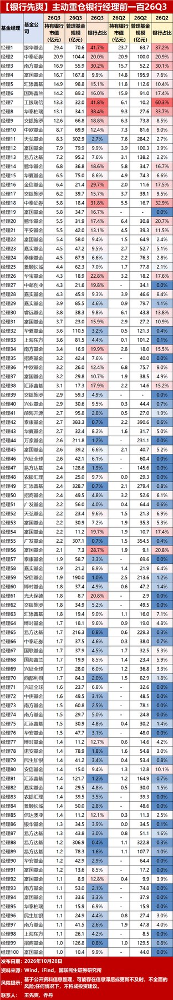
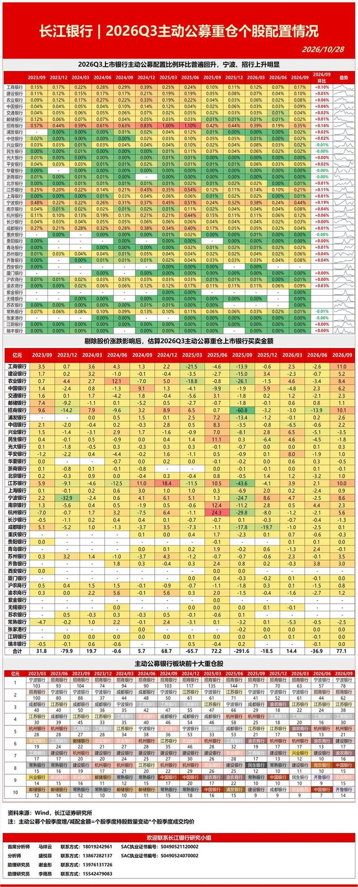
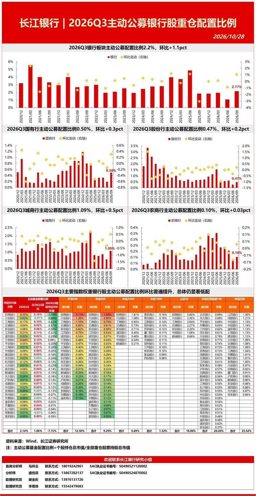
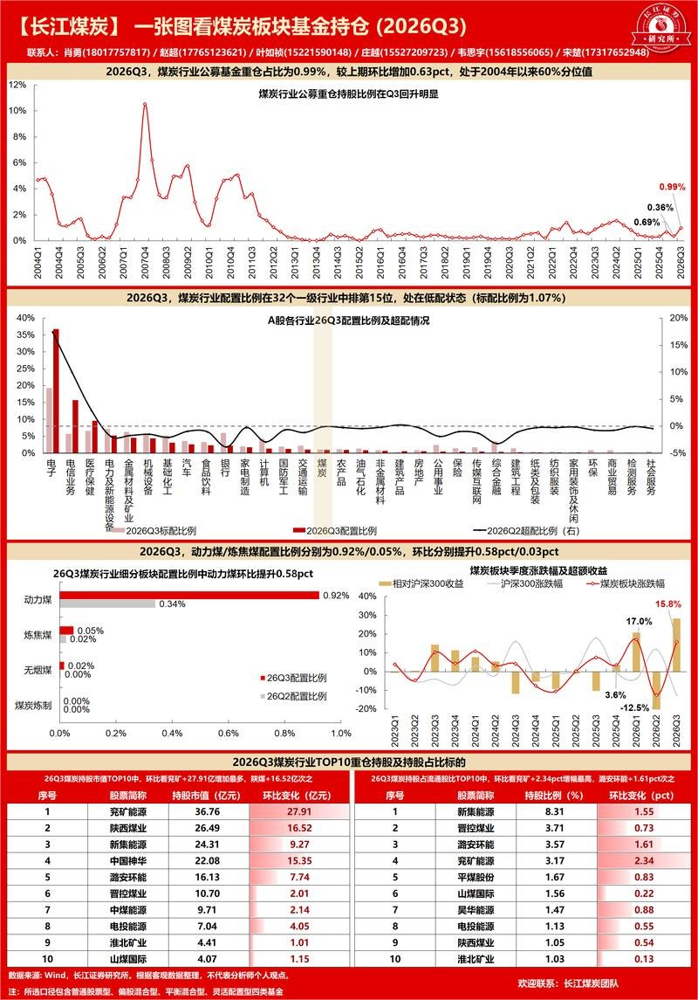
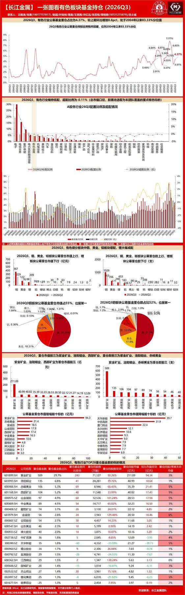
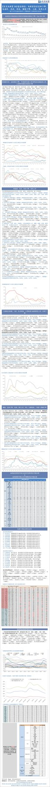
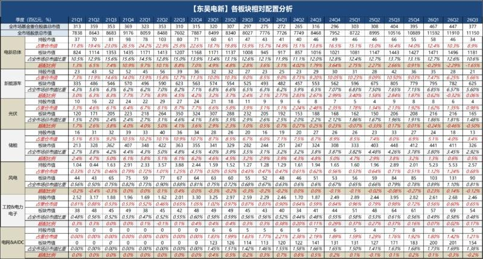

调研纪要 · 2026-10-28 新闻日报
星球 ID: 28855458518111 | 共 473 条帖子 | 精华 58 条
| 查看研究积累
强制同步到研究积累
全部 机械设备 计算机 医药生物 电子 电力设备 其他 食品饮料 基础化工 非银金融 传媒 汽车 商贸零售 轻工制造 纺织服饰 建筑材料 通信 社会服务 美容护理 交通运输 国防军工 建筑装饰 有色金属 农林牧渔 宏观策略 银行 家用电器 公用事业 环保 煤炭 石油石化 房地产 钢铁
书签
【GMF市场追踪】10月FOMC Preview
【GMF市场追踪】10月FOMC Preview
1、市场目前预计的加息概率是10%。虽然我们的基准预测和市场一致，但我们认为美联储有30%的概率在明天会议上会超预期加息。
2、从应然性角度看，我们维持此前观点即美联储理应持续加息，原因包括：1）近期的CPI通胀数据显著超预期，且通胀来源多样（房租、商品、交运服务）；2）Q3 GDP数据预计整体较强，就业市场数据细节比表观稳健；3）Kevin Warsh难以说服市场为什么在通胀超预期的背景下跳过一次加息。4）历史上看，拖拖拉拉加息更容易引发通胀失控和风险资产下跌。
3、从实然性角度看，联储可能不会选择加息，理由是目前市场加息预期少，部分委员可能认为没必要震动市场。但我们认为这和7月类似，是一种货币政策的“失误”，通胀预期和期限溢价可能反弹。不过，如果Kevin Warsh曾经抨击过此前FOMC被市场牵着鼻子走的行为，如果Warsh决定让市场相信其控通胀的态度是坚定的，也有可能超预期加息。
4、明天的会议没有点阵图，因此只有两个有信息含量的内容。
1）声明，关键是看反对票数。我们预计Hammack和Logan将投出反对票（支持加息）。如果没有反对票，将被市场视作是鸽派信号。如果反对票数量大于2票，将被视作鹰派加息。
2）记者会。预计时间仍然会很短，大约30分钟以内结束。记者可能会追问为什么通胀超预期但不加息，以及在中选前不加息的政治考量。预计Warsh会像之前那样以强调“原则”或“决心”的方式搪塞过去。
【外资客户市场反馈 | 韩国股市20261028】：SK Hynix创纪录业绩提振AI存储器投资逻辑，半导体龙头领涨推动KOSPI大幅反弹
【外资客户市场反馈 | 韩国股市20261028】：SK Hynix创纪录业绩提振AI存储器投资逻辑，半导体龙头领涨推动KOSPI大幅反弹
[太阳]KOSPI收报6,012.4点，上涨6.6%；KOSDAQ收报771.3点，上涨3.7%。韩国股市今日强劲反弹，其中KOSPI显著跑赢KOSDAQ，主要受SK Hynix公布创纪录业绩及扩大股东回报计划带动。市场对AI相关存储器需求持续增长的信心进一步增强，推动半导体板块成为资金集中配置方向，并带动指数全面上行。
[礼物]本次上涨的核心逻辑围绕AI存储器景气周期展开。SK Hynix超预期的盈利表现进一步验证了高带宽存储器（HBM）及AI服务器相关需求的强劲增长，同时公司宣布扩大股东回报力度，也强化了市场对于半导体龙头现金创造能力和资本回报能力的信心。受此带动，SK Hynix、三星电子等权重科技股领涨市场，成为推动KOSPI突破6,000点关口的主要动力。
[红包]与此同时，股东回报主题进一步向控股公司板块扩散。市场预期半导体企业创造的丰厚现金流有望通过分红及资本回报形式逐步传导至上层股权架构，带动相关控股公司获得重估机会。其中，SK Square因持有SK Hynix股权而受到市场关注，投资者预期其将受益于SK Hynix已确认的股东回报提升；三星物产及三星生命保险亦在三星电子10月29日业绩及后续分配方案公布前受到资金青睐。
[發]资金面来看，KOSPI市场外资净买入1,1610亿韩元，国内机构净买入1,1720亿韩元，散户净卖出2.331万亿韩元；KOSDAQ市场外资净卖出1,860亿韩元，国内机构净买入2,280亿韩元，散户净卖出360亿韩元。
[庆祝]个股方面，外资主要净买入SK Hynix、三星电子、三星电子优先股、三星E&A及KB金融集团；主要净卖出SK Square、三星SDI、Simmtech、LG新能源及PSK Holdings。韩国国内机构主要净买入三星电子、SK Hynix、SK Square、三星电机（SEMCO）及三星SDI；主要净卖出S-Oil、NAVER、三星电子优先股、Pan Ocean及LG Innotek。
[福]外资客户整体判断，SK Hynix创纪录业绩及股东回报提升，不仅强化了AI存储器周期向上的投资逻辑，也提升了市场对于韩国科技龙头盈利持续性的信心。当前市场关注点已从单纯的业绩增长，进一步延伸至现金流创造能力及股东回报分配机制，控股公司及关联受益标的因此获得额外关注。整体来看，今日市场主线仍围绕AI基础设施投资、存储器景气上行以及股东回报提升展开。在基本面持续验证的背景下，资金正重新回流至高质量科技龙头。不过，后续仍需关注三星电子即将公布的业绩及资本回报细节，以判断本轮半导体板块强势表现能否进一步扩散至更广泛的市场。
【AI眼镜】亚马逊推广配送专用智能眼镜，关注2B场景落地与渗透
【AI眼镜】亚马逊推广配送专用智能眼镜，关注2B场景落地与渗透
[玫瑰]亚马逊计划2026年底前为5000名配送员配备AI眼镜，2027年底扩大至2万人。此前18个月，已有超500名配送司机参与真实路线测试，累计完成超27.5万次配送。
[玫瑰]该产品面向配送作业流程，集成平视显示、计算机视觉与摄像头，可提供包裹信息提示、实时导航、宠物风险预警、妥投拍照等功能，减少配送员查看手持设备的频次，提升配送效率与安全性。
[玫瑰]配送场景具备流程标准化、需求明确及降本增效效果可量化等特点，有望成为智能眼镜率先实现规模化落地的2B场景之一，建议关注后续智能眼镜在2B领域的场景拓宽与渗透情况。
[玫瑰]受益标的：康耐特光学
#看好Q4传媒应用方向持续轮动【GF】
#看好Q4传媒应用方向持续轮动【GF】
我们维持近期催化密集判断，看好传媒内应用方向不断轮动；再次提示漫剧👉互动内容👉影视电影这一逻辑线
当前AI驱动的短漫剧是当下极少有的同比增长翻倍的细分赛道（广告创收）；往后看互动内容/高质量内容催化不断，春节档还有《
流浪地球3 ↗ 》待上映。
我们此前9月22日邀请#德才 举行AI互动剧产业线上交流，看到的是Seedance ARR加速趋势下的内容升级需求；当下看到的是微信有望从平台侧为行业带来更多增长动能+世界模型打开更多可能性；后续更多高质量的AI合拍剧与电影将会上线，看好反复轮动。
#互动内容
建议关注【德才、华策、百纳、华智】
模型侧：谷歌推出【世界模型】Genie 4，可生成拟真度高、可交互的虚拟世界，支持用户通过提示词修改场景。
产品侧：10/26，AI互动影游《三体：审判前夜》上架Steam商店页，产品即将推出；
10/27，火山引擎公布AI互动影游《
不问凡尘 ↗ 》上线Steam三周达成超26万销量，预估近千万流水。
12/2，《
隐藏真探 ↗ 》上线（百纳千成，制作类型对标《
隐形守护者 ↗ 》）
#电影院线
建议关注【中国电影、儒意电影、博纳（AI电影广寒行动）】
10/25-10/26，全国影片推介会举办，中影、华夏、猫眼、大麦、儒意等皆公布了在手片单，覆盖从贺岁档到2027年前期的一系列重点项目。
重点关注：《
流浪地球3（上） ↗ 》，中影主控，儒意参投；27春节档头部片
#AI短/中剧
建议关注【德才、中文、华是、浙数、芒果】
【微信绿泡泡/视频号】由于分账制度、投流政策相对红果较优，整体ROI目前比抖音端更好，从年中开始渠道承接抖音端外溢，到目前来看已成为各家主动选择的渠道补充。根据dataeye，绿泡泡短剧月活已达到1.43亿。
【红果】9月月活 4.3亿、日活2.03亿。#如需月度qm数据可以联系黄静仪~
【出海】10/27，Meta旗下Instagram测试微短剧功能，未来AI剧出海在渠道端选择将更为丰富。
【开源计算机】Anthropic递交S-1招股书，模型与产品双轮驱动兑现盈利拐点-20261028
【开源计算机】Anthropic递交S-1招股书，模型与产品双轮驱动兑现盈利拐点-20261028
[太阳]递交S-1招股书，巨额算力承诺锚定上游订单，公益条款树行业治理范本
美国当地时间10月26日，Anthropic向美国SEC递交S-1招股书，正式启动首次公开募股。本次IPO对行业的影响预计沿“算力需求锚—渗透与竞争参照—治理范本”三个层面外溢：招股书披露的采购承诺基本上全部与计算和基础设施有关，为上游芯片、数据中心与电力供应链提供确定性订单锚；部分云服务商既是战略投资者和是客户，也是模型的竞争者，资本充足度将成为前沿模型竞争的重要因素；公司将向公共利益基金捐赠846,840,960股N类普通股，公共利益条款首次系统性写入前沿AI公司上市文件。
[太阳]用量型收入主导、客户结构量价齐升，刚性算力承诺仍考验现金流覆盖能力
收入端，公司收入由2023年的4,100万美元增至2025年的45.85亿美元，2026年上半年达162.86亿美元、约为上年同期的14倍；调整后营业利润16.18亿美元、利润率10%，上年同期尚亏损18.49亿美元。收入结构以按智能用量付费模式为绝对主导，2026年上半年用量型收入131亿美元、占比80%。客户结构沿“数量扩张+单体加深”双轮演进，收入10万美元以上客户超过11,900家、百万美元级超1,900家，覆盖财富10强全部、财富500强超50%。成本端，计算与基础设施费用仍为最大成本项，2026年上半年此费用89.45亿美元，未来仍面临巨额刚性算力承诺，营收增长能否持续将影响经营现金流对算力承诺的覆盖能力。
[太阳]模型迭代降本增效，AI应用沿垂直场景纵深落地
Anthropic通过“模型—平台—应用”一体化架构交付Claude智能，任一层改进均可贯穿全栈并惠及客户。模型端，2026年9月发布的Opus 5.5将客户单任务成本压降约40%，同月发布的Fable 5.1将典型工作负载成本降低约25%、复杂编码任务节省最高45%。平台端，面向Agentic开发环境开放扩展思维、工具调用、MCP等模块化组件，提示缓存可使长提示成本最高下降约97%。应用端，Claude Code与Claude Cowork构成自有应用双引擎，叠加三大云平台分发与2026年3月设立的覆盖逾4,000家组织的Claude合作伙伴网络，AI应用沿垂直场景纵深落地：金融服务、财务顾问、医疗保健、生命科学、法律、教育与政府七种垂直方案均内嵌领域知识、合规控制与预配置数据集成，直接嵌入客户工作流。
[啤酒]受益标的
大模型：智谱、minimax等。
风险提示：大模型技术迭代不及预期风险等。
链接：
开源计算机|行业点评：Anthropic递交S-1招股书，模型与产品双轮驱动兑现盈利拐点 ↗
☎欢迎联系：张越17316258956/刘逍遥/叶进新/刘炬帅
🌈【Anthropic：Claude加速药物研发】核心要点梳理
🌈【Anthropic：Claude加速药物研发】核心要点梳理
🔹 Pleiades：探索AI原生生物科技公司的运营模式。
The Column Group正在组建Pleiades，尝试通过Claude减少科研、运营和行政成本，使小规模团队能够同步推进更多、更复杂的药物项目。首个Claude技能聚焦“靶点是否值得推进”的早期判断，已完成45组“靶点—疾病”组合的评估。若该模式得到验证，有望降低生物科技公司的创建及运营门槛。
🔹 BMS：应用范围向临床试验规划延伸。
Claude已被用于分析早期药物的专有数据、形成临床研究计划并估算试验成功可能性。单次提示即可生成较完整的初步分析，为比较不同临床开发路径提供参考，并压缩原本需要数日完成的部分工作。双方计划于2027年进一步扩大合作，重点评估AI能否改善早期临床开发和管线组合决策。
🔹 Mithril：验证“一人团队+AI+外部实验室”的研发模式。
Anthropic收购了专注于两种罕见肌肉萎缩症的Mithril Medicine。其创始人借助Claude在不到18个月内将一个潜在疗法从概念推进至取得较积极的小鼠实验结果。若后续进展顺利，候选药物最早可能于2028年末进入人体临床试验；Anthropic计划启动更多内部药物研究项目。
🔹当前仍以临床前验证为主，下一阶段重点检验临床价值。
Anthropic将沿两条路径推进：一是随着合作项目进入临床阶段，扩大Claude在试验设计、执行和管线决策中的作用；二是通过Claude Science、科研额度、生命科学验证计划及外部研究者项目，向更多机构开放模型，同时平衡科研效率、敏感数据保护与生物安全风险。
Optimus V3硬件基本冻结，年底前量产。那特斯拉为什么还藏着不发？
Optimus V3硬件基本冻结，年底前量产。那特斯拉为什么还藏着不发？
RoboStrategy 研究主管 Scott Walter 和 Herbert Ong 聊了47分钟
1️⃣ 供应商披露：一级供应商新剑传动因IPO必须披露，V3硬件设计基本冻结、可以演示，计划今年底前量产。重载线性关节用行星滚柱丝杠，手部用滚珠丝杠。
2️⃣ 手才是最难的：马斯克说拧螺丝要同时做到精度和力量，他见过的手部设计连演示都做不到。触觉传感器要能变形、耐磨损，人手会自我修复，机器人不会，所以可能改用手套。
3️⃣ 量产遇阻但在爬坡：据The Information报道，产量涨了十倍，但手和关节工位对不准，下线返修多。Scott估算每周两三百台，年底可能有3000台以上。
4️⃣ Scott的理论：V3发布可能是一支5000台的“军团”。只有特斯拉能量产，也最适合秀规模，地点可能在会展中心，需要现场观众。他猜在明年二季度，至少还要六个月。
5️⃣ 其他线索：马斯克为Optimus把AI5芯片内存砍了一半；奥斯汀在招自动化装配线工程师和车队协调员；德州Optimus工厂钢结构完成40%，厂房面积够年产一千万台。
🔺 Scott的预期是，每年十倍爬坡，2030年前后才可能年产数百万台。
[拳头]人形机器人量产浪潮来袭，轻量化材料迎来确定性增量空间【光大能源化工与新材料团队】
[拳头]人形机器人量产浪潮来袭，轻量化材料迎来确定性增量空间【光大能源化工与新材料团队】
🌟2026年为人形机器人“量产兑现元年”，轻量化材料迎来确定性增量空间。据工信部预测，2026年全年我国人形机器人整机产量有望突破10万台。2024年人形机器人全球销量0.3万台，2025年出货量跃升至1.3万台以上，成长势头初显；Omdia预测2030年全球销量将达60.57万台，2035年有望攀升至260万台。相较传统工业机器人，人形机器人对轻量化、耐损耗等要求严苛，有望带动碳纤维、特种工程塑料、高端改性塑料等化工材料需求增长。
🌟碳纤维适配轻量化刚需，机器人放量驱动需求攀升。碳纤维在人形机器人领域的核心价值在于构建轻量化、高强度的“骨骼系统”，为其规模化落地提供材料底座。当前，国内T300、T700级碳纤维已大规模应用，T800级稳步推进量产，T700~T800级已能满足人形机器人大部分结构件需求，但T1000级及以上高端产品自给率不足10%。随着人形机器人逐步走向规模化，高端碳纤维应用比重将持续提升，工艺升级有望打开国产替代的增量空间。
🌟PEEK性能优势凸显，领跑机器人轻量化赛道。轻量化是较好实现人形机器人负载、续航能力和灵活性等的解决方法之一。PEEK材料在拥有较高刚性的同时也具有较高的韧性，同时兼具耐热性、耐腐蚀性、耐磨性等特性。此外，PEEK材料作为一种热塑性材料也易于加工成各种形态的零件，应用在各类特殊部件或特殊工况中。同时，纯PEEK树脂密度仅约为1.3g/cm3，是一种极佳的轻量化材料。
🌟多品类化工材料受益，龙头企业尽享发展红利。PPS、LCP、PPA等材料在机器人关节、齿轮轴承等核心部件中的应用前景同样广阔。以国内特种工程塑料龙头金发科技为例，公司已组建机器人材料研发团队，积极与机器人领域头部企业开展合作，推出超高强度、耐疲劳耐磨PPA等系列产品。随着人形机器人量产节奏加快，具备自主研发能力、产能规模优势及客户先发优势的行业龙头，有望持续抢占进口替代市场份额。
[玫瑰]投资建议：随着人形机器人批量化生产加速推进，有望带动碳纤维、特种工程塑料、高端改性塑料等轻量化化工材料需求增长。建议关注：1）PEEK板块的中研股份、新瀚新材、中欣氟材、沃特股份、肯特股份；2）碳纤维板块的上海石化、吉林化纤、吉林碳谷、中复神鹰、中简科技、精工科技；3）改性塑料板块的金发科技。
[礼物]风险分析：技术替代风险，下游推广及应用不及预期风险，原材料价格波动风险。
🎉欢迎交流
蔡嘉豪13361654532/赵乃迪18618495784/周家诺/王礼沫
[太阳][太阳]【长江电新】机器人：模型跃迁是场景扩容的核心，机器人大时代将至，继续强call机器人板块！
[太阳][太阳]【长江电新】机器人：模型跃迁是场景扩容的核心，机器人大时代将至，继续强call机器人板块！
#模型模型跃迁是场景扩容的核心，后续模型端有望看到群星闪耀
1）Astra模型打响第一枪：Astra模型的参数量提升助理模型多模态能力提升，【泛化】+【长时序任务】的能力加速场景应用预期。
2）其他大模型厂接力，后续有望看到群星闪耀：除了Astra以外，宇树、字节、智谱，包括特斯拉的Grok模型后续将陆续发布，效果惊艳的应用场景也有望陆续出来，模型端超预期值得期待！
#特斯拉的订单先行，本体产线上量跟进，Grok模型助力有望软硬闭环
1）百万产量自动化线落地：T链本体全自动化产线进入最后收官阶段，11-12月本体产量将快速爬坡，年底匹配供应商订单量级，27年全年产量有望继续上修。
2）特斯拉多模态模型同步推进，Grok5模型有望向Astra模型看齐，场景能力值得期待。
#当前位置强call T链硬件，T链硬件仍将是主线，关注其他大厂硬件公司以及数采行业机会
1）T链：轻量化龙头【福赛】，谐波龙头【斯菱】，旋转环节【新泉+凯迪】，结构件【科森】，轴承【光洋+万向】，总成【三花+拓普】，丝杠【北特+荣泰】，设备【田中】
2）模型+数采：数采【海天瑞声+均普】，数采设备【福莱+奥比】
3）国产本体起量，推荐【上纬新材+宇树科技】等
🤖OpenAI、Tesla巨头加速布局，具身大脑能力升级，重视物理AI的板块行情【建投机械】
🤖OpenAI、Tesla巨头加速布局，具身大脑能力升级，重视物理AI的板块行情【建投机械】
#怎么看待这轮的变化？
1️⃣GPT-6 Astra的进步，论文评测认为其已很大程度跨过“具身胜任能力”的门槛，显著提升了机器人全身操作、指令导航、精细操作等任务能力。我们一直强调，大脑能力决定物理AI发展上限，#Astra的进步增强市场对于具身智能大脑发展的信心，仍为本轮行情的重要底层支撑。同时Altman表态自研整机也构成边际催化。
2️⃣Tesla量产持续推进，业绩会给出清晰时间线，#1-2月内发布Optimus视频，明年4月将把特斯拉AI5芯片集成到Optimus，27年底前解决AI算法、机器人本体等问题，并实现Optimus对外销售，且有望达到周产2万台水平。Tesla Careers官网公告招聘岗位含Optimus数据采集员。
#如何选择投资方向？
1️⃣OpenAI进展为行情催化核心，#OAI链不论物理AI、端侧AI都值得重视：博众精工、兆威机电、奥普特、领益智造。
2️⃣具身、模型公司采购数据，特斯拉自产1-2w机器人进行训练，#数据采集行业预计高速增长：奥比中光、LYG、HWKJ、福莱新材、安培龙、华依科技。
3️⃣Tesla给出Optimus时间线，#核心T链公司值得关注：恒立液压、三花智控（汽车组）、拓普集团、FSKJ、斯菱智驱、五洲新春等。
物理AI-智驾：重视特斯拉Robotaxi进展提速-20261028
物理AI-智驾：重视特斯拉Robotaxi进展提速-20261028
今年前三季度由于国内L2+产业链的通缩、国内L4牌照暂停、特斯拉miss等诸多因素，板块信心非常低。
但是近期我们观察到自9/3 Cybercab发布会以来，特斯拉Robotaxi进展开始真正意义上的提速，几个关键指标上已经接近于临界点：
1、奥斯汀单城市的运营规模已和Waymo持平。
1）根据德州DMV数据，截至今早，Waymo和特斯拉在奥斯汀的车队注册数量分别约为1200/1100，其中特斯拉Cybercab为573辆（过去一周Cybercab的注册量超过200辆）。
2）特斯拉Robotaxi在奥斯汀每周的行驶里程已超过Waymo。
2、奥斯汀以外的城市同样开始提速：达拉斯已大幅拓张地理围栏（Cybercab也很快会在达拉斯对公众开放）；同时马斯克昨天在X上表示迈阿密和坦帕的地理围栏很快也将拓张。
特斯拉Robotaxi进展背后的技术变化：1）软件：目前整合了~40%左右FSD V15的技术栈；2）硬件：有报道称特斯拉Robotaxi可能是在AI4的基础上增加了内存或采用了AI5的早期样片。
很多领导问怎么判断Robotaxi的拐点？我们认为是V15（如果相比于V14 MPCI再提升10x），现在Cybercab的进展相当于V15的preview版本。
物理AI：从虚拟智能到具身闭环，数据缺口定瓶颈
物理AI：从虚拟智能到具身闭环，数据缺口定瓶颈
物理AI（Physical AI）指能感知、理解并在真实物理世界中执行复杂操作的模型，是人工智能从虚拟智能迈向具身智能的关键桥梁，其外延覆盖：①人形机器人、②工业机器人、③智能驾驶三大核心场景。
物理AI可大体分为基础模型层、硬件层、工具与应用层，其中软件的价值量主要集中于基础模型层、工具与应用层：
1）基础模型层呈现VLM、VLA与世界模型三条路径收敛之势。世界模型作为后台数据工厂合成训练数据，VLM承担长程规划的“慢思考”，VLA则把指令与感知直接转化为动作。海外格局是“NVIDIA一超、Google/Figure/Pi多强”，英伟达凭仿真、世界模型、基座VLA与软硬件全栈抢占“机器人安卓”地位；国内则由人形机器人厂商主导基模+硬件，大厂仍在追赶。
2）工具层是被低估的一环。仿真平台是基础模型训练的核心数据来源，英伟达Omniverse/Isaac主导、国内智元Genie Sim等开源生态加速追赶。物理AI还从仿真训练与数字孪生两个维度拉动工业软件需求，英伟达已与Cadence、达索、PTC、西门子、Synopsys等巨头深度合作。随着部署量提升、数据持续回流，物理AI有望进入“数据增长—模型迭代—能力提升—场景扩张”的飞轮。
3）应用场景端，智驾完成从端到端到VLA世界模型的切换，人形机器人已开始加速量产并构建数据—模型飞轮。
#近期物理AI产业突破与进展不断： #AMD拟以约82亿美元收购World Labs。2026.9.28 AMD宣布签署收购World Labs的最终协议，交易估值约82亿美元，预计于2026年底前完成。
#OpenAI宣布将下场研发机器人。2026.9.2 山姆·奥特曼在《
Sources ↗ 》播客中首次明确表示，OpenAI将亲自下场研发人形机器人。10.17奥特曼公开确认公司将自研人形机器人，计划2027年推出演示样机。
#Optimus已启动生产。近期特斯拉26Q3财报与业绩会中，明确宣布Optimus已在加州弗里蒙特工厂启动生产，进入早期产能爬坡阶段。
#当前物理AI核心需关注点：数据
目前全球物理AI真机数据约在十万小时级，而对应缺口可能达千万倍水平。且训练数据难以获得，一方面真机遥操数据采集成本高昂，另一方面仿真数据则存在sim2real鸿沟。
投资建议：建议重点关注数据采集（海天瑞声、奥普特等）、机器人大脑与仿真能力提供商（索辰科技、仙工智能、道通科技、五一视界等），应用端建议重点关注自动驾驶相关软硬件服务商（地平线机器人、中科创达、经纬恒润、禾赛科技等）。
📑 高盛 A 股收盘
📑 高盛 A 股收盘
📊 上证指数 +0.91%｜科创 50 +2.45%
📊 上证 50 +0.23%｜创业板指 +3.40%
📊 沪深 300 +0.85%｜中证 500 +1.99%
💴 全天总成交额 1.64 万亿元，较前一日上涨 11.49%
📈 A 股跟随亚太市场强势走势迎来修复反弹。
📌 上证指数下午盘中震荡加大，但是在 AI 供应链久违反弹的支撑之下，收盘收在高位。
✨ 中际旭创（300308.SH）上涨 10.28%，是 9 月初以来首次涨停，板块内其他标的同步跟涨，高盛中国光网络指数上涨 6.49%。
🔄 盘面价值风格和成长风格出现轮动切换，白酒、金融、航运板块成为今日资金流出方向。
📉 高盛白酒指数下跌 2.08%，五粮液（000858）三季报业绩显著低于高盛预期。
🤖 机器人板块延续上涨行情，市场关注宇树科技（688836.SH）的业绩，该股上涨 8.74%。
🤔 虽然板块反弹力度较强，但市场对于基本面是否出现实质性改善，观点仍然存在分歧。
📌 另外值得留意：长鑫存储（688825.SH）上市满三个月后，正式纳入上证指数和科创综合指数，同时成为权重最大的成分股（在上证指数权重约 4.7%，科创综合指数权重约 15%）。
📌 北向资金交投活跃度持续低迷，已经连续第二个交易日出现该情况，全天市场成交额较前一日提升 11%。
💸 资金流向：多空力量相对均衡。
✅ 买入方向：GPU、电池、CPO 板块
❌ 卖出方向：白酒、银行板块
⚖️ 半导体设备板块多空分歧较大。
📑 高盛港股市场复盘
📑 高盛港股市场复盘
📊 恒生指数 +0.2%｜恒生中国企业指数 +0.3%｜恒生科技指数 +1.4%｜成交额 1810 亿港币
📈 领涨板块：材料 +2.2%，医疗保健 +1.6%，信息技术 +1.5%
📉 领跌板块：公用事业 -1.4%，能源 -0.8%，必需消费品 -0.7%
🤔 港股全天震荡、走势犹豫，AI 交易情绪回暖，区域存储芯片市场同步走强。
📌 韩国综合指数上涨 6.6%、台湾加权指数上涨 2%，领跑亚太区域，恒生指数表现相对落后。
💸 市场成交依旧清淡，南向资金延续卖出态势。
📝 盘面买盘偏弱，港股这边的风险偏好更多体现在空头交易上。
✅ A 股相比港股收获了更好的涨幅，上证指数摆脱昨日的弱势，迎来一定反弹。
📊 资金流向层面：交易台看到消费板块有不小抛压，其中泡泡玛特出现明显空头做空。
📌 保险板块同样出现卖盘，友邦保险在本周晚些时候披露业绩前遭遇资金流出。
💻 科技板块方面，交易台卖出阿里巴巴。
🏭 工业板块多空博弈均衡，部分资金在宁德时代进行 A/H 价差交易，方向性交易退居次要位置。
✨ 港股新增买盘、风险偏好提升集中在 AI 硬件、半导体标的。
📌 交易台观察到华虹半导体获得资金买入。
🔬 分板块来看：AI 硬件、半导体领涨，半导体指数 GSXACSEM 上涨 5.2%。
📰 路透社报道，中国长鑫存储计划在两个月内启动 HBM3E 芯片的有限量产，目前良率偏低。
📉 平台科技股走势偏弱，网易下跌 1.3%、携程下跌 1.1%、美团下跌 0.9%，表现落后大盘。
💊 医疗保健板块在前期获利了结后迎来反弹，市场消息为 “国内公募基金在三季度减持科技板块、加仓医疗板块”。
🛍️ 另一边，消费板块承压，澳门博彩板块下跌 2.2%，回调幅度显著。
📌 泡泡玛特开盘大幅下挫，盘中有所修复，交易台观察到该股出现大额做空。
📑 高盛韩国收盘点评
📑 高盛韩国收盘点评
📊 韩国综合指数：上涨 6.63%，点位 6012.4，成交额 148 亿美元，外资净流入 6.09 亿美元
📊 韩国创业板指数：上涨 3.69%，点位 771.3，成交额 50 亿美元，外资净流出 1.37 亿美元
📋 市场复盘
🚀 韩国综合指数今日大幅上涨，上涨由 AI 供应链带动，SK 海力士（000660）上涨 10.9%；其三季度业绩超出预期，营业利润超预期 8%，业绩电话会帮助市场修复对 AI 板块的信心，带动指数重回 6000 点上方。
💵 外资与本土机构延续连续两日净买入韩国综合指数，买盘集中在科技板块（外资买入 5.85 亿美元、本土机构买入 6.38 亿美元），散户投资者选择获利了结。
✨ SK 海力士是今日市场焦点，公司披露三季报，同时公布 2026 年总额 100 万亿韩元股东回报方案（其中包含 20 万亿韩元回购）。
👀 市场接下来关注三星电子将于韩国时间明日上午 10 点召开的三季报业绩电话会，重点观察管理层是否会披露更多股东回报相关细节。
📌 除此之外，SEMCO（009150）上涨 8.7%，同样披露三季报，营业利润 6910 亿韩元，较彭博一致预期 6602 亿韩元高出 5%。
📊 韩国综合指数成交额较 20 日均值提升 11.6%。
💱 韩元贬值 106 个基点，汇率来到 1 美元兑 1338.2 韩元。
📰 主要头条
🔬 半导体板块（上涨）：SK 海力士 (000660) +10.9%、三星电子 (005930)+9.0%
📌 SK 海力士盘前公布三季报时，股价起初表现平淡，虽然业绩 83.3 万亿韩元，高于彭博预期 76.9 万亿韩元、高盛预期 77.5 万亿韩元，但市场认为 20 万亿韩元的回购规模低于预期（市场一致预期在 30-40 万亿韩元区间）。
✅ 但随着业绩电话会推进，管理层给出积极指引，股价重新走强。
📝 电话会核心要点：①2026 全年股东回报总额将达到 100 万亿韩元，符合市场预期；②存储芯片短缺预计持续至 2030 年，SK 海力士大部分 DRAM 产能订单已经锁定至 2029 年；③SK 海力士已经拿到长期供货协议，覆盖 2027-2028 年总产能的 50% 以上。
👀 市场接下来关注三星电子明天韩国时间上午 10 点的三季报电话会，投资者会寻找更多股东回报相关信息。
💸 资金流向：外资和本土机构同步净买入 SK 海力士（外资 2.88 亿美元、本土机构 1.77 亿美元）、三星电子（外资 2.80 亿美元、本土机构 2.97 亿美元）；散户选择获利了结，在 SK 海力士卖出 4.63 亿美元、三星电子卖出 5.64 亿美元。
🤖 机器人板块（上涨）：斗山机器人 (454910)+6.9%、彩虹机器人 (277810)+15.1%、ROBOTIS (108490)+9.8%
📌 上涨催化消息：英伟达 Omniverse 与机器人业务高级总监 Madison Huang 预计 11 月 8-9 日到访韩国，出席 2026 英伟达首尔 AI 日。
📰 本地媒体报道，英伟达和韩国公司在机器人、制造业物理 AI 领域的合作逐步落地，市场关注本次到访能否推进更多合作洽谈。
CPO 价值链环节
CPO 价值链环节
1）平台/ASIC：NVIDIA、Broadcom；已推出 CPO 产品并开始供货；跟踪出货量和采用率。
2）光学 DSP/互连：Marvell、Broadcom；配备 1.6T DSP/400G；跟踪转向 CPO 后的产品配置。
3）激光器：Coherent、Lumentum；与 NVIDIA 合作提供高性能光源；跟踪采购量、平均售价和产能扩张。
4）硅光子制造/封装：TSMC；COUPE、SoIC 和光引擎制造；跟踪产能和良率。
5）光学元件：Corning、SENKO 等；光连接器、光纤阵列单元和精密对准；跟踪 CPO 供货合同。
6）光学组装：Fabrinet 及专业光学封装供应商；精密组装和规模化生产；跟踪客户认证和量产良率。
7）光电测试：Advantest、Teradyne、FormFactor；光电测试能力；跟踪每小时测试量和设备资本支出。
❗【天风电新】底部再call先导基电和SOFC板块：预期底部，供应链上涨不会缺席-1028
❗【天风电新】底部再call先导基电和SOFC板块：预期底部，供应链上涨不会缺席-1028
————————————
随着Anthropic开启IPO、Meta完成股权融资，对于AI资本开支的担忧缓解，BE也开始反弹。国内SOFC供应链仍在底部，继续看好先导基电。
先导能够从SOFC产业链最紧缺的连接体率先切入，份额陡峭提升。核心是因为其#卡位了材料、设备等瓶颈环节，并决心大规模扩产。
1） 连接体的主要材料铬粉、喷涂粉，先导均是国内第一大供应商，尤其是喷涂粉环节，其核心原材料LaSrMnCo，先导掌握80%份额，并供应其他2家竞对；
2） 连接体的关键设备压机，此前为德国企业垄断。公司已成功实现设备国产自制，预计26年底、27年初产能即可到位。
公司#计划按27、28年10GW、20GW目标扩产，帮助解决供应链瓶颈问题，加速燃机替代。
同样的逻辑适用于隔膜片环节，充足的氧化钪供应储备，是其能够敢于大规模扩产的底气。此外BOP系统的热电偶、保温材料，配电系统的开关柜、变压器、超级电容等产品在客户端验证，预计后续也会有订单催化。
🌟投资建议：从连接体、隔膜片到BOP系统再到配电系统，先导#未来单GW供货价值量有望达7亿美金，SOFC供应链价值量最高、弹性最大的公司。当前市值300亿出头基本仅反映明年半导体设备、材料估值，底部坚定看好。
BE已经率先上涨，A股SOFC板块只会迟到，不会缺席。市场在这个位置企稳后，大概率会#选择新技术的SOFC作为进攻方向，核心逻辑仍然是替代燃机，公用事业发电空间大。虽然近期反弹较弱，我们仍然看好SOFC板块：
1）主机厂：BE、潍柴动力、三环集团、云意电气、华丰股份。
2）供应链：先导基电、振华股份、壹连科技、春晖智控、京泉华、德昌电机控股、三环集团、星源材质、中原内配等。
————————————
欢迎交流：孙潇雅/敖颖晨
主业底部+新期权❗️【天风汽车】如何看待继峰拟投资的康代？
主业底部+新期权❗️【天风汽车】如何看待继峰拟投资的康代？
———————————
继峰拟出资 2 亿认购海宁视联基金32.05%份额；该基金【唯一投向康代智能】，认购完成后按穿透测算间接持有康代10.68% 股权。康代前身为以色列Camtek PCB 事业部，17 年分拆。
起初认为是一笔简单的财务投资，然而梳理下来发现康代是高端PCB+先进封装AOI设备领域的稀缺国产龙头：
1）PCB：产品可检测 4μm 线宽/线距PCB，据 20年问询函披露其他大陆厂商最高端机型为 30—50μm。
19 年全球前 20 大 PCB 厂商中19 家均为公司客户，其中三成台系；覆盖臻鼎、欣兴、TTM、健鼎、深南等。
19年在全球 PCB 检测设备份额19.6%，其中挠性板、HDI和IC载板合计份额33.5%。
尽管#公开数据比较老旧，但极其优质的客户和强有力的市占率足以说明质地的潜力。
2）先进封装：第二增长曲线，延伸至晶圆级、面板级先进封装检测与量测，集成2D+3D量测功能，可覆盖玻璃基板检测等需求。
该领域全球龙头目前由 Onto、KLA、Camtek 等外资占据，受出口管制叠加国产化率较低影响，#国内市场存在较大份额缺口。此类AOI 2D+3D设备单台 ASP 大几百万至上千万不等，为 PCB AOI 设备单价的几倍甚至十倍以上。
如何测算康代产品对应的市场空间？
2025 年全球 PCB + 载板 AOI 检测设备市场测算：根据 Prismark，2025 年全球前 40 家 PCB 制造商资本开支约 94 亿美元，假设头部 40 家占总资本开支的 70%，假设 AOI 设备占 PCB 资本开支比例 5.3%，得市场～50 亿人民币。
2025 年全球先进封装 AOI 2D+3D 检测设备市场测算：根据 Onto、KLA、Camtek 头部三家厂商该类别产品收入之和～70 亿人民币、假设 CR3=70% 倒推，得市场～100 亿人民币。
⭐我们认为，这笔投资对继峰的意义应定位为“硬科技战略卡位'',，真正的价值在第二曲线想象空间。康代系国内唯一能量产 4μm高端 PCB AOI设备的厂商、已切入先进封装领域，资产质地十分优质。
我们预计继峰明年汽车零部件主业9e利润，当前16x，当前时间点，该投资相当于一份低成本的成长期权，意义应当被重估。
———————————
欢迎交流：孙潇雅 / 庄恬心
🔥【国金机械】GEV三季报点评：新签订单大超预期，燃机订单排期延长至5.88年
🔥【国金机械】GEV三季报点评：新签订单大超预期，燃机订单排期延长至5.88年
#26Q3新签燃机16.6GW，#新签继续创新高，#在手订单可见度提升到5.88年。 26Q3，GEV燃机新签订单16.6GW，同比+124%，环比+37.19%，订单大超预期。同时，交付端，26Q3交付燃机5.3GW，交付端相对稳定，新签-交付的剪刀差大幅拉大。在手订单方面，26Q3末GEV电力板块（燃机约占82%）在手订单为1308.54亿美元，按照过去4个季度电力业务合计收入222.65亿美元计算，当前电力业务在手订单覆盖年限从26Q2末的5.31年提升到5.88年，订单排期大幅拉长，燃机紧缺加剧。
#上修业绩指引，#行业景气持续向上。 GEV上修全年财务指引，26财年收入预期从455-465亿美元上调至465-475亿美元，调整后EBITDA利润率从12%-14%上调至13.5%-14.5%，自由现金流从115-125亿美元上调至160-170亿美元。其中，电力业务收入增速从18%-20%上调至19%-21%，分部EBITDA利润率从17%-19%上调至19%-21%。看好国内产业链龙头应流股份业绩同趋势向上。
#全球燃机紧缺加剧，#首推叶片龙头应流股份，#建议关注杰瑞股份、上海电气、东方电气、西子洁能等。 首推叶片龙头应流股份，26年8-10月应流股份分别有3台炉子达产，产能加速爬坡，Q3收入、利润有望加速提升。集成商推荐杰瑞股份，累计燃机订单金额超过31亿美元，1-3Q26新增订单和存量燃机订单均翻倍以上增长。主机厂建议关注上海电气、东方电气、中国动力、汽轮科技等。余热锅炉订单爆发较燃机滞后1年，26H2锅炉需求有望加速抬升，看好公司26Q4燃机锅炉订单在北美加速落地。
☎国金机械：满在朋/房灵聪18361753245
[庆祝]从杰克机器人现场展示我们看到了什么？
[庆祝]从杰克机器人现场展示我们看到了什么？
1️⃣机器人+自动缝纫设备的标准自动化单元已经跑通，同时工序覆盖面大幅扩展，目前已经覆盖了包含贴袋、拼袖、合侧缝、锁眼、印刷等等，已经可以进真实产线上工！
2️⃣准确率大幅提升。经过10万小时级别真机数采，训练50E参数大模型，控制算法大幅优化，整个操作过程非常稳定（可以参考视频）。
3️⃣机器人具备自主决策优化能力，在实际操作过程中可以看到由于布料有弹性，拿放过程均会产生不可控形变，需要通过推理实现矫正（我试着给机器人捣乱提前移动了布料没有影响抓取）。
4️⃣未来想象空间巨大，单价价格30万，全球服装工人总量过亿，万亿级别潜在市场空间。就算是只考虑模板机假设一年10万出货量也是300亿市场潜力。
🌞重视物理AI垂类低位【华锐精密】
🌞重视物理AI垂类低位【华锐精密】
🐟【华锐精密】，宇树核心加工刀具耗材，估值低。
#AI+工业打开第二增长空间，公司是国内唯一能提供完整智能刀具加工系统的厂商。国内CNC保有量1000w台，每年新增50w，“智加”标准单价为3.8w，市场空间达3000亿元+。
物理AI落地切削现场，首推【华锐精密】！
物理AI落地切削现场，首推【华锐精密】！
🌹 物理AI加速进入生产设备，刀具成关键入口
刀具直接接触工件，是切削执行端，也是工艺数据入口。华锐依托数十年积累的刀具/工艺数据库打造“智加”工业软件，打通物理AI闭环 ：内嵌3000个AI算法工程及百万级切削数据。
可实现加工效率提升5%—30%，良品率提升2—8pct。意外停机时间降低50%以上。
🌹 千亿市场空间，打开业绩弹性
国内CNC保有量约1000万台，每年新增约50万台。“智加”标准单价3.8万元，理论市场空间达3000亿元以上。
按1—2万套销量进行情景测算，对应收入3.8—7.6亿元，业务具备较强弹性。
🌹 产业化持续突破
“智加”已完成多行业小批量交付。在汽车上市公司落地典型应用，软件端已取得部分订单。
依托积累的场景与数据，公司正向机械加工工艺智能体升级。
✅ Q3归母净利润同比+49%、环比+24%，刀具主业竞争力再验证，进口替代持续加速，物理AI打开增量。强推【华锐精密】！欢迎联系【中泰先进产业】交流。
💣风险提示：产品推广、客户转化及订单放量不及预期。
讲一下立讯：在AI Factory的阶段，产业链需要的热电铜光一体化的能力。
讲一下立讯：在AI Factory的阶段，产业链需要的热电铜光一体化的能力。
1️⃣光模块业务：通过OCP的调研，我们认为800G 和 1.6T 的进度没有问题，全年的量可以边走边看。但是在最大的客户这里，光的业务27年会超过铜。
2️⃣高速铜缆：在Google、NV、阿里、字节全面突破，产品也从DAC扩展到NPC/CPC、cartridge。448G CPC已经做到1米。是有自己主要的研发界面的一线厂商。对标安费诺
3️⃣电源：337法案让市场看到了公司2次，3次侧的能力。OCP上，公司的SST产品已经在指标上做到了行业领先；
4️⃣散热：公司的液冷产业在OCP NV的展台展出，确定进入供应链。
27年的AI硬件，我们不止有光。我们有热电铜光、有AI全栈、有轩辕3.0。坚定推进立讯精密！！！
☎ 立讯精密路演：张宁/谢致远/范宇！！
【zx电新】Vertiv(VRT) 2026年Q3财报简要20261028
【zx电新】Vertiv(VRT) 2026年Q3财报简要20261028
1⃣️订单：Q3整体内生订单同比增速超100%，订单增速显著快于收入增速，AI算力基础设施需求持续加速；分区域看美洲需求最强，内生增速66.2%，亚太内生48.3%、欧非中东内生19.3%；产品端（大功率供电、CDU液冷硬件）弹性显著高于存量维保服务；800VDC机架供电、高密液冷方案持续对齐Rubin超高功率GPU平台，面向超大规模云厂商一体化方案持续落地验证。
2⃣️产能：持续加码大功率UPS、母线配电、CDU液冷机组产能投入，全年资本开支维持营收4%左右；匹配GB300、Rubin等高功耗GPU集群交付节奏，美洲为主基地扩产先行，供应链交付周期、高功率部件供给为短期核心约束。
3⃣️Q3业绩及全年指引上修：Q3净销售额43.13亿美元，同比+61%（内生+55%，并购贡献约6pct）；GAAP营业利润9.84亿美元，同比+90%；调整后营业利润10.87亿美元，同比+83%，调整后营业利润率25.2%，同比抬升290bp；稀释EPS 1.95美元（同比+91%），调整后稀释EPS 2.21美元（同比+78%）；经营现金流7.94亿美元，同比+64%，调整后自由现金流6.52亿美元，同比+50%。上调2026全年净销售额指引区间至144.5–148.5亿美元，调整后稀释EPS指引7.10–7.20美元；Q4指引中值收入43.13亿美元，内生收入增速50%，高价值大功率供电+液冷产品结构优化驱动盈利持续抬升。
【申万交运】招商轮船业绩速评：油散稳定发挥，4季度业绩有望显著提升
【申万交运】招商轮船业绩速评：油散稳定发挥，4季度业绩有望显著提升
#2026年1-3季度：
营收324.22亿元，同比+67.90%；
归母净利润119.83亿元，同比+263.15%；
扣非归母净利润114.06亿元，同比+293.18%。
单季度：
营收127.71亿元，同比+89.89%，环比+15.10%；
#归母净利润50.24亿元，同比+327.45%，环比+19.73%；
扣非净利润44.98亿元，同比+352.23%，环比+8.38%。
分部看：
#（1）油轮经营稳定，4季度业绩有望“巨幅增长”。
公司公告显示3季度油轮业务净利润37.45亿元，同比+527.30%，环比+1.13%。由于3季度业绩期VLCC运价对应2026年6-8月的运价均值，考虑到波斯湾内无实际成交，综合阿曼、西非、美湾至远东的运价均值约为15.0万美元/天，同比增长304.5%，环比增长4.8%。公司业绩倒算的实际TCE亦接近14-15万美元/天，与市场平均TCE接近。公司表示，截至目前公司油轮船队已锁定四季度约2/3营运天和部分2027年营运天，#锁定的运费率相比1-9月实际实现的水平巨幅增长、优于部分已经披露四季度锁定情况的国际同行。9月初-10月25日VLCC平均运价约55.6万美元/天，环比3季度大幅增加270%，预计4季度油轮业绩将显著增厚。
#（2）干散继续跑赢市场平均。
3季度公司干散货分部业绩6.62亿元，同比+126.71%，环比-11.26%。3季度业绩期考虑运价滞后2周左右，业绩期内好望角型干散货运价环比上涨18%至38903美元/天（Clarksons运价），公司业绩倒算的Cape船型实际TCE亦接近4.2万美元/天，仍超市场平均水平。分部业绩环比回落只因2季度跑赢市场幅度过大（约50%左右），3季度依然跑赢市场，但幅度有所收敛。
#（3）其他业务板块：集装箱运输3季度业绩贡献9.76亿元，同比+150.90%，环比+197.56%；同期NCFI泰越航线运价录得1282.21点，环比增长约6.3%；另外安通本季度并表贡献集运分部业绩和部分营业外收入。滚装船净利润3.14亿元，同比+658.00%，环比+153.23%，因业绩期公司处置一艘老旧滚装船，约2.3亿元船舶处置收益。LNG船贡献净利润2.32亿元，同比-2.93%，环比+22.11%。
【申万交运】中远海能业绩速评：经营能力已恢复，实际TCE接近市场平均
【申万交运】中远海能业绩速评：经营能力已恢复，实际TCE接近市场平均
#2026年1-3季度：
营收252.43亿元，同比+47.03%；
归母净利润73.89亿元，同比+171.90%；
扣非归母净利润72.72亿元，同比+192.81%。
单季度：
营收100.97亿元，同比+82.89%，环比+28.75%；
#归母净利润28.44亿元，同比+235.04%，环比+19.92%；
扣非净利润28.23亿元，同比+297.51%，环比+17.65%。
#3季度净利润较我们预期的33.2e略低，主要系税率提升。3季度公司所得税率24%，共计所得税9.15亿元。高于我们此先参照近些年单季度平均税率15%的假设，因此#所得税比我们预期增加约3.5亿元。若加上所得税以及LNG船高估的收益（约1e），则净利润将接近我们预测的33e左右。
分部看：
（1）外贸油轮：3季度外贸油运毛利约34.11亿元，同比+589.09%，环比+40.31%；由于3季度业绩期VLCC运价对应2026年6-8月的运价均值，考虑到波斯湾内无实际成交，综合阿曼、西非、美湾至远东的运价均值约为15.0万美元/天，同比增长304.5%，环比增长4.8%。#公司业绩倒算的实际TCE约15万美元/天，与市场平均TCE接近。随着湾内船舶释放后以及中东出货恢复后，公司整体经营能力得到恢复。
（2）内贸油轮：内贸油运毛利2.97亿元，同比-17.27%，环比-3.88%。中国6-8月原油进口到港量低位，导致内贸市场贸易活跃度依然受限，该现象预计将在4季度中国原油进口逐月抬升后得到缓解。
（3）LNG船：3季度公司LNG船净利润1.58亿元，同比-36.80%，环比-42.34%。主要系成本审计确认期错位导致。公司LPG和化学品毛利合计0.44亿元，环比-12.00%。
【中国平安三季报业绩发布会核心内容】
【中国平安三季报业绩发布会核心内容】
1. 利润：
1） CSM、OPAT展望：对CSM持续好转有信心：1）寿险新业务增长、居民财富增长、保障需求旺盛有望带动新业务提升；2）三提两降：提投资、继续率、控理赔、费用，内部做了敏感性测算，对CSM提升有信心，为寿险OPAT创造良好基础。OPAT未来三年稳健增长：1）寿险：业务稳健增长、CSM提升；2）资管板块：风险出清到了最后阶段，拖累因素不复存在；3）东边不亮西边亮，综合金融集团其他板块有望贡献。
2） 如何降低短期经营波动：投资端、负债端秉承4+3改革初衷：负债端方面，1）多元化渠道；2）差异化服务；3）产品策略的持续优化（长交期、保障型、创新产品）。投资端：投资策略不会因为市场波动而波动，坚持六个匹配原则，加大另类资产的配置力度。监管也在创造更好的市场环境和新的投资渠道（如南向通，港股通ETF等）。
2. 寿险负债
1） NBV展望：NBV三季度承压原因：1）去年炒停售带来的高基数；2）银保渠道新版“报行合一”；3）上半年向好趋势下主动做结构优化，优化产品及交期结构结构，长交期占比提升，坚持价值大于规模导向。展望27年，行业黄金增长期的大趋势没有改变，渠道改革在持续深化，核心渠道增长动能明显，对NBV增速有非常好期望，中长期保持两位数增长是可实现、可期待目标。
2） 开门红及业务节奏：时间按照监管要求去做，26年开门红公司做的比较好，明年准备方面会延续今年策略：1）产品：坚持产品久期占比、保障型产品占比的策略，价值优于规模导向，产品+服务导向加强粘性；2）客群：在此前的中产之外，加强对于老人、少儿、家庭的保险规划方案，让保险变成解决方案。对27年拿到较好结果充满信心。从市场竞争态势来看，分红险仍为主要产品。
3） 保障型业务的空间：保障产品需求空间较大，主要来自于老龄化的医养需求、基本医疗和养老保险与需求有空间。这方面平安有优势：1）有差异化竞争力的医疗健康养老服务；2）在做产品创新尝试，近期推出阿尔兹海默专病险、保障作为附加险的分红重疾等。相信保障类产品占比提升是发展方向，有较大想象空间。
4） 银保增长空间及多元化渠道布局：增长大趋势不变，来源是银行存款，驱动因素是预定利率和定存利率的差异带来的需求，这个需求不受新版报行合一影响，银保是短期承压。相信从明年上半年就能看到银保强劲增长动能，相信平安增速超过行业，优势在于：1）产品+服务；2）平安银行渠道的经验可复制到其他渠道，对于明年开门红&全年增速超过市场有信心，但不会像之前有100%+或者大几十的增长。社区金融渠道保持良好态势，人数/产能/活动率/脱落率持续向好，个险渠道明年会呈现强劲增长态势，预计明年核心过程指标也会持续改善。在孵化线上&兼职代理人渠道。
5） 快返产品限制的影响：没有任何影响，不会卖这种短期的损害价值的产品。
3. 产险
1） OPAT承压原因及趋势：COR会持续优于市场，Q3投资端承压影响因素：1）历史资产的一次性出清；2）市场波动的影响。展望未来，相信COR今年全年及明年持续优于市场，希望投资收益率持续优于市场及对手。
4. 资产端
1） 资负新规：资产负债新规平安做了很多研讨和贡献，公司所有量化指标均达标，净投资收益覆盖率预计未来3-5年都不会低于100%，综合投资收益覆盖率/利率风险对冲率都在行业内做的不错。为了满足报送要求，集团还做了几件事：1）董事会夯实了资产负债管理体系；2）请外部咨询机构做超级模型，对资产负债现金流做全部的重新测算，初步测算平安的利率风险敞口都是比较低的，即便极端情况下公司核心指标达标情况也会处于行业领先水平。
2） 对利率的展望：1）不期待未来的利率会大幅下降；2）对于经济长期稳健增长有信心，预计利率会企稳；3）低利率预计会持续一段相当长的时间。即便低利率持续3-5年，NII也能有效覆盖负债成本。未来仍会持续：1）关注资产负债久期匹配（尤其是利差），产品策略会加强与投资端联动；2）持续高股息OCI投资策略；3）保持一定权益配置比例，不会大幅增配；4）考虑增配另类资产PE、收租类不动产、算力中心、基础设施等大型项目。
3） 四季度情况：短期市场波动难以预料，相信科技板块是长期有生命力的板块，会持续给予关注，同时会匹配高股息策略，做均衡配置。
5. 其他
1） AI进展：希望AI创造价值，投产主要看四个方面：优服务、控风险、降成本、促销售。比如超过1亿人次在使用快捷服务，在承保端&信用端效果明显，到三季度线上平台通过AI促进销售超700W张合同，通过AskBob赋能代理人销售。Token使用量持续提升，单位token成本比行业便宜30%+。
【天风新材料 π点求支持】#嘉元科技：涨价落地提升盈利弹性，HVLP稳步推进验证
【天风新材料 π点求支持】#嘉元科技：涨价落地提升盈利弹性，HVLP稳步推进验证
🔥【三季度业绩】公司2026Q1-3营收126.43亿元（+93.32%）、归母5.62亿元（+1275.21%）、扣非3.84亿元（+3279.46%）、毛利率6.46%。Q3单季营收51.31亿元（同比+99.08%、环比+26.2%），归母1.80亿元（同比+4264.17%）。其中，虽Q3归母环比-31%，但Q2归母2.62亿中含约1.9亿非经常性收益（公允价值变动+投资收益），而Q3扣非2.03亿元、#环比Q2扣非0.73亿元大增约178%。
🚨【短期涨价+满产，#单吨盈利拐点确立】公司Q3出货量约4.3-4.4万吨、产能利用率饱满（公司产能已达15.5万吨以上）；按扣非测算Q3单吨净利约4700元，环比Q2的约1800元大幅抬升。驱动来自两条：#头部电池客户加工费涨价1000-2000元/吨在Q3陆续落地，公司C客户占比70%以上、弹性最直接；#产能利用率高企+降本增效，单位成本下降。散单加工费先行上涨后，大客户涨价通道开启，Q4单吨盈利仍有上行空间。我们预计26全年出货15-16万吨，27年有望增长至20万吨。
✅【宁德长单锁量不锁价：三年62.6万吨框架打底】公司与宁德时代签订合作框架协议，2026-2028年分别不低于15.7/20.4/26.5万吨产能优先保障宁德需求、三年合计62.6万吨；今年供宁德约7万吨、明年有望提升至15万吨，在宁德供应体系份额预计从15%提至25%。锁量不锁价意味着涨价弹性全部留在自己手里。
🔥【#电子箔起量：单月出货超1600吨，高端化从预期变成现实】公司电子电路铜箔单月总出货量已超过1600吨（含HTE、RTF），RTF已具备量产能力，HVLP持续推进客户验证、2027年有望突破大客户放量。
☎️联系人：鲍荣富/王丹/于那/周丹丹/上官京杰 19849005130/林晓龙/曾子峻
【三环业绩快速点评】三环业绩略超，市场预期18e左右，利润环比上季度70%增长，风华利润也是环比75%增长，mlcc景气都已经在三季度体现，市场情绪回暖之后，看...
【三环业绩快速点评】三环业绩略超，市场预期18e左右，利润环比上季度70%增长，风华利润也是环比75%增长，mlcc景气都已经在三季度体现，市场情绪回暖之后，看好mlcc作为细分硬件方向反弹（已经跌的很多很深）
接下来可以预期的是海外原厂，村田和太诱的业绩，因为日本七八月份的mlcc出口数据基本上是峰值，加上结构性的价格变化，估计也会超预期
by ty
【XB机械】尚品宅配：站在具身智能数据稀缺风口之上，加码具身智能居家垂类数据及训练服务
【XB机械】尚品宅配：站在具身智能数据稀缺风口之上，加码具身智能居家垂类数据及训练服务
#物理AI是具身智能场景落地的重要基础设施，数据或为机器人迈向涌现时刻的核心堵点：
[玫瑰]物理AI是能理解现实世界物理规律并通过传感器、执行器与真实物理环境进行实时感知、决策和互动的系统。世界模型相较于视频生成模型增加多模态输入输出及控制以构建”会思考和交互“的虚拟世界，是物理AI的重要基础设施。当前国内可用于训练的具身智能数据仍为万小时级，数据是机器人迈入智能涌现时刻的最核心瓶颈。25H2以来，一级市场围绕物理AI、世界模型的投资热度高企，头部企业订单爆发性增长。ZJ26年数据采购量翻倍增长，具身数据独角兽光轮智能26Q1新签订单达5.5亿元/收入爆发增长，产业趋势确立！
#尚品宅配：产业浪潮下稀缺的居家场景入口，深度协同头部本体厂，商业模型渐行渐晰：
[玫瑰]“软硬兼修”的企业基因铸就2C居家“场景+数据”的入口优势：公司前身为装修家居设计软件龙头圆方软件（行业先驱），开发国内最早的室内装饰三维设计软件，后转型为头部全屋定制平台。推出BIM整装模式，对家庭空间数字化处理，对门、墙、柜、家电等一体化规划以实现全空间布局、全品类搭配及全案设计交付，构建千万级真实家庭“结构化三维语义地图”/带完整建筑语义细节的CAD/BIM级数据，经微调即可复用于机器人训练。
[玫瑰]绑定头部2C机器人本体厂，预训练基建进入快车道，商业模型渐行渐晰：公司于26Q1与QY战略合作，技术专家常驻并深度参与机器人家庭自主巡航、物件查找等内容能力建设，渠道代销+全屋定制主业战略协同持续加码。此外，数采工厂建设纳入议题，商业模型逐步清晰，27年有望实现过亿元收入，持续推荐！
[红包]王昊哲/张恒晅/乐智华17802113098
双环传动观点更新20261028：具身智能卡位领先、管理层预期积极，有望成为本轮机器人主线稀缺标的
双环传动观点更新20261028：具身智能卡位领先、管理层预期积极，有望成为本轮机器人主线稀缺标的
💡#Q3业绩稳健增长，#主业经营韧性凸显
#1）营收端稳步提速：2026年前三季度实现营业收入71.18亿元，同比+10.08%；其中26Q3单季营收25.59亿元，同比+14.40%，单季度增速显著抬升，海内外产能释放带动收入端持续改善。
#2）毛利率保持稳健：2026年前三季度综合毛利率26.77%，同比小幅-0.21pct；26Q3单季毛利率26.78%，同比-0.07pct，基本保持平稳，在海外产能爬坡、新业务持续投入背景下盈利能力具备较强韧性。
#3）利润端稳健兑现：2026年前三季度实现归母净利润9.20亿元，同比+2.40%；26Q3单季归母净利润3.33亿元，同比+3.76%。
#4）扣非利润逐季修复：前三季度扣非归母净利润8.45亿元，同比-0.22%；26Q3单季扣非归母3.11亿元，同比+6.50%，单季扣非增速转正，主业经营质量持续改善。
💡#终止环动科技分拆，#机器人减速器业务战略权重全面提升
1）#内部资源全面倾斜，#机器人业务高增长可期
公司于9月3日公告终止环动科技分拆、9月22日股东大会正式审议通过，机器人核心资产完全留存体内，研发、产能、客户资源集中赋能。环动科技专注机器人精密减速器业务，2026年前三季度公司具身智能减速器业务收入突破1亿元，以国内头部客户出货为主；海外需求自Q3起逐步落地，预计Q4机器人业务收入继续高增。公司指引2027年机器人业务收入有望达4–5亿元，成长空间明确。
2）#海内外头部客户全覆盖，#订单落地节奏加快
公司机器人产品深度绑定全球具身智能龙头：海外对接 Figure、OpenAI 生态、1X、Foundation 等标杆企业；国内覆盖智元、宇树、优必选、乐聚等头部人形机器人厂商，客户结构优质、产业卡位稀缺，充分受益本轮具身智能产业落地浪潮。
3）#多技术路线全覆盖，#具备总成级交付能力
公司布局 RV、谐波、单级摆线、行星减速器 多技术路径，可向客户提供零件、减速机、电机、驱动模块一体化方案，适配不同人形、四足机器人的定制化需求。目前环动科技团队规模约400人，研发与产业化能力持续夯实。
💡#主业海外扩张周期开启，#第二成长曲线价值重估
1）#新能源齿轮主业壁垒稳固，#新一轮扩张周期开启
公司为国内新能源车电驱齿轮绝对龙头，技术与份额壁垒深厚。伴随匈牙利、越南海外基地产能逐步释放，海外定点持续落地，海外收入占比稳步提升，传统汽车传动业务迎来第二成长阶段。预计主业26/27年归母利润分别为14/16亿元，给予20倍PE，对应主业合理估值约300亿元。
2）#机器人业务目标高远，#未来市占率有望超越主业
公司管理层对机器人减速器赛道信心充足，中长期目标明确：机器人减速器市占率有望赶超新能源齿轮主业水平（当前新能源齿轮整体配套市占率40%-50%），未来成长空间具备极强想象空间。
投资建议：#估值尚未充分反映机器人价值，#行情弹性充足
公司当前总市值387亿元，扣除主业300亿估值后，机器人业务仅对应87亿元市值，估值严重低估。作为A股同时具备规模化出货+全技术路线+海内外顶级客户的人形减速器核心标的，公司机器人业务价值亟待重估，有望成为本轮具身智能主线核心风向标标的。
✨诺斯贝尔：订单回流+品类红利，Q3收入增长优秀，实际扣非利润好于预期
✨诺斯贝尔：订单回流+品类红利，Q3收入增长优秀，实际扣非利润好于预期
📈#财务表现：
1）26年前三季度实现收入18.2e/+17.3%，归母净利润1.07e/-3.0%，扣非归母净利润1.09e/+44.0%，经营性现金流2.19e/+57.2%，毛利率同增0.5pct至19.7%，销售费率同增0.6pct至2.7%，管理/研发费率同降1.5/0.1pct至6.0%/3.4%，归母/扣非归母净利率同降1.2pct/同增1.1pct至5.9%/6.0%。
2）26Q3实现收入7.14e/+15.9%，归母净利润0.51e/-38.7%，扣非归母净利润0.51e/+4.0%。单季度毛利率同降0.9pct至20.8%，销售费率同增0.7pct至2.3%，管理/研发费率分别同降0.6pct/同增0.1pct至5.6%/3.4%，归母/扣非归母净利率分别同降6.4/0.8pct至7.2%/7.2%。
#实际扣非利润增长优秀、增速快于收入。单季度利润因素主要包括：（1）26年公司实施员工持股计划，计提股份支付费用约800w；（2）补充计提Q1-Q3社保费用405w; （3）汇兑损失（预计约200w+；（4）去年同期处置土地使用权产生约3kw收益。加回股份支付费用的实际扣非利润同增18%。
🧴#优质客户订单持续增长、多品类开发支撑规模扩张。公司持续深化与优质客户的战略合作，聚焦高质量订单与优势品类。在下游已打造OLAY次抛精华、EIIO水光弹润面膜、植物医生青刺果修护水乳以及山姆Member’s Mark香氛身体乳等大爆品。产品结构持续优化，进一步聚焦面膜等优势品类，预计产能利用率与毛利率水平稳中有升。
🌹#投资建议：公司坚定聚焦优质客户订单，前三季度收入及扣非利润保持较快增长。26Q3股份支付+社保补提+同期高基数影响表观利润释放，公司实际经营修复优秀。我们认为伴随优质客户合作深化、产品结构优化及运营效率提升，公司成长与盈利能力仍有较大提升空间。预计27年实现归母净利润2.2e，对应当前PE约15x。
联系人：嵇文欣/张望/陈又铭
[红包]【申万宏源纺服】水星家纺（603365）26年三季报：26Q3营收-1%、归母净利润-22%，董事长提议回购公司股份1000~3000万元🔥🔥
[红包]【申万宏源纺服】水星家纺（603365）26年三季报：26Q3营收-1%、归母净利润-22%，董事长提议回购公司股份1000~3000万元🔥🔥
🌟10/28盘后发布26年三季报，利润低于预期。①26Q1-3营收30.2亿元（+1.6%），归母净利润2.21亿元（-4.7%），扣非归母净利润1.97亿元（+6.7%）。②26Q3营收10.5亿元（-0.6%），归母净利润7119万元（-21.8%），扣非归母净利润7081万元（-13.1%），政府补助同比减少810万元，造成表观利润降幅较大。
[玫瑰]盈利能力：26Q1-3毛利率45.8%（+1.6pct），期间费用率36.1%（+0.7pct），其中销售/管理/研发费用率29.2%/4.8%/2.0%（+0.8/-0.1/-0.1pct），最终归母净利率7.3%（-0.5pct）。
🌟10/27晚间公告：董事长李裕陆提议回购公司股份，拟通过集中竞价交易方式回购A股股份，用于股权激励/员工持股计划或减少注册资本。
✔️回购价格：不超过董事会审议通过回购股份决议前30个交易日股票交易均价的150%。
✔️回购金额：1000~3000万元，资金来源为自有或自筹资金。
✔️回购期限：董事会审议通过回购方案之日起12个月内。
✔️董事长提议前6个月内无买卖公司股份情况，回购期间暂无增减持计划。
[太阳]申万宏源纺服：王立平/求佳峰/刘佩/朱本伦
【华创食饮】会稽山2026年三季报速递
【华创食饮】会稽山2026年三季报速递
公司公布 2026年三季报，实现营业总收入12.2亿元，同增 0.6%，归母净利润 1.4 亿元，同增23.0%。单 Q3看，实现营业总收入3.7亿元，同减7.2%，归母净利润0.1亿元，同减35.9%。
公司2026年前三季度毛利率 55.2%，提升0.5pct，管理费用率6.5％，下降 0.1pct；销售费用率27.8％，提升0.2pct，归母净利率11.7%，提升2.1pcts。单 Q3 毛利率53.7%，提升 0.5pct，管理费用率8.0％，同比基本持平；销售费用率28.1％，下降2.1pcts，归母净利率3.9%，下降1.7pcts。
现金流方面，26年前三季度销售回款12.8亿元，同降2.4%，经营性现金流净额0.9亿元，同增509.7%。26年Q3 销售回款4.0亿元，同降4.0%，经营性现金流净额 0.5亿元，同增94.7%。26Q3末底合同负债1.1亿元、环比Q2末增加0.3亿元。
分产品看，2026年前三季度中高端/普通/其他酒分别实现8.7/2.0/1.1亿元，同比+16.2%/-28.4%/-29.4%。单Q3看，中高端/普通/其他酒分别实现2.8/0.5/0.2亿元，同比+20.8%/-39.4%/-71.0%。
分渠道看，2026年前三季度直销/批发代理/国际销售收入分别实现2.4/9.3/0.1亿元，同比-2.9%/+0.8%/-5.7%。单Q3看，直销/批发代理/国际销售收入分别实现0.7/2.7/0.02亿元，同比-31.0%/-2.1%/-17.0%。
分地区看，2026年前三季度浙江/江苏/上海/国内其他/国外销售实现收入6.7/0.8/2.1/2.0/0.1亿元，同比-4.7%/+0.7%/-2.1%/+22.3%/-5.7%。单Q3看，浙江/江苏/上海/国内其他/国外销售实现收入2.0/0.3/0.5/0.7/0.02亿元，同比+10.3%/-10.4%/-40.3%/-22.9％/-17.0%。
Q3末公司经销商数量为2220家，环比Q2末增加211家。其中，浙江大区/江苏大区/上海地区/其他地区分别681/383/212/944家，环比Q2末分别+147/+14/+2/+48家。
（华创食饮 欧阳予/田晨曦/王培培）
【国泰海通食饮】会稽山26年三季报速评
【国泰海通食饮】会稽山26年三季报速评
[玫瑰]Q3收入端走弱，表观利润承压。公司2026Q1-3公司实现营业收入12.2亿元，同比+0.6%，实现归母净利润1.4亿元，同比+23%，实现扣非归母净利润1.5亿元，同比+36.1%，经营活动现金流净额0.9亿元，同比+509.7%；单季度看，Q3实现营业收入3.7亿元，同比-7.2%，实现归母净利润0.14亿元，同比-35.9%，实现扣非归母净利润0.4亿元，同比+128.9%（Q3单季非经常性损益-2829万元）。
[玫瑰]产品结构持续升级，省外市场加速拓展。分产品看，2026Q1-3酒类业务收入11.8亿元，同比微增0.02%，其中中高端黄酒、普通黄酒、其他酒收入分别为8.7、2、1.1亿元，分别同比+16.2%、-28.4%、-29.4%，中高端黄酒占比提升至74.3%，产品高端化趋势明确。分渠道看，直销（含团购）/批发代理/国际销售收入分别同比-2.9%、+0.8%、-5.7%。分区域看，浙江大区、江苏大区、上海地区、其他地区收入分别同比-4.7%、+0.7%、-2.1%、+22.3%，省外“其他地区”增速领跑，全国化布局成效显现。
[玫瑰]毛利率保持稳定，费用投入保持刚性。2026Q1-3公司整体毛利率约55.2%，同比+0.5pct，Q3单季度毛利率约53.8%，同比+0.5pct。费用端，Q1-3销售、管理、研发、财务费用率分别约为27.8%、6.5%、2.5%、-2.6%，公司持续加大品牌推广与市场拓展投入，销售费用率维持高位。Q1-3所得税费用0.34亿元、同比-44.0%。Q1-3归母净利率11.7%，同比+2.1pct；Q3单季度净利率约3.9%，同比-1.8pct。
🧧【中信传媒】恺英网络3Q26业绩点评：收入延续高增，新游储备丰富，AI游戏商业化加速推进
🧧【中信传媒】恺英网络3Q26业绩点评：收入延续高增，新游储备丰富，AI游戏商业化加速推进
📊 业绩：收入保持高速增长，扣非利润稳健增长。
1-3Q26实现营收72.58亿元（同比+78.1%），归母净利润20.69亿元（同比+30.7%），扣非归母净利润17.91亿元（同比+17.8%）。单Q3营收24.61亿元（同比+64.4%），归母净利润6.41亿元（同比+1.2%），扣非归母净利润6.24亿元（同比+7.3%）。前三季度销售费用28.42亿元（同比+123.0%），后续随着投放节奏优化，盈利能力有望逐步改善。
🎮 产品：核心产品持续贡献收入，多元新游储备有望接续增长。
《
烈焰觉醒 ↗ 》延续良好表现，《
三国：天下归心 ↗ 》首月流水破亿元，《
热血江湖：NEXT ↗ 》于7月登陆韩国市场，《
盗墓笔记：启程 ↗ 》于8月全平台公测。后续储备方面，《
斗罗大陆：诛邪传说 ↗ 》《
代号：奥特曼 ↗ 》《
原始传奇2 ↗ 》《新射雕之华山论剑》等产品持续推进，9月《
龙之谷：觉醒 ↗ 》《热血江湖：重启》获得版号。公司同时拟间接参股韩国Wemade，深化传奇IP授权及开发合作，有望巩固核心品类优势，丰富中长期产品矩阵。
🤖 AI：游戏生成平台正式上线，AI应用布局持续深化。
公司旗下极逸SOON大模型于9月通过国家生成式人工智能服务备案，10月20日AI轻游戏生成交互平台SoonPlay正式公测，支持通过视频、图片及文本生成可交互游戏，打通内容浏览、游戏体验与创作场景。SOON专业开发平台进一步覆盖游戏美术、代码、动画等研发环节，推动游戏制作降本提效。
💰 现金流及分红：经营现金流稳健，持续强化股东回报。
前三季度经营性现金流净额20.02亿元（同比+52.0%），期末合同负债6.14亿元，较年初增长64.2%，递延游戏收入增加。公司拟实施前三季度现金分红每10股派1元，合计约2.12亿元。随着核心游戏长线运营、新产品逐步上线及AI应用持续落地，公司业绩增长与业务多元化发展值得期待。
[玫瑰]详询：中信传媒 叶敏婷/林圳杭13685791876/卞榛
🍍恺英网络3Q26财报点评：业绩超预期，盒子广告贡献亮眼
🍍恺英网络3Q26财报点评：业绩超预期，盒子广告贡献亮眼
🔺财务情况：26Q3实现收入24.6亿元，YOY+64%，QOQ-4%；归母净利润6.4亿元，YOY+1%，QOQ-1%；扣非归母净利润6.2亿元，YOY+7%，QOQ+0.5%。#业绩超预期。
🔺26Q3利润拆分：①996盒子~3亿元：Q3广告表现亮眼，不含品牌专区的收入～3.5亿元，加上品牌专区确认的中大几千万，合计收入～4亿元。上半年盒子单季收入~3亿元、利润~2亿元，这个季度环比明显提升；②《
烈焰觉醒 ↗ 》回收期贡献1.1-1.2亿元；③存量基本盘贡献2亿+，其中研发侧贡献~1.5亿元，发行～大几千万。
🔺重点产品&Pipeline：
▪️已上线：《热血江湖：归来》韩服8月流水~0.9亿元、9月~0.7亿元，收入递延2-3个月确认；《
古龙群侠录 ↗ 》9/23全渠道上线；《
霸王崛起 ↗ 》首月流水1000w+；《
精英军团 ↗ 》小游戏~2000w/月。
▪️待上线：《
斗罗大陆：诛邪传说 ↗ 》11月中下旬。
🔺观点：盒子平台化持续推进，Q4看递延释放，中期看传奇IP整合
①996盒子：今年不提价，后续潜在增量是PC端衍生产品进一步整合，预计整个pc衍生产品市场流水盘子在大几十亿体量，空间显著；
②发行业务稳定贡献：Q4热江韩服、古龙等7月底上线产品的递延收入集中确认，斗罗11月接力。烈焰保~3亿元月流水的基本盘，同时测试新品；
③中期：收并购流程推进中，落地后有望提升公司在传奇IP源头和海外授权的话语权，全产业链整合逻辑强化。
▪️风险提示：收购落地不及预期；新品上线及表现不及预期；行业竞争加剧。
[庆祝]【天风医药】以岭药业：2026Q3业绩稳健增长，经营性现金流表现亮眼
[庆祝]【天风医药】以岭药业：2026Q3业绩稳健增长，经营性现金流表现亮眼
2026Q3公司营收18.94亿元，同比+3.62%；归母净利润3.39亿元，同比+2.04%；扣非归母净利润3.29亿元，同比+1.17%。2026Q1-Q3公司营收59.68亿元，同比+1.72%；归母净利润10.96亿元，同比+9.55%；扣非归母净利润10.60亿元，同比+9.68%。
[玫瑰]单季度收入增速逐季改善，26Q3重回正增长
2026Q1/Q2/Q3公司营收分别为24.40/16.35/18.94亿元，同比+3.46%/-2.79%/+3.62%；归母净利润分别为4.09/3.48/3.39亿元，同比+25.43%/+1.71%/+2.04%。26Q3收入增速环比明显回升并重回正增长，前三季度累计收入与利润均实现正增长，在高基数下体现经营韧性。
[玫瑰]经营性现金流大幅增长，盈利质量扎实
2026Q1-Q3经营活动现金流净额16.09亿元，同比+25.86%，显著高于同期归母净利润，主要系销售回款增加所致，期末货币资金及交易性金融资产合计约25.18亿元，账面资金充裕。
[玫瑰]创新中药基本盘稳固，关注后续管线与放量节奏
公司围绕络病理论布局心血管等核心治疗领域，通心络胶囊、参松养心胶囊、芪苈强心胶囊等创新中药品种持续贡献基本盘，连花清瘟等呼吸类产品销售逐步回归常态化节奏。
欢迎联系天风医药杨松/李臻
【兴证医药】以岭药业发布2026年第三季度报告
【兴证医药】以岭药业发布2026年第三季度报告
26Q1-Q3公司实现营收59.68亿元（YoY +1.72%），归母净利10.96亿元（YoY +9.55%），扣非净利10.60亿元（YoY +9.68%），经营活动现金流净额16.09亿元（YoY +25.86%）。26Q1-Q3毛利率64.05%（YoY +3.52pct），净利率18.36%（YoY +1.37pct），销售费用率26.63%（YoY +3.57pct），管理费用率6.18%（YoY -0.61pct），研发费用率7.52%（YoY -1.75pct），财务费用率0.09%（YoY +0.12pct）。
单26Q3实现营收18.94亿元（YoY +3.62%），归母净利3.39亿元（YoY +2.04%），扣非净利3.29亿元（YoY +1.17%），延续稳健增长，Q3收入增速较上半年有所提升，利润端保持正增长。单26Q3毛利率66.34%（YoY +3.48pct），净利率17.89%（YoY -0.25pct），销售费用率28.01%（YoY +3.95pct），管理费用率7.37%（YoY +0.57pct），研发费用率7.87%（YoY -2.29pct），财务费用率0.10%（YoY +0.10pct）。
资料来源：公司公告；注：仅为公开资料整理，不具备投资建议
联系人：董晓洁18505105527/黄翰漾/孙媛媛
[太阳]【纳微科技】2026年三季报业绩公告整理
[太阳]【纳微科技】2026年三季报业绩公告整理
【业绩概述】
2026Q1-Q3收入8.88亿元，同比+32.4%，归母/扣非归母净利分别为2.21亿/2.01亿元，同比+105.5%/+110.9%。公司表示，利润增长主要系核心业务药物合成和分离纯化用微球产品销售收入快速增长，以及全面预算管理、期间费用控制等措施。单Q3收入3.20亿元，同比+24.5%，环比+1.6%，归母/扣非归母净利分别为0.85亿/0.74亿元，同比+90.4%/+83.8%，环比+23.3%/+12.0%。
盈利能力方面：2026Q1-Q3毛利率/归母净利率/扣非归母净利率分别为71.6%/24.9%/22.6%；单Q3分别为71.8%/26.5%/23.0%。
费用率方面：2026Q1-Q3销售/管理/研发/财务费用率分别为14.4%/9.2%/16.1%/0.2%，同比-3.1/-4.8/-5.8/+0.2pcts，共计-13.5pcts。前三季度摊销股份支付费用0.25亿元，同比-43%。
【分业务】
核心业务药物合成和分离纯化用微球产品26Q1-Q3销售收入5.73亿元，同比+44%。公司表示，持续深耕多肽/GLP-1和抗体两大主力应用领域，拓展小核酸、胰岛素、血液制品、疫苗和重组白蛋白等市场；布局涵盖色谱填料、色谱分析柱、分离/分析设备、耐有机溶剂膜系统等产品的“色谱全生态平台”，向“分离纯化整体解决方案提供商”转型。
根据公司了解到的客户应用项目信息统计，26Q1-Q3应用于抗体（含ADC）、重组蛋白、疫苗和血液制品等四类大分子药物项目的层析介质销售收入约2.23亿元，同比约+36%；应用于胰岛素、多肽、小核酸和抗生素等四类中小分子药物项目的合成载体和色谱填料销售收入约3.04亿元，同比约+59%。
资料来源：公司公告
注：仅为公开数据整理，不构成投资建议。
[太阳]【阿拉丁】2026年三季报业绩公告整理
[太阳]【阿拉丁】2026年三季报业绩公告整理
【业绩概述】
2026Q1-Q3收入5.77亿元，同比+30.0%，归母/扣非归母净利分别为0.98亿/0.96亿元，同比+70.5%/+68.5%。公司表示，报告期利润增长与收入规模扩大摊薄期间费用、可转债转股利息费用减少等因素有关。单Q3收入2.06亿元，同比+22.1%，环比+2.8%，归母/扣非归母净利分别为0.31亿/0.29亿元，同比+4.3%/-2.8%，环比-21.3%/-29.6%。
盈利能力方面：2026Q1-Q3毛利率/归母净利率/扣非归母净利率分别为65.5%/17.1%/16.7%；单Q3分别为65.5%/14.8%/13.9%。
费用率方面：2026Q1-Q3销售/管理/研发/财务费用率分别为11.3%/18.1%/10.0%/1.5%，同比+1.4/+2.1/-1.5/-2.5pcts，共计-0.4pcts。
资料来源：公司公告
注：仅为公开数据整理，不构成投资建议。
【华创食饮】山西汾酒2026年三季报速递
【华创食饮】山西汾酒2026年三季报速递
公司公布2026年三季报，26年前三季度实现营业收入283.8亿元，同降13.8%，归母净利润83.4亿元，同降26.9%，销售回款279.4亿元，同降3.9%，经营现金流量净额79.3亿元，同降11.7%。单Q3来看，营业收入73.4亿元，同降18.1%，归母净利润19.0亿元，同降34.5%，销售回款61.6亿元，同降26.1%，经营现金流量净额12.8亿元，同降57.3%，期末合同负债56.1亿元，环比Q2末减少10.5亿元。
盈利能力方面，26年前三季度公司毛利率74.0%，同比下降2.1pcts，营业税金率17.3%，同比提升0.9pct，销售费用率12.8%，同比提升2.8pcts，管理费用率3.4%，同比提升0.5pct，综上，归母净利率29.4%，同比下降5.3pcts。单Q3来看，公司毛利率70.0%，同比下降4.6pcts，营业税金率15.9%，同比下降0.7pct，销售费用率13.6%，同比提升3.5pcts，管理费用率4.3%，同比提升0.4pct，综上，归母净利率25.9%，同比下降6.5pcts。
分产品看，26年前三季度 汾酒/其他酒类收入分别实现278.2/4.1亿元，同比-13.5%/-36.6%。单Q3 汾酒/其他酒类收入分别实现72.0/1.0亿元，同比-18.0%/-41.2%。
分渠道看，26年前三季度 代理/直销、电商平台分别实现261.4/20.8亿元，同比-15.1%/+2.1%。单Q3 代理/直销、电商平台分别实现65.9/7.0亿元，同比-20.1%/+1.8%。
分区域看，26年前三季度省内/外分别实现105.4/176.9亿元，同比-4.2%/-18.9%。单Q3省内/外分别实现26.0/46.9亿元，同比+14.4%/-29.7%。
26年Q3末公司经销商数量合计为4321家，比Q2末净减少53家，较25年末净减少134家。其中省内经销商810家，较Q2末净增加57家；省外经销商3511家，较Q2末净减少110家。
（华创食饮 欧阳予/田晨曦/王培培/张慧/张雅琪）
【国泰海通】山西汾酒三季报继续出清：
【国泰海通】山西汾酒三季报继续出清：
26Q1-Q3：营收283.82亿元（同比-13.8%），归母净利83.38亿元（-26.9%）。
26Q3：营收73.38亿元（-18.1%），归母净利18.99亿元（-34.5%），毛利率70.04%（-4.6pct），税金及附加率15.87%（-0.7pct），销售费率13.64%（+3.5pct），管理费率4.30%（+0.4pct），归母净利率25.87%（-6.5pct）。
回款相关：26Q3销售收现61.62亿元（-26.1%），26Q2末合同负债56.13亿元、环比回落10.45亿元。
分产品：26Q3汾酒收入72亿元、同比-18.0%，其他酒类收入0.96亿元、同比-41.2%。
分区域：26Q3省内收入26亿元、同比+14.4%，省外收入47亿元、同比-29.7%。
太保Q3业绩速览：整体符合预期
太保Q3业绩速览：整体符合预期
1）业绩：Q1-3累计364.0亿元，同比-20.3%，符合预期，其中单Q3同比-68.4%。
2）寿险：Q1-3 NBV143.51亿元，同比-6.5%，单Q3同比-38.1%。
3）投资：Q1-3 总投资收益率（未年化）2.5%，同比-2.7pct；净投资收益率2.4%，同比-0.2pct。
🌈湖南裕能2Q3：超预期，产品结构优化+涨价贡献超额盈利#申万电新
🌈湖南裕能2Q3：超预期，产品结构优化+涨价贡献超额盈利#申万电新
业绩：26Q3收入226亿，yoy+155%，环比+14%，归母13.5亿，yoy+297%，环比-13%，扣非13.6亿，yoy+318%。
🔥经营性口径，单吨利润q3环比稳中有升
#26前三季度出货111.6万吨，yoy+42%，q3出货44.9万吨，环比+21%，订单持续大于产能，26年-27出货预计160、200万吨；
#Q2单吨利润3k，报表口径低于q2的4k，但q3有碳酸锂跌价影响，体现在营业成本，实际q3高端品占比提升+新涨价贡献，经营性单吨利润高于3k；
#产品结构继续改善， 26年高端品占比提升至63%，Q3比例更高，当前高端品仍然是供不应求状态；
#一体化布局完善，26H1黄家坡磷矿已实现陆续出矿，裕能循环电池级碳酸锂二期投产,具备7 万吨电池级碳酸锂加工能力；
⚡️27年利润60亿（出货200w*单吨3k），PE6倍。
【药康生物】26Q3业绩延续高增表现！
【药康生物】26Q3业绩延续高增表现！
[玫瑰]Q1-3营收7.24亿元（+25.79%）、归母1.70亿元（+54.79%）、扣非1.53亿元（+64.88%），经营现金流1.92亿元（+120.47%）；
Q3单季营收2.64亿元（+31.71%）、归母0.59亿元（+52.07%）、扣非0.57亿元（+91.11%）
费用率层面：Q1-3毛利率64.96%，同比+0.94pct；整体期间费用率37.41%，同比-3.74pct，其中销售/管理/研发费用率12.53%/14.35%/10.19%，同比-1.42/-2.64/-0.58pct；净利率23.50%，同比+4.41pct。
[太阳]药效高景气叠加笼位优化，单季扣非高增验证盈利弹性。Q3扣非同比+91.11%，前三季度毛利率与净利率同步提升、期间费用率下降，公司归因于国内工业客户需求旺盛、海外加速拓展、功能药效快增及产能运营效率、经营管理效率提升。
具体来看，海外Q3收入达6211万元，环比持续攀升，同比维持57.6%高增长；公司工业端客户需求维持高景气，Q3收入达1.54亿元，同比+64%，持续提速。同时国内广东1.8w笼位新产能于Q3投产，预计年底达产。
联系人：盛丽华/徐智敏
深信服点评：业务实质强于利润表表现，看好AI安全+Infra业务景气持续加速【天风计算机 缪欣君团队】
深信服点评：业务实质强于利润表表现，看好AI安全+Infra业务景气持续加速【天风计算机 缪欣君团队】
客观而言，收入增速低于市场乐观预期，但是符合我们的预期。
1、从收款增速、合同负债增速看，订单口径预计要快于收入增速。
2、预估具体结构拆分可私信，确收预计与硬件的供应链因素有关。
3、利润符合预期，看好公司利润弹性在未来数个季度进一步释放。
投资人看深信服，不仅要看利润表，也需关注资产负债表。业务实质强于利润表表现，看好AI安全+Infra业务景气持续加速！
祝好！
天风计算机 缪欣君团队
📈【华创计算机 | AI】深信服（金股 业绩速览）：收入延续高增长，利润持续放量20261028
📈【华创计算机 | AI】深信服（金股 业绩速览）：收入延续高增长，利润持续放量20261028
① 单Q3收入保持30%以上增长。2026年前三季度，公司实现营收67.79亿元，yoy+32.27%；单Q3实现营收27.82亿元，yoy+31.45%，维持较快增长态势。
② 利润持续放量。2026年前三季度，公司归母净利润5.76亿元，yoy+814.77%，同比大幅扭亏；单Q3归母净利润3.45亿元，yoy+134.31%；盈利能力持续提升。
③ 费用管控成效持续显现。2026年前三季度，公司销售、管理及研发费用合计40.55亿元，yoy+12.16%，增速显著低于收入；上述费用合计占营收比例59.81%，同比下降10.72pct，收入增长带来的规模效应进一步释放。
☎ 华创计算机 胡昕安18258801361/吴鸣远
【华泰计算机】深信服：营收保持高增，利润端弹性加速释放
【华泰计算机】深信服：营收保持高增，利润端弹性加速释放
🌟深信服前三季度实现营业收入67.79亿元，同比增长32.27%；归母净利润5.76亿元，同比大增 814%；扣非归母净利润3.65亿元，同比增长369%。单三季度营收27.82亿元，同比增长31.45%，归母净利润3.45亿元，同比增长134%。利润大幅改善包含琥珀安云二期基金所持宇树科技上市带来公允价值投资收益，扣非利润更能反映主业经营水平。前三季度经营活动现金流净额7.10 亿元，同比大幅改善5359%，销售回款质量显著提升。
🌟毛利率基本保持平稳，费用率显著下降。2026Q3公司毛利率为58.87%，同比小幅回落0.42pct，主要是由于云业务收入占比提升。2026前三季度公司毛利率为60.06%，同比-0.87pct，销售/管理/研发费率分别为31.13%/3.86%/24.81%，同比-5.5/-0.79/-4.43pct，销售投入产出比显著改善，研发持续重点投向AI 安全、云基础设施、SASE等核心赛道。公司处于 AI 产品迭代扩张阶段，研发投入维持高位，期待 AI 原生安全产品落地带动产品结构优化，进一步强化盈利能力。
🌟整体看网络安全、云计算业务共同拉动收入，主业经营拐点确立，资产负债率明显下降，转债完成转股赎回，资本结构进一步优化。我们看好公司“安全+云+AI”多赛道产品布局，有望长期受益国产化与AI产业加速趋势，业务迎来加速发展。
☎️华泰计算机 郭雅丽/范昳蕊13522867375/袁泽世/岳铂雄/王浩天/徐诚伟
【东财纺服】SNOWPEAK前滩太古里调研摘要
【东财纺服】SNOWPEAK前滩太古里调研摘要
[玫瑰]门店2025年流水为一千多万，预计26年同比增长10%。
-前滩太古里商场势能逐渐向上（品牌越来越多、好停车等原因）。门店面积约400多平方米；2026年10月销售额约110-120万元，11、12月为旺季销售额高于100万，全年仅1-2个月销售额低于100万；最淡季为8月，销售额八十几万、不到90万。
[發]产品以韩系风格为主，少量为日系风格，装备类全部为日系；材质以科技棉为主，整体色系为低饱和度，款式休闲百搭，兼顾日常上班与户外场景，不属于强场景限定的户外服饰。
[太阳]产品价格：
–服饰类：裤子一千多，主力羽绒服/普通外套1580元，两件套2380元，T恤380/480/580元，部分Polo为780/880元，卫衣680/780元；GORE-TEX系列外套中，风壳系列2680元，最贵款式4000元。
–装备类：帐篷单价较高，高端款一万多，高性价比款4990元，天幕三千多。
[礼物]客群结构：
–年龄跨度大，覆盖20岁至五六十岁人群，主力消费人群为30-50岁，也有高中生、七八十岁的老年顾客；2026年男女消费占比基本持平，此前2024年男性客群占比达50%以上、女性仅30%多，女性占比提升源于轻户外、韩系时尚风格受女性消费者欢迎。
–新客占比约60%，老客复购率约40%，老客复购包含自然回店与邀约到店两类。
[庆祝]客单价与连带率：秋冬平均客单价2500-3000元，夏季平均客单价约2000元；夏季连带率约3.3-4件，当前秋冬连带率约3件以上。
[强]装备业务情况：装备收入占比约10%-13%，客群范围较小但连带消费强，有需求的顾客通常会同时购买帐篷、桌椅、杯子等整套产品，单客价值显著高于服饰。单价一万多的热门帐篷新款7月到店，9月19日至10月6日期间全国售罄，不少顾客通过小红书信息到店购买。
[啤酒]未来规划：26年开10家店，27年将达到20-30家店，门店规模铺开后，会进行更多的宣传和投入。自主研发生产产品预计28年上市。
如需要详细调研纪要，欢迎联系！
联系人：赵树理/韩欣
【广发机械】冰轮环境Q3业绩点评：超出预告中枢，订单维持饱满趋势
【广发机械】冰轮环境Q3业绩点评：超出预告中枢，订单维持饱满趋势
#业绩超过预告中枢、盈利能力同环比均显著提升。Q3公司实现收入23.35亿，同环比分别+36%/+13.7%，归母3.08亿，同环比分别+89.7%/+58.9%，扣非2.97亿，同环比分别+97.7%/69.4%，业绩超过此前预告中枢。毛利率29.58%，同环比分别+1.02pct/2.92pct，净利率14.82%，同环比分别+3.66pct/4.25pct。其中Q3汇兑损失为1100万，明显收窄。
#数据中心显著发力、确收和利润率均有所提升。26Q3数据中心收入约8亿，接近上半年之和；实现净利润1.5亿，净利率约19%，相比上半年约提升1pct。单三季度数据中心新接订单约3.5亿美元，在手执行订单（不含框架）约80亿人民币，继续维持饱满趋势；截止三季度末，合同负债15.79亿，环比中报增加2.88亿；其中顿汉布什合同负债6亿，环比中报增加2.5亿。
#底部布局区间已至。我们继续看好公司后续的订单和空间，随着业绩和合同负债在报表端的兑现节奏逐步清晰，公司当前市值对应27-28年pe分别仅11x/8x，明后年业绩加速放量，同时公司还在布局一次侧和二次侧液冷方舱、一次侧直连柜内替代板换等新产品方案，未来有望打开巨大空间，我们持续重点推荐。
孙柏阳/汪家豪/黄晓萍
【国金电新_液冷】# 冰轮环境：Q3归母处预告上限、27年仅10xPE
【国金电新_液冷】# 冰轮环境：Q3归母处预告上限、27年仅10xPE
[太阳]2026年10月28日，公司发布2026年三季报。Q3实现营业收入23.35亿元，环比+13.70%；实现归母净利润3.08亿元，环比+58.87%，剔除汇兑影响约3.2亿元，业绩超预期。
#顿汉布什：
➡️26Q3确收约8亿（与上半年总额接近），净利润约1.5亿。
➡️结构上看，数据中心业务收入占比约70%，净利率19%+。
➡️26Q3新签订单约3.5亿美元，Q1-3新签订单累计超70亿rmb。（均为执行订单口径、不含框架）
➡️Q3末合同负债6亿元，较Q2末增加约2.5亿元。数据中心订单预付分为两种形式：1）长协客户现金支付，计入合同负债；2）整机出口客户开立不可撤销信用证，不体现在合同负债。
➡️产能：Q3末全球产能达到约50亿元，2027年初将达到100-120亿。
[红包]投资建议：近期大盘深度调整下，公司明年估值仅10x左右，数据中心业务放量明确，持续重点推荐[拳头]！
【冰轮环境】2026Q3点评：业绩符合预期，合同负债环比增22%，AIDC营收预计逐季度加速；明年PE估值仅11x。
【冰轮环境】2026Q3点评：业绩符合预期，合同负债环比增22%，AIDC营收预计逐季度加速；明年PE估值仅11x。
[礼物]2026 年第三季度实现营收 23.35 亿元，同比增长 36.1%；归母净利润 3.08亿元，同比增长90%。毛利率 29.6%，同比提升 1.02pct。净利率14.8%，同比提升3.65pct。其中，Q3汇兑损失约0.11亿元，环比减少，剔除汇兑损失影响Q3利润增速更快。#此前已公告业绩预告。
[庆祝]合同负债：2026Q3末合同负债15.8亿元，同比增31%，#环比增加2.9亿元，增幅22%。#数据中心新签订单持续放量。目前AIDC订单预付分为两种方式：一是滚动合作客户以现金支付预付款，计入合同负债；二是整机出口订单客户开立不可撤销信用证，开立时公司尚未收到现金，不形成合同负债。
[庆祝]数据中心：估算2026Q1-Q3的AIDC营收分别为3亿元、5亿元、近8亿元，确收逐季度提升，且Q3数据中心净利率有所提升。预计AIDC业务全年营收25亿元，2027年营收接近100亿元，对应净利润4.5亿元、20亿元。
[庆祝]传统主业：冷链装备、能源化工、工业热管理均实现增长，主业触底回升，竞争力凸显；主业净利润预计4-5亿元。
[太阳]盈利预测：预计2026-2027年归母净利润9.2亿元、24亿元，对应PE估值30x、11.3x，明年PE估值已经达到过去五年的估值最低水平，AIDC营收确认预计逐季度明显加速。
【国投机械】冰轮环境26Q3点评：业绩超预期、有望从一次侧唯一标的走向平台化定价
【国投机械】冰轮环境26Q3点评：业绩超预期、有望从一次侧唯一标的走向平台化定价
#事件：公司26Q3业绩同比+89.7%、接近公告上限。26Q1-Q3，公司收入60.1e，同比+24.4%，业绩6.2e，同比+44.6%，毛利率27.3%，同比-0.5pct，净利率11.4%，同比+1.3pct。26Q3，公司收入23.4e，同比+36.1%，业绩3.1e，同比+89.7%，毛利率29.6%，同比+1.0pct，净利率14.8%，同比+3.7pct。按此前公司预告Q1-Q3业绩5.56-6.42e、Q3业绩2.45-3.31e看，公司实际业绩接近公告上限。#汇兑方面，Q1-Q3汇兑损失7252w，单Q3损失1100w。剔除汇兑来看，Q1-Q3净利润6.9e，同比+55.0%。
#业务拆分： Q1-Q3工商业制冷、特种空调和热能管理板块收入为28.8e、27.3e和4e，同比+11%、+48%、+5%。传统工商业制冷保持稳健，热能管理项目确收将在Q4体现较多。#单拆一下顿汉布什的IDC业务，Q1、Q2、Q3收入为3e、5e、8e，Q2、Q3毛利率维持35%以上，净利率分别为18%、19%，环比改善的逻辑持续兑现。
#IDC在手订单充足、合同负债持续提升。26Q3单季度IDC新签订单3.5e美元，截至930合同负债15.8e，较年初增长27.5%，其中顿汉布什合同负债6e保持环比增长。#有领导比较关心合同负债的增幅，首先Q3交付确收较多，其次新签订单有部分是客户开不可撤销的信用证，这块后续收到现金将转入合同负债。#另外从江森财报交流以及我们与产业链交流看，北美一次侧订单供不应求，订单的确定性很高，我们认为无须担心。
#全球产能稳步推进、27年产值有望倍增。截至930顿汉布什全球产值提升至50e，27年有望提升至100-120e。其中，北美新租赁厂房预计2027年初投产；马来西亚8月新购置土地将于27年底投产。
[玫瑰]业绩持续兑现高增预期、看好后续平台化发展：冰轮最大的优点是卡位好、确定性高，我们预计26-28年总业绩9e、24e、36e，其中IDC业绩4.5e、19e、30e（上修明后年预期），非IDC业绩5e+稳健增长。此外，可以关注公司SOFC、液冷二次侧方面的规划布局，有望成长为平台型公司。
[抱拳]国投机械 朱宇航/欧阳天奕
【华创医药】通化东宝三季报点评：业绩超预期，四季度表现有望更好
【华创医药】通化东宝三季报点评：业绩超预期，四季度表现有望更好
今日公司发布2026年三季报，2026Q1-3营业收入24.69亿元，同比增长11.66%；归母净利润5.25亿元，同比下降56.20%；扣非净利润4.48亿元，同比增长40.53%。单三季度营业收入9.16亿元，同比增长12.56%；归母净利润2.30亿元，同比下降76.66%；扣非经净利润1.52亿元，同比增长51.37%，业绩超预期。
扣非端，公司前三季度计提1.34亿元信用和资产减值损失（单三季度约1.13亿元），若还原减值，公司单Q3扣非2.65亿元，同比增长163.58%，环比增长57.00%。公司已基本无可减值项目，若按照当前经营节奏，预计四季度经营性利润增速将更为可观，#全年维度关注业绩超预期幅度，预计将大幅超过指引5亿元利润。
胰岛素类似物延续高增，产品结构加速升级。前三季度胰岛素类似物作为驱动公司业绩增长与产品结构升级的核心引擎，延续快速放量态势，合计销量超3300万支（含合作产品），同比增长38.49%。GLP-1产品方面，利拉鲁肽持续高速放量，前三季度销量同比增长近50%。
欧美市场与新兴市场双轮驱动，构筑第二增长曲线。1）欧美市场：与健友战略合作，进军美国胰岛素市场，2026年7月门冬胰岛素获得FDA批准；甘精胰岛素预计2026年底FDA与EMA进行现场检查。2）新兴市场：潜力蓝海市场，加快市场准入。随着诺和诺德、礼来等开始对胰岛素进行战略收缩，中国胰岛素对其进行替代的机会巨大。
联系人：郑辰/朱珂琛
【国泰海通通信】天孚通信：有源持续改善，NPO/CPO趋势明确
【国泰海通通信】天孚通信：有源持续改善，NPO/CPO趋势明确
[玫瑰]事件点评: 公司发布三季度业绩，q3实现营收19.23亿元，同比增长31.50%；实现归母净利润8.79亿元，同比增长55.78%。我们点评如下:
[玫瑰]业绩略低预期，有源持续改善。市场普遍预期q3利润在9以上，最终实现为8.79亿元，略低市场预期。我们认为公司从第二季度末开始有源光器件关键瓶颈物料供给情况较上半年有所改善，但从物料到货到成品出货交付需要一定周期，预计相关供应改善对公司经营业绩的积极影响将在第四季度更加明显释放。公司整体盈利能力较为稳定，毛利率净利率整体环比持续稳定在65%/45%附近。
[玫瑰]NPO/CPO趋势明确，公司布局领先。OCP2026英伟达首先展示CPO scale up的rubin ultra nvl576方案，体现出对CPO需求的认可。从CPO供应链物料及近期GTC柏林对CPO产能提升幅度看，2027-2028年CPO增长幅度较好，公司作为较为核心的无源和elsfp合作厂商，有望充分受益。NPO层面，公司在多通道fau的技术能力和耦合技术平台，也有望充分发挥优势。
欢迎交流 余伟民/王彦龙/黎明聪 18819251936
[太阳]【星宇股份】发布3Q26业绩：
[太阳]【星宇股份】发布3Q26业绩：
3Q26营业收入36.10亿元，同比-8.7%/环比+4.5%；归母净利润2.62亿元，同比-39.6%/环比-16.5%；扣非归母净利润2.31亿元，同比-45.9%/环比-24.0%。1-3Q26累计营业收入104.94亿元，同比-2.0%；归母净利润9.32亿元，同比-18.3%；扣非归母净利润8.82亿元，同比-20.9%。
[太阳]盈利端：3Q26毛利率17.23%，同比-2.63ppt/环比-0.97ppt；收入环比恢复，但毛利率进一步下行。公司表示，3Q利润同比下降主要系业务收入下降、部分原材料价格同比上涨导致成本增加，以及研发费用增加所致。
[红包]费用端，3Q26销售/管理/研发费用分别约0.14/0.86/2.44亿元，同比-34%/-1%/+6%，对应费用率0.4%/2.4%/6.7%；其中研发费用率同比提升约0.9ppt。1-3Q26研发费用7.20亿元，同比+12.4%。
【国泰海通食饮】三只松鼠发布2026年三季报：
【国泰海通食饮】三只松鼠发布2026年三季报：
2026Q1-3实现营收73.22亿元、同比-5.63%，归母净利润2.57亿元、同比+59.71%，扣非净利润1.92亿元、同比+236.66%。对应2026Q3单季度实现营收20.42亿元、同比-10.48%，归母净利润0.08亿元、同比-65.99%，扣非净利润0.01亿元、同比-87.89%。
2026Q3毛利率同比-1.7pct至24.0%，销售/管理/研发/财务费用率分别同比-2.3/+1.1/-0.3/+0.04pct，净利率同比-0.6pct至0.4%。
若羽臣Q3经营情况更新：收入结构优化改善费用，奥伦纳素趋势向好
若羽臣Q3经营情况更新：收入结构优化改善费用，奥伦纳素趋势向好
⭐️#经营情况： 1-9月自有品牌收入同比增长80%+、品牌管理增长120%+，代运营主动收缩、收入持续下降。Q3销售费用率同比-2.7pct、对应净利率+1.2pct，主要系1）规模效应下投放ROI与运营效率提升；2）代理业务终止与低毛差品牌合作；3）高增业务（自有品牌与品牌管理）占比提升导致利润增速显著快于收入。#全年收入目标与利润指引维持不变； 港股9月底已获备案，26年暂不发行。
❤️#绽家： 1-9月在现有体量下仍保持60%+增速；高端家清排名逐年提升、26年已达TOP2，公司判断高端家清竞争格局将持续向好，品牌后续利润仍有提升空间。双11：抖音衣物清洁品类销售总榜第一、自营榜第二；天猫所在类目店铺榜第二，10月20日开售首日衣清类目淘宝第一。
💙#斐萃： 1-9月收入同比增长70%+，单Q3高基数下仍保持7%增长；渠道以抖音为核心、贡献约70%，天猫京东保持领先且利润质量更高，26年加大京东投入；达播占比升至约3成，策略坚持自播优先。产品端麦角硫因25年高增含监管调整后流量红利、26年泡沫退去叠加高基数回调，雌马酚在明确人群定位与科普内容下稳定放量、未来将成为重要销量支柱，原有产品仍是基本盘。双11：抖音销售总榜第八、自营榜第六，天猫海外膳食营养补充剂店铺榜第六，雌马酚新品首登滋补保健品TOP3、店铺第七。
❗️奥伦纳素目前发展持续向好：品牌毛销差、营业利润持续提升，亏损幅度不断收窄，全球供应链仍有较多优化空间。#后续关注绽家双11中后期销售表现、斐萃雌马酚放量与麦角硫因回调节奏、奥伦纳素整合推进情况。
#26Q3业绩会交流纪要欢迎联系东财新消费团队或对口销售
【天风新材料 π点求支持】#鼎泰高科三季报点评：AI刀具量价齐升驱动业绩爆发，27年需求指引超预期拟上修扩产
【天风新材料 π点求支持】#鼎泰高科三季报点评：AI刀具量价齐升驱动业绩爆发，27年需求指引超预期拟上修扩产
💰【核心观点】公司前三季度营收34.87亿元，同比+139.25%；归母净利润11.50亿元，同比+307.44%，#业绩由AI算力PCB刀具需求爆发驱动。前三季度PCB刀具收入29.78亿元，同比+148%，占营收85.43%。#增长瓶颈已从需求切换为产能，公司在主动压制订单情况下未交订单仍达5亿只，2027年客户指引大幅超预期，拟上修原定27年月产能1500万只的扩产规划。
💰 业绩表现#公司2026Q1-3营收34.86亿元，同比+139.25%；归母净利润11.50亿元，同比+307.44%；扣非净利润11.40亿元，同比+333.97%，前三季度毛利率为53.46%。#其中Q3单季营收15.43亿元，同比+179%，环比+36%，归母净利润4.71亿元，同比+284.41%、环比+12.5%。
🚀 量价结构：#钻针ASP两月跳涨0.4元至2.6元，#30倍径以上占比升至13%。三季度钻针出货约5亿只、对应收入约10亿元，均价2元；9月升至2.4元、10月达2.6元，超出公司原预期每季涨幅，11月仍可能上行，27年随高倍径占比提升均价有望破3元。结构上，30倍径以上占比由8月10%升至9月13%（9月出货2亿支、10月约2.1亿支），40倍径环比仍在增加，50/60倍径已完成测试但未批量。Vera Rubin钻针6月起出货，占加强针3%，整套四根针15-20元。
🔥 盈利修复：#Q3毛利率拖累项基本出清，Q4起逐季改善。Q3综合毛利率下滑主因单一产品高价库存造成价格倒挂——#该产品毛利率由Q2约45%降至Q3不足10%，Q3营收约3亿元基本无利润贡献；高价材料9月已消耗完毕，公司预计Q4该产品毛利率回升至25%-30%。同时#钻针Q3毛利率维持60%以上，公司预计Q4再提升约2个百分点。此外Q3还受港股募资汇兑损失约2500万元、单季资产减值3000多万元扰动。
🏭 产能：#27年供需仍偏紧，设备到位节奏决定增量分配。公司为保交付已将常规产品砍至仅保留少量大客户配套。设备端，自研设备优先用于国内30倍、40倍径扩产；#原采购的瑞士Rollomatic设备27年1月起每月稳定到货，全部投向载板——台湾载板客户当前月供仅400万-500万只、客户要求1000万只以上，26年内难以增量；泰国工厂暂停发设备、规模控制在900万只。公司判断27-28年产能相对需求仍偏紧，顺价能力基本无虞；账面货币资金42.18亿元，扩产资金充裕。
☎️联系人：鲍荣富/王丹/于那/周丹丹/上官京杰19849005130/林晓龙/曾子峻
宏润建设：毛利率持续改善，现金流表现向好，“建筑+新能源+科技”多元布局稳步推进
宏润建设：毛利率持续改善，现金流表现向好，“建筑+新能源+科技”多元布局稳步推进
[礼物]公司发布2026年三季报，2026年前三季度公司实现营收37.17亿元，同比-12.78%；实现归母净利润1.83亿元，同比-24.80%，对应Q3实现营收12.42亿元，同比-10.75%；实现归母净利润0.72亿元，同比-28.76%。
[太阳]营业成本降低带来毛利率持续改善。2026年前三季度公司营业总成本同比下降14.33%，整体销售毛利率同比增加1.45pct至13.17%，对应Q3毛利率14.49%，达到今年的高点。
[太阳]前三季度公司费用增长较快，其中管理费用同比增长 53.93% 至 1.04 亿元，财务费用同比增长 26.62% 至 0.32 亿元，结合超高功率圆柱电池项目设备调试、产能爬坡以及深蓝航天试验基地建设的推进节奏，管理费用抬升或主要源于新业务拓展、项目团队及组织相关投入；与此同时，公司经营现金流同比改善，经营韧性有所体现，2026 年前三季度经营活动现金流净额 2.41 亿元，同比增加 0.44 亿元，应收账款 13.67 亿元、较年初回落，收现比长期维持 95% 以上，整体经营质量较为稳健。
[太阳]我们认为，公司将在传统主业与新兴业务协同框架下持续布局，发展前景向好。建筑主业上，依托轨交、市政路桥的经验和资质拓展基建市场，通过和地方平台、央企国企合作、组建 EPC 联合体增强竞争力；新能源业务上，光伏 EPC 稳步推进，超高功率圆柱电池、低空经济电芯项目逐步调试爬坡、开展客户验证，成长空间可期；科技业务上，深蓝航天液体火箭试验基地建设，为切入科技工程领域带来新机会。整体来看，公司持续打造 “建筑 + 新能源 + 科技” 多元布局，业务结构与增长动能有望持续改善。
[玫瑰] INNIO2026年三季报点评：气发业务量价齐升，AIDC业务推动增长提速
[玫瑰] INNIO2026年三季报点评：气发业务量价齐升，AIDC业务推动增长提速
[玫瑰]三季度收入及盈利超预期，设备交付放量和经营杠杆释放推动利润率改善。2026Q3公司实现收入11.68亿美元，同比增长57.2%、环比增长24.5%；Adjusted EBITDA为2.45亿美元，同比增长70.2%、环比增长42.4%。EBITDA利润率达到21.0%，同比提升1.6pct、环比提升2.6pct。随着前期产能及人员投入逐步被收入增长摊薄，调整后SG&A费用率已从Q1的19%下降至Q3的11%，同时新增订单的定价改善开始反映在当期业绩中。
[玫瑰]数据中心订单维持高景气，需求能见度延伸至2030年及以后。2026Q3公司设备新增订单21.76亿美元，同比增长10.2%，其中数据中心订单约18亿美元，同比增长29%，占当季设备订单约83%；前三季度累计新增订单60.84亿美元，同比增长91%。过去12个月设备Book-to-Bill达到3.3倍。客户已开始锁定2029—2031年的交付产能，预留产能预计在未来6—18个月陆续转化为正式订单。管理层强调，大部分设备订单采用Take-or-Pay，并伴随预付款及取消费用。
[玫瑰]设备单位功率收入明显提高，集装箱化方案推动单GW盈利能力提升。公司Q3设备交付功率约1.2GW，同比增长约9%，全年前三季度累计交付3.0GW。Q3设备收入约648美元/kW，明显高于Q2约518美元/kW。单位功率收入提升主要由数据中心项目集装箱化交付比例提升，并非全部来自发动机本体涨价；管理层认为，未来几个季度单位功率收入有望保持在600美元/kW以上。单位GW交付对应的设备Adjusted EBITDA由Q1约3300万美元提升至Q3约1.06亿美元。
[玫瑰]2030年产能目标超过10GW。公司重申，计划将年产能由2025年的3.5GW扩张至2030年的10GW以上，奥地利Jenbach和美国Waukesha工厂扩产进展符合预期，美国本地产能建设取得实质性进展。公司计划2026年全年交付约4.5GW，其中Q4交付约1.5GW，较Q3增长约25%。
[玫瑰]服务业务中长期增长潜力值得重视，新数据中心装机服务强度显著高于历史平均。INNIO现有约44GW装机存量，对应每MW每年约3万美元服务收入。管理层预计，当前约19GW设备订单积压及产能预留所对应的新装机，平均每MW每年服务收入有望超过5万美元，部分数据中心项目服务收入甚至超过7万美元/MW/年，服务合同通常覆盖10—15年。2030年代初随着数据中心机组进入集中维修周期而加速，管理层目标是到2030年代中期实现服务业务Adjusted EBITDA较目前水平约四倍增长。
[太阳]INNIO Q3季报显示数据中心气发需求仍然高速增长，需求能见度已经到2030年。基于对北美需求的展望，我们继续推荐国内气发龙头潍柴动力，其气发业务有望在明年快速放量。当前潍柴动力27E 估值仅9-10倍，且27E股息率有望达到5.5-6%。经过前期的调整已具有比较好的性价比，维持重点推荐。
上能电气3Q2026业绩点评：
上能电气3Q2026业绩点评：
海外光储装机需求向好，算力中心产品布局充分
-----------------------------------
[庆祝]3Q2026业绩符合我们预期
公司前三季度实现收入47.43亿元，同比+33.05%；归母净利润4.00亿元，同比+28.68%；其中3Q26实现收入18.85亿元，同比+36.5%，环比+5.5%；归母净利润1.84亿元，同比+66.3%，环比+54.7%；我们认为3Q26利润增速显著高于收入增速，系海外收入占比增加及费用率同比下降1.81ppt至13.79%所致。
[玫瑰]发展趋势
海外业务收入持续增长，沙特、印度市场表现突出。并网逆变器方面，我们预期海外逆变器出货有望达到20GW，主要系沙特、印度市场均实现较高增长。由于能源供应压力不断增强，我们预期这两个市场的需求依然会保持强劲。储能方面，我们认为根据目前国内市场销售情况，出货有望达到20GW；海外市场，欧洲、印度、中东均有较好需求，全年出货量有望达到10GW。
积极推进数据中心产品研发，有望形成新的收入成长点。首先公司提供中压UPS（MV-UPS）方案，基于构网型PCS构建，为数据中心提供备电、负荷平滑和电网支撑功能。此外，公司拥有电能质量治理产品，主要包括APF有源电力滤波器和DVR动态电压恢复器，部署于传统UPS前端约400V低压侧配电柜，我们预期年内有望实现出货。SST固态变压器方面，公司已正式立项开发，我们预期明年下半年形成样机，后续继续完善产品。公司同时正在研究800V直流架构以及800V向更低电压转换等数据中心电源产品。我们认为，公司依托自身技术优势，在数据中心产品方面布局较为充分，各项产品未来拓展客户有望形成联动。
[玫瑰]盈利预测与估值
基于目前公司营收及利润兑现较好，我们维持盈利预测，对应2026/2027预测营业收入维持60.6/73.2亿元不变，2026/2027预测归母净利润5.4/7.5亿元基本不变。考虑到近期海外储能市场活跃，能源供应压力上升不断刺激储能装机，需求持续性较高，板块估值抬升，我们维持目标价36.5元不变，对应2026/2027年37.6/27.1倍P/E，较当前股价有55.3%上行空间，当前股价对应2026/2027年24.2/17.5倍P/E。
❗️风险
汇率波动风险，光储需求不及预期风险，行业竞争加剧风险。
盈趣科技：Q3收入及扣非利润表现优异，积极拥抱AI拓展业务边界
盈趣科技：Q3收入及扣非利润表现优异，积极拥抱AI拓展业务边界
[庆祝]#Q3收入及扣非利润均表现亮眼。26Q1-3收入42.10亿元，同比+46.08%，归母净利润1.52亿元，同比-14.53%，扣非净利润2.47亿元，同比+47.39%；Q3收入16.58亿元，同比+56.14%，环比+17.24%，归母净利润-1.86亿元（#参股摩尔线程公允价值变动损失3.5亿），扣非净利润1.09亿元，同比+185.29%，环比+39.66%
[玫瑰]#创新消费电子收入快速放量。26Q1-3收入15.54亿元，同比+59.65%；Q3收入6.31亿元，同比上涨111.97%，主要系电子烟与电助力自行车快速放量。公司电子烟为PMI代工整机及加热模组，#电子烟收入Q1-3同比+156%，Q3同比+496%；Q3电助力自行车收入同比+32%
[玫瑰]#大客户推动健康环境收入高增。Q1-3收入4.3亿元，同比+85.27%；Q3收入1.66亿元，同比+14.38%。大客户首款产品25.6开始量产，截至26.10已有3款产品量产，预计后续还有5-6款产品量产，#预计27年健康环境收入同比翻倍
[玫瑰]#收购发斯特布局精密结构件。Q1-3精密结构件收入4.9亿元，同比+510%，Q3收入1.8亿元，同比上涨547%。Q1-3发斯特收入4.59亿，内生同比增长47%。发斯特客户包括UI、亚马逊、Waymo、谷歌等
[玫瑰]#Q3公司扣非净利率已提升至6.6%，预计27-28年电子烟、健康环境等收入快速放量。同时积极拥抱AI，发力精密结构件、前瞻布局AR 智能穿戴、卫星通信、算力设备等，拓展业务边界
[勾引]详细业绩交流内容欢迎联
青木科技（301110）26Q3业绩点评：Q3单季阶段性承压，关注品牌孵化与DP后续兑现
青木科技（301110）26Q3业绩点评：Q3单季阶段性承压，关注品牌孵化与DP后续兑现
[玫瑰]公司发布2026年三季报，26年前三季度实现营收10.44亿元，同比+2.32%；归母净利润0.96亿元，同比+20.77%；扣非归母净利润0.81亿元，同比+8.06%。26Q3营收3.16亿元，同比‑10.51%；归母净利润0.09亿元，同比‑66.30%；扣非归母净利润0.07亿元，同比‑71.42%。
[玫瑰]盈利能力分析：26QQ3毛利率43.22%，同比‑12.11pct；归母净利率2.99%，同比‑7.00pct。费用端：销售费用率34.70%，同比+2.76pct；管理费用率14.78%，同比+4.33pct；研发费用率4.42%，同比+1.14pct；财务费用率1.34%，同比+1.63pct。
[玫瑰]业务跟踪：代运营底盘依旧稳固，抖音DP、AI技术服务持续推进，但品牌孵化业务进入备货周期，短期对利润形成压制。上半年电商代运营服务收入3.18亿元（+5.98%），服务INDITEX、H&M、泡泡玛特、APM等海内外优质客户；品牌孵化与管理业务收入2.55亿元（+9.52%），珂蔓朵、意卡莉核心孵化品牌上半年高增；品牌经销、AI智能营销保持稳健增长，抖音DP业务持续拓展，AI中台赋能全链路运营，40余个AI运营场景落地。
[礼物]公司“代运营基本盘+品牌孵化第二曲线+抖音DP+AI技术”的成长逻辑不变。Q3业绩下滑系阶段性备货、季度收入波动叠加去年同期高基数多重因素导致。后续重点关注：①Q4品牌孵化业务库存消化、大促收入兑现情况；②抖音DP订单落地、AI技术降本增效兑现；③海外收购项目推进进度。若孵化品牌收入持续释放，公司盈利弹性有望再度打开。
渣打集团9M26财报速评：全面超预期+指引继续上移+股东回报率超9%，回调恰是配置时
渣打集团9M26财报速评：全面超预期+指引继续上移+股东回报率超9%，回调恰是配置时
1、营收提速叠加少提减值共助业绩超预期：9M26调整后营收同比增长8.5%（1H26：6.4%），3Q26资产减值损失同比少提54%，带动归母净利润同比增长17.4%（1H26：10.4%），3Q26 ROTE同比提升5.2pct至15.7%。管理层将全年营收指引上调至高于7%（原为5%-7%），净利息收入增速指引约4%（原为低个位数），明确全年ROTE约14%（同比提升2pct）。
2、量增价稳驱动利息净收入改善：9M26利息净收入同比增长5.7%（1H26：4.4%），其中贷款同比增长10.4%、为2020年以来最快，3Q26息差环比稳定于2.03%，同比提升9bps，加息周期开启，资产收益率、负债成本率环比均回升3bps。
3、高基数消化后非息收入回暖，财富管理收入边际降速但仍保持高景气：消化2Q25偶发收益高基数后，9M26剔除一次性重大项目后非息收入同比增长11.6%（1H26：8.5%）；3Q26财富管理收入同比增长26%（2Q26：43%），体现三季度全球市场走弱扰动。
4、资产质量向好，针对中东地区业务继续审慎计提减值：3Q26不良率环比下降3bps至1.85%，拨备覆盖率环比提升9pct至82%，9M26年化信用成本仅约0.2%。针对中东风险，3Q26管理层额外多提3400万美元减值（9M26累计计提近2.7亿美元），其中对红海扰动额外多提6300万美元减值，但释放部分石化行业和主权敞口减值3100万美元。
5、剔除回购影响后核心一级资本充足率环比持平，2027监管硬性门槛放松赋予更灵活的股东回报空间：3Q26核心一级资本充足率环比下降31bps至13.8%，主因回购消耗（影响38bps），仍处于13%-14%管理目标区间。2027年1月1日起，Pillar 2A 核心一级资本充足率底线要求将下降30bps，监管硬性门槛放松，在支持信贷扩张的同时，也赋予管理层更灵活的分红、回购空间。
6、投资分析意见：前期渣打等海外大行回调主因加息影响不明、英国潜在征税扰动等。但温和加息下，“净息差上行+信用成本稳定”=“利好渣打基本面”，管理层上调利息净收入、营收指引便是最有力支撑；中期来看，ROTE提升路径清晰，目前仅对应1.36倍PB-MRQ、综合回报率超9%，较汇丰折价约12%，回调恰是配置良机，重申“买入”评级。
大全能源：出货显著增长带动减亏，资金充裕助力穿越周期
大全能源：出货显著增长带动减亏，资金充裕助力穿越周期
事件：大全能源发布2026年三季报，2026年前三季度公司实现收入19.49亿元，同比下降39.89%；归母净利-20.06亿元。其中，2026Q3实现收入13.26亿元，同比下降25.18%，环比增长205.38%；归母净利-4.11亿元，环比减亏。
1、出货显著增长，固定成本摊薄带动单季减亏。2026Q3公司加大销售力度、强化产销协同，实现多晶硅销量4.69万吨，环比增长208.8%；产量5.35万吨，环比增长22.4%。随着销量明显提升，固定成本分摊效应显现，Q3单位成本、单位现金成本分别为3.98、3.16万元/吨，环比下降24.1%、3.5%；单位销售价格为2.78万元/吨（不含税），环比小幅上涨1.0%。
2、费用整体可控，资金储备充裕。2026Q3公司期间费用为0.89亿元，期间费用率为6.7%。截至2026年9月30日，公司拥有货币资金18.69亿元，包括货币资金、定期存款、结构性存款及应收票据在内的现金储备合计111.74亿元，且无任何短期与长期借款，资产负债率仅为10.27%，财务结构保持稳健。此外，公司基于谨慎性原则，前三季度计提资产减值损失11.42亿元，主要为存货跌价损失；Q3减值计提已明显减少。充裕的资金储备为公司应对行业周期波动及布局AIDC、储能等新业务提供了有力支撑。
3、展望后续，公司预计2026Q4多晶硅产量为3.5万—4.5万吨，2026年全年产量指引为17.5万—18.5万吨。低负债、高现金储备优势有望助力公司穿越周期。若后续行业“反内卷”持续推进、硅料价格进一步修复，公司盈利弹性有望逐步释放，后续重点关注硅料价格回升的持续性及库存消化进度。
【华峰测控】26Q3扣非净利润同比+55%，AI加速带来需求爆发！
【华峰测控】26Q3扣非净利润同比+55%，AI加速带来需求爆发！
#26Q3扣非净利润同比+55%
【营收】6.14亿元，yoy+51.7%，qoq+31.6%；
【归母】2.33亿元，yoy+22.1%，qoq-27.5%；
【扣非】2.62亿元，yoy+54.9%，qoq+53.3%；
【毛利率】75.1%，yoy+1.3pct，qoq+0.8pct；
👉受益于AI及高性能计算需求爆发，叠加国产替代加速，公司实现营业收入与净利润（扣非）的强劲增长；此外，推测公司Q3产生的公允价值变动非经常性损益主要来自于公司持有的芯联集成股票。
#测试设备：市场大、增速快、国产率低
据SEMI，2026年全球测试设备市场规模预计达153亿美元，较25年末预测显著上调，28年有望达到208亿美元，CAGR为16.6%。国内上半年测试设备市场整体规模约为87-90亿元，同比增长14%-16%。
当前全球/中国大陆测试设备市场仍由泰瑞达、爱德万等海外厂商占据垄断份额，国产替代空间广阔！公司是#本土算力测试机核心标的，模拟及混合信号测试领域8200/8300装机规模连年快增，SoC测试领域8600已进入小批量装机阶段。
#芯片更复杂+测试次数增加=测试时间拉长/设备需求增加
在芯片迭代的过程中，制程微缩与先进封装推动晶体管数量暴增、集成度大幅提升，使得单颗芯片测试时长延长，且测试工序与步骤大幅增加。
以NVIDIA Blackwell芯片为例，其测试时长需求是前代芯片Hopper的3-4倍，最新一代Rubin芯片测试时长则达Hopper的7倍；成本端，Hopper测试成本占芯片总造价1.9%，Blackwell升至2.5%，Rubin进一步至3.3%。
风险提示：下游扩产不及预期；行业竞争加剧。
华峰测控Q3业绩点评：扣非净利润beat、规模效应带动利润率提升
华峰测控Q3业绩点评：扣非净利润beat、规模效应带动利润率提升
事件：华峰测控发布Q3业绩，公司Q3实现收入6.14亿元，qoq+31.63%；实现扣非净利润2.62亿元，qoq+53.29%；实现毛利率75.12%，环比提升0.77pcts；实现扣非净利率37.83%，环比提升6.03pcts。
#扣非净利率大幅提升、存货&合同负债环比高增
公司收入基本符合预期，但扣非净利润超出我们预期，主因收入规模效应下，利润弹性释放。同时公司本季度存货规模（4.55->5.40）与合同负债（1.05->1.88）实现环比高速增长，进一步验证公司订单的高景气。
往后看，我们认为公司收入与利润的高增尚在起点，公司自今年一季度开始订单快速起量，当前收入端环比高增可明确延伸至明年一季度，随公司规模效应逐步显现，利润端有望释放更大弹性。
#公司产能进入快速爬坡阶段、明年有望满足客户需求
在订单的超预期高增之下，公司今年几乎每月都贴近产能上限交付，上半年厂房的不足与供应链的交付瓶颈限制了公司交付能力，但我们了解目前供应链瓶颈有所缓解，且公司明年天津厂房投产将带来数倍产能释放，未来订单->收入转化率有望逐步提升，并带动利润端的弹性释放。
#STS8600与出海业务进入收获期
公司经过数年研发投入的STS8600在今年迎来批量订单，并预计将在明年实现超百台出货，将为明年贡献显著的增长曲线，目前我们从产业端已经了解到公司的加急备货，并得到公司证实，进一步验证STS8600的旺盛需求。
公司主打海外的AXE-Plus明年同样将进入规模释放期，海外大客户已经给出超大量级的框架订单，预计在未来2-3年逐步释放，今年仅仅是放量的起点。此外，公司布局的SLT测试、HBM测试等新品也有望在未来1-2年开始贡献收入。
#投资建议
公司主业高景气叠加产能释放，且8600与出海业务明年进入收获期，我们预计公司26/27年实现25/50亿收入，10/20亿利润，当前动态估值仅25x不到，重点推荐！
【兴证医药】惠泰医疗2026年三季报整理
【兴证医药】惠泰医疗2026年三季报整理
[太阳]2026年前三季度，公司实现营业收入23.58亿元，同比+26.27%；实现归母净利润8.18亿元，同比+31.27%；实现扣非归母净利润8.06亿元，同比+33.87%；实现经营现金流净额9.48亿元，同比+40.26%。公司综合毛利率73.29%，同比+0.10pp。
[太阳]2026年Q3单季度，公司实现营业收入8.32亿元，同比+27.24%；实现归母净利润2.81亿元，同比+41.76%；实现扣非归母净利润2.77亿元，同比+44.95%；实现经营活动现金流量净额3.99亿元，同比增长72.39%。
仅为公开资料整理，不涉及投资建议
资料来源：公司公告
联系人：东楠13917252436/黄翰漾/孙媛媛
【开源医药】惠泰医疗2026年三季报点评：前三季度营收23.58亿元（yoy+26.27%）、归母净利润8.18亿元（yoy+31.27%），PFA放量与费用摊...
【开源医药】惠泰医疗2026年三季报点评：前三季度营收23.58亿元（yoy+26.27%）、归母净利润8.18亿元（yoy+31.27%），PFA放量与费用摊薄共同推动利润加速释放
[庆祝]2026Q1-Q3实现营收23.58亿元（yoy+26.27%），归母净利润8.18亿元（yoy+31.27%），扣非归母净利润8.06亿元（yoy+33.87%）。收入端延续高增，主要系电生理PFA产品持续放量、冠脉通路与外周介入稳健增长、自主品牌出海提速；利润端增速显著快于收入，受益于规模效应下费用率摊薄等。
[礼物] 2026Q3实现营收8.32亿元（yoy+27.24%），归母净利润2.81亿元（yoy+41.76%），扣非归母净利润2.77亿元（yoy+44.95%）。
[太阳]2026Q1-Q3毛利率73.29%（yoy+0.10pct），归母净利率34.70%（yoy+1.32pct）。 单Q3毛利率73.87%（yoy+1.27pct），归母净利率33.77%（yoy+3.46pct）。
[玫瑰]PFA放量进入兑现期，成为第一增长引擎：26H1电生理收入3.59亿元（yoy+46.06%），累计完成PFA手术7200余例，2026年PFA手术量目标 1.4‑1.5 万台，或有望超额完成目标。
[庆祝]集采驱动国产品牌放量：福建牵头第二轮电生理集采接续或将至，有望加速国产份额提升，国产品牌有望借助集采政策快速提高份额。
[抱拳]联系人：余汝意/陈峻/石启正
【招商医药】惠泰医疗2026年三季报点评：业绩大超预期，pfa放量迅速
【招商医药】惠泰医疗2026年三季报点评：业绩大超预期，pfa放量迅速
[玫瑰]事件：今日公司公告，2026年前三季度公司实现收入23.58亿元，同比+26.27%；归母净利润8.18亿元，同比+31.27%。
Q3单季度收入8.32亿元，同比+27.24%；归母净利润2.81亿元，同比+41.76%。
[玫瑰]1）电生理领域，pfa持续放量，成为驱动业绩增长的核心引擎。此外，2026年初上市的心腔内超声（ICE）导管与公司三维标测系统及迈瑞超声机协同，进一步构筑了房颤手术全套解决方案的技术壁垒；
2）血管介入领域，产品矩阵不断丰富，入院数量持续增长。
（联系人：梁广楷/许菲菲、郭子娴）
【开源医药】联影医疗2026年三季报点评：海外收入增长超五成，高端产品全线放量
【开源医药】联影医疗2026年三季报点评：海外收入增长超五成，高端产品全线放量
[庆祝]2026Q1-Q3实现营收105.80亿元（yoy+19.43%）；剔除汇兑损益影响后营业利润12.65亿元（yoy+7.22%），核心经营盈利保持稳健，综合毛利率46.20%基本稳定。收入端提速主要系国际市场高速扩张与五大核心产品线全线增长；利润端受汇兑损益拖累，剔除该影响后经营利润仍实现个位数增长。
[庆祝] 2026Q1-Q3综合毛利率46.20%，研发投入22.30亿元、占营收21.08%；销售费用率、管理费用率分别同比下降0.74、0.37个百分点，经营效率持续优化。
[庆祝] 2026Q3实现营收35.29亿元（yoy+24.12%），归母净利润1.38亿元（yoy+13.00%），收入与利润实现同步增长，单季收入增速较前三季度整体进一步提速。
[烟花] 经营亮点：
1️⃣ 收入结构：海外成为主引擎，服务业务同步跟进：国内收入75.85亿元（yoy+10.47%）；海外收入29.96亿元（yoy+50.30%），占比提升至28.31%（yoy+5.82pct）。设备收入86.82亿元（yoy+22.79%），服务收入15.10亿元（yoy+21.50%），其中海外服务收入增长60.90%，装机积累开始转化为持续的服务现金流。
2️⃣ 国内：综合份额逆势提升，高端产品加速突破：前三季度国内综合市场份额提升2.2pct；MR整体份额提升1.6pct、超高场MR份额超80%；MI份额提升7.8pct，PET/CT与PET/MR份额均超60%且双双第一（PET/CT连续11年领跑）；40排及以下、64-80排CT蝉联第一，固定DR与乳腺DR双双第一。5T磁共振收入同比增长超70%、全年累计订单有望突破100台；光子计数CT及双宽体双源CT份额提升超10pct，搭载自研球管的CT装机超1200台。
3️⃣ 产品线：五大核心产品线全线增长，MI/XR/RT高弹性：MR收入32.96亿元（yoy+20.61%）、CT 24.11亿元（yoy+9.89%）、MI 16.02亿元（yoy+56.03%）、XR 7.24亿元（yoy+63.58%）、RT 6.44亿元（yoy+107.92%）。DSA份额突破10%进入国内前三，前三季度赢单超110台（yoy+近50%），Q3单季赢单超50台创历史新高；uSONIQUE系列超声已取得中国、美国、欧盟及新加坡市场准入。
4️⃣ 国际：区域全面高增，准入与本地化协同推进：亚太收入15.35亿元（yoy+120.07%），占海外收入51.26%，为主要增长来源；欧洲5.22亿元（yoy+29.96%），累计装机超850台、服务收入增长超70%；北美7.23亿元，累计交付超850台、服务收入增长超30%。5T磁共振实现西班牙、土耳其、越南首台突破；印度CT、MR市占率跃居前三，数字化PET/CT新增市占率第一。累计170款产品获NMPA批准、84款通过CE认证、79款获FDA 510(k)许可，获FDA许可的AI赋能器械已超40款；产品服务全球100多个国家、超17000家临床及科研机构，累计交付整机超41000台套。
【兴证医药】联影医疗2026年三季报整理
【兴证医药】联影医疗2026年三季报整理
[太阳]2026年前三季度，公司实现营业收入105.80亿元，同比+19.43%；实现归母净利润10.35亿元，同比-7.60%；实现扣非归母净利润9.43亿元，同比-10.49%。公司综合毛利率46.20%，同比-0.81pp。
[太阳]分地区：国内收入75.85亿元，同比+10.47%；海外收入29.96亿元，同比+50.30%，占比提升至28.31%，同比+5.82pp。
[太阳]分产品：设备收入86.82亿元，同比+22.79%；服务收入15.10亿元，同比+21.50%，其中海外服务收入同比+60.90%。五大核心产品线收入实现全线增长：MR收入32.96亿元，同比+20.61%；CT收入24.11亿元，同比+9.89%；MI收入16.02亿元，同比+56.03%；XR收入7.24亿元，同比+63.58%；RT收入6.44亿元，同比+107.92%。
[太阳]2026年Q3单季度，公司实现营业收入35.29亿元，同比增长24.12%；实现归母净利润1.38亿元，同比增长13.00%；实现扣非归母净利润1.16亿元，同比增长32.46%。
仅为公开资料整理，不涉及投资建议
资料来源：公司公告
联系人：东楠13917252436/龚涵清/黄翰漾/孙媛媛
【招商医药】联影医疗2026年三季度报告点评：乘势而上，再攀新高！
【招商医药】联影医疗2026年三季度报告点评：乘势而上，再攀新高！
一、整体概述：营收增长提速，第三季度收入与利润双增长
1、业绩表现：2026年前三季度实现营业收入105.80亿元，同比增长19.43%；剔除汇兑损益影响后，营业利润为12.65亿元，同比增长7.22%，核心经营盈利保持稳健。综合毛利率46.20%，整体保持稳定。第三季度收入35.29亿元，同比增长24.12%；归母净利润1.38亿元，同比增长13.00%，收入与利润实现同步增长。
2、收入结构：国内收入75.85亿元，同比增长10.47%；海外收入29.96亿元，同比增长50.30%，占比提升至28.31%，同比提高5.82个百分点。设备收入86.82亿元，同比增长22.79%；服务收入15.10亿元，同比增长21.50%，其中海外服务收入增长60.90%。
3、按产品线：五大核心产品线收入实现全线增长。MR收入32.96亿元，同比增长20.61%；CT收入24.11亿元，同比增长9.89%；MI收入16.02亿元，同比增长56.03%；XR收入7.24亿元，同比增长63.58%；RT收入6.44亿元，同比增长107.92%。
4、研发与效率：前三季度研发投入22.30亿元，占营业收入21.08%；自2022年上市当年至报告期末，累计研发投入104.97亿元。各产品线均已完成智能化技术平台开发与搭载，实现全产品线AI赋能。同时，销售费用率、管理费用率分别同比下降0.74、0.37个百分点，经营效率持续优化。
二、国内市场：综合份额逆势提升，高端产品加速突破
1、市场地位：前三季度国内综合市场份额提升2.2个百分点。MR整体份额提升1.6个百分点，超高场MR份额超80%；MI份额提升7.8个百分点，PET/CT与PET/MR份额均超60%、双双位居第一，其中PET/CT连续11年领跑。40排及以下、64—80排CT蝉联第一，固定DR与乳腺DR双双位居第一。RT稳居前列。
2、高端突破：5T磁共振在深耕顶级医院的同时加快向地市医院拓展，前三季度产品线收入同比增长超70%，全年累计订单有望突破100台。光子计数CT及双宽体双源CT市场份额持续提升超10pts，搭载自研球管的CT装机超1,200台，核心技术自主化成果加快落地。
3、新业务成长：DSA市场份额突破10%、进入国内前三，前三季度赢单超110台，同比增长近50%；第三季度单季赢单超50台，创历史新高。RT收入同比翻倍，诊疗一体化解决方案持续拓展。uSONIQUE系列超声已取得中国、美国、欧盟及新加坡市场准入，为后续商业化拓展夯实基础。
三、国际市场：海外收入增长超五成，高端准入与本地化协同推进
1、全球准入：截至报告期末，公司累计170款产品获NMPA批准、84款通过CE认证、79款获FDA 510(k)许可，其中8款为国家级创新医疗器械；报告期内分别新增18款、14款和21款。获FDA许可的AI赋能医疗器械已超40款。双宽体双源CT uCT SiriuX及uCT SiriuX Ultrix、PET/MR uPMR Zenith相继获得CE认证，进一步丰富欧洲高端产品布局。
2、区域增长：亚太收入15.35亿元，同比增长120.07%，占海外收入51.26%，成为海外增长的主要来源；欧洲收入5.22亿元，同比增长29.96%，累计装机超850台，服务收入增长超70%；北美收入7.23亿元，累计交付超850台，服务收入增长超30%，设备与服务协同发展。
3、标杆突破：5T磁共振相继实现西班牙、土耳其及越南首台突破；在印度，CT、MR市场占有率跃居前三，数字化PET/CT新增市场占有率位列第一。报告期内国际市场RT订单超10台，多产品线出海持续取得进展。
4、体系深耕：公司产品已服务全球100多个国家和地区、超17,000家临床及科研机构，累计交付整机超41,000台套；全球服务工程师超1,100名，全球分/子公司及办事处布局超40个，持续提升本地化交付与全生命周期服务能力。
四、全年展望：创新成果加快转化，扎实推进全年收官
面向四季度，公司将持续巩固国内市场优势，推进高端新品商业化与海外市场拓展。随着5T磁共振、uMR Ultra、双宽体双源CT、光子计数CT、放疗及智能超声等创新产品持续商业化落地，叠加海外装机与服务业务协同增长，公司高质量发展的基础进一步夯实。
（联系人：梁广楷/许菲菲、郭子娴）
🔥🔥【东财中小盘】欧陆通2026Q3业绩点评+交流会核心要点261028（逐步进入建议买入区间）
🔥🔥【东财中小盘】欧陆通2026Q3业绩点评+交流会核心要点261028（逐步进入建议买入区间）
💡整体观点：短期盈利压力集中于数据中心产品结构变化及高价原材料消化；2027年增长主线是国内5.5kW产品升级与Google项目放量，越南产能爬坡决定海外交付节奏。
💡#收入同比增长，产品结构与成本压力拖累利润。前三季度营收38.88亿元，同比+14.79%；归母净利润347万元，同比-98.43%。Q3营收13.79亿元，同比+8.88%、环比-6.01%；归母净亏损461万元。利润承压主要系：①高毛利5.5kW产品出货阶段性减少，拉低数据中心业务毛利率；②前期采购的高价原材料陆续结转成本，2300W、4000W等成熟产品售价基本稳定，公司自行消化部分成本上涨；③美元贬值增加汇兑损失，叠加研发投入及参股公司亏损拖累。Q3综合毛利率15.42%，环比-3.15pct；研发费用9534万元，同比+20.91%；财务费用1658万元，同比+167.21%；按权益法确认联营及合营企业投资损失1336万元。。
⚡️#数据中心毛利回落，产品结构与材料成本是核心原因。Q3数据中心收入占比约47%，板块毛利率约17%，其中高功率产品约20%。高毛利5.5kW产品出货阶段性减少，叠加前期高价原材料陆续进入成本，压低盈利，同型号产品报价基本稳定。消费电子毛利率约14.5%、环比持平，锂电设备及其他业务毛利率环比+1.2pct，部分客户调价已经落地。
⚡️#高功率收入增长近40%，国内5.5kW升级扩大应用。前三季度高功率服务器电源收入同比增长近40%，占数据中心业务约80%。公司已实现5.5kW产品配套国内客户出海批量交付，预计2027年国内CSP加快集中式供电建设，5.5kW有望成为主流规格。
⚡️#Google项目Q4小批量、2027年爬坡，#越南产能配套。Google首个5kW项目预计Q4小批量出货达万台级，2027Q1逐步爬坡、Q2进入出货高峰。越南一期产线已建成，正进行客户验收及量产前测试，预计2027Q1末至Q2初达到满产；两条线按5.5kW同规格产品、不加班口径，合计年产能40—50万台，并预留第三条线扩产空间。#英伟达业务已完成企业资质认证，处于争取项目阶段。
⚡️#原材料涨幅趋缓，客户调价分批落地。公司表示Q4部分消费电子及锂电物料价格已有回落；9月末存货14.55亿元，其中约一半为原材料，为国内5.5kW升级及Google放量备货，高价库存仍会影响Q4成本。部分客户调价已于Q3落地，其余逐步体现于Q4及2027年新项目。#公司维持全年营收52亿元以上目标。
📞王舫朝/孙心睿
SK海力士2026Q3业绩梳理【东吴传媒互联网&海外 张良卫团队】
SK海力士2026Q3业绩梳理【东吴传媒互联网&海外 张良卫团队】
一、财务表现：营收、营业利润创新高，盈利能力持续提升。 2026Q3营收104.62万亿韩元，环比+31.9%；营业利润83.33万亿韩元，环比+37.6%；营业利润率79.7%，环比+3.3pct。净利润39.78万亿韩元，环比-57.6%，主要受Q2铠侠投资收益抬高基数影响。DRAM、NAND涨价及高附加值产品占比提升，推动主营盈利持续改善。
二、DRAM：量价齐升，DDR5与HBM4驱动增长。 Q3 DRAM Bit出货环比+10%左右，ASP上涨20%后段；Q2分别为高个位数增长、上涨约30%。Q3出货增速略有提升，涨价幅度有所收窄。服务器DDR5销售扩大，HBM4开始规模出货，推动产品结构升级。
三、NAND：出货小幅下降，增长主要由涨价驱动。 Q3 NAND Bit出货环比小幅下降，ASP上涨20%中段；Q2分别为增长10%中段、上涨50%中段，量价增幅均有所放缓。321层TLC企业级SSD销售扩大，数据中心高容量、高性能产品需求持续增长。
四、HBM及产能展望：Q4 HBM4有望成为主力产品。 公司预计Q4 HBM4出货量及收入均超过HBM3E。M15X年底前完成产能爬坡，加快1c nm制程迁移，扩大服务器DDR5及LPDDR5 SOCAMM供应。NAND方面，预计Q4国内321层工艺产能占比超过50%，推动企业级SSD增长。公司预计存储供不应求或延续至2030年。
五、长期订单与资本开支：2027—2028年超50%产能获长期协议覆盖。 公司与14家主要客户签署长期供货协议，覆盖2027—2028年超50%的总产能，合同一般为5年，价格在约定区间内随市场调整。2027年龙仁一期投产及海内外扩产将推动资本开支显著增长。公司宣布2026年约100万亿韩元股东回报计划，Q3批准14万亿韩元分红、20万亿韩元回购，其中约10万亿韩元拟注销。
观点重申：看懂供需，穿越周期。AI驱动存储需求高速增长，叠加供给侧寡头格局与资本开支纪律，本轮供需紧缺的持续性与价格涨幅远超市场对"传统周期"的定价。据我们测算AI拉动下存储供不应求格局有望延续至27、28年，存储价格有望持续维持高位。存储厂利润释放确定性强，建议关注存储投资机会！
风险提示：上游 DRAM 及 HBM 产能释放超预期风险；云厂商 AI 资本开支节奏放缓风险。
强Call宏微科技：SST已获北美大客户商务关键突破，绑定博世助力车规级SiC放量
强Call宏微科技：SST已获北美大客户商务关键突破，绑定博世助力车规级SiC放量
#SST获得北美大客户关键性突破，Q4商务合作条款将落地
技术端：前几年公司就与北美大客户在SST产品定义、样机研制阶段深入对接（国内唯一厂商），投入广泛研发资源。
商务端：目前公司在北美大客户的UPS产品份额超过1/3，双方商务关系夯实
高壁垒：市场对于SiC在SST的应用壁垒，缺乏足够认知；首先SiC需要1200V、2300V等中高压等级，其次功率模块需要满足核心Know-how（模块拓扑封装本身需要对于客户的SST定制化线路的深刻理解，均流均压性能、静态动态特征、导通电阻低、开关损耗低）。
进展快：#目前与北美大客户已明确SST产品定点（国内唯一SiC定点供应商）Q4相关商务合作条款将出炉，框架订单大概率会最终落地！此外公司已经参与国内SST商业化先锋为光能源最新一轮融资；与台湾电源龙头一直是长期战略合作伙伴关系，SST、PSU等产品均在讨论方案、送测阶段，后续有大概率能够实现突破。
#与博世合作车规级SiC，助力业务快速放量
8月底，公司公告与博世围绕碳化硅功率模块开展深度合作，这标志着宏微科技的车规级SiC产品已获得国际Tier1巨头认可。公司能够促成本次合作的关键在于自身具备成熟的功率模块研发制造能力和标准模块设计封装经验。博世提供顶级SiC MOSFET芯片，宏微负责将其转化为车规级、工业级的高性能模块——NV、NVE、NCB、NCE系列产品已陆续落地。这种芯片+模块的协同，让客户能以标准化产品快速导入，大幅降低开发门槛，目前SiC模块月出货已达数万只，该合作将助力公司车规级SiC模块快速实现车企定点乃至快速放量！
#公司基本面已经到了业绩拐点
Q3收入方面受到涨价驱动，同比增速逐季度提升，Q3营收增速有望大幅提速形成明确经营拐点，同时AI电源、工控自动化、车规级SiC、SST等将助力27年收入业绩双双大幅增长！预计26-27年公司收入17亿元、24亿元，同比增幅26%、41%，涨价驱动/满产带来毛利率改善叠加车规子公司订单结构持续优化，公司27年业绩有望达到1.5亿元，重点强推！
🐴【建投食饮||杨骥】金徽酒26Q3业绩交流会更新（20261028）
🐴【建投食饮||杨骥】金徽酒26Q3业绩交流会更新（20261028）
[玫瑰]动销表现：前三季度商务宴请和婚宴不及预期，#中秋国庆终端开瓶下滑约10%，但国庆后开瓶略有增长。今年公司主抓终端动销和消费者培育，目前每天回厂游人数约150-200人，#2026年整体动销增长约10%。
[玫瑰]产品：公司聚焦百元以上产品，#前三季度年份系列整体增长2个多点，#金徽28年增长5个多点、金徽18年有小个位数的增长；#100-300元略有下降主要系柔和系列和能量系列有部分回款和发货是在国庆后进行，叠加柔和H3采取控量出货策略；百元以下在基数较低+市场下沉下迎来回升，#三星触底复苏反弹，#陕西市场的金奖金徽保持较好销售，省内的清雅金徽仅作为补充、每年体量约大几百万，百元以下产品一二季度发货较快。
[玫瑰]市场：1）省内：今年对省内进行库存调整，28年被高端宴席慢慢接受，18年采取跟随剑南春的批价策略，省内地产酒的竞争有所加剧。2）省外：#陕西、宁夏、新疆增长比较快，#26Q1-3陕西规模3个亿、新疆4000多万、北方3000多万、银川3000多万、青海和华东都是2000多万，目前省外市场发展趋势向好，省外经销商已调整完毕，公司对省外进一步聚焦。
[玫瑰]营业税金及附加：今年营业税金及附加比例提升，主要系：1）前三季度补税影响约1600万，剔除补税后税赋增加约2800万。2）由于税收监管趋严，消费税的税基严格按照销售价格的60%和核定价格孰高计算，导致消费税上升，后续如销售价格回升消费税或有些下降。3）由于今年有资产转固，房产税和土地税有所增加。#预计后续每年社保、税费的增量影响在2000多万，#后续税金及附加比例预计在16%以内。
[玫瑰]销售费用：今年销售费用增加显著，主要系：1）#品鉴餐费由货折的成本项转为直接支付的费用项，增加约2800万；2）淡季客情推广增加；3）#电商投流增加1000多万；4）人员社保由于基数调整，#该费用增加700-800万。后续会更加聚焦和精准投入，#预计明年费用投入会适当控制。
[玫瑰]明年展望：明年公司会拉潜提效，费用端精准投放，补税仅影响今年，其他税费和社保的后续持续性影响约每年2000多万。#预计明年收入微增、利润率有所上升，#净利率可能达10-13%。
[玫瑰]合同负债：公司仍坚持经销商库存良性，目前进行了控货稳渠道和价盘，合同负债同比提升彰显经销商对公司信心。
建投食饮杨骥团队
<浙商食饮|张潇倩>金徽酒26Q3业绩交流要点（20261028）
<浙商食饮|张潇倩>金徽酒26Q3业绩交流要点（20261028）
1）26Q3下滑主要系商务宴请、工业等核心消费场景恢复不及预期，中秋国庆双节动销平淡；利润转亏系加大业务推广费、业务招待费投入，叠加社保基数调整、股份支付影响。2）#国庆终端开瓶同比下滑6%，节后工作日开瓶同比微增。节前商务需求较多，宴席数量、单桌用酒量下降。3）#预计26年终端开瓶+10%，动销增速略高于报表增速。4）#预计27年收入略增，净利率目标10-13%，净利润同比+数千万。
分价格带：
1）300元以上价格带：逐步切入宴席场景，年份系列+2%，金徽28年+5%、金徽18年小个位数增长，趋势稳健。
2）100-300元价格带：下滑主因省内柔和系列、能量系列部分回款波动，叠加柔和系列进行内部结构调整；Q3主动调整出货节奏，属于短期发货节奏影响，长期向好趋势不变。
3）100元以下价格带：Q1-3增长系基数较低&对金徽三星、四星终端推广；金奖系列在乡镇农村市场保持良好销售。单Q3下滑，主因发货节奏；预计26同比略增, 三星已反弹，四星复苏进度稍慢。26年5月上市清香型金徽正能量，在兰州、陇南招商推广，年增量规模约大几百万。
分区域
1）坚持“全面深耕西北、重点突破”战略路径。
2）省内：Q2起同比转正，公司主动控量，针对柔和部分产品、世纪金徽三四星库存超出管理上限进行消化，同步调整产品、价格策略。
3）省外：Q3省外波动主因发货节奏调整，经销商调整基本结束。新疆4000多万，西安接近3亿（同比增速较高），北方、银川为3000多万，青海、华东为2000多万；陕西、银川、新疆增长最快。
费用&税务：
费用增长来自：1）合规调整：品鉴费改为公司直接支付，增加约2800万。2）促销和线上投流对应1000万。3）社保费增加700-800万。4）26Q4-27年调整费用投放，重点发力苏、青、北方等重点县级市场；对省内、西安投入适当控制，#预计2027年销售费用率小幅下降。
税：未来税金及附加率中枢维持在16%以内。所得税率将小幅下降。26年社保基数夯实率65%，27年提升至70%+后为最高缴费标准（不再增加），影响趋于稳定，年增影响金额几百万。
#公司计划于2026年11月12日召开临时股东会，欢迎联系报名。
----------------
联系人：浙商食饮 张潇倩/何宇航
【DW电子】强call鸿富瀚：5倍估值的物理AI核心弹性标的，叠加服务器液冷整柜放量
【DW电子】强call鸿富瀚：5倍估值的物理AI核心弹性标的，叠加服务器液冷整柜放量
🚩服务器液冷： 公司已取得国内头部CSP客户A冷板量产订单。27年按需求1万柜、公司40-45%份额、单柜价值量70万元测算，对应营收30亿元、净利润6–7亿元；28年需求提升至4万柜，维持40-45%份额，对应营收约100亿元、利润20亿元。
🚩物理AI：北美大客户单台价值量约2万美元，27年份额1万台，对应营收约14亿元、净利润约5亿；28年份额5万台，对应营收约70亿元、利润20亿元。
🔥两大新业务27/28年合计利润分别约12/45亿元，叠加消费电子每年约1亿元利润，27年整体净利润13亿，28年40亿！当前市值约170亿元，对应27年13倍，28年不到5倍！#液冷整柜提供近期业绩爆发力、物理AI打开远期成长与估值空间！双主线共振，重点重视！
【金帝股份】充分发挥多工艺协同优势，机器人+液冷打造新成长曲线
【金帝股份】充分发挥多工艺协同优势，机器人+液冷打造新成长曲线
🔥精密制造底座切入人形机器人，多品类零部件进入验证供货阶段。
公司依托多轴联动加工、热处理、电机定转子制造等精密工艺底座布局人形机器人赛道，#重点发力谐波柔轮、灵巧手微型无框电机、关节配套精密结构件，打造一体化配套能力。1⃣谐波柔轮采用创新冲压工艺，性能对标传统锻造路线，成本优势显著，多家客户耐久验证有序推进，现已小批量供货；2⃣灵巧手微型无框电机完成客户验证，启动小批量交付，一体化关节模组持续送样；3⃣机身精密零部件、注塑覆盖件等结构件已完成样品交付并同步验证。
🌹液冷快速布局：公司自建冷锻冲压+宸裕精密MIM工艺
自建产能贡献核心弹性。公司工艺创新对非关键尺寸工序采用冷锻冲压工艺快速成型，仅关键尺寸使用CNC加工，可降低成本30%以上，效率提升5倍。 快速切入双鸿、Cooler Master供应链。投入4.26亿元建设液冷产能，快速扩大产能抢占市场份额。Q4实现快速释放。
⚡风险提示：产业进展不及预期
🐮【华培动力】：六维力传感器技术突破，物理AI感知层核心标的
🐮【华培动力】：六维力传感器技术突破，物理AI感知层核心标的
[礼物] 车规传感工艺迁移，六维力传感器核心指标对标海外。依托成熟MEMS、玻璃微熔车规工艺，全资具身智能子公司主攻六维力矩传感器，产品线性度表现优异，是物理AI实现力控闭环、精细抓取的核心触觉硬件，目前持续向机器人头部客户送样迭代。
[礼物] 自研关节电机及微泵，液冷循环散热系统作为一体化关节产品的一部分即将落地，集成散热方案兑现机器人性能指标
[礼物] 产业基金协同生态，打通具身智能上下游资源。联合上海国资设立具身智创产业基金，围绕具身智能产业链投资，加速客户导入与技术协同；原有汽车传感器业务提供稳定现金流底盘，支撑新业务研发投入。
投资建议：公司卡位物理AI感知闭环，六维力是人形机器人刚需部件，车规量产能力构筑差异化壁垒，期待后续定点落地
【中信证券研究】泡泡玛特（9992.HK）26Q3点评：26Q3消化基数压力，关注Q4旺季表现
【中信证券研究】泡泡玛特（9992.HK）26Q3点评：26Q3消化基数压力，关注Q4旺季表现
[咖啡]中国：线下表现稳健，26Q4有望稳中有升。线下方面，我们测算26Q3中国线下收入环比约中个位数增长，线下表现稳健。26Q3门店客流同比保持正增长，预计四季度趋势加强；门店品牌新客同比实现双位数增长，绝对值高于第二季度。线上方面，26Q3中国线上渠道收入同比下降45%-50%，主要系25Q3线上平台较大规模补货带来的基数压力。根据公司业绩交流会，全年中国业务预计仍可实现同比正增长，四季度整体产出预计稳中有升。
[咖啡]海外：环比降幅显著收窄，Q4拐点可期。我们测算26Q3海外整体收入环比降幅较26Q2显著收窄。公司海外市场自年初起持续回落，但7月至9月已逐步企稳，10月延续平稳并呈稳步向上态势。随着传统销售旺季到来，公司预计四季度仍有较好的环比改善机会。同时公司在门店筹备、IP运营、供应链、组织架构等方面持续完善，我们仍然看好公司海外业务的长期发展。
[咖啡]产品及IP：毛绒仍为主力品类，IP多元化价值凸显。26Q3毛绒业绩贡献占比较大且持续增长。IP多元化价值凸显，SKULLPANDA与HIRONO在全球尤其欧美市场表现突出，DIMOO借助皮克斯联名在欧美加快增长，星星人延续较强表现并推出多款热销产品，其偶装首次进入新加坡、马来西亚等市场。
[太阳]投资建议：26Q3公司整体收入（未经审核）同比下降45%-50%，主要系去年同期基数压力较大。展望Q4，销售旺季带动下，各市场有望在稳定基础上实现环比销售增长。公司当前中国线下表现稳健，门店客流及品牌新客健康增长；海外持续完善门店筹备、IP运营、供应链、组织架构等方面建设，公司海外业务的长期发展潜力可期。我们看好公司在潮玩设计领域的创意优势以及IP价值的持续释放能力，维持公司“买入”评级。
[玫瑰]欢迎联系中信证券研究团队
[烟花]【银河电新】振华股份 重点推荐!
[烟花]【银河电新】振华股份 重点推荐!
全球铬盐龙头，金属铬受益SOFC量价齐升
#SOFC订单释放支撑金属铬需求迈向新增长阶段、公司是少数满足认证厂商：北美AI算力需求加速扩张驱动数据中心用电激增，用电扩张与电网建设时点错配，打开现场发电应用空间，SOFC具备快速交付、模块化扩容、适配800V直流供电架构等优势，已受到美国主流云厂商广泛验证和认可，订单有望迎来高速增长，我们预计明年Bloom Energy出货2.75GW，金属铬需求为1.4万吨。公司是少数满足SOFC连接体认证要求的厂商之一，BE相关连接件厂商已进入公司金属铬前十大客户，我们看好订单兑现支撑公司业绩放量。
#铬盐行业供给具备刚性特征，公司铬盐和金属铬产能均全球领先：铬盐行业扩产受环保约束较大，主要系生产过程中涉及重金属污染物六价铬（Cr6＋），近10年中小企业逐步退出，竞争格局稳固。公司是全球龙头铬化学品厂商，28年以前供给增量主要由公司贡献。公司具备重铬酸钠原材料优势及铬盐全品类工艺禀赋，实现铬盐—铬绿-金属铬产业链全品类覆盖，铬盐产能居全球前列，26年全球市占率约30%，金属铬现有设计产能3万吨， 26年全球市占率预计达到20%，目前公司已成为全球最大的铬盐/金属铬生产商。
#金属铬价格上涨具备供给和需求双重催化，量价齐升提升公司业绩弹性。金属铬作为小金属品类之一，价格对于供需边际变化或将更为敏感，我们预计明年金属铬和铬盐双重紧缺，若叠加收储缺口有望进一步扩大，因此我们判断本轮涨价具备供给和需求端双重催化，涨价幅度或将更大，时间持续性或将更强，我们预计公司金属铬产品26/27年涨价10%/25%，出货量为2.4/3万吨，同比 100%/ 25%，量价齐升支撑公司业绩弹性增强。
驱动因素：
1）SOFC订单落地：公司已与头部连接体厂商建立合作，规模订单有望于年底落地；
2） 金属铬涨价：供需紧张情况下，27、28年价格有望持续上涨；
3） Bloom Energy产能释放加速：若BE投产速度加快，SOFC需求或将进一步增加，带动金属铬需求量上修。
我们昨日发布公司首次覆盖报告，预计26、27、28年公司利润8、11、15亿元，当前股价对应明年20x，我们认为股价处于低位，目前有50%+上行空间。
🌹欢迎交流 曾韬/石玉琦
近期较多投资者对赛维时代管理层减持风险有疑问，统一回复一下哈：
近期较多投资者对赛维时代管理层减持风险有疑问，统一回复一下哈：
我们认为，此前管理层税收相关的股权安排落地，相关股份受高频交易等限制，并不具备减持条件。
【国泰海通刘越男】赛维时代深度报告：经营底部反转，渠道扩张可期
【国泰海通刘越男】赛维时代深度报告：经营底部反转，渠道扩张可期
[玫瑰]公司定位： #品牌化跨境服饰龙头，数字化与柔性供应链构筑核心竞争力。公司以自主品牌运营为核心，形成以Ekouaer、Coofandy为代表的多品牌矩阵，依托“小前端+大中台”组织模式，实现产品开发、供应链管理及品牌运营的规模化复制。2026H1 B2C商品销售收入占比达92.1%。
[玫瑰]主业成长： #男装与家居服构成基本盘，女装及运动服饰贡献新增量。2026H1服饰配饰收入50.32亿元/+28.05%，其中家居服、男装分别增长23.61%/20.20%，女装、运动服饰分别增长56.91%/61.65%，多品牌、多品类布局持续打开成长空间。
[玫瑰]渠道拓展： #亚马逊基本盘稳固，线下KA渠道有望打开第二增长空间。2026H1亚马逊贡献82.71%的主营业务收入，公司正推进与Walmart、Target等大型零售商合作，部分品牌已取得前期订单。美国服饰线下销售占比约61.9%，线下渠道突破有望进一步扩大品牌覆盖范围。
[玫瑰]盈利修复： #非服饰库存出清进入后期，历史经营拖累有望逐步减轻。非服饰库存净值由2024年高点8.25亿元降至2026H1末2.74亿元，累计下降66.8%。随着亏损业务关停及库存减值压力缓解，叠加服饰主业增长、营销效率优化，利润有望迎来较大修复弹性。众腾投资本轮3%减持已于9月完成。
[玫瑰]投资建议： #维持“增持”评级，目标价35.64元。预计2026—2028年营收分别为140.25/166.01/193.95亿元，归母净利润分别为4.73/8.05/10.27亿元，同比+67.0%/+70.4%/+27.6%。给予2027年18倍PE，对应目标价35.64元。
【天风新材料 π点求支持】隆扬电子三季报点评：并购并表驱动营收高增，Q3扣非利润同比改善，关注铜箔业务验证及并购整合进展
【天风新材料 π点求支持】隆扬电子三季报点评：并购并表驱动营收高增，Q3扣非利润同比改善，关注铜箔业务验证及并购整合进展
💰【核心观点】公司前三季度营收同比增长84.99%，主要受收购威斯双联、德佑新材后的并表效应推动，但受消费电子需求承压、并购相关财务费用增加及资产减值等因素影响，利润端仍有所承压。Q3单季度扣非净利润同比增长9.08%，盈利表现边际改善。中期关注并购标的协同效应释放，以及HVLP5铜箔的客户验证进展；产能端标准化“细胞工厂”已先行储备，订单落地后弹性较大。
💰 业绩表现：营收高增，#Q3扣非净利润同比转正。 公司2026Q1-3实现营收5.39亿元，同比+84.99%；归母净利润0.68亿元，同比-16.38%；扣非净利润0.53亿元，同比-27.19%。其中，Q3单季实现营收1.97亿元，同比+44.13%；归母净利润0.27亿元，同比-0.89%；#扣非净利润0.26亿元，同比+9.08%。
🔥并购整合：威斯双联、德佑新材并表，#关注协同效应释放。公司先后于2025年8月收购威斯双联51%股权、2025年9月收购德佑新材70%股权，2026年营收增长主要受并购并表带动。公司计划通过供应链整合降低生产成本，发挥并购标的在研发技术、原材料国产替代及客户资源方面的优势，推动产品互通和客户共享。
🚀电子铜箔：公司采用新铜箔工艺，#HVLP5铜箔已向下游核心厂家送样。公司布局电子铜箔材料，主要产品包括HVLP5铜箔、PI载体可剥铜及其他铜箔产品。截至26H1公司电子铜箔尚未规模化量产，仅形成少量样品收入。据近期交流，#公司采用“磁控溅射+水电镀+后端表面处理”工艺，区别于主流厂商电解生箔路线，优势在薄化与平整化，表面粗糙度Rz已达0.4；而传统电解工艺降粗糙度已接近瓶颈，海外竞品沿用传统路线开发5代亦面临良率偏低问题。#客户端已向台系、大陆CCL厂商及PTFE路线两家核心厂商送样，并通过CCL厂向英伟达、英特尔等终端送样，测试数据对比三井等海外竞品表现较好；客户明确反馈窗口在26年底至27Q1，若顺利则27年中至Q3落地小批量订单。
🏭产能：#采用标准化“细胞工厂”模式，单个国内工厂满配5条线、年产能1200万平米（约1600吨），对应总投资约4亿元、预计年产值约7亿元。#三地均先行土建、设备按客户订单节奏上线（设备定制周期约6-8个月），后续扩产转向国产定制设备，成本较首条台湾设备有所下降。
☎️联系人：鲍荣富/王丹/于那/周丹丹/上官京杰19849005130/林晓龙/曾子峻
[红包]重视【正海磁材】1028
[红包]重视【正海磁材】1028
1、人形机器人磁钢有重大突破，已拿到#全球头部企业相当比例订单。组件技术亦完全具备。
2、有业绩的票，26年度业绩看4.5e-5e、PE25x。
3、估值有充分修复的空间。对标行业某头部企业35x估值水平，#同样拥有头部企业订单，同样年化产量增长10%-20%；#仅考虑估值对标修复➕机器人β上行、空间50%+
#细节详询[合十]
【hcdx】皖仪科技：26Q3利润同环比大幅度增长
【hcdx】皖仪科技：26Q3利润同环比大幅度增长
🍁26Q3公司营收2.55亿元，同比+21.07%，环比+20.92%；归母净利润0.34亿元，同比+35.85%，#环比+78.96%； 扣非归母净利润0.27亿元，同比+78.77%，#环比+188.48%。26Q3公司毛利率为52.15%，同比+4.17 pct，环比+0.47 pct；销售净利率为13.15%，同比+1.43 pct，环比+4.26 pct。
🍁工业检漏龙头优势稳固，半导体与新能源加速渗透：公司在氦质谱检漏领域具备深厚技术积淀，正从传统制冷领域向半导体制造工艺设备、锂电池与储能检测等高壁垒场景深化拓展。伴随半导体关键制程设备国产验证加速以及海外产能交付，检漏设备成长确定性强。
🍁#半导体AMC打破台企长期垄断： 晶圆制造及先进封装工序对洁净度要求极高，AMC（气态分子污染物）在线监测是贯穿关键工序的刚需环节（只要有洁净度要求就需要），整体市场空间达数亿元。 公司依托气体采样与分析核心能力，凭借二氧化硫/氨气分析仪、在线离子色谱等设备成功切入晶圆厂洁净车间。该领域客户验证周期长、进入壁垒高，此前主要由台湾厂商垄断。公司作为国产替代先行者，渗透势头强劲，25年该板块收入超800万元，26H1已达到800+万元，仅半年时间即追平去年全年，即将迎来爆发式增长。
🍁#AI液冷检漏深度受益液冷产业化： 伴随AI算力全液冷标准推行，液冷系统的高精度气密性检测需求激增。公司依托核心的氦质谱/氢质谱检漏技术与智能制造优势，系统性突破了液冷行业高精度密封检测与高速产线节拍的技术瓶颈，成功构建适配AI服务器液冷系统的全流程气密检测解决方案，精准覆盖冷板、管路、接头、液冷分配装置（CDU）等所有核心部件。 26H1已实现营收2,707万元。液冷已实质性成为支撑公司业绩高增的关键第二曲线。
🍁公司股权激励设定26/27年营收10.66/ 12.79亿元，归母净利润1/ 2亿元。按照27年2亿净利润目标，公司目前仅17倍，建议关注！
朗姿股份（002612SZ）26Q3业绩：业绩符合预期，双11女装线上表现亮眼🔥明天上午10点业绩会交流，欢迎报名☎️
朗姿股份（002612SZ）26Q3业绩：业绩符合预期，双11女装线上表现亮眼🔥明天上午10点业绩会交流，欢迎报名☎️
[玫瑰]#事件：公司发布26年三季报，26Q1-3公司营收47.09亿元，同比+8.8%；归母净利润2.03亿元，同比-79.5%；扣非净利润2.61亿元，同比+51.7%。归母和扣非主要差异来自金融资产的公允价值变动。
[烟花]结合中报业绩，公司26Q3营收15.01亿元，同比+2.5%；归母净利润0.92亿元，同比-87.1%；扣非净利润0.77亿元，同比+113.7%。
[烟花]26Q1-3毛利率61.85%（+2.5pct），净利率5.45%（-18.1pct）。销售费用率为40.1%（-0.7pct）；管理费用率为8.7%（-0.3pct）；研发费用率为1.6%（-0.2pct）。
[烟花]公司第四期员工持股计划已完成授予，目标最晚2030年冲刺百亿收入10亿利润。由持股计划解锁条件推算公司业绩目标，最晚2030年达成营收105亿，2030年净利率目标10%，即利润目标超10亿，25-30年营收CAGR约为12%。
【国泰海通美护】朗姿股份2026Q3速递
【国泰海通美护】朗姿股份2026Q3速递
[玫瑰]2026Q1-3公司营收、归母、扣非净利润47.09、2.03、2.61亿元，同比+8.8%、-79.5%、+51.7%；26Q3营收、归母、扣非净利润15.01、0.92、0.77亿元，同比+2.5%、-87.1%、+113.7%，归母下滑系上年同期处置若羽臣股权确认大额投资收益，扣非高增、盈利改善趋势明确。26Q3毛利率61.2%同比+2.4pct，同比改善预计因医美板块上游产品集采降价带动采购成本下行，Q3销售/管理/研发费用率分别为40.0%、9.4%、1.6%，同比-2.1pct、+0.7pct、-0.1pct，销售费用率下降预计因医美板块控费，Q3扣非归母净利率5.1%同比+2.8pct延续改善趋势。
[玫瑰]分业务看，参照渠道跟踪，预计Q3医美营收-2%因淡季费用投放收缩，行业淡季公司收缩投放、提升营销效率，叠加Q2集采谈价成效延续，预计净利率同比维持改善趋势；Q3女装营收+11%、线上维持快速增长，考虑线上渠道效率更高、占比提升预计带动板块净利率同比改善。
訾猛/闫清徽
【东吴商社】朗姿股份26Q3快评：扣非利润同比高增，主营盈利能力持续改善
【东吴商社】朗姿股份26Q3快评：扣非利润同比高增，主营盈利能力持续改善
▍26Q1-Q3收入稳健增长，Q3扣非利润同比高增
#26Q1-Q3营收47.09亿元，同比+8.8%；归母净利润2.03亿元，同比-79.5%；扣非归母净利润2.61亿元，同比+51.7%。
#26Q3营收15.01亿元，同比+2.5%；归母净利润0.92亿元，同比-87.1%，主要系同期高投资收益；扣非归母净利润0.77亿元，同比+113.7%。医美及女装业务合计归母净利润0.94亿元，剔除上年同期一次性补税影响后，主业利润同比增长50%以上。
▍盈利能力：Q3毛利率同比改善，期间费用率有所下降
①毛利率：26Q1-Q3综合毛利率61.9%，同比+2.5pct；26Q3毛利率61.2%，同比+2.4pct。
②期间费用率：26Q1-Q3期间费用率51.7%，同比-0.8pct，其中销售费用率40.1%，同比-0.7pct；26Q3期间费用率52.4%，同比-1.7pct，其中销售费用率40.0%，同比-2.0pct。
③净利率：26Q1-Q3归母净利率4.3%，同比-18.5pct；26Q3归母净利率6.1%，同比-42.4pct，主要受上年同期投资收益高基数影响。
▍拆分业务：核心主营业务盈利快速释放
①医美：26Q3营收约-2%，利润0.72亿元，剔除25Q3四川米兰一次性补税影响，同比增长50%以上
②女装：26Q3营收约+11%，利润0.23亿元，同比+50%。
10/23公司完成员工持股计划942万股购买，占总股本2.13%，设置收入及利润率双重考核，以25年营业收入为基数，26-28年营业收入增加额触发值45亿、目标值105亿，平均净利率触发值4%、目标值10%，#我们看好规模化采购&精细化管理等带来医美业务提效、外延不断推进，女装业务线上渠道发力，整体利润持续成长！
东吴商社 吴劲草/郗越
朗姿股份26Q3点评：医美利润超预期释放，医美下游龙头盈利改善逻辑持续兑现
朗姿股份26Q3点评：医美利润超预期释放，医美下游龙头盈利改善逻辑持续兑现
📍公司公告：26Q3实现收入15.0亿元/yoy+2.5%，归母净利0.9亿元/yoy-87%，扣非归母0.8亿元/yoy+114%；26Q1-Q3实现收入47.1亿元/yoy+8.8%，归母净利2.0亿元/yoy-79%，扣非归母2.6亿元/yoy+51.7%。
#拆分核心业务来看：
🔔26Q3医美业务收入在财富效应较弱叠加暂无开店/并购之下小幅下滑2%，但利润端表现优异，单季度贡献利润超7kw，测算净利率8%+，环比H1继续向上；核心机构四川米兰、昆明韩辰等净利率继续提升。如我们此前点评提到，公司医美业务利润改善的确定性较高，后续待年底公司更新并购、开店等相关规划，收入增长的思路也将更加清晰，进一步向持股计划目标迈进。
🧶26Q3女装业务同比低双位数增长，贡献利润2kw+，测算净利率约4%+，同比提升约1pct。继续关注女装业务线上双十一放量&线下购物中心门店测试运营情况。
📢费率端亦验证运营能力优化。26Q3毛利率/期间费率分别同比+2.4/-1.4pct至61.2%/52.4%，其中销售费率大幅优化2.1pct，净利率大幅下降主要受去年同期出售若羽臣股权高基数影响，扣非净利率继续同比+2.8pct至5.1%，延续Q2盈利能力改善趋势。
💡投资建议：医美龙头盈利能力改善逻辑持续兑现中，公司持股计划建仓完毕，成本价约13.4元，目前已有较好盈利预期有助于提升员工积极性；后续关注公司开店、收并购进展。我们预计公司26-28年归母净利润分别为3.1(经营性利润4亿元）/4.8/5.6亿元，同比分别-69%/+55%/+17%，对应PE分别为25/16/13X。
【华创食饮】天味食品2026三季报业绩速递：
【华创食饮】天味食品2026三季报业绩速递：
[玫瑰]公司发布2026年三季报，26Q1-3收入32.8亿元，同比+36.0%；归母净利润5.9亿元，同比+49.4%；扣非归母5.6亿元，同比+55.5%。
单Q3收入12.5亿元，同比+22.5%；归母净利润2.1亿元，同比+1.5%；扣非归母2.0亿元，同比+3.1%。
[玫瑰]盈利能力方面，26Q1-Q3毛利率为41.3%，同比+1.9pcts；销售/管理/研发/财务费用率为12.8%/4.8%/1.1%/0.0%，同比-0.9/-0.5/+0.1/+0.1pcts；净利率为19.1%，同比+2.0pcts；
26Q3毛利率为39.7%，同比-0.7pcts； 销售/管理/研发/财务费用率为11.8%/5.2%/1.4%/0.1%，同比+0.9/+1.4/+0.5/+0.1pcts；净利率为17.7%，同比-3.0pcts。#主要系内生结构、加点占比提升及费投影响
（华创食饮 欧阳予/廖承帅/黄欣培）
天味食品2026年三季报业绩速览：
天味食品2026年三季报业绩速览：
1.收入延续高增。公司发布2026年三季报，2026Q1-3公司实现营业收入32.78亿元。同比+35.95%，实现归母净利润5.86亿元，同比+49.41%，实现扣非归母净利润5.55亿元，同比+49.41%；折合Q3单季度实现营业收入12.50亿元，同比+22.54%，实现归母净利润2.05亿元，同比+1.48%，实现扣非归母净利润2.01亿元，同比+3.09%。
2.菜谱式调料放量驱动增长。分产品看，2026Q1-3公司火锅调料/菜谱式调料/香肠腊肉调料/其他收入分别同比+26.11%/37.09%/22.43%/146.58%；折合Q3单季度分别同比+2.49%/+41.70%/+11.57%/+44.61%；分区域看，2026Q1-3东/南/西/北/中部收入分别同比+40.59%/+64.07%/+19.38%/+95.49%/+28.05%，折合Q3单季度分别同比+38%/55.43%/9.94%/64.56%/0.05%。从经销商数量看，2026Q3公司经销商净增加1320家至4683家。
3.盈利能力有所承压。2026Q3单季度公司毛利率为39.73%，同比-0.73pct，毛利率下降主因产品/渠道结构的变化，一方面厚火锅等低毛利产品占比提升，另一方面低毛利的定制/即时零售渠道占比亦提升；净利率为17.67%，同比-3.04pct，下降主要受毛利率承压及费用率提升的综合影响，2026Q3单季度销售管理研发财务费用率分别同比+0.93/+1.4/+0.5/+0.06pct。
[庆祝]【天风医药】一心堂：2026Q3收入增速转正，利润低基数下高增，内生经营质量改善持续兑现
[庆祝]【天风医药】一心堂：2026Q3收入增速转正，利润低基数下高增，内生经营质量改善持续兑现
2026Q1-3公司实现营业收入126.98亿元，同比-2.33%；归母净利润3.81亿元，同比+41.86%；扣非归母净利润3.44亿元，同比+36.01%。
2026Q3实现营业收入42.31亿元，同比+3.53%；归母净利润1.24亿元，同比+555.56%；扣非归母净利润1.13亿元，同比+1,033.57%。单季收入增速逐季修复（Q1 -6.99%→Q2 -2.76%→Q3 +3.53%），Q3收入端率先转正。
[玫瑰]主动收缩低效门店，存量优化驱动经营质量提升
截至2026年9月末，公司门店总数10,779家，较年初初11,112家净减少333家；2026年1-9月新开业门店212家，关闭门店446家（其中搬迁门店99家）。分区域看，云南省门店5,332家（净关148家）、四川省1,834家（净关121家），川滇两大核心市场的低效门店出清是本轮调整主力；河南省由281家增至317家（新开43家）、天津市由33家增至38家，优势区域加密与潜力市场仍保持净拓展。
[玫瑰]提质增效+品类升级+降租落地，利润率持续修复
公司前三季度利润快速增长主要源于经营质量的内生改善。成本端，公司本期推动降租措施落地，租赁负债较期初下降31.31%至8.70亿元，租金压力对利润的侵蚀明显减轻。
欢迎联系天风医药杨松/李臻
【兴证医药】一心堂 2026年三季报公告整理
【兴证医药】一心堂 2026年三季报公告整理
2026年前三季度实现营收126.98亿元（YoY-2.33%），归母净利3.81亿元（YoY+41.86%），扣非净利3.44亿元（YoY+36.01%），经营性现金流19.34亿元（YoY+35.1%）。
2026Q3实现营收42.31亿元（YoY+3.5%），归母净利1.24亿元（YoY+555.6%），扣非净利1.13亿元（YoY+1033.6%）；单季收入增速由负转正（Q2 -2.8%→Q3 +3.5%），归母净利率2.9%（YoY+2.5pct）、扣非净利率2.7%（YoY+2.4pct）。利润快速增长主要源于经营质量的内生改善，零售主业持续恢复，加强成本费用管控，改善品类结构，品类升级与专业服务能力提升综合毛利率。
2026年前三季度，公司新开门店212家（含搬迁99家）、关闭门店446家，门店净减少333家；截至期末门店总数10,779家，其中云南、四川分别净减少148家、121家。Q3单季净减少93家。
2026Q3单季毛利率33.12%（YoY+0.82pct）、净利率2.93%（YoY+2.47pct）、销售费用率25.50%（YoY-1.41pct）、管理费用率2.68%（YoY-0.12pct）、研发费用率0.05%（YoY+0.02pct）、财务费用率0.52%（YoY-0.19pct）。
仅为公开资料整理，不涉及投资建议。资料来源：公司公告
联系人：王佳慧18801298007/黄翰漾/孙媛媛
【天风医药杨松团队】开立医疗 2026 年三季报点评：业务端利润逐季修复，收入端海外更亮眼
【天风医药杨松团队】开立医疗 2026 年三季报点评：业务端利润逐季修复，收入端海外更亮眼
一、收入：前三季度同比 +8.85%，海外快于国内
，其中国际 +11.8%、国内 +6.0%，海外与国内各占约一半。海外增速继续领先；国内在设备招采节奏偏慢的背景下仍保持正增长。
二、产线：新品类接棒，超声企稳
• 超声：收入基本持平（国内 -5%、国际 +1.7%），仍是第一大板块，占比约 65%；
• 内镜：+10.2%（国内持平、国际 +27.8%），国际收入占比升至 42%，为增势最确定的主线之一；
• 外科：+58%（国内 +50%，贡献绝对主体；国际 +108%）；
• 心血管：+60%（国内 +45%，以国内为主）。
三、利润：汇兑一次性扰动，业务端已修复
前三季度汇兑损失 5,130 万元，上年同期为汇兑收益 1,254 万元。剔除汇兑影响后，归母净利 6,280 万元，去年同期 2,097 万元，同比 +200%
联系人：天风医药杨松/周海涛
【国泰海通医药】开立医疗26Q3：Q3收入增长、亏损收窄
【国泰海通医药】开立医疗26Q3：Q3收入增长、亏损收窄
[玫瑰]26年前三季度公司实现营业收入15.88亿元（+8.85%），归母净利润0.11亿元（-65.68%），扣非归母净亏损0.02亿元（由盈转亏）。26Q3实现营业收入5.35亿元（+8.10%），归母净亏损0.02亿元（同比减亏83.16%），扣非归母净亏损0.05亿元（同比减亏71.65%）。
[玫瑰]26年前三季度公司毛利率60.76%（+0.40pct），归母净利率0.72%（-1.57pct）；销售、管理、财务及研发费用率分别为32.82%、6.99%、2.08%及20.96%（分别+0.01pct、-0.20pct、+4.70pct及-4.17pct）。26Q3毛利率60.53%（+3.52pct），归母净利率-0.43%（+2.31pct）；单季四费率依次为34.16%、6.92%、1.47%及19.51%（分别-0.95pct、-0.42pct、+2.12pct及-5.28pct）。前三季度财务费用增加及归母净利润下降主要系汇率变动影响。
联系人：余文心/赵峻峰/李啸岩
【兴证医药】开立医疗发布2026年三季报
【兴证医药】开立医疗发布2026年三季报
26年前三季度公司实现营收15.88亿元（YoY+8.85%），归母净利润0.11亿元（YoY-65.68%），扣非归母净利润-0.02亿元（YoY-108.41%），经营活动现金流净额-2.23亿元（同比改善41.60%）。毛利率60.76%（YoY+0.40pct），归母净利率0.72%（YoY-1.57pct），销售费用率32.82%（YoY+0.01pct），管理费用率6.99%（YoY-0.20pct），研发费用率20.96%（YoY-4.17pct），财务费用率2.08%（YoY+4.70pct）。财务费用由上年同期的-0.38亿元增至0.33亿元，同比增加0.71亿元，主要受汇率变动影响，剔除汇兑损益口径，2026前Q3利润6280万，2025年2097万，【同比增幅200%】。
26Q3公司实现营收5.35亿元（YoY+8.10%），归母净利润-0.02亿元（同比减亏83.16%），扣非归母净利润-0.05亿元（同比减亏71.65%），经营活动现金流净额-1.16亿元（同比改善11.29%）。毛利率60.53%（YoY+3.52pct），归母净利率-0.43%（YoY+2.31pct），销售费用率34.16%（YoY-0.95pct），管理费用率6.92%（YoY-0.42pct），研发费用率19.51%（YoY-5.28pct），财务费用率1.47%（YoY+2.12pct）。
资料来源：公司公告。注：仅为公开资料整理，不具备投资建议。
联系人：董晓洁18505105527/黄翰漾/孙媛媛
【国泰海通医药】科伦药业26Q3业绩：单季扣非归母净利润3.62亿元（同比+124.06%）
【国泰海通医药】科伦药业26Q3业绩：单季扣非归母净利润3.62亿元（同比+124.06%）
[玫瑰]26Q1-Q3，公司实现营业收入131.13亿元（同比-1.24%）；归母净利润14.67亿元（同比+22.18%）；扣非归母净利润10.61亿元（同比-7.48%）；经营活动现金流量净额27.37亿元（同比+62.46%）；销售毛利率47.39%（同比-0.49pct）。
[玫瑰]26Q3，公司实现营业收入42.74亿元（同比+1.93%，环比-6.66%），单季收入同比转正；归母净利润3.39亿元（同比+69.60%，环比-49.70%）；扣非归母净利润3.62亿元（同比+124.06%，环比+13.81%）；单季销售毛利率47.0%。
[玫瑰]26Q3，销售费用8.02亿元，销售费用率18.76%（同比+1.78pct）；管理费用2.86亿元，管理费用率6.69%（同比-0.80pct）；研发费用4.73亿元，研发费用率11.06%（同比-2.88pct）。26Q1-Q3，销售费用23.55亿元，销售费用率17.96%（同比+1.77pct）；管理费用8.36亿元，管理费用率6.37%（同比-0.63pct）；研发费用16.85亿元，研发费用率12.85%（同比+0.55pct）。
联系人：余文心/周航/张子彤
<浙商食饮|张潇倩>舍得酒业26Q3业绩拆分（20261028）
<浙商食饮|张潇倩>舍得酒业26Q3业绩拆分（20261028）
事件：2026Q1-3实现营收/归母净利润/扣非归母净利润30.96/1.95/1.79亿元，同比-16.38%/-58.76%/-61.10%；26Q3实现营收/归母净利润/扣非归母净利润8.09/0.50/0.46亿元，同比-19.18%/+72.44%/+128.54%。收入/利润低于预期。
分产品：
26Q3中高档酒/普通酒营收5.69/1.29亿元，同比-17.14%/-28.34%。
分渠道：
1）区域看：26Q3省内/外营收1.76/5.22亿元，同比34.25%/-12.88%；2）26Q3批发/电商营收5.99/1.00亿元，同比-20.54%/-12.38%；3）26Q3经销商数量同比/环比-78/+23家至2476家，平均经销商营收同比16.94%至28.20亿元。
26Q3毛利率/净利率同比+4.71/+3.11pct至66.80%/5.93%；26Q3税金及附加率/销售费用率/管理费用率/财务费用率同比-4.47/+5.35/-1.85/+1.18pct至13.97%/30.67%/11.50%/1.48%。26Q3经营净现金流1.76亿元（同比转正）；合同负债同比/环比+0.07/-0.41亿元至1.20亿元；销售回款同比+13.37%至10.48亿元。
----------------
联系人：浙商食饮 张潇倩/何宇航
【华创食饮】舍得酒业2026年三季报速递
【华创食饮】舍得酒业2026年三季报速递
公司发布2026年三季报。26Q1-Q3实现营收31亿元，同比-16.4%；归母净利润1.9亿元，同比-58.8%。26Q3实现营收8.1亿元，同比-19.2%；归母净利润0.5亿元，同比+72.4%。
现金流方面，26Q1-Q3销售回款34.3亿元，同比-7.2%，经营性现金流1.5亿元，同比转正。26Q3销售回款10.5亿元，同比+13.4%，经营性现金流1.8亿元，同比转正。26Q3期末合同负债1.2亿元，环比下降0.41亿元。
盈利能力方面，2026Q1-Q3毛利率为62.7%，同比-2pcts；税金/销售/管理/财务费用率为16.6%/27%/9.1%/1.2%，同比+2/+4.7/-1.2/+1.1pcts；归母净利率为6.3%，同比-6.5pcts。26Q3毛利率为66.8%，同比+4.7pcts；税金/销售/管理/财务费用率为14%/30.7%/11.5%/1.5%，同比-4.5/+5.4/-1.9/+1.2pcts；归母净利率为6.1%，同比+3.3pcts。
分产品看，酒类/其他2026Q1-Q3实现营收27.4/3.6亿元，同比-16.7%/-13.6%；26Q3实现营收7.0/1.1亿元，同比-19.5%/-17.3%。酒类中，中高档酒/低档酒2026Q1-Q3分别实现营收21.1/6.3亿元，同比-20.7%/+0.3%；26Q3分别实现营收5.7/1.3亿元，同比-17.1%/-28.3%。
分渠道看，批发代理/电商销售2026Q1-Q3分别实现营收22.4/5.0亿元，同比-21.1%/+10.6%。26Q3分别实现营收6.0/1.0亿元，同比-20.5%/-12.4%。
分区域看，省内/省外2026Q1-Q3分别实现营收9.4/18.0亿元，同比-10.9%/-19.5%。26Q3分别实现营收1.8 /5.2亿元，同比-34.2/-12.9%。
公司2026Q3末经销商数量为2476家，较26H1末增加0.9%。
（华创食饮 欧阳予/田晨曦/王培培/张慧/张雅琪）
兔宝宝2026三季报简评
兔宝宝2026三季报简评
[太阳]兔宝宝2026年前三季度实现收入68.14亿元，同比+7.84%，归母净利润4.74亿元，同比-24.66%，扣非归母净利润4.54亿元，同比+36.59%。单Q3实现收入25.48亿元，同比-5.10%，环比-1.27%，归母净利润2.27亿元，同环比分别-37.25%/+128.44%，扣非归母净利润1.94亿元，同比+104.04%，环比+13.61%。
[太阳]Q3公司综合毛利率17.45%，同比+0.74pct，环比+1.19pct，推测与销售结构变动有关；期间费用率6.30%，同比+0.70pct，环比+0.15pct，收入减少导致费用摊薄效果有所减弱；对应销售净利率8.97%，同比-4.63pct，环比+5.12pct，净利率波动与悍高集团上市后公允价值变动有关，单Q3公允价值变动收益683万元，Q2为-1.3亿元，去年Q3为+2.72亿元；扣非净利率7.6%，同比+4.06pct，环比+0.99pct，扣非净利率增长主要系裕丰汉唐信用减值损失同比减少。
[太阳]前三季度兔宝宝经营性现金流量净额4.99亿元，同比+5.52%，相当于同期归母净利润的105.21%，现金流指标保持良好。
[太阳]兔宝宝是国内高端装饰板材龙头企业之一，环保品牌认可度高，重点发力定制化渠道及产品支撑板材主业稳健增长，且零售基因托底下现金流常年优秀、高分红政策延续，粗估26-27年公司业绩分别为7.1亿、9.1亿，对应估值分别为15倍、11倍，对应26-27年股息率分别为4.9%、5.3%，继续推荐。
[太阳]风险提示：家装及板材需求下滑风险；行业竞争加剧风险；参股公司公允价值波动风
兔宝宝三季报拆分
兔宝宝三季报拆分
1、报表端，单Q3扣非利润1.94亿，同比+104%，归母2.27亿，同比-37%，主要差异在于公允价值变动（26Q3+0.1亿、25Q3+2.7亿）和资产减值损失（26Q3-0.1亿、25Q3-1.1亿），两项同步剔除后的利润总额增长2%。
2、分业务，26Q3装饰材料AB类折合+25%（Q1增长1%，Q2增长40%），板材维持较快增长；26Q3家居压力较大，本部家居收入下滑20%（其中全屋定制下滑10%左右，地板木门下滑幅度更大），裕丰汉唐收入基本持平、亏损进一步收窄。
3、目前看，板材增长仍然稳定，三季度起商标使用费逐步恢复至降价前，预计毛利率将有所修复；全屋定制9-10月接单情况有所好转，但持续性需要观察；裕丰汉唐经营端的下降和亏损相对可控，年底会对商誉和应收再度充分计提。
4、参考分红方案，26-28年固定分红5.0、5.5、6.0亿，考虑特别分红不低于5.5、6.0、6.5亿，对应当前股息率5.3%、5.8%、6.3%。
【上峰材料】发布26年三季报
【上峰材料】发布26年三季报
26Q1-3公司营收30亿元，yoy-18%；归母净利润33.1亿元，yoy+527%；扣非归母净利润1.5亿元，yoy-69%；其中26Q3公司营收11亿元，yoy-16%；归母净利润19.5亿元，yoy+593%；扣非归母净利润0.01亿元，yoy-99.7%；
盈利方面，26Q1-3公司毛利率21.9%，yoy-7.9pct；归母净利率112.2%，yoy+97.5pct；期间费用率17.0%，yoy+0.8pct。其中，26Q3公司毛利率15.5%，yoy-11.0pct；归母净利率174.9%，yoy+153.7pct；期间费用率15.4%，yoy+0.9pct。
水泥业务方面，26Q1-3公司水泥+熟料销量1377万吨，同比-2.7%，产销环比回升；单吨价格同比-17%。
新经济投资方面，26Q1-3公司投资净收益35亿元，占当期净利润的106%；其中26Q3实现33亿元，占当期净利润的172%。美琪电路并表后（4-9月）实现营收2550万元，累计亏损1177万元。
Advantest 2QFY26：推理AI带动SoC测试机放量，2Q业绩超预期；上调全年指引，高于预期6%/8%
Advantest 2QFY26：推理AI带动SoC测试机放量，2Q业绩超预期；上调全年指引，高于预期6%/8%
📊【业绩回顾】 #SoC测试机收入翻倍，毛利率创新高
Advantest 2QFY26营收/净利润4,777/1,933亿日元，yoy+81.7%/+142.7%，超预期11%/21%。1）SoC测试机收入3,533亿日元，yoy+103%，超预期9%，推理AI带动ASIC、CPU需求放量；2）Memory测试机收入534亿日元，yoy+22%，略低于预期2%；3）毛利率71.1%（yoy+8.9pct）创单季新高。
📈【FY26指引】 #扩产及出货预计加快，上调全年指引，隐含2H高于预期6%/7%
公司将FY26营收/净利润指引分别上调8.7%/12.3%至18,630/7,415亿日元，高于预期6%/8%；隐含2H营收/净利润超BBG预期6%/7%。其中SoC测试机收入指引上调10.6%至13,750亿日元，高于预期6%。SoC测试机已实现年产5,000台以上，年产1万台目标将大幅提前；2H营业利润率预计超50%。
💡【行业TAM】 #CY26测试机TAM维持不变，SoC预计落在区间上限
CY26测试机TAM维持130-145亿美元（SoC 105-115亿美元、Memory 25-30亿美元）；变化在于SoC预计接近区间上限（约115亿美元），Memory在中值附近，并预计CY27供给紧张延续。
[玫瑰]爱柯迪发布26年三季报
[玫瑰]爱柯迪发布26年三季报
[玫瑰]公司26Q3实现营收25.25亿元，同比+35.7%，环比+6.6%；实现归母净利润2.28亿元，同比-29.2%，环比-11.7%。
[玫瑰]公司26Q3毛利率为24.1%，同比-8.5pcts，环比-2.4pcts。销管研财费率依次为0.6%/5.1%/4.5%/1.1%，同比-0.0/-0.4/-0.3/+0.0pct，环比-0.1/+0.1/-0.3/-0.4pct。
[玫瑰]肇民科技发布26年三季报
[玫瑰]公司26Q3实现营收2.19亿元，同比-0.8%，环比+0.5%；实现归母净利润0.20亿元，同比-45.1%，环比-40.9%。
[玫瑰]公司26Q3毛利率为28.0%，同比-3.3pcts，环比-4.0pcts。销管研财费率依次为1.9%/8.6%/5.9%/2.5%，同比+0.4/+0.5/+1.1/+2.4pcts，环比+0.2/+0.1/+2.1/+2.0pcts。
[玫瑰]旭升集团发布26年三季报
[玫瑰]公司26Q3实现营收12.33亿元，同比+9.2%，环比+1.9%；实现归母净利润0.77亿元，同比-22.5%，环比-31.7%。
[玫瑰]公司26Q3毛利率为17.1%，同比-4.4pcts，环比-5.4pcts。销管研财费率依次为0.5%/3.9%/5.0%/0.9%，同比+0.2/-0.3/+0.5/-1.8pcts，环比-0.1/-1.3/-0.8/-0.6pcts。
东方电缆Q3点评：业绩创单季新高，海缆交付兑现，海工运维放量
东方电缆Q3点评：业绩创单季新高，海缆交付兑现，海工运维放量
1️⃣业绩：收入和利润创单季历史新高。
1）Q1-Q3收入101.00亿，同比+34.70%；归母10.44亿，同比+14.18%；扣非10.37亿，同比+14.96%；
2）Q3收入43.01亿，同比+40.27%，环比+47.48%，创单季历史新高；归母4.79亿，同比+8.56%，环比+147.83%；扣非4.78亿，同比+8.64%，环比+151.48%；
3）Q3毛利率21.63%，同比-0.97pct、环比+6.27pct；前三季度研发费用3.44亿，同比+42.7%；信用减值损失1.62亿（上年同期仅0.03亿，其中26Q3单季计提约1.04亿），利润增速低于收入增速主要受研发投入加大与应收减值拖累。
2️⃣分业务：Q3海洋装备与工程运维收入放量，海缆与高压电缆稳健增长。
1）前三季度：海缆与高压电缆收入43.29亿，同比+22.0%（占比42.86%）；电力工程与装备线缆收入45.92亿，同比+29.9%（占比45.46%）；海洋装备与工程运维收入11.61亿，同比+228.9%（占比11.50%）。
2）单三季度：海缆与高压电缆收入19.64亿，同比+23.3%；电力工程与装备线缆收入16.76亿，同比+25.2%；海洋装备与工程运维收入6.56亿，同比+742.8%。
3）Q3分业务测算毛利率：海底电缆与高压电缆约29%，电力工程与装备线缆约10%，海洋装备与工程运维约30%。
3️⃣订单：在手订单159亿，海缆大额订单进入集中交付确认期。
截至26年10月26日，公司在手订单约159.42亿；其中，电力工程与装备线缆55.46亿（同比+42.7%），海底电缆与高压电缆79.26亿（同比-32.5%），海洋装备与工程运维24.70亿；海缆订单下降主要系青洲五七、帆石、阳江三山岛等500kV交直流大额订单集中进入交付确认期，同时年初至今海缆招标较少。
🔥【伟星股份】三季报交流要点总结
🔥【伟星股份】三季报交流要点总结
#整体业绩：前三季度收入 42.2 亿元、同比+16%；归母 6.6 亿元、同比+13.7%。Q3 单季收入接近 16 亿元、同比+21%；归母 2.5 亿元、同比+17%。Q3 收入跑出阿尔法、超自身预期，接单超预期，成本端影响低于预期。
#接单与收入结构
· 上半年接单加速，7-9 月维持双位数；5 月受贸易战影响，Q3 接单增速较 Q2 回落；Q3 收入表现好于常规接单对应水平
· 分品类：Q3 纽扣+10%出头、拉链+20%以上，拉链领先；1-9 月累计拉链增速重新超过纽扣；其他辅料（织带为主）平稳
· 分区域：国内、国际均双位数，国内更好；但 8-9 月国际品牌增速重新超过国内（3 月起回暖）
· 下游占比最高三类：休闲、羽绒、运动户外，运动户外需求最好；正拓展下装、箱包
#毛利率：受原材料等因素影响
· Q3 整体毛利率同比降两个多点，其中拉链降不到 1pct、纽扣降超 1pct（纽扣金属含量高，受锌合金上涨影响更大）
· 铜价 2025 年约 8 万元/吨，2026 年初至今 10-12 万元/吨、近期中枢约 11 万元/吨；4-5 月受前期高价库存（尤其石油系）拖累
· 产品替代：部分客户从金属拉链转树脂拉链（金属质感、更便宜），或转铝牙/不锈钢拉链
· 社保新政：台州、广深、山东等地调整缴纳基数，预计 2026 全年增加费用约 4000 万元，深圳等地下半年才落实、上下半年分布不均
· 结构性拖累：加大国际中高端与大规模平价品牌开拓，部分大客户因交付节点短期拉低毛利率
#价格传导与 Q4展望
· 改为工厂端一次性传导至销售公司，由销售公司直面客户议价；Q2 至 Q3 销售公司毛利降幅持续收窄，内部价格体系已全覆盖，但部分客户因景气度一般拒绝调价。Q4 毛利率同比降幅较 Q3 收窄、压力减轻；Q4 收入保持增长但增速回落、低于 Q2 与 Q3，冬装翻单是关键变量，10 月接单延续 Q3 趋势：拉链好于纽扣、国际好于国内。
#客户与份额
· 前五大品牌 1-9 月合计接近 9 亿元，全部增长（仅 1 家个位数），最大品牌 2026 年增量约 4 亿元；单客户份额高者 30%-40%、低者 10% 出头
· 增量主要来自老客户与次新客户，全新客户当年放量属小概率，每年新增几十家
· 全球拉链千亿级市场，公司可触达 300-400 亿元，市占率仍低；辅料占成衣成本低、客户看重供应链安全，粘性强，开拓周期 3-5 年属正常
#长期战略与产能
·十年目标愿景： CAGR 10% 以上、“三分天下有其一”，约十年做到 130-150 亿元收入，明确为愿景非承诺
· 产能约束：四个募投仍在达产达效，2.2 亿元项目 2028 年底达产、全部达产预计 2029 年。
伟星新材（002372.SZ）3Q26业绩点评精要：毛利率韧性犹存，同心圆战略蓄力长期成长
伟星新材（002372.SZ）3Q26业绩点评精要：毛利率韧性犹存，同心圆战略蓄力长期成长
📍业绩表现：1-3Q26营收累计同比-7.38%至31.18亿元，归母净利润同比+0.01%至5.40亿元，扣非净利润同比-16.15%至 4.10亿元；其中3Q26单季度营收同比-5.24%至12.22亿元，归母净利润同比-44.30%至1.50亿元，扣非净利润同比-11.92%至1.95亿元，业绩低于预期
📍主业与毛利率：收入收缩主要系地产竣工下滑及居民装修意愿减弱，零售与工程需求双降；但26Q3营收降幅缩窄3.10ppt，营收压力边际改善；1-3Q26毛利率41.83%，同比+0.35ppt，26Q3毛利率42.02%，同比-1.02ppt、环比+0.11ppt；需求疲软叠加原材料上涨背景下毛利率仍相对稳定，预计通过主动调整工程业务结构及服务优化策略，盈利质量有望维持韧性
📍产业链整合与产能：2026年8月以1,600万元收购浙江可瑞楼宇科技剩余40%股权实现全资控股，强化楼宇科技业务协同与控制力；在建工程期末余额较期初+31.65%，主要系临海工业园新园区建设投入增加；预计随并购标的（北京松田程、浙江可瑞）整合完成及新产能释放后，同心圆战略对长期竞争力支撑进一步显现
📍费用率：1-3Q26期间费用率24.93%，同比+0.91ppt；26Q3费用率22.02%，同比-0.46ppt、环比-4.17ppt，其中营业费用率同比-2ppt至12.6%，成本管控效果显著；预计全年费用管控效率提升有助于缓解经营杠杆下行压力
📍盈利预测与估值：我们维持预测不变，当前股价对应2026/2027年16.30/15.40倍P/E。我们维持跑赢行业评级和12.00元目标价不变，对应2026/2027年23.60/22.40倍P/E，隐含44.93%的上涨空间
📍风险：产品价格竞争加剧，地产竣工需求下滑超预期
[红包]浙商机械 邱世梁|王华君【具身智能】特斯拉、Open AI加码数采，具身大模型有望加速突破，人形机器人量产渐近，持续推荐！
[红包]浙商机械 邱世梁|王华君【具身智能】特斯拉、Open AI加码数采，具身大模型有望加速突破，人形机器人量产渐近，持续推荐！
1️⃣特斯拉：加码数据采集，拟制造1-2万台机器人用于数采
#特斯拉计划制造1-2万台机器人用于数采，公司正在建设Optimus Academy机器人训练体系，让机器人通过观察、练习、自主探索，掌握各项技能。
近期公司正大量招募数采员工，公布的职位包括数据采集员、数采运营负责人、数采主管等。
Optimus量产时间表：①26Q2：每周几十台；②26年九月：每周数百台；③26年底：每周1000台；④27年底：每周2万台，对应#年产能约百万台。
2️⃣Open AI：27年数采体量或达500万-1000万小时
Open AI通过数采中心购买的具身数据累计已达千万小时级别，在具身模型训练上的数据、算力资源投入累计超百亿人民币，#27年数采体量有望达500万-1000万小时。
通用大模型GPT-6 Astra在LIBERO、SIMPLE等具身任务评测中表现饱和，在RoboDojo双臂操控测试中任务成功率达81.9%，混合系统平均分62.6，#领先同业。
此前OpenAI任命文生图模型DALL·E和视频生成模型Sora的核心开发者、研究副总裁阿迪亚·拉梅什作为机器人业务负责人，#或将基于大语言模型开发具身大模型。
国际巨头特斯拉、Open AI加码数据采集，具身大模型有望加速突破。
🚀【具身智能】重视：
1、确定性强的零部件供应商：恒立液压、三花智控、拓普集团、浙江荣泰、汇川技术、双环传动、绿的谐波、五洲新春、金沃股份、奥比中光、中大力德、雷迪克等
2、整机及应用场景：宇树科技、杭叉集团、中力股份、杰克科技、咸亨国际、杭州柯林、新时达、横河精密、中坚科技、优必选、安徽合力等
3、新技术或低估值转型标的：涛涛车业、上海沿浦、华翔股份、峰岹科技、安培龙、柯力传感、汉威科技、福莱新材、日盈电子等
风险提示：AI发展不及预期等
🔗浙商机械【具身智能】60多篇深度报告合集：
浙商机械【人形机器人】系列深度 ↗
浙商机械 邱世梁/王华君18610723118/蒋逸18158576706/秦乐恒15221680140
💎【涛涛车业】2026Q3业绩速递：收入维持较好增长，海运+汇率拖累利润率水平
💎【涛涛车业】2026Q3业绩速递：收入维持较好增长，海运+汇率拖累利润率水平
2026Q3营收14.7亿元（+38%），归母净利润2.7亿元（+2%），扣非归母净利润2.6亿元（-0.9%）。单季度利润增速较低主要受到毛利率拖累。
#收入拆分：（1）高尔夫球车：预计量1.8~2万台，高基数下#同比仍超40%增长，同时提价背景下预计均价保持双位数增长趋势。（2）其他业务预计维持平稳。
#业绩拆分：Q3海运+汇率放大对毛利率及财务费用率的负面扰动，拖累利润率水平
（1）#毛利率： 2026Q1/Q2/Q3毛利率分别40.9%/43.3%/39.2%（+3.7/+1.6/-6.9pct），#Q3毛利率降幅较大或系海运+汇率等多方面扰动所致，预计#海运费增加大几千万/对应影响毛利率约3~6pct，海运成本预计为拖累毛利率核心因素。
（2）#费用率：2026Q1/Q2/Q3期间费用率分别20.2%/14.6%/17.6%（-0.7/+2.3/+2.0pct），#Q2起费用率有所提升系销售费用和汇兑损失增加。其中2026Q3销售/管理/研发/财务费用率同比分别+0.5/-1.0/-0.3/+2.8pct，销售费用率有所提升系租赁仓储等费用增加，财务费用较大幅度提升系汇兑损失，#预计Q3汇兑损失4000万（较Q2 3000万有所增加）。
（3）综合影响下2026Q1/Q2/Q3归母净利率同比分别+3.2/-2.3/-6.5pct。
周大生26Q3业绩点评：营收降幅有所收窄，自营转型稳步推进
周大生26Q3业绩点评：营收降幅有所收窄，自营转型稳步推进
[玫瑰]公司公告：26Q1-Q3营收55.84亿/-17.5%，归母净利润6.51亿/-26.2%，扣非归母净利润6.41亿/-24.9%。单Q3营收19.43亿/-10.7%，归母净利润2.01亿/-30.1%，扣非归母净利润2.04亿/-24.7%。
[太阳]自营和电商业务表现良好，主动调整供货结构导致加盟收入大幅下滑。按业务划分，前三季度自营线下业务17.6亿/+31%，电商业务26.0亿/+33%，加盟业务10.8亿/-68%；单三季度自营线下业务5.3亿/+17%，电商业务10.2亿/+31%，加盟业务3.7亿/-60%，其中三季度加盟业务品牌使用费收入2.0亿元，同比增长9%，实现转正。
[太阳]继续推进线下门店调整，强化团队发力线上渠道。截至Q3末，公司品牌终端门店总数为3809家（加盟3424家、自营385家），三季度门店净减197家（加盟净减203家、自营净增6家）。公司最初设定开店标准为单店年业绩3000万以上，执行过程中若遇到有潜力的商场拓展机会，也会布局2000万+的门店，现阶段仍以自营为牵头，逐步淘汰差店。线上方面，公司今年引入2-3位资深操盘管理人员，从双十一表现来看整体偏乐观，电商业务目标重回高速增长阶段，新品将率先在电商渠道验证，更高效跑出爆款，为门店销售赋能。
[太阳]利润端受金价波动回调影响较大。26Q3公司毛利率28.25%，同比-0.21pct，环比-5.82pct，加盟业务毛利率下降趋势在收窄；净利率10.35%，同比-2.86pct，环比+1.02pct。受金价回落影响，前三季度累计计提资产减值准备1.82亿，影响归母净利润1.38亿。目前公司总库存约50亿元，成品库存30多亿元，黄金原料加黄金成品合计3.6吨，自营单店平均库存约700多万元。
💡公司更新全年业绩指引，金价回调的背景下预计26年净利润同比下滑，但季度来看有改善趋势，四季度有望实现单季净利润同比转正。公司原则上仍保持高分红态势，但分红比例可能根据利润情况适当收窄，结合公司发展所需留存资金
富临精工继续按手推荐-20261028
富临精工继续按手推荐-20261028
继续重点按手推荐富临精工，高端铁锂溢价+宁德定增催化+机器人逻辑尚未交易！
#主业高压实铁锂利润超预期、后续份额提升&降本空间较大
26Q3公司高压实铁锂出货12万吨，单吨利润3k，大超市场预期，主要系高端铁锂紧缺，自身有溢价叠加加工费上涨，公司四代半+五代产品出货占比有望进一步提升至50%+，明年六代铁锂开始量产，持续领先行业。上游草铁、磷酸二氢锂布局也将从Q3开始陆续放量，为公司持续降本，预计27H1末公司实现草铁100%自供、磷酸二氢锂50%自供，降本空间3-4k
#宁德定增催化、订单&份额提升确定性极强
宁德真金白银30.5亿，全额定增认购公司股份，定增目前推进顺利，有望11月份落地，当前股价基本和宁德定增成本价相。从订单来看，公司公告26-28年三年最低采购量300万吨，今年50万吨+，意味着未来两年至少交付需求保底250万吨，由于下游快充电池+大容量储能电芯放量，高压实需求有望超市场预期，C给富临明年要货180万吨+，公司订单和份额提升确定性极强
#机器人关节近期有大订单+产能实质性催化、目前市场尚未开始交易
公司目标成为智元关节模组一供，至少30%份额，明年在手订单20-30万套；近期子公司班巧智能机器人与绵阳市涪城区人民政府签订投资协议，建设智能电关节及核心零部件产线，年产能预计200万套，产能有望在27Q4达产
#盈利预测：主业方面，2027年铁锂出货量保底120万吨，保底单吨利润3k+，考虑78%归母权益对应利润28e，叠加零部件业务3-4e，整体看31e+利润，对应估值8x！机器人200万套产能对应收入40e，按照15%净利率对应6e利润，给予30x估值看增量市值180e！弹性空间更大！继续按手推荐~
20261028-富临精工推荐更新：三季报超预期，布局左侧阿尔法标的
20261028-富临精工推荐更新：三季报超预期，布局左侧阿尔法标的
1、经过多月调整，锂电板块2027年预期PE普遍降至8-12X，对行业需求和盈利已经充分定价，机构持仓也降至低位，我们认为板块拐点将取决于27Q1景气验证，但个股的独立逻辑可能提前交易。富临精工的成长性更多看铁锂产品升级和一体化的阿尔法，同时机器人业务也有加码但未定价，因此可左侧积极布局。
2、铁锂业务方面，26Q3锂价已大幅下行，铁锂盈利周期性担忧缓解，且在锂价下跌周期中，富临有显著的超额盈利体现，含减值吨净利3k、加回减值达到4.5-5k，行业分化说明高压密铁锂的结构性紧缺。因此，尽管锂电需求和供给市场仍有分歧，但公司铁锂产品升级（4代半及以上26Q3占比过半，27年基本为4代半且5代逐步起量）、一体化占比提升（15万吨草酸亚铁、10万吨磷酸二氢锂26Q4开始贡献；内蒙60万吨、广西50万吨草酸亚铁预计27年中落地；27年还将有德阿工业园磷酸二氢锂项目）是相对确定的，即使考虑行业总体供需的不确定性，我们认为公司单吨净利也将维持3k以上水平。
3、机器人业务方面，按公司27年铁锂120万吨以上、3k+盈利、80%股权以及4-5亿的汽零估算，公司归母净利润超30亿，对应PE仅8-9X，因此未对机器人进行定价。但公司机器人业务有切实进展，10月20日公司及子公司班巧智能与绵阳市涪城区人民政府签订《
机器人智能电关节项目投资协议 ↗ 》，投资建设机器人智能电关节项目，项目计划总投资金额5亿元，预计新建200万套，减速器总成产能预计明年年底建成投产。公司与智元合作紧密，与智元、巨星合资成立的安努从事机器人在垂直应用场景的探索，包括模型和数据采集、软硬件改造匹配。公司机器人业务也值得关注。
【兴证医药】昭衍新药发布2026年三季报，业绩超预期！
【兴证医药】昭衍新药发布2026年三季报，业绩超预期！
[玫瑰]2026年前三季度收入11.88亿元，同比增长20.60%；归母净利润9.30亿元，同比增长1051.94%；扣非净利润8.81亿元，同比增长2933.08%。其中生物资产公允价值变动带来净收益8.66亿元，实验室服务及其他业务贡献净利润0.15亿元，同比扭亏为盈。
[玫瑰]2026Q3收入4.84亿元，同比增长53.01%；归母净利润1.82亿元，同比增长821.27%；扣非净利润1.82亿元，同比增长2938.46%。其中生物资产公允价值变动带来净收益1.31亿元，实验室服务及其他业务贡献净利润0.51亿元。
[玫瑰]2026年前三季度新签订单34.2亿元，同比增长109%；2026Q3新签订单14亿元，同比增长126%；截至2026Q3在手订单45亿元，同比增长80%。
注：资料来源为公司公告，仅为公开资料整理，不构成投资建议
联系人：乔波耀18380197702/黄翰漾/孙媛媛
【国泰海通医药】昭衍新药26Q3业绩：前三季度新签订单同比增长109%，在手订单同比增长80%，订单增速继续提升
【国泰海通医药】昭衍新药26Q3业绩：前三季度新签订单同比增长109%，在手订单同比增长80%，订单增速继续提升
[玫瑰]26Q1-3业绩情况
[太阳]26Q1-3，公司实现营业收入11.88亿元（同比+20.60%）；实现归母净利润9.30亿元（同比+1,051.94%）；实现扣非归母净利润8.81亿元（同比+2,933.08%）。前三季度毛利率27.45%（同比+5.90pct）；经营活动现金流净额8.53亿元（同比+220.31%）。
[太阳]26Q1-3，实验室服务及其他业务贡献净利润1,461.56万元（上年同期亏损11,112.25万元，扭亏为盈），主要源于行业整体回暖，竞争压力得到缓解，收入同比向好，毛利率逐步修复。
[太阳]26Q1-3，生物资产公允价值变动带来净收益8.66亿元。
[玫瑰]26Q3单季业绩情况
[太阳]公司实现营业收入4.84亿元（同比+53.01%，环比+24.87%）；实现归母净利润1.82亿元（同比+821.27%，环比-64.22%）；实现扣非归母净利润1.82亿元（同比+2,938.46%，环比-62.18%）；单季毛利率32.82%（同比+16.5pct，环比+6.39pct），较26Q1的20.49%、26Q2的26.43%逐季提升。
[太阳]单季实验室服务及其他业务贡献净利润5,122.79万元，实现转正（26Q1、26Q2分别为-2,846.11万元、-815.12万元）；单季生物资产公允价值变动带来净收益1.31亿元（26Q2为4.89亿元，26Q1为2.46亿元）。
[玫瑰]26Q1-3订单增速继续提升。26Q1-3公司新签订单金额约34.2亿元，同比增长109%；公司在手订单金额约45亿元，同比增长80%。26H1，整体在手订单约37亿元，同比+60.9%；新签订单约20.2亿元，同比+98.0%。三季度净新签约14.0亿元，Q1/Q2分别约9.1/11.1亿元，逐季提升。
[玫瑰]昭衍新药2026Q3业绩会
时间：10月29日（周四）10:00
联系人：余文心/周航/张子彤
昭衍新药2026Q3：新签订单环比大幅提升，主业盈利能力快速修复，看好主业进入加速释放期
昭衍新药2026Q3：新签订单环比大幅提升，主业盈利能力快速修复，看好主业进入加速释放期
🐒订单：26Q3新签订单同比、环比均实现大幅增长
2026Q1-3公司新签订单34.2亿元，同比增长109%，在手订单45亿元，同比增长80%。2026Q3公司新签订单14亿元，同比增长126%，环比增长26%。
🐒业绩：26Q3收入大幅提速，实验室服务净利率大幅提升
2026Q1-3：实现收入11.88亿元，同比增长20.6%，实现归母净利润9.30亿元，同比增长1052%；利润拆分来看，生物资产公允价值变动贡献利润8.66亿元，实验室服务等贡献利润0.15亿元，实验室服务净利率达到1.2%，同比大幅提升17.2pct。
2026Q3：实现收入4.84亿元，同比增长53.0%，实现归母净利润1.82亿元，同比增长821%；拆分来看，生物资产公允价值变动贡献利润1.31亿元，实验室服务等贡献利润0.51亿元，实验室服务净利率达到10.6%，同比大幅提升29.5pct。
🐒观点：公司三季度新签订单环比提升趋势以及实验室服务净利率修复趋势均超过我们此前预期，看好公司进入订单与业绩高增共振新阶段。作为国内安评龙头，在行业需求持续爆发叠加自身实验猴资源优势支撑下，我们看好公司的订单、业绩高增速的持续性。参考三季度公司的净利率提升节奏和趋势，我们看好公司在订单兑现和利润弹性快速释放下，2027-2028年的高估值性价比。
⚠️风险提示：创新技术投融资趋势变化不确定性风险；实验用猴资源紧缺风险；安全性评价技术替代风险；动物房产能建设不及预期
[太阳]【华域汽车】发布3Q26业绩：
[太阳]【华域汽车】发布3Q26业绩：
3Q26营业收入455.29亿元，同比-2.3%/环比+4.1%；归母净利润16.87亿元，同比-6.4%/环比+20.3%；扣非归母净利润14.95亿元，同比-4.9%/环比+28.9%。1-3Q26累计营业收入1,294.68亿元，同比-1.7%；归母净利润43.34亿元，同比-7.8%；扣非归母净利润38.05亿元，同比-10.8%。
[太阳]盈利端：3Q26毛利率约12.32%，同比+0.04ppt、环比+1.05ppt。收入环比回升的同时，毛利率较二季度改善；归母及扣非利润降幅也较上半年收窄。公司上半年披露的业绩压力包括下游收入承压、研发投入增加，以及汇兑损失和联营合营企业投资收益减少。三季度具体拆解欢迎拨入公司电话会如下。
[红包]费用端：3Q销售/管理/研发/财务费用约1.95/18.93/17.89/2.08亿元，同比约-7.8%/-13.5%/+8.5%/+31.8%；对应费用率约0.4%/4.2%/3.9%/0.5%。销售、管理、研发及财务费用合计费率同比、环比均有所回落；其中研发费用仍同比增长，财务费用同比增加。
亨通光电三季报业绩点评：业绩超预期，高端光纤产品均价提升，四季度海缆会继续兑现
亨通光电三季报业绩点评：业绩超预期，高端光纤产品均价提升，四季度海缆会继续兑现
[太阳]公司发布2026年三季报，前三季度营收643.67亿元，同比+29.72%，归母净利润61.63亿元，同比+159.42%，扣非61.48亿元，同比+162.80%。单Q3看，营收223.41亿元，同比+27.14%，归母净利润30.44亿元，同比+299.10%，环比+51.10%，扣非29.97亿元，同比+289.87%，环比+48.48%，毛利率24.72%，环比+7.37pct，单Q毛利率创新高。
[玫瑰]业绩超预期，落预告上沿，光通信业务贡献主要增量。大概拆分来看，单Q3预计光纤贡献26亿左右净利润，电缆业务3亿左右，海缆2亿左右。相比Q2，三季度二五年低价单基本消化完毕，同时由于线性涨价收入订单影响，整体光纤产品均价环比有提升，叠加高端657光纤实现结构性出货增加，公司业绩兑现较好。Q2单光纤净利润为17-18亿左右，光纤Q3环比增加了8亿净利润，量价齐升，反映公司光纤设备产能出货的稳定性。光纤价格仍处于明确上涨中，供需紧张，个别地方性集采招标已经来到3600元/皮长公里限价。
[玫瑰]海洋能源项目订单充沛，Q4仍有储备兑现。受行业及季节性影响，公司Q2海缆交付不及预期，业绩略有拖累，三季度环比改善，海缆毛利率重新回到35%左右水平，订单储备较多，Q4仍会更多兑现。2026下半年是海风项目交付高峰期，截至2026上半年海底电缆、海洋工程及陆缆产品等能源互联领域在手订单金额约 240 亿元。
[玫瑰]高端光纤及MPO产品布局明确。此前宣布扩产面向保偏光纤、空芯光纤、多芯光纤、超低损光纤、镀膜特种光纤等产品布局；公司保偏已在和下游客户对接产品及需求，将对保偏光纤产能做额外扩产。MPO规划5000万芯公里光缆产能，大芯数、组网类光缆价值量显著高于普通光缆。
亨通光电2026年三季报梳理
亨通光电2026年三季报梳理
------------------------------
🎁10月28日，公司发布2026年三季报，前三季度营收643.7亿元，YOY +29.7%；归母净利润61.6亿元，YOY +159.4%；扣非净利润61.5亿元，YOY +162.8%。其中，三季度营收223.4亿元，YOY +27.1%；归母净利润30.4亿元，YOY +299.1%；扣非净利润30.0亿元，YOY +289.9%。光通信市场需求增长、价格上涨，公司光通信业务大幅增长。
[爆竹]前三季度，公司毛利率同比提升6.2pcts至19.5%；净利率同比提升4.8pcts至9.9%。第三季度，公司毛利率同比提升11.8pcts至24.7%；净利率同比提升9.4pcts至14.0%。
[爆竹]前三季度，公司期间费用率同比增加0.4pcts至8.3%：1）销售费用率同比减少0.3pcts至1.9%；2）管理费用率同比减少0.3pcts至1.9%；3）财务费用率为0.7%，去年同期为0.4%；4）研发费用率同比增加0.6pcts至3.9%。
[爆竹]截至2026年三季度末，公司：1）应收账款及票据272.6亿元，较年初增加31.0%；2）预付款项34.7亿元，较年初增加34.6%；3）存货122.5亿元，较年初增加29.9%；4）合同负债73.2亿元，较年初增加47.3%。前三季度经营活动净现金流为8.4亿元，上年同期为4.9亿元。
[爆竹]在手订单方面，海底电缆、海洋工程及陆缆产品等能源互联领域在手订单超240亿元；海洋通信在手订单超60亿元；PEACE跨洋海缆通信系统运营项目在手订单超3亿美元。
------------------------------
🎺免责声明：基于公开资料整理，可能存在信息滞后或更新不及时、不全面的风险；任何情况下均不构成投资建议
洪都航空2026年三季报梳理
洪都航空2026年三季报梳理
------------------------------
🎁10月29日，公司发布2026年三季报，前三季度实现营收43.6亿元，YOY +39.2%；归母净利润0.15亿元，YOY +25.5%；扣非净利润0.15亿元，YOY +55.5%。前三季度毛利率同比下滑0.7pcts至2.2%；净利率同比基本持平，为0.34%。
[爆竹]单季度看，公司三季度实现营收16.2亿元，YOY +0.7%；归母净利润0.03亿元，YOY -62.2%；扣非净利润0.02亿元，YOY -76.0%。三季度毛利率同比提升0.4pcts至2.2%。
🎁前三季度业绩快速增长主要由产品交付量大幅提升所驱动。公司是国内唯一覆盖初、中、高级教练机全谱系研制能力的龙头企业，也是防务产品研制生产基地之一。主营产品在国内、国际市场都具有较强的竞争力。有望持续受益于内需与军贸的双重增长。
[爆竹]前三季度，公司期间费用率同比减少0.2pcts至1.9%：1）管理费用率同比减少0.30pcts至0.63%；2）研发费用率同比增加0.1pcts至1.15%。
[爆竹]截至2026年三季度末，公司：1）应收账款及票据95.9亿元，较年初增加15.7%；2）存货23.7亿元，较年初增加5.8%。前三季度，公司经营活动净现金流为7.6亿元，YOY +228.3%。
------------------------------
🎺免责声明：基于公开资料整理，可能存在信息滞后或更新不及时、不全面的风险；任何情况下均不构成投资建议
君亭酒店2026年三季报点评：Q3收入利润承压，房价正增长部分对冲出租率回落
君亭酒店2026年三季报点评：Q3收入利润承压，房价正增长部分对冲出租率回落
☀️业绩概览：2026年前三季度公司实现营业收入4.98亿元，同比-1.52%；归母净利润1249万元，同比+26.13%；扣非归母净利润944万元，同比+31.30%。#非经常性损益305万元，去年同期约271万元。经营活动现金流量净额1.86亿元，同比-2.24%。
☀️Q3单季：实现营业收入1.67亿元，同比-6.85%；归母净利润299万元，同比-19.98%；扣非归母净利润155万元，同比-63.74%。#单季利润降幅大于收入，系暑期经营承压及销售费用投放加大；扣非降幅大于归母，系去年同期单季非经常性损益为-54万元、本期为+144万元的基数差异。单季扣非归母净利率0.93%，同比-1.45pct。
☀️盈利能力及费用：前三季度毛利率31.17%，同比+2.33pct；归母净利率2.51%，同比+0.55pct。销售费用率9.66%，同比+2.00pct；管理费用率11.61%，同比+0.63pct；财务费用率7.80%，同比-0.33pct。
☀️经营进展：三季度行业供给过剩、价格承压，STR统计暑期全国酒店RevPAR指数97、同比约-3%。公司直营店RevPAR 296.48元，同比-2.39%；出租率同比回落，平均房价同比正增长。分区域看，华南、海南出租率维持高位，上海四家直营店平均出租率80%，西南区域仍处调整。期末开业酒店307家、客房5.77万间，待开业234家、客房4.78万间。9月完成半年度分红，每10股派1元，合计1945万元。
☕前三季度公司利润端同比增长，Q3单季收入利润同比下滑，直营RevPAR降幅小于行业整体水平。待开业酒店234家，9月末市场监管总局会同文旅部对多家OTA平台开展行政指导，佣金规则与流量分配机制后续有望逐步规范。
传智教育26Q3延续高增，AI课程持续迭代
传智教育26Q3延续高增，AI课程持续迭代
[玫瑰]26Q1-Q3：收入4.34亿，yoy+61.4%；归母净利润0.78亿，yoy+1012.7%；扣非0.67亿，yoy+591.9%。
[玫瑰] 26Q3：收入1.74亿，yoy+64.1%；归母净利润0.43亿，同比扭亏；扣非0.42亿，同比扭亏。
[玫瑰]毛利率提升叠加费用大幅摊薄，带来盈利能力提升。26Q3毛利率63.5%，同比+8.0pct；管理费用率11.9%，同比-9.9pct；销售费用率21.2%，同比-5.0pct。26Q3归母净利率达24.9%，是23Q3以来的最高利润率水平。
[烟花]我们认为，公司短期培训顺应时代的持续高速迭代是公司26年业绩高增的核心原因。过去，公司以主流编程语言培训为核心短训内容。随AI浪潮到来，公司主流短训课程已进化为AI大模型开发、AI具身智能机器人开发等。预计公司将充分受益此次科技进步带来的用工需求转变。
风险提示：报名人次不及预期等
爱美客（300896SZ）26Q3业绩：持续完善管线布局，预计Q4冲刺持股计划业绩目标🔥
爱美客（300896SZ）26Q3业绩：持续完善管线布局，预计Q4冲刺持股计划业绩目标🔥
[玫瑰]#事件：公司发布26年三季报，26Q1-3公司营收17.44亿元，同比-6.5%；归母净利润7.91亿元，同比-27.6%；扣非净利润7.02亿元，同比-26.4%。归母和扣非差异主要来自金融资产公允价值变动损益。
[烟花]结合中报业绩，公司26Q3营收5.28亿元，同比-6.6%；归母净利润1.98亿元，同比-34.9%；扣非净利润1.70亿元，同比-33.0%。
[烟花]26Q1-3毛利率92.2%（-1.2pct），净利率45.9%（-13.5pct）。销售费用率为19.6%（+7.2pct）；管理费用率为8.3%（+1.9pct）；研发费用率为13.8%（+1.1pct）。
[烟花]公司在研产品储备丰富，已经从早期的生物材料应用技术开发拓展至生物制品、化学药品领域，包括用于软组织提升的第二代面部埋植线、用于慢性体重管理的司美格鲁肽注射液，为公司业务可持续发展提供有力保障。
[红包]爱美客2026三季报概览【中信证券美妆&商业】
[红包]爱美客2026三季报概览【中信证券美妆&商业】
📊业绩概览：
· 2026Q3：营收5.28亿/-6.62%，毛利率91.59%/-1.60ppts，销售/管理费用率分别同比+4.74/+0.79ppts，归母净利1.98亿/-34.92%、归母净利率37.42%/-16.27ppts，扣非净利1.70亿/-33.03%、扣非净利率32.26%/-12.72ppts。
· 2026Q1-3：营收17.44亿/-6.48%，毛利率92.22%/-1.14ppts，销售/管理费率分别同比+7.16/+1.95ppts，归母净利7.91亿/-27.64%、归母净利率45.36%/-13.26ppts，扣非净利7.02亿/-26.35%、扣非净利率40.24%/-12.12ppts。
[太阳]今年以来多元管线持续落地：
①.肉毒素-传统&重组：公司旗下首款肉毒“解索橙”于2026年1月获批、7月发布上市、8月初首批产品国内发货。同时公司参与合作成都锐翼生物科技，旗下重组肉毒素于今年10月获批开展临床、适应症为面部皱纹，据天眼查爱美客总经理石总于今年1月首次入股锐翼生物、当前持股20.3%。
②.射频EBD：2026年3月上海维脉医疗旗下射频皮肤治疗仪获批，爱美客持股上海维脉85.2%；今年7月发布上市“嗨塑”。
③.水光：2026年6月嗨体新获批肤质改善适应症。
④.填充：2026年7月逸美一加一新获批颞部适应症。
⑤.ECM：2026年7月投资华夏青岛，拓展ECM领域布局。
⑥.头皮：2026年7月推出“元源出”胶原生发水光。
⑦.AI领域：2026年7月控股子公司原之美拟参投合肥浩澜潮智基金，投资方向为AI大模型领域相关项目。
[玫瑰]如需交流请联系杜一帆/何锦鹏
【国泰海通美护】爱美客2026Q3速递
【国泰海通美护】爱美客2026Q3速递
[玫瑰]26Q1-3公司实现营收17.44亿元同比-6.48%，归母净利润7.91亿元同比-27.64%，扣非归母净利润7.02亿元同比-26.35%；26Q3公司营收5.28亿元同比-6.62%，归母净利润1.98亿元同比-34.92%，扣非归母净利润1.70亿元、同比-31.62%，收入预计嗨体下滑幅度收窄，濡白承压、双位数下滑，臻爱塑菲同比基本稳定、肉毒贡献千万级增量。26Q3毛利率91.59%同比-1.60pct、环比-0.90pct，主因产品结构变化；Q3销售费用率20.11%同比+4.74pct、环比-1.44pct，同比提升系组建新产品事业部致人工费用增加、新品市场费用投放加大；管理费用率9.61%同比+0.80pct、环比+1.24pct，研发费用率18.93%同比+4.63pct、环比+6.62pct，研发投入加大；财务费用率1.52%同比+1.45pct，主因利息收入减少。Q3净利率38.05%同比-17.83pct、环比-13.36pct。
[玫瑰]公司独家代理的肉毒产品于2026年8月进行售卖，Q3完成对华夏生物的战略投资（持股比例达到15.64%）、布局ECM产品，关注后续公司产品矩阵丰富带来的边际改善。
訾猛/闫清徽
兴森科技2026年三季报梳理
兴森科技2026年三季报梳理
------------------------------
🎁10月29日，公司发布2026年三季报，前三季度实现营收67.7亿元，YOY +26.0%；归母净利润4.4亿元，YOY +233.7%；扣非净利润4.6亿元，YOY +207.4%。前三季度毛利率同比提升4.9pcts至24.8%；净利率同比提升4.4pcts至3.6%。
[爆竹]单季度看，公司三季度实现营收27.3亿元，YOY +40.3%，QOQ +23.1%；归母净利润3.3亿元，YOY +219.8%,QOQ +257.7%；扣非净利润3.3亿元，YOY +225.9%。三季度毛利率同比提升8.2pcts至30.5%，环比提升8.1pcts。
[爆竹]公司9月发布员工持股计划（草案），资金规模不超过1.1亿元，股票规模不超过569.49万股（占总股本0.34%）；首次及预留受让公司回购股份的价格为19.40元/股。2026-2028年解锁条件分别对应：2026年营业收入不低于80亿元人民币；2027年营业收入不低于100亿元人民币或2026年和2027年累计营业收入不低于180亿元人民币；2028年营业收入不低于120亿元人民币或2026年、2027年和2028年累计营业收入不低于300亿元人民币。
[爆竹]前三季度，公司期间费用率同比减少1.9pcts至17.7%：1）销售费用率同比减少0.2pcts至2.8%；2）管理费用率同比增加0.4pcts至7.6%；3）财务费用率为1.9%，去年同期为2.7%；4）研发费用率同比减少1.3pcts至5.4%。
[爆竹]截至2026年三季度末，公司：1）应收账款及票据33.3亿元，较年初增加32.1%；2）存货16.1亿元，较年初增加64.1%，主要系销售收入增长、生产规模扩大叠加备货安排所致。前三季度，公司：1）经营活动净现金流为1.1亿元，上年同期为-1.2亿元。
------------------------------
🎺免责声明：基于公开资料整理，可能存在信息滞后或更新不及时、不全面的风险；任何情况下均不构成投资建议
【广发机械】松发股份Q3业绩点评：归母符合预期，净利率超20%
【广发机械】松发股份Q3业绩点评：归母符合预期，净利率超20%
#业绩符合预期、净利率超出预期。Q3公司实现收入142.7亿，同比+181%；归母30.64亿，同比+391%。扣非27.31亿，同比+377%。毛利率28.35%，同环比分别+5.34pct/3.37pct；净利率21.47%，同环比分别+9.18pct/+4.26pct，净利率提升速度超过我们预期。
#新签订单继续超预期、现金流质量持续提升。前三季度公司累计新签订单超过500亿美金，单三季度新签约300亿美金；在手订单超过500艘船。Q3经营性净现金流约50亿，前三季度累计约135亿，现金流领先于净利润，交付能力持续被验证，明年业绩存在很大的超预期空间。
我们继续全面坚定看好松发的长期空间，公司是业绩兑现度最好、订单保障度最高、且估值依然在低位的优质标的之一，详细观点欢迎与我们沟通。
【电话会议】明早8:30，我们召开电话会议解读松发的三季报，并更新公司近况和我们的观点，欢迎接入收听！
孙柏阳/汪家豪/黄晓萍
松发股份26Q3超预期，交付放量兑现成长逻辑，扩产提效打开远期空间
松发股份26Q3超预期，交付放量兑现成长逻辑，扩产提效打开远期空间
[玫瑰]#业绩： 26Q3营收142.7e，同比+181%；归母30.6e，同比+391%、环比+21.8%；毛利率28.4%，环比增3.4pct，净利率21.5%，环比增4.3pct。#利润率兑现及成长性超预期
⭐#行业β：全球在手订单持续增长-优质产能持续稀缺。老旧船替换与节能船型升级带来中长期更新需求，集运船东持续下单能力强，船队更新与大型化投资延续。优质船位供给偏紧，具备新增产能释放能力的船厂有望承接更多订单、扩大市场份额。
⭐#公司α
[太阳]#交付放量+结构升级→量价共同驱动盈利增长： 26Q3交付民船64.0万CGT，同比+971%、环比+7%。26—28年交付量（CGT口径）预计同比+430%/+76%/+65%。CGT口径下，散货船交付占比由26年的63%降至28年的10%，集装箱船由0%升至48%，结构优化推动盈利能力提升。
[福]#扩产+提效打开远期空间： 三期剩余产能逐步释放，四期优先推进2座船坞，27年有望部分投产，进一步提升远期交付上限。大型船舶同坞建造已实现88天坞期，叠加核心设备自主配套，效率及利润率仍有提升空间。
[烟花]#员工持股强化利益绑定-看好远期成长： 员工持股方案拟以业绩奖金等筹资不超过8.52e，覆盖不超过5,370人，按个人绩效分级归属；董事、高管另挂钩27年公司业绩考核。订单储备、扩产与提效共同支撑成长。
【中信机械】恒力重工（松发股份）2026三季报业绩点评：毛利率/净利率大超预期，订单保持强劲趋势
【中信机械】恒力重工（松发股份）2026三季报业绩点评：毛利率/净利率大超预期，订单保持强劲趋势
#2026三季报毛利率净利率大幅超预期： 2026Q1~3公司实现收入378亿元，同比+221%，实现归母净利润66.7亿元，同比+425%，实现毛利率25.4%/净利率17.7%。其中单Q3实现收入143亿元，同比+181%，环比-2.4%，单Q3实现归母净利润30.6亿元，同比+391%，环比+22%。单Q2实现毛利率28.4%，环比+3.4pcts，实现净利率21.5%，环比+4.3pcts。
#2026Q3公司新接订单维持强劲趋势： 根据Clarksons数据，2026Q1~3公司新接订单265艘/4348万DWT/1029万CGT，远超2025年全年115艘承接订单量，根据Clarksons数据，截至2026年10月底公司在手订单6903万DWT/1639万CGT/4000亿元左右，“集、散、油、气”全谱系均衡突破，发动机在手订单超800台套，在手订单排期至2029~30年。
#近期公司边际变化： 三期造船产能26年6月正式投产，同时大三期预计再扩120台发动机产能，预计年底前扩产完成，扩张后公司拥有约300台发动机产能，预计100台外售，对应100亿元收入。同时根据龙的传人公众号相关信息披露，公司四期产能第一步扩张预计建设2个大型船坞，每个船坞大概145m×1298m，每个船坞可同时建造6艘超大型集装箱船，我们假设每年出坞3.5次，测算两个船坞对应年收入预计达84亿美金。我们测算公司目前1-4期产能完全投产产值有望超过200亿美金，参考扬子江假设20%以上净利率，其满产后高点利润有望超过300亿元。
#看好逻辑： 恒力重工是本轮造船景气周期发展速度最快、产能扩张最大以及最具成长性的重启民营船企，目前公司产品全面覆盖集、油、散、气等高端船型，同时可自产发动机满足自身船舶建造需求。公司二期产能于2025年8月底投产，预计三期产能2026年底前全部投产，公司四期产能建成后总产能将超过2000万DWT，发动机年产能达300台套。四期产能预计2027~28年有望投产。随着公司二期、三期、四期产能陆续投产叠加高价船订单大量交付，未来盈利弹性可期，我们看好公司长期成长潜力。
[玫瑰]欢迎交流恒力重工最新情况，并联系获取公司最新估值模型及深度报告！
[礼物]浙商大制造【松发股份】三季度业绩符合预期，26Q3单季度净利率环比大增4.26pct
[礼物]浙商大制造【松发股份】三季度业绩符合预期，26Q3单季度净利率环比大增4.26pct
#2026Q1-Q3：
■营收 377.74 亿元，同比 +221.25%；
■归母净利 66.73 亿元，同比 +424.87%；
■扣非归母净利 62.46 亿元，同比 +807.83%；
■毛利率：25.43%，同比 +3.63 PCT；
■净利率：17.67%，同比 +6.86 PCT；
■期间费率：5.16%，同比 -2.62 PCT
#2026Q3：
■营收 142.70 亿元，同比 +180.97%；
■归母净利 30.64 亿元，同比 +390.87%；
■扣非归母净利 27.31 亿元，同比 +377.33%；
■毛利率：28.35%，同比 +5.34 PCT，环比 +3.37 PCT；
■净利率：21.47%，同比 +9.18 PCT，环比 +4.26 PCT。
⭐️一句话推荐逻辑
全球船舶民企龙头，量利齐升再创恒力新辉煌。公司订单爆发式增长，船型结构改善、盈利提升，业绩有望超预期。
[太阳]核心投资逻辑
#1、造船高景气持续兑现，公司量价齐升带动利润大幅增长
2026年全球造船市场延续高景气周期，环保法规趋严、老龄船替换共同推动新船市场量价齐升。公司新签订单规模及船型多元化程度持续提升，高附加值油轮及集装箱船占比稳步提高，带动盈利能力显著上行。
#2、订单规模创行业纪录，多船型布局打开成长空间
2026H1恒力重工新承接船舶订单207艘，其中散货船49艘、集装箱船56艘、油轮94艘、VLAC液氨运输船8艘；累计接单超500艘，交船计划已排至2030年。集装箱船与油轮合计占比超七成，高附加值船型突破明显，VLAC订单落地也标志公司在气体运输船等新兴赛道竞争力提升。
#3、产能释放+一体化配套，规模效应持续凸显
公司上半年高质量交付船舶40艘，开工量与交付量双双提升。依托大规模船坞资源、区位优势、批量化节拍化生产模式，以及自配船用发动机带来的降本增效，公司产能释放与盈利弹性正在加速兑现。当前年钢材加工能力达300万吨、年产船用发动机300台，产业链一体化优势有望持续强化交付效率与成本竞争力。
❗风险提示：造船需求不及预期；排产及交付进度不及预期；原材料价格波动。
🗣最新增量信息欢迎交流！船舶数据库欢迎获取！
☎浙商大制造 邱世梁/王华君/张菁13802299976
🌀【TF食饮】青岛啤酒2026年三季报业绩速递
🌀【TF食饮】青岛啤酒2026年三季报业绩速递
————2026年前三季度————
🌹整体业绩：
营业收入：280.35亿，同-4.53%；
归母净利：50.55亿，同-4.16%；
扣非净利：46.31亿，同-5.91%；
经营性现金流净额：64.80亿，同+11.41%；
销售毛利率：44.04%，同+0.39pct；
销售费用率：11.32%，同-0.25pct；
管理费用率：3.76%，同+0.49pct；
研发费用率：0.33%，同+0.06pct；
财务费用率：-0.74%，同+0.33pct；
税金及附加费用率：7.01%，同+0.01pct；
归母净利率：18.03%，同+0.07pct；
扣非归母净利率：16.52%，同-0.24pct；
🌹量价：
销量：646.5万千升，同-6.22%；
吨价：4336.5元/千升，同+1.80%；
吨成本：2426.5元/千升，同+1.10%；
🌹销量结构：
青岛啤酒主品牌：395.0万千升，同-1.00%，占61.10%
（其中中高端以上产品：299.4万千升，同+2.01%，占46.31%）；
其他品牌：251.5万千升，同-13.40%，占38.90%；
————2026Q3————
🌹整体业绩：
营业收入：83.80亿，同-5.58%；
归母净利：11.35亿，同-17.15%；
扣非净利：9.64亿，同-25.31%；
经营性现金流净额：9.75亿，同-4.07%；
销售毛利率：42.12%，同-1.44pct；
销售费用率：15.05%，同+1.40pct；
管理费用率：4.28%，同+1.15pct；
研发费用率：0.47%，同+0.08pct；
财务费用率：-0.77%，同+0.42pct；
税金及附加费用率：7.35%，同-0.06pct；
归母净利率：13.55%，同-1.89pct；
扣非归母净利率：11.50%，同-3.04pct；
🌹量价：
销量：196.5万千升，同-9.11%；
吨价：4264.8元/千升，同+3.89%；
吨成本：2468.3元/千升，同+6.53%；
🌹销量结构：
青岛啤酒主品牌：124.2万千升，同-2.74%，占63.21%（其中中高端以上产品：95.0万千升，同+0.74%，占48.35%）；
其他品牌：72.3万千升，同-18.31%，占36.79%。
【国泰海通食饮】青岛啤酒发布2026年三季报：
【国泰海通食饮】青岛啤酒发布2026年三季报：
2026Q1-3实现营收280.35亿元、同比-4.53%，归母净利润50.55亿元、同比-4.16%，扣非净利润46.31亿元、同比-5.91%。2026Q3单季度公司实现营收83.80亿元、同比-5.58%，归母净利润11.35亿元、同比-17.15%，扣非净利9.64亿元、同比-25.31%。
2026Q3单季度公司实现销量196.5万千升、同比-9.11%，吨营收4265元、同比+3.89%，吨营业成本2468元、同比+6.53%，其中：主品牌销量262.3万吨、同比-1.1%，中高端以上产品销量199.2万千升、同比+1.9%。
2026Q3单季度毛利率同比-1.4pct至42.1%，销售/管理/研发/财务费用率分别同比+1.4/+1.1/+0.1/+0.4pct，净利率同比-1.9pct至13.5%。
据公告：报告期内，公司线上业务、即时零售业态及现代零售渠道销量均创历史新高，即时零售行业领先地位持续巩固。公司深化“青岛啤酒+崂山啤酒”品牌战略，持续推进产品创新与结构优化升级，完善差异化产品矩阵，培育结构性增量，其中，前三季度白啤产品继续保持双位数增长，轻干产品市场表现突出，快速成长为“零糖低卡”健康赛道的标杆品类；生鲜产品销量实现持续增长。
【华创食饮】青岛啤酒2026年三季报业绩速递
【华创食饮】青岛啤酒2026年三季报业绩速递
🍺公司发布2026年三季报，前三季度公司实现营业总收入280.4 亿元，同减4.5%；实现归母净利润50.5 亿元，同减4.2%；扣非后归母净利润为46.3亿元，同减5.9%；单Q3公司实现营业总收入83.8亿元，同减5.6%；实现归母净利润11.4亿元，同减17.1%；扣非后归母净利润9.6亿元，同减25.3%。
🍺量价拆分看，前三季度公司实现啤酒销量646.5 万千升，同减6.2%，吨价4336.5元/千升，同增1.8%。单Q3公司实现啤酒销量196.5万千升，同减9.1%，吨价4264.8元/千升，同增3.9%。
🍺成本端，前三季度公司吨成本为2426.5元/千升，同增1.1%；实现毛利率44.0%，同增0.4pct；单Q3公司吨成本为2468.3元/千升，同增6.5%；实现毛利率42.1%，同减1.4pcts。
🍺前三季度公司实现销售/管理费用率分别11.3%/3.8%，同比-0.3/+0.5pct；单Q3销售/管理费用率为15.1%/4.3%，同比+1.4/+1.1pcts。综上，公司前三季度实现净利率18.0%，同增0.1pct；单Q3实现净利率13.5%，同比下降1.9pcts。
🍺高端化方面，前三季度主品牌实现销量395.0万千升，同减1.0%，占比同增3.2pcts至61.1%，中高端以上实现销量299.4万千升，同增2.0%，占比同增3.7pcts至46.3%。单Q3主品牌实现销量124.2万千升，同减2.7%，占比同增4.1pcts至63.2%；中高端以上实现销量95.0万千升，同增0.7%，占比同增4.7pcts至48.3%。
（华创食饮 欧阳予/田晨曦/王培培）
#中国平安3Q26业绩简评：寿险新业务与单季利润承压，银保优势有望延续
#中国平安3Q26业绩简评：寿险新业务与单季利润承压，银保优势有望延续
[太阳]核心结论：营运利润维持增长，但增量主要来自资管分部；寿险NBV由增转降，Q3单季净利润显著回落，关注新单恢复及投资收益改善。
[玫瑰]业绩：营运利润增长与净利润下滑并存，资管贡献突出。前三季度归母营运利润同比+8.3%至1,259.05亿元，归母净利润同比-27.3%至966.45亿元；Q3归母净利润40.60亿元、同比-93.7%，归母营运利润同比+8.2%，资管归母营运利润同比+631.8%至194.23亿元，主要系板块减值风险已基本出清。
[玫瑰]寿险：NBV明显承压，规模与价值率同步回落。前三季度NBV同比-13.3%至309.87亿元，H1为同比+11.2%；Q3 NBV同比-54.1%至61.40亿元。用于计算NBV的首年保费同比-9.1%，首年保费/标准保费口径NBVM分别同比-1.2pct/-1.7pct至24.0%/28.9%；平安寿险代理人32.3万人，较年初-8.0%。
[玫瑰]财险：承保指标改善，但利润走弱。平安产险保费/保险服务收入分别同比+3.5%/+3.8%，车险/非车险保费分别同比持平/+10.0%；COR同比-1.4pct至95.6%。前三季度归母净利润同比-63.0%至46.96亿元，Q3归母净亏损40.76亿元，主要系历史资产一次性出清+市场波动的影响。
[玫瑰]投资端：投资回报回落是寿险利润的重要拖累。保险资金非年化NII/CII分别同比-0.3pct/-3.1pct至2.5%/2.3%；OCI权益较年初+30.7%至7,967.83亿元；未来3-5年净投资收益覆盖率不低于100%。
[玫瑰]资本与观察：寿险偿付能力较6月末改善，产险资本缓冲回落。寿险核心/综合偿付能力充足率137.7%/187.6%，较6月末+3.9pct/+2.1pct；产险为163.9%/216.9%，较6月末-15.4pct/-11.6pct。
[太阳]观点：Q3上市险企盈利承压符合预期，核心拖累来自资产端波动；负债端，全行业开门红新单压力较大，公司依托平安银行银保协同，渠道优势有望延续。当前板块PEV隐含投资收益率已经低于VIF打平收益率，估值深度折价，叠加高股息安全垫（平安当前股息率超5%），建议左侧布局。
【中国平安26Q3点评】符合预期，营运利润稳健，看好红利价值
【中国平安26Q3点评】符合预期，营运利润稳健，看好红利价值
[太阳]亮点：1）Q1-3归母营运利润同比+8.3%，维持稳健增长；2）资产管理分部归母营运利润同比+631.8%，风险出清、资产质量夯实；3）产险综合成本率95.6%，同比改善1.4pct，报行合一落地持续提升盈利能力。
[月亮]关注：1）NBV同比-13.3%，NBVM同比-1.2pct至24.0%，预计高基数+假设调整致价值表现承压；2）Q1-3综合投资收益率（未年化）2.3%，同比-3.1pct；净投资收益率（未年化）2.5%，同比-0.3pct，弱市中投资收益显著承压；3）期末代理人数量32.3万人，较年初-8.0%，延续缩量提质趋势。
投资建议：平安营运利润增长稳健，负债端以规模与效率对冲价值率压力，资产端通过高股息红利板块持续夯实投资业绩基石。预计公司2026年内含价值为1.61万亿，较年初+7.3%，对应的A/H PEV估值分别为0.59/ 0.46倍，对应的A/H股息率分别为5.3%/6.7%。
平安Q3业绩速览：整体符合预期
平安Q3业绩速览：整体符合预期
1）业绩：Q1-3归母净利润累计966.5亿元，同比-27.3%，符合预期，其中单Q3同比-93.7%。Q1-3归母营运利润累计1259.1亿元，同比+8.3%。
2）寿险：Q1-3 NBV309.9亿元，同比-13.3%，单Q3同比-54.1%。
3）投资：Q1-3综合投资收益率（未年化）2.3%，同比-3.1pct；净投资收益率2.5%，同比-0.3pct。
4）财险：Q1-3 COR 95.6%，同比-1.4pct。
创想三维：AI参数化依托GPT6建模行业首发，i8热销打开业绩弹性【国金轻工&新消费】
创想三维：AI参数化依托GPT6建模行业首发，i8热销打开业绩弹性【国金轻工&新消费】
团队10月金股创想三维入选国金十大金股，欢迎回听推荐逻辑
AI建模能力再突破，商业模式跃迁打开估值空间。公司旗下AI建模平台MakeNow迎来重大升级，全新"AI 3D创作台"推出参数化建模功能，依托GPT-6大模型，用户通过自然语言对话即可生成可调参数的3D模型，建模门槛大幅降低。
公司为消费级3D打印行业首个落地该功能的企业，先发卡位优势明显。标志着公司在"云端AI建模+物理AI端侧应用"双轮驱动上取得实质性进展，商业模式正从单一硬件制造商向科技生态运营商跃迁，中长期估值中枢有望重构。
i8首发放量超预期，量价齐升验证产品力。首批备货全渠道24小时内售罄率100%——天猫2000台48小时售罄、抖音1000台24小时售罄；整体GMV达518万元，较i7同期首发大幅增长509%。
i8成交均价较i7提升50%，消费者对四色打印无废料功能展现出显著的支付意愿，有效支撑产品溢价，利润水平显著高于历史平均。验证了公司新品周期下的产品竞争力与品牌溢价能力，新品放量叠加结构升级，业绩弹性值得期待。
盈利预测与估值： 公司2026H1营收16.26亿元，同比+12.9%，预计全年营收约38亿元。展望2027年，随着K3、SPARKX i8、Pika等新品放量，产能逐步爬坡到匹配27年需求，以及耗材生态变现，预计营收53-57亿元。考虑到行业当前低渗透率与三大成长曲线的广阔空间，公司新品推出后证明27年重回高增长赛道，以及对标头部竞对较高的净利率水平，给予3X+ PS，对应市值空间仍较为广阔。
[爱心]行业数据库及技术对比&公司深度与模型，欢迎联系国金轻纺家电新消费赵中平19867713319
毕先磊/储天舒/谢俪丹15750768025/叶秋含/单欣桐
[红包]【XB新兴产业】博杰股份三季报点评‼️：业绩大超预期，聚焦磷化铟衬底核心标的
[红包]【XB新兴产业】博杰股份三季报点评‼️：业绩大超预期，聚焦磷化铟衬底核心标的
[發]：2026年前三季度实现营业总收入：18.88亿元，同比增长 69.03%。归母净利润：3.49亿元，同比增长 230.04%。（单Q3约1.78亿元）
#主业：ai设备快速爬升，大数据及AI算力领域受益于全球AI基础设施投资持续扩张及客户量产项目推进，新增订单贡献最为突出，同比增长近280%。
#第二曲线磷化铟衬底，鼎泰芯源已绑定头部光芯片企业，相关产品已顺利通过验证。截至报告期末，磷化铟衬底在手订单合计约20万片，其中约4万片海外客户订单处于商务部两用物料出口审核阶段，占在手订单总量约20%。
#远期液冷期权：定增扩产散热模组零部件产能，直接对接海外客户。
[啤酒]空间预计设备主业ai算力客户放量明年预计设备主业8e*25+磷化铟衬底（26年底25万片产能）150e+光模块设备/液冷零部件50e，整体看400e，翻倍空间。
☎️欢迎联系XB新兴产业 王君翔/高伟杰
鸿路钢构：Q3产量增速继续上行，扣非吨净利保持改善趋势
鸿路钢构：Q3产量增速继续上行，扣非吨净利保持改善趋势
[玫瑰]公司公布三季报。2026年前三季度，公司收入180.5亿元，同比+13.4%，归母净利润6.96亿元，同比+40.07%，扣非归母净利润6.52亿元，同比+81.32%；对应Q3单季度收入64.08亿元，同比+19.39%，归母净利润2.58亿元，同比+23.81%，扣非归母净利润2.47亿元，同比+103.63%。
[太阳]2026年前三季度，公司新签订单244.32亿元，同比+9.72%，我们判断主要原因是随着公司智能化生产推进，公司承接大单能力增强（2026年公告中标武汉新能源、内蒙数据中心、甘肃电池负极材料等单体体量2亿元以上大订单），同时半导体、新能源等工业下游需求保持增长，客户资本开支意愿有所增强。
[太阳]随着智能化生产推进，公司产能稳步攀升，同时利润保持了2026年以来的改善趋势。2026年前三季度，公司产量421.3万吨，同比+16.7%，对应Q3单季度产量151.3万吨，同比+21.2%，产量增速继续上行。按照产量口径，我们测算，Q3单季度吨净利171元，同比+4元，扣非归母经利润163元，同比+66元，扣非吨净利继续保持2026年以来的上升状态。
[太阳]由于公司收入规模上升，公司期间费用率有所摊薄。2026年前三季度，公司期间费用率5.88%，同比下降0.9个百分点左右。但由于政府补助减少，公司前三季度非经损益同比下降0.93亿元，一定程度上影响了整体利润。
[太阳]我们认为随着专项债加速发行，地方政府财政将有所好转，从而带动市政及工业园区建设需求修复，从而带动钢价筑底反弹。同时未来随着公司进一步提升机器人使用效率，公司整体生产效率及成本有望进一步优化，进一步推动公司产量上升及成本下降，从而进一步增强公司整体竞争力。看好公司长期发展潜力。
致欧科技2026年三季报梳理@GLMS
致欧科技2026年三季报梳理@GLMS
✨26Q1-3：营收76.16亿元，同比+25.23%；归母净利3.75亿元，同比+38.14%；扣非归母3.11亿元，同比+8.61%；经调利润4.05亿，同比+82%。
✨单Q3：营收27.90亿元，同比+36.95%；归母净利1.29亿元，同比+59.19%；扣非归母1.16亿元，同比+83.43%；经调单季利润约1.54亿元，同比+90%，利润率约5.5%，好于预期，其中包含约0.25亿元净汇损。
#收入：VC切换+品类扩张+区域渠道全面提速
单Q3收入同比+36.95%，增长质量较高：VC模式收入占比提升至49%，带动GMV增速达45%以上，快于总收入；欧洲同比+31.29%、美加+43.77%、拉美+164.64%，区域全面提速；亚马逊+42.13%、非亚马逊+28.07%，渠道双增。新品与次新品收入贡献分别达24.73%和21.58%，品类扩张持续兑现。
#盈利：毛利率表观承压，毛销差与OPM逆势优化
单Q3毛利率33.17%，同比-2.00pct，主要受VC占比提升与汇率共同影响，部分被成本优化抵消。销售费用率同比压降4.18pct至20.82%，毛销差优化约2.2pct；OPM（毛利-销管研）优化约2.9pct，经营利润同比+113%。在汇率、海运均不利的环境下，盈利能力逆势提升。
#减值与现金流：规模扩张的连带影响
单Q3资产减值与信用减值扩张，主因存货增加及VC模式连带应收上升，属业务规模扩张的连带影响；单Q3经营现金流净额3.27亿元，同比-44.9%、环比-72.0%，前三季度累计20.01亿元，同比-3.89%。期末存货20.41亿元，较年初+59.82%，备货增加与销售规模扩大一致。
#展望：Q4保持较高增长，2027年是加速兑现年份
Q4公司业绩有望保持较高水平增长，明年将是收入、利润继续快速扩张的重要兑现年份。品类扩张仍为核心增长战略，全链路效率提升与AI化变革持续推进。
致欧科技：26Q3业绩表现超预期！全链路效率提升和品类扩张，各区域增长表现强劲、盈利能力向上
致欧科技：26Q3业绩表现超预期！全链路效率提升和品类扩张，各区域增长表现强劲、盈利能力向上
[庆祝]26Q3实现收入27.9亿元，同比+36.95%；实现归母净利润1.29亿元，同比+59.19%；#经调利润（还原汇兑）1.54亿元，同比+90%。
[玫瑰]依托全链路效率优势，品类扩张持续驱动高增，Q3公司新品收入贡献达24.7%、次新品21.6%，考虑可拓展类目，#后续仍有较大扩张空间。
[爱心]各区域和渠道均保持高增，Q3欧洲区域增长31.3%、美加增长43.8%（VS Q2 23.5%）环比显著提速、拉美增长164.6%；亚马逊渠道增长42.1%、非亚马逊渠道增长28.1%。考虑VC模式占比提高，[拳头]公司Q3 GMV增速超过45%。
[烟花]Q3盈利能力向上，表现超预期！Q3毛利率受VC模式转型、汇率因素影响，公司内部降本控费，Q3毛销差12.3%，同比+2.2pct；OPM（毛利-销管研）同比+2.9pct；#经调净利率5.5%，同比+1.4pct。面对汇率、海运等外部压力，公司盈利逆势提升，[庆祝]企业运营能力、品牌力优势逐步验证。
[强]公司专注自有品牌，供应链、仓配服优势打造领先，外部抗风险能力持续提升，VC模式升级 + 新品类扩张 + 新兴市场拓展提供充足中期成长动能，长期品牌力支撑盈利能力向上。维持26-28年归母预测5.0、6.5、8.0亿元，同比+50%、29%、23%，对应PE 17、13、10X，估值性价比突出，维持买入评级！
致欧科技26Q3：品类扩张带动收入提速，费用效率释放利润弹性
致欧科技26Q3：品类扩张带动收入提速，费用效率释放利润弹性
[太阳]业绩：2026Q1~Q3实现营收76.16亿元/+25.23%，归母净利润3.75亿元/+38.14%，扣非归母净利润3.11亿元/+8.61%；单Q3营收27.90亿元/+36.95%，归母净利润1.29亿元/+59.19%，扣非归母净利润1.16亿元/+83.43%。
[太阳]收入端：品类扩张贡献增长，GMV增速快于报表端。由于去年同期亚马逊VC模式占比较低，Q3 VC模式占比进一步提升至近50%，因此实际GMV增速快于报表收入增速，预计实际GMV增速达45%以上。
#美加增速提升，亚马逊保持强劲。Q3欧洲/美加主营业务收入分别同比增长31.3%/43.8%，拉美同比增长164.6%。亚马逊渠道收入同比增长42.1%，非亚马逊渠道同比增长28.1%，各主要区域及渠道共同支撑增长。
#品类：新品贡献提高，扩品成为增长抓手。Q3各主力产品系列主营业务收入均同比增长30%以上；全新品、次新品销售收入贡献分别达24.7%/21.6%，合计46.3%。公司继续推进产品创新与供应链效率优化，并将品类扩张作为后续核心增长战略。
[太阳]财务：毛利率受模式转化有所承压，经调利润高增。1）毛利端，Q3毛利率33.2%/-2.0pct，主要受亚马逊SC向VC模式切换影响（-1.2pct）及汇率影响（-1.0pct）；2）费用端，公司销售费用率20.8%/-4.18pct，经营提效显著；管理费用率为3.61%/-0.53pct；财务费用率2.04%/+1.13pct，主要受汇率波动带来的汇兑损失影响；受销售费率优化推动归母净利率升至4.64%/+0.65pct。3）利润端，经调整单季利润1.54亿/yoy 90%（主要调整0.25亿净汇损），利润率5.5%，Q1~3经调利润4.05亿/同比+82%。4）其他方面，资产减值、信用减值分别达0.10亿元/0.22亿元，主要系存货、VC连带应收提升的影响。
[红包]裕同科技：发布股权激励，考核华研科技收入，强化液冷订单放量信心
[红包]裕同科技：发布股权激励，考核华研科技收入，强化液冷订单放量信心
[玫瑰]公司发布股票期权激励计划草案：公司拟以19.46元行权价授予新材料及工艺技术应用业务板块核心骨干人员36人共550万份（占公司总股本的0.43%）股票期权，#业绩考核目标为“2027-2029年华研科技收入分别达到25/45/75亿元”，每期行权比例分别为40%/30%/30%。
[烟花]盈利预测与投资建议：公司通过股票期权深度绑定华研科技核心骨干，且华研科技收入考核目标强化液冷订单放量信心；公司包装主业经营稳健支撑高分红，N业务加速拓展驱动成长，并逐步从传统包装向AI精密制造转型，业绩和估值有望同步提升，预期2026-2027年归母净利润为16.6、20.7亿元，同比+4%/+25%，对应PE为20/16x倍，维持“增持”评级。
裕同科技：股权激励落地，液冷子公司收入考核高增目标，充分彰显增长信心！主业稳健+外延弹性，持续推荐
裕同科技：股权激励落地，液冷子公司收入考核高增目标，充分彰显增长信心！主业稳健+外延弹性，持续推荐
[礼物]拟授予550万股（占总股本0.43%），授予价格19.46元/股，授予对象36人，为公司新材料及工艺技术应用板块核心骨干。
[庆祝]业绩考核：#2027-2029年华研科技收入分别达到25、45、75亿元。[爱心]
[烟花]股权激励落地，主要绑定液冷子公司华研，并设定高增速收入目标，#充分彰显公司N业务发展信心！
[玫瑰]液冷板块：华研持股比例提升至85%，股权激励落地，#26Q4预计出货兑现收入，凭借MIM优势27年有望供应NV ZQD。威铂驰专利、技术优势领先，微通道产品送样、储备泵驱两相，#27年增量可期。
[太阳]AI端侧：Meta AI/AR新品推出，OpenAI布局硬件，公司包装、软材料、结构件、散热等可一站式配套，有望受益AI端侧放量。
[拳头]苹果COO访华，探访仅2家企业，裕同作为其一，充分体现大客户的认可与合作深度，#构筑业务边界延伸基础，#后续增量业务有望逐步落地。
[强]包装主业经营稳健，液冷等高成长业务有序落地，维持27-28年盈利预测24、34e，同比+52%、41%，对应PE 13、10X，估值性价比突出，维持买入评级！
北京人力2026年三季报简评
北京人力2026年三季报简评
[咖啡]Q3收入同比转正，业绩仍有明显承压。
26Q1-3收入339.20亿元/+0.3%、归母净利润5.14亿元/-48.9%、扣非归母净利润2.62亿元/-39.6%，利润同比降幅较大有去年同期转让北京城乡黄寺商厦有限公司股权取得处置收益形成较高基数影响，若剔除该因素，Q1-3归母净利润同比下降30.5%。
26Q3收入114.08亿元/+2.6%、归母净利润1.04亿元/-46.3%、扣非归母净利润0.92亿元/-33.3%，收入同比增速由上半年的-0.8%转正，但利润表现仍承压。26Q3公司毛利率5.02%/同比-0.69ppts，扣非归母净利率0.81%/同比-0.44ppts，盈利能力同比下降。
[咖啡]用工市场存在波动，灵活用工战略调整。
各业务来看，我们预计Q3人事管理收入延续同比下降，业务外包收入同比略有增长，灵活用工业务预计降幅仍相对较大。今年企业用工需求存在一定波动，重点客户需求及结算有所调整，对人事管理、业务外包等业务的增速均有影响。此外，灵活用工监管收紧的背景下，公司主动收缩灵活用工业务，也对业绩形成了负面影响。
[礼物]当前公司处于战略调整期，建议关注重点客户需求变化、灵活用工市场调整等，跟踪后续盈利修复节奏。
北京人力2026年三季报点评：用工市场波动主业承压，股权处置高基数扰动增速
北京人力2026年三季报点评：用工市场波动主业承压，股权处置高基数扰动增速
[太阳]业绩概览：2026年前三季度公司实现营业收入339.20亿元，同比+0.34%；归母净利润5.14亿元，同比-48.93%；扣非归母净利润2.62亿元，同比-39.65%。#归母降幅大于扣非，主要系去年同期转让全资子公司北京城乡黄寺商厦100%股权取得处置收益，非经常性损益基数较高；若剔除上期处置黄寺商厦股权投资收益影响，归母净利润同比降幅为30.50%。
[太阳]Q3单季：实现营业收入114.08亿元，同比+2.63%；归母净利润1.04亿元，同比-46.28%；扣非归母净利润0.92亿元，同比-33.27%。#公司利润总额下滑主要系本报告期和本年度受用工市场波动、重点客户需求及结算调整，叠加灵活用工监管收紧，业务下降所致。
[太阳]盈利能力及费用：前三季度毛利率4.75%，同比-0.71pct；归母净利率1.52%，同比-1.46pct，受上年股权处置收益高基数影响；扣非归母净利率0.77%，同比-0.51pct。研发费用2227万元，同比-17.9%。其他收益5.85亿元，同比-10.4%；
[太阳]经营情况：期末货币资金55.65亿元，交易性金融资产21.90亿元，账面资金充裕；应收账款45.14亿元，较上年末+6.8%。前三季度分配股利、利润或偿付利息支付现金6.25亿元，上年同期4.52亿元，股东回报力度提升。少数股东损益2.33亿元，占净利润比重31.2%，主要系合资公司结构所致。
[咖啡]核心观点：Q3表观归母受去年同期处置黄寺商厦股权高基数扰动降幅较大，剔除后前三季度归母降幅30.5%，主业仍承压——用工市场波动、重点客户需求及结算调整、灵活用工监管收紧共同影响下，扣非利润前三季度-39.65%、单季-33.27%。公司账面资金充裕、分红力度提升，建议后续关注企业用工需求修复节奏、灵活用工监管政策影响消化及外包业务结构变化。
＃瀚蓝环能 交流要点更新
＃瀚蓝环能 交流要点更新
1）分红指引：2024、2025年分红比例分别约为42%和43%。预计26年分红较25年进一步提升，26年分红比例应是未来新的起点。
2）粤丰剩余股权收购仍按年内完成推进。财务、生产、采购和管理协同已取得成效，年化节约利息约1.2亿元，吨发提升增加电费收入0.5亿元（仍有提升空间）、炉渣调价贡献营收0.45亿元、管理费用下降0.9亿元，后续继续通过运营优化、资金归集及惠东、百色项目爬坡挖掘增量。
3）佛山水价调整继续推进。听证会已完成，目前处于后续流程中，若顺利预计27全年增加收入约1.1亿元。
4）关于城服：环卫业务前三季度净利润同比减少5000多万元、预计2026 年全年同比减少9000多万元；到今年四季度末，主动优化工作预计基本告一段落。
5）国补和“三免三减半”到期26全年合计影响利润超过1亿元，27~28年预计持续。国补回款有所加快，前三季度回款约5.5亿元，全年预计回款6~7亿元。
【XB机械】尚品宅配：站在具身智能数据稀缺风口之上，加码具身智能居家垂类数据及训练服务
【XB机械】尚品宅配：站在具身智能数据稀缺风口之上，加码具身智能居家垂类数据及训练服务
#物理AI是具身智能场景落地的重要基础设施，数据或为机器人迈向涌现时刻的核心堵点：
[玫瑰]物理AI是能理解现实世界物理规律并通过传感器、执行器与真实物理环境进行实时感知、决策和互动的系统。世界模型相较于视频生成模型增加多模态输入输出及控制以构建”会思考和交互“的虚拟世界，是物理AI的重要基础设施。当前国内可用于训练的具身智能数据仍为万小时级，数据是机器人迈入智能涌现时刻的最核心瓶颈。25H2以来，一级市场围绕物理AI、世界模型的投资热度高企，头部企业订单爆发性增长。ZJ26年数据采购量翻倍增长，具身数据独角兽光轮智能26Q1新签订单达5.5亿元/收入爆发增长，产业趋势确立！
#尚品宅配：产业浪潮下稀缺的居家场景入口，深度协同头部本体厂，商业模型渐行渐晰：
[玫瑰]“软硬兼修”的企业基因铸就2C居家“场景+数据”的入口优势：公司前身为装修家居设计软件龙头圆方软件（行业先驱），开发国内最早的室内装饰三维设计软件，后转型为头部全屋定制平台。推出BIM整装模式，对家庭空间数字化处理，对门、墙、柜、家电等一体化规划以实现全空间布局、全品类搭配及全案设计交付，构建千万级真实家庭“结构化三维语义地图”/带完整建筑语义细节的CAD/BIM级数据，经微调即可复用于机器人训练。
[玫瑰]绑定头部2C机器人本体厂，预训练基建进入快车道，商业模型渐行渐晰：公司于26Q1与QY战略合作，技术专家常驻并深度参与机器人家庭自主巡航、物件查找等内容能力建设，渠道代销+全屋定制主业战略协同持续加码。此外，数采工厂建设纳入议题，商业模型逐步清晰，27年有望实现过亿元收入，持续推荐！
[红包]王昊哲/张恒晅/乐智华17802113098
🍁🍁🍁hcdx 鹿山新材：主业热熔胶粒受益于中东重建，光伏材料稳健增长，机器人电子皮肤也具备看点！
🍁🍁🍁hcdx 鹿山新材：主业热熔胶粒受益于中东重建，光伏材料稳健增长，机器人电子皮肤也具备看点！
🍁公司主业热熔胶粒用于板材、管材粘连、管道防腐，受益于中东重建，量利齐升。光伏胶膜经过2025年的价格战后盈利能力同比改善明显，推动公司业绩显著改善。
🍁公司研发人形机器人皮肤多年，为了提升机器人触觉感知能力，公司以离电式传感技术为重点，通过离子凝胶材料与仿生微结构设计，实现高灵敏度、宽量程及压力与温度的双模态感知。具体性能方面，公司研发的全柔性可拉伸电子皮肤检测下限低至100mg，空间分辨率达到亚毫米级，百阵列点的刷新率达到1000Hz，循环寿命超过数十万次，同时具备接近觉感知、共形贴合、高密度阵列集成等特点。
🍁公司凭借从敏感材料、微结构设计到传感器制造、数据采集及算法处理的全链路研发能力。目前已向下游多家客户开展送样测试，个别客户已实现样品订单落地。
🍁主业企稳，新业务有看点。公司上半年盈利4500万，同比提升179.55%；Q3业绩维持良好趋势，预计扭亏为盈，同比大幅度改善，推荐！
【银行先爽】主动重仓银行经理前一百26Q3
【银行先爽】主动重仓银行经理前一百26Q3
长江银行 | 2026Q3主动公募重仓个股配置情况
长江银行 | 2026Q3主动公募银行股重仓配置比例



3 图
摩根大通：AI 服务器出货量预测
摩根大通：AI 服务器出货量预测
> 数据中心 AI 芯片总出货量：预计 2026E 将达到 15,895k 颗，到 2028E 将增至 31,173k 颗；2025 至 2028 年的复合年增长率（CAGR）高达 45%。
> 英伟达占据主导地位：英伟达继续主导高端数据中心 GPU 市场，预计出货量将从 2026E 的 7,425k 颗增至 2028E 的 10,673k 颗。值得注意的是，基于 Arm 架构的英伟达服务器芯片预计将快速扩张，在其产品组合中的占比将从 2026E 的 80% 升至 2028E 的 90%。
> AMD 增长：预计 AMD 的 AI 芯片出货量将实现显著增长，从 2026E 的 800k 颗增至 2028E 的 2,000k 颗，复合年增长率达到 45%。
> ASIC 扩张：预计 ASIC 芯片出货量将快速增长，从 2026E 的 7,370k 颗增至 2028E 的 17,200k 颗，复合年增长率高达 60%。
> AI 服务器总出货量：在高端 GPU 服务器和 AI ASIC 服务器的共同推动下，AI 服务器总出货量预计将从 2026E 的 2,900k 台增至 2028E 的 5,670k 台（复合年增长率为 46%）。
英伟达 VR200 展望：
英伟达 VR200 展望：
> 2026E：73,000 个 NVL72 机架，其中包括 67,000 台 GB200/GB300 和 6,000 台 VR200。
> 2027E：96,000 个 NVL72 机架，增长主要由 VR200 及初期 VR300（Ultra）机型驱动，总计 86,000 台。
> Vera Rubin 架构正逐步爬坡，首次通过率超过 85%，预计 2027 年第一季度将进一步提速。
> SpaceX：预计将成为 2027E 最大的 VR200 买家，从其 30,000 多个机架（约 10 GW）的需求中采购 20,000 个机架。
> 六大主要新兴云服务商（SpaceX、CoreWeave 及二线厂商）：预计 2026E 将占行业总量的 19,000 个机架（27%），2027E 将占 34,000 个机架（35%）。
物理AI：数据规模化叠加模型突破，物理AI产业迎来拐点【东吴传媒互联网&海外张良卫团队】
物理AI：数据规模化叠加模型突破，物理AI产业迎来拐点【东吴传媒互联网&海外张良卫团队】
#数据规模化已具备理论基础和需求端验证。理论端Scaling Law为训练数据规模化提供理论基础，产业需求端GENE‑26.5采用了20万小时数据训练，Dyna‑2使用100万小时Ego数据预训练，百万小时级数据需求将不断涌现。核心数据供应商Maxinsights累计数据时长已超过200万小时，采集容量达到45万小时/月，规划量大幅提升。
#大模型参与机器人控制性能超预期及世界模型快速迭代。Astra长程任务拆解能力超预期，谷歌DeepMind发布最新世界模型Genie 4，实现更高写实度和实时交互，模型快速更新，能力持续突破。
#人形机器人将是物理AI最合适的载体。物理AI的训练语料主要来自人类，比如Ego数据采集是人类的第一人称视角，用于训练的网络视频主要包含的是人类的行为动作，人形硬件天然适配模型和数据，训练效果最佳。
#近期海内外头部科技企业陆续加码物理AI。1）王兴兴在2026世界物理AI大会表示物理AI将在1-2年内被前沿AI突破，黄仁勋在英伟达GTC柏林主题演讲中表示物理AI是AI的下一波浪潮；2）OpenAI奥特曼确认独立开发人形机器人、优先突破“大脑”，2027年展示原型；3）AMD于9月28日披露拟以约82亿美元股票对价收购World Labs，该交易反映出算力厂商对空间智能、仿真及物理AI应用的战略重视。
观点重申：
1）物理AI是AI应用的第三级演进，从生成式AI做内容到智能体AI做数字任务，再到未来物理AI做物理世界增量价值，对AI应用框架而言是继大模型、Agent之后的第三次演进。
2）相关应用领域包括机器人、智能驾驶及自主运行工厂，正推动AI进一步参与生产执行，并围绕任务完成率、人工干预频次及投入回报形成可衡量的商业价值。
建议关注：奥比中光-W、福赛科技、五一视界，仙工智能。机器人本体与零部件：福赛科技，斯菱智驱；端侧AI：乐鑫科技；物理仿真平台：五一视界、索辰科技、能科科技、凡拓数创、品茗科技；工业控制/工业智能体：中控技术、东土科技、仙工智能；3D感知硬件：奥比中光-W、凌云光、敏芯股份。
风险提示：世界模型仿真效果不及预期；人形机器人商业化落地慢于预期；技术路线迭代风险；制造业资本开支下行。
低位【飞亚达】交流更新：
低位【飞亚达】交流更新：
#舞肌灵巧手 微型减速器小批次，#sharpa灵巧手 结构件批量交付，#液冷 设备陆续到位，11月开始试生产和客户审厂交流
🚀🚀【华中数控】：低位物理AI核心标的，工业人形本体+数控系统一体化布局，强call！
🚀🚀【华中数控】：低位物理AI核心标的，工业人形本体+数控系统一体化布局，强call！
#1⃣华数人形机器人：9月公司华数新一代工业人形机器人亮相广交会，公司人形的控制器、伺服、减速器四大件里面三项自研，具备上下料、点胶、螺丝锁付、视觉检测等完整工艺包，完整呈现 “通用人形新品 + 成熟产线技术底座” 的具身智能产品矩阵。
#2⃣物理AI赋能： 华中10系统是物理AI落地的核心抓手，亦是工业母机赛道少数做到端侧数控底层嵌入大模型+AI算力芯片的方案，实现物理世界（切削、振动、温度）感知到控制指令输出的闭环，#是工业物理AI在机床赛道的标杆落地标的，已形成十几台级别批量销售。
#3⃣逻辑总结：公司两条主线同源： 一端是物理AI改造数控母机；另一端是具身机器人延伸物理AI落地场景，打开长期成长空间。
[闪电]风险提示：新品拓展不及预期。
🧧🧧【天风新材料 π点求支持】泛亚微透交流纪要-20261027
🧧🧧【天风新材料 π点求支持】泛亚微透交流纪要-20261027
省流版：具身智能业务围绕PTFE电子皮肤材料、耐弯折线缆和整机装配推进；线缆测试耐弯折3500万次，中国电信首批整机装配约9台。CMD上半年出货量、收入分别增长约77%和42%；特斯拉气凝胶月交付约几十万片，预计明年需求增加。
#具身智能与材料: 1)公司已与电子皮肤合作方开展技术开发及战略合作，并于2026年初受让部分老股东股权。2)非导电PTFE用于柔性传感器基材，导电PTFE用于电极层，解决零点漂移、重复精度和宽量程问题；国内客户已进行验证，部分展机采用公司材料。3)2026年成立具身智能事业部，推进线束、整机装配及电子皮肤，相关业务全年收入预计约1000万元。
#机器人线缆及整机装配: 1)航空级现有线缆耐弯折测试达到3500万次，获得灵巧手小批量订单。2)中国电信项目由客户设计并指定相关供应商，公司采购零部件后装配交付，首批约9台、对应大几百万元收入，已有部分交付。3)公司约70%的设备自主设计制造，CMD自动化产线自制，具备机械手、机械臂应用及装配经验。
#客户与PI材料配套: 1)OpenAI数采手套为直接对接，前一批含公司膜材料的手套已交付；合作方将材料加工为传感器及数采手套。2)与中国电信对接的数采设备并非同一类手套产品，后续业务随客户需求及招投标推进。3)并入核心PI膜供应商，保障现有膜材料、气凝胶、航空航天扁平电缆等业务供应与成本；FCCL项目中间层采用PI与PTFE复合材料。
#气凝胶交付: 1)特斯拉汽车业务处于小批量爬坡阶段，月交付约几十万片，预计2027年需求增加，随客户产线调试与爬坡推进。2)已向特斯拉北美机器人团队送样气凝胶，用于隔热测试。3)舰船气凝胶按船厂节奏稳定交付，在手尚未交付订单约20多万平方米。
#CMD与经营: 1)60多条CMD自动化产线已到位，大部分量产，上半年出货量同比增长约77%、收入增长约42%。2)自动化降低制造成本，公司给予客户约23%的价格优惠以拓展市场。3)车规级线束受到客户年降和原料涨价影响；研发、管理、财务费用及新厂房转固摊销也影响利润。
☎️详情请联系，并肯请支持：鲍荣富/王丹13262556336/于那/周丹丹/上官京杰/林晓龙/曾子峻
#帝奥微最新进展update：
#帝奥微最新进展update：
🍬人形机器人产业加速落地，高速接口、电源管理芯片需求持续扩容。国内人形机器人迭代提速，灵巧手、整机高速通信链路对低功耗信号重驱动、马达驱动、霍尔类模拟芯片需求快速增长，国产接口芯片替代空间充足。
🍬主力接口芯片已头部整机导入，实现量产配套。低电压/超低功耗USB3.2 Gen1 Redriver 芯片DIO36812落地宇树科技人形机器人，承担整机内部高速信号整形、中继传输，保障高速USB链路稳定通信；公司同时同步布局磁编码、线性霍尔、马达驱动等品类，持续丰富机器人信号链与驱动芯片矩阵。
🍬产投协同卡位灵巧手赛道，长期看好产业成长。绑定灵巧手头部厂商，依托产业投资深化芯片方案协同，面向高自由度灵巧手开发定制化、低功耗模拟芯片，共享灵巧手量产红利。
🍬实控人提议回购注销，彰显信心、稳定市值。昨晚实控人提议5000万-1亿元回购并注销股份，推进股价匹配内在价值；一边通过回购维护股东权益，一边持续加码人形机器人赛道，光通信+机器人双主线共振打开成长曲线。
🍁🍁🍁hcdx 中石科技更新：nv预计即将突破，散热alpha强
🍁🍁🍁hcdx 中石科技更新：nv预计即将突破，散热alpha强
🍁nv：nv迫切需要在tim材料中导入第二家供应商，目前选中了中石科技，主要是其国内供应链优势以及石墨供应的果链背景。公司预计年内进入nv tim2 供应商名单，先从石墨烯小片开始做替代，明年上半年可以看到数百万片订单，到rubin ultra一代会有液金+石墨烯复合方案，中石会成为主供。预计明年就会有1-2亿利润，后续赛道有10亿级利润体量。
🍁旭创、索尔斯、coherent等光模块散热：伴随芯片功率提升，光模块的功率也要提升。中石后续完全有能力将光模块总体散热全做。光模块VC相关今年已经有收入，26年光模块散热件包括tim，散热板在内主要客户预计会有30亿收入，3亿利润，到27年包括光模块vc板，dsp盖板等散热需求会全面起量，对应80亿收入，8亿利润。
🍁预计公司主业26年5亿利润，光模块3亿，nv1-2亿，合计9-10亿，27年预计可以看到20亿利润，目前回调到200亿出头市值，基本到位，长期看好。
阿拉丁：AI制药湿实验全流程试剂供应商，从分子到细胞一站式配套
阿拉丁：AI制药湿实验全流程试剂供应商，从分子到细胞一站式配套
🍁#产品矩阵贯穿湿实验全流程。公司主营#生化试剂 （常规生化试剂、缓冲液、小分子等）、#蛋白、抗体、 蛋白纯化与分析试剂、细胞培养与分析试剂、分子生物学试剂及实验耗材；子公司源叶生物聚焦#小分子化合物，涵盖信号通路抑制剂、天然产物、FDA获批药物库、片段库等化合物库及高通量筛选耗材。两家公司产品几乎覆盖#从蛋白表达纯化、细胞培养与功能分析，到#小分子高通量筛选、DNA与RNA 分析测试的全部品类。
🍁#合成阶段： 提供起始砌块、偶联试剂、催化剂、配体、保护基、高纯溶剂、酸碱添加剂，SKU覆盖绝大多数常见药物化学反应；
🌟优势：同一供应商配齐多步合成试剂，#减少杂质与批次差异，高纯级别适配敏感AI新骨架分子。
🍁#纯化阶段： 提供色谱填料、制备级溶剂、离子对试剂、pH调节剂、固相萃取耗材；
🌟优势：多规格色谱试剂支持反相、正相、手性纯化，#保障AI分子分离回收率。
🍁#理化表征阶段： 提供核磁氘代试剂、光谱溶剂、标准品、离子色谱试剂，配套COA质检报告；
🌟优势：实测纯度与杂质谱可反馈AI模型，形成计算-实验闭环。
🍁#生物湿实验阶段： 提供生化试剂、蛋白、重组靶点蛋白、抗体、缓冲盐、培养基、荧光探针、qPCR试剂、ELISA试剂盒，用于结合实验与细胞功能验证。
🌟优势：公司生物试剂产品包括蛋白质约8000个（酶1389个）、抗体15600个、蛋白纯化与分析试剂和试剂盒13500个、细胞培养与分析检测试剂与试剂盒6000多个、分子生物学试剂6700个。
🍁#数据与品牌壁垒： 阿拉丁超14万种产品、40多万SKU，源叶15万品种、30万SKU，喀斯玛1.5亿SKU；SCI引用超35万篇，影响因子超219万，连续14年最受欢迎试剂品牌；新加坡、美国、德国、爱尔兰等地设海外分公司，与Sigma等国际企业合作。
中国机器人股延续涨势，市场聚焦宇树科技财报
中国机器人股延续涨势，市场聚焦宇树科技财报
【国泰海通轻工 刘佳昆】液冷：Q3兑现开启，上游率先受益
【国泰海通轻工 刘佳昆】液冷：Q3兑现开启，上游率先受益
[太阳]#Q3英伟达Rubin量产爬坡， 100%液冷方案释放产业链需求，抬升赛道确定性。
#上游订单率先验证， 台系散热龙头7月营收均创新高，奇鋐、双鸿分别为186/38亿新台币，同比+57%/+117%；英维克、维谛Q2盈利环比显著改善。
[玫瑰]裕同科技：#主业盈利提升， 高端ICT包装具备韧性，“品类优化+出海+智能化”三重共振盈利向上； #结构件产品齐全、快接头率先放量， 26年台系订单多品类推进，MIM产能同步扩张； 金刚石散热材 与 微通道增材制造 受北美CSP关注，QD快接头有望率先突破，高复杂度+单机需求量提升，液冷规模及利润预计快速突破。
[玫瑰]恒林股份：#三季度主业盈利回升。ODM制造订单7月提价落地消化原材料成本。三季度汇兑压力大幅缓解。#线束盒订单高景气、液冷机柜加速推进。富士康验厂顺利，AWS、AMD交付启动+份额提高，线束盒出货高增。TE专属机柜工厂预计10月中启动运营；ASW机柜也在对接，目标机柜一站式服务商。
高盛‑TrendForce 内存专家电话会重申 2027 年 DRAM 与 HBM 强劲展望
高盛‑TrendForce 内存专家电话会重申 2027 年 DRAM 与 HBM 强劲展望
2026 年 10 月 27 日，我们邀请 TrendForce 举办了一场围绕 DRAM 以及 HBM 市场的内存专家线上研讨会。
会议核心要点包含：
2027 年全年乃至 2028 年上半年 DRAM 价格前景向好；
2027 年 HBM 价格将出现大幅上涨，该判断与我方观点保持一致；
在 2028 年之前，行业很难实现具备实质规模的产能提升；
谷歌 TPU 将拉动多代 HBM 比特需求量，2027 年 HBM4 将接近占据 HBM 行业营收的 60%；
中国 HBM 相关公司在中期带来的竞争风险有限。
我们维持对三星电子（SEC；CL 标的）以及 SK 海力士的买入评级。
TrendForce 内存专家线上研讨会五大核心要点
2027 年全年乃至 2028 年上半年 DRAM 价格前景向好：
TrendForce 预计 2027 年 DRAM 供给将持续处于紧张状态；尽管消费端需求偏弱，但服务器端需求旺盛、新增供给有限，会支撑未来数个季度产品平均售价进一步上行。
TrendForce 同时提到，长期供货协议的覆盖率最高可达 60‑70%，这会使得 2027 年的价格上涨幅度趋于温和；不过超出协议约定采购量的增量需求，仍然可以按更高的价格协商成交。
综合各项因素，TrendForce 目前判断 DRAM 价格上涨态势将延续至 2028 年上半年。
2027 年 HBM 价格将出现大幅上涨，该判断与我方观点保持一致：
TrendForce 预测，2027 年 HBM 综合平均售价同比将上涨 122%，达到每吉比特 3.7 美元，推动 HBM 行业营收同比增幅超 230%，规模突破 2000 亿美元。
TrendForce 表示，不同供应商、不同客户对应的产品价格差异会十分明显；明年 HBM4 价格区间跨度较大，高端价位可超过每吉比特 5 美元，低端价位则接近每吉比特 3 美元。
TrendForce 认为，受单位内存对应的基底裸片成本更高的影响，按每吉比特计价，8 层堆叠 HBM4 相比 12 层堆叠产品可以实现 5‑10% 的溢价；明年 HBM4E 的产品价格会显著高于 HBM4。
我们认为 TrendForce 的观点和我方预期相吻合，我们当前测算主要供应商的 HBM 平均售价明年同比涨幅区间为 100‑160%。
在 2028 年之前，行业很难实现具备实质规模的产能提升：
TrendForce 表示，尽管各家公司资本开支计划积极，但受洁净厂房条件约束、设备交付周期拉长的影响，2028 年之前 DRAM 很难迎来实质性产能增量。
TrendForce 称，2027 年每家韩国供应商可新增 8‑10 万片晶圆月产能；但三星电子的新增产能大部分会分配至 HBM 业务，传统 DRAM 的比特容量增长将主要依靠工艺迭代实现。
TrendForce 提到，设备供应情况预计从 2027 年下半年开始改善，新建晶圆厂从 2028 年起才能够为市场带来具备实质规模的供给；与此同时，各家供应商也会根据需求前景来调控自身的产能扩张计划。
谷歌 TPU 将拉动多代 HBM 比特需求量，2027 年 HBM4 将接近占据 HBM 行业营收的 60%：
TrendForce 表示，谷歌正逐步成长为 HBM 需求越来越重要的拉动力量；TPU 产品占比不断提升，明年也会持续支撑 HBM3E 的比特需求，这代表 HBM 的需求会分散在多个代际产品之上，而不是仅仅集中在 HBM4/4E。
与此同时，凭借可观的产品溢价，TrendForce 预计 2027 年 HBM4 将接近
占据 HBM 行业整体营收的 60%。
中国 HBM 相关公司在中期带来的竞争风险有限：
TrendForce 认为，即便中国相关公司持续投入产能与技术研发，其中期带来的竞争风险依旧有限；对比头部供应商，国内公司在技术水平以及良率层面仍存在不小差距（可参考我方近期关于长鑫存储 4F2 架构的报告）。
TrendForce 预测，2027 年中国相关公司的 HBM 市场占比会低于 2%；其中 JHICC 主要聚焦 HBM2E 产品，长鑫存储的研发目标则是 HBM3/3E。
最近市场比较担心险资卖出的事情，这几天做了个草根调研。
最近市场比较担心险资卖出的事情，这几天做了个草根调研。
养老和年金很多都是以委外给公募专户的形式，窗口指导难以干预，因为赎回是可以卖出的。现在净值确实打到了一些产品的风控线，卖出时候有些是先从跌的多的票开始卖，再卖跌的少的。其中有些保险仍然会响应保持较高仓位，会调结构，也有些就把仓位空着等待。
对市场的负反馈一个是在本就缩量的市场，他们的卖出同时还会引发量化跟随，大量抛压导致没有承接。第二个是导致公募不能反向交易，当天执行委托人卖出指令后，想买也买不了。
各家机构情况都不一定相似，目前持仓结构和数量也不尽相同，所以很难估算还有多少等着在卖。
【瑞迪智驱：谷歌机器人生态核心映射，机器人关节部件业务进入放量阶段】
【瑞迪智驱：谷歌机器人生态核心映射，机器人关节部件业务进入放量阶段】
核心观点：谷歌新模型Genie 4技惊四座，物理AI与具身智能有望迎来重要范式变革。 不同于传统生成式AI主要理解和生成信息，Genie 4进一步具备对物理规律、空间关系及复杂交互过程的动态模拟能力，并与Gemini推理模型结合，实现可交互场景生成与多步骤任务推演。其深层意义在于，机器人训练有望从高度依赖真实世界数据采集，转向“真实数据+生成式世界模型+大规模虚拟仿真”的新范式。 机器人的奇点时刻已经到来！
☀瑞迪智驱Google机器人映射清晰，已切入谷歌机器人供应链。2026年3月，谷歌DeepMind与思灵机器人（Agile Robots）达成战略研究合作，将Gemini Robotics基础模型与工业机器人平台深度结合。瑞迪智驱早已切入北京思灵等机器人企业供应链，供应核心制动器+谐波减速机。“谷歌DeepMind—思灵机器人—瑞迪智驱”构成清晰的产业链映射，A股稀缺。谷歌机器人映射=瑞迪智驱！
☀ 减速器+制动器协同布局，卡位机器人核心关节。公司具备谐波减速机、电磁制动器双产品布局，并推出制动谐波一体化解决方案，能够适配机器人关节小型化、轻量化及安全制动需求，公司在2026年半年报中明确披露，已切入北京思灵、越疆科技、珞石智能、星动纪元等机器人企业供应链。
☀谐波业务高速增长，产业化进展具备业绩验证。2026年上半年，公司谐波减速机业务实现收入3618万元，同比增长110.53%；第三季度单季营收同比增长33.50%，归母净利润同比增长22.35%。谐波业务已进入收入增长阶段，随着机器人客户持续拓展，有望打开新的成长空间。
我们认为，瑞迪智驱的差异化价值在于“海外AI巨头生态映射+机器人核心部件卡位+已有业务增长验证”，具备从主题催化向产业成长逻辑延伸的潜力。
风险提示： 下游订单兑现及估值波动风险。
🔥 中信主题策略刘易团队-"浸没式液冷稀缺品种"之【长缆科技002879】子公司云酷近亿元中标西宁智算中心，第二曲线由卡位进入订单验证 🔥
🔥 中信主题策略刘易团队-"浸没式液冷稀缺品种"之【长缆科技002879】子公司云酷近亿元中标西宁智算中心，第二曲线由卡位进入订单验证 🔥
#浸没式液冷：从试点项目到近亿元标段
1、10月27日，青海省招标投标公共服务平台公示，西宁恒晟智算中心建设项目标段二（设备改造）中，公司参股子公司杭州云酷智能以9478万元列第一成交候选人。
2、该项目整体规划投资约8.4亿元，一期建设4000PFlops（FP16）国产异构智算集群、购置算力设备1000台（套），计划2026Q4开工、2027Q4竣工；同一项目标段一为国产算力集群，算力与散热在同一项目内同步招标，浸没式液冷由此进入地方智算中心的主设备采购清单。
3、此前云酷的订单形态以省级试点和单项目为主——国网多省浸没式试点、甘肃隆德预制化数据中心、上海青浦云湖规模化应用 ；本次是一个完整智算中心的配套标段，单标段金额接近亿元，订单能级较此前上了一个台阶。展望后续，西宁项目若顺利转正并交付，将成为云酷首个亿元级商用浸没式智算中心案例，也有望成为"十五五"西部预制化、模块化数据中心的可复制样板。
☎欢迎来电探讨！中信主题策略 刘易/田鹏/王涛/白弘伟
【中泰电子|SK海力士】FY26Q3业绩超预期，长协已覆盖27-28年产能50%以上！
【中泰电子|SK海力士】FY26Q3业绩超预期，长协已覆盖27-28年产能50%以上！
[玫瑰]FY26Q3业绩超预期！
【收入】104.62 万亿韩元，yoy+328%，qoq+32%，高于彭博预期的98.96万亿韩元。
【运营利润】83.33万亿韩元，yoy+632%，qoq+38%，高于彭博预期的77.5万亿韩元。
【毛利率】86%，yoy+29pcts，qoq+3pcts，高于彭博预期的84.56%
#Q3量价拆分：
DRAM：ASP环比+20%后段，出货量环比+约10%。
NAND：ASP 环比+20%中段，出货量环比微降。
#Q4出货展望：
DRAM：环比量增20%中段。
NAND：环比量增中个位数。
#FY2027需求：
DRAM：同比量增20%中段。
NAND：同比量增高10%后段。
[玫瑰]Q4起HBM4预计成为主力产品、长协已覆盖27-28年产能50%以上！
1）DRAM：加速提升 1c nm工艺产品占比，增加DDR5、面向服务器的LPDDR5 SOCAMM销售；为扩大HBM4生产，M15X 加速爬坡，目标2026年底达满产，Q4 HBM4 出货及收入占比预计超过 HBM3E；2027年HBM谈判已完成，与常规DRAM的盈利能力差距预计显著收窄。
2）NAND：Q4 321L占国内产能比重将提升至 50%以上，扩大高性能、大容量eSSD供应；通过 HBF 和系统优化提升 AI 吞吐与成本效率。
3）长协：已与14 家关键客户（含全球主要 CSP）签署 LTA，标准 5 年期、部分客户在洽谈续约；定价在客户约定区间内反映市场行情；含定金等履约保障条款；2027、2028 年 LTA 锁定销量超过总产能的 50%。
4）资本开支：2027年资本开支预计同比显著增加，用于先进制程组合的设备投资、Y1 爬坡，以及韩国与海外的基建投资加速。
5）市场：短期企业级、消费级AI引领需求，中长期自动驾驶、机器人等物理AI驱动需求；预计供不应求局面持续至2030年。
[玫瑰]新增大额股东回报，向市场传递盈利可持续信心。
预计26财年股东回报规模约100万亿韩元，其中现金分红至少30万亿韩元、回购并注销自有股票至少60万亿韩元，8月发布的40万亿韩元回购已于上周完成、即将注销。
风险提示：AI资本开支不及预期；存储价格下跌；新产品放量不及预期。
[庆祝]派点请支持中泰电子：王芳/杨旭/张心阳
【国泰海通海外科技】泰瑞达（TER.O）业绩速递
【国泰海通海外科技】泰瑞达（TER.O）业绩速递
1）泰瑞达26Q3实现收入13.06亿美元（同比+69.8%、环比-1.7%），超买方预期12.4亿美金、卖方预期13.0亿美金；Non-GAAP归母净利润3.60亿美元，同比+164.8%，调整后EPS为2.29美元。
2）分业务看，半导体测试收入10.72亿美元、产品测试1.38亿美元、机器人0.96亿美元，其中#Memory和IST收入创纪录，机器人业务实现盈利，AI需求正从计算芯片测试向存储、硬盘及高速互连等领域扩散。盈利能力同比改善，但环比有所回落，Non-GAAP毛利率、经营利润率分别为59.1%、31.6%，较上季下降70bp、210bp。
3）业绩发布后股价盘后一度跌约6%，#市场或主要关注后续增长和利润兑现力度：公司指引26Q4收入12.5亿~13.5亿美元、调整后EPS为1.95~2.25美元。虽略高于一致预期，但指引中值较Q3实际值分别下降~0.5%、8.3%，且本季利润率环比回落；此外，在测试ATE设备持续紧缺的背景下，公司半导体测试收入环比下降，而Memory、IST创纪录，或说明SoC业务可能承压。
[玫瑰]业绩会 北京时间10.28 晚20：30，链接
Teradyne Third Quarter 2026 Earnings ↗
国泰海通海外科技 秦和平/栾玉
【ZX机械】鼎泰高科26Q3点评：钻针量价高增，铣刀利空出尽，新场景供不应求，客户指引积极！
【ZX机械】鼎泰高科26Q3点评：钻针量价高增，铣刀利空出尽，新场景供不应求，客户指引积极！
#业绩拆分
Q1-3 精密刀具29.78亿元，研磨抛光材料2亿元，功能性膜材料4700万（亏损2500万，去年同期1700万），数控设备1.05亿。
单Q3精密刀具13.77亿元（钻针10亿+铣刀3亿+数控刀具3千万），研磨抛光材料7900万，功能性膜材料2000万，数控设备环比下降。
#钻针量价高增
单Q3营收10亿，出货量5亿，ASP 2块，毛利率60+%。#10月出货端到2块6，涨价继续！涨价主要来自高倍径占比提升（9月份占比13%），也来自高端棒材的顺价。
#铣刀利空出尽
单Q3铣刀营收3个亿，毛利率不足10%；单Q2铣刀营收2.5亿，毛利率50%。之前安全库存2个月，钨价下降出现库存亏损。9月份高价库存已消耗完毕。Q4毛利率有望回升到25%-30%。
#新场景
Q布/PTFE/陶瓷/无布方案均为行业内领先测试与推进方，目前看进度不悲观，部分方案只在NV和单一客户处测试，公司具有绝佳壁垒。
台湾载板客户要求1000万支，公司目前供到500万支。目前载板钻针全球都缺，均价到2块5，后续会用瑞士设备扩产补上。
mSAP光模块钻针直径要求0.1mm以下，微钻需求高增。光模块铣刀毛利率有望达50+%，占铣刀分部比例有望从今年的15%提升到明年的30%。
#客户指引积极
目前在手订单5亿支。客户目前在签明年的保供协议，指引大幅超出公司预期。除NV相关客户外，Asic/光模块/台湾载板客户需求快速上量构成新增量。
我们认公司钻针价格提升及长针占比提升趋势不改，客户明年指引大幅超出预期，领先测试新方案具有绝佳壁垒，目前估值已极具性价比，欢迎联系中信机械团队交流！
（刘海博/陆竑/王浩宇）
【中信通信】纳真科技：芯模双栈+北美产能，被错杀的AI光互连稀缺标的
【中信通信】纳真科技：芯模双栈+北美产能，被错杀的AI光互连稀缺标的
🎉观点：纳真同时具备光芯片、北美产能、海外大客户三项能力的稀缺光通信龙头，当前股价对应2027年PE仅约5x，预期差显著👇
🌷#模块+芯片，NPO时代迭代更快，公司是全球少数同时量产光模块与光芯片的厂商。75mW CW已大规模外销，26H1光芯片收入同比+424.6%，毛利率转正至40.7%；400mW CW、3.2T NPO均已送样，预计27年规模量产。NPO/CPO时代不再是“标准件”，需要与客户平台共同定义，能同时调光芯片和光引擎的厂商迭代最快，公司的双栈能力可快速变现。
🌷#红筹架构+海外产能早布局，制裁风险低。公司在香港上市，注册在BVI英属维京群岛。2024年就提前完成海外产能布局，泰国基地二期已投产，美国新泽西工厂运营超10年可独立生产光芯片与光模块。目前海外需求均产于泰国，免征美国关税，若FCC落地可直接切换美国生产。
🌷#北美大客户突破，报表已开始兑现。美国客户C已跃居第一大客户（26H1占比21.0%），终端直通北美CSP。报表端，26H1美国收入同比+95.8%，数通毛利率同比+4.5pct至27.1%。公司现已实现800G/1.6T量产，明年大规模爆发，境外占比和毛利率还有上行空间。
[庆祝]我们坚定看好公司芯模一体化带来的快速迭代能力，27年营收&毛利有望显著提升！欢迎联系ZX通信团队咨询！
【国金电新】富临精工重申推荐：铁锂高歌猛进、机器人逐步放量兑现
【国金电新】富临精工重申推荐：铁锂高歌猛进、机器人逐步放量兑现
#铁锂兑现单吨盈利： Q3 LFP出货12万吨，合并净利3.6亿、归母 2.86 亿，单吨盈利3000元，加回碳酸锂减值达4000+。
#产能持续释放： 德阳 A/B 区 10 月达产，当前有效产能 70 万吨；内蒙 50 万吨高压实首线 9 月投料、11-12 月投产，年底有效产能 120 万吨。2026 年出货 50-60 万吨，2027 年不低于 120 万吨。
＃降本路径清晰： 1）草酸亚铁：内蒙 60 万吨、防城港 50 万吨 2027Q2 投产、Q3 达产；配套汇40 万吨草酸预计27年7月投产，预计27Q3自供100%；2）磷酸二氢锂：德阿 25 万吨一期打通“磷矿-磷酸-磷酸二氢锂”，预计27H2 50%自给。
#高压密产品保持领先： 产品26年四代半＋五代合计占比超 50%，27年四代半为主，预计26-27年四代品仍结构性短缺；六代压实密度2.8，已送样，27 年小批量量产
＃机器人关节产能扩张： 绵阳5亿元智能关节项目、年产能200万套，10月启动建设，27年底建成投产。27年订单不依赖新线，当前在手已有20-30万套。
＃产品四线并行：
- 行星关节：扭矩密度 200Nm/kg、传动效率 93% 以上，高刚性、反向驱动性好、背隙精度优异；目标行业第一、第二，后续布局空心结构与动能回收。
- 谐波关节：主打轻量化关节平台，集成驱控器、力矩传感器、编码器。
- RV/摆线：行业处于技术验证到规模商用的转折期，目标三年做成国内核心供应商。
- 直线关节：需突破行星滚柱丝杠、滚珠丝杠长螺母及内螺纹加工；直线减速器已完成设备投入和样品生产，正推进客户验证，目标 2-3 年实现传动件国产替代。
＃场景客户持续突破： 智元为最大客户，公司目标27年成为智元一供，并拓展互联网企业与车企。25年起在自有汽零产线开展实景测试并采集数据；与智元、巨星合资的安努已运行一年半，数据用于关节开发与向主机厂输出方案。
投资建议：
预计27年铁锂出货120-150万吨，单吨盈利有望3000元，汽车零部件预计3-4亿，利润有望30~40亿，主业市值看400亿+，机器人边际市值保守预计100亿以上，合计看翻倍空间。
风险提示：下游电池需求不及预期、价格竞争超预期、机器人进展不及预期。
联系人：姚遥/胡媛媛/陆文杰13661940072
若羽臣2026Q3业绩会精要
若羽臣2026Q3业绩会精要
[玫瑰]分业务：Q1-3自有品牌业务收入同比增长超80%，其中绽家维持60%+增长，斐萃70%+增长（单Q3斐萃7%增长），品牌管理业务同比增长超120%，传统代运营下滑，2026年整体利润指引维持不变。
[玫瑰]绽家：双十一大促抖音衣物清洁品类销售总榜第一、自营榜第二；天猫衣物鞋包清洁护理排行榜店铺榜第二，2026年高速增长背景下，盈利能力稳步提升，当前线上分销占比较低、以To C业务为主，未来利润仍有提升空间，
[玫瑰]斐萃：双十一大促抖音销售总榜第八、自营榜第六；天猫海外膳食营养补充剂店铺榜第六，抖音渠道贡献约70%收入（达播提升至3成），天猫、京东细分品类榜单长期领先，可提供高质量利润，2026年持续加大京东渠道投入。雌马酚针对围绝经期女性补剂，第三方机构预测国内围绝经期女性补剂市场规模至少250亿元以上。
[玫瑰]奥伦纳素：2026年新收购，当前处于整合期，亏损持续收窄，出海方面将作为北美市场主推品牌。
[玫瑰]港股：9月底拿到港股发行备案，考虑材料更新等、2026年不会启动发行
长鑫科技将开始生产HBM3E内存，尽管良率只有20%-30%--消息人士
长鑫科技将开始生产HBM3E内存，尽管良率只有20%-30%--消息人士
大家还可以看一个低位的O链票#泛亚微透，直供 open ai 灵巧手手套或者说电子皮肤。
大家还可以看一个低位的O链票#泛亚微透，直供 open ai 灵巧手手套或者说电子皮肤。
发完三季报，下周公司来反路演，可联系长城机械 陈雨君🔥
❗【天风电新&汽车】机器人和重要观点更新：从远期资产定价开始，主线寻找22年逆变器 -1028
❗【天风电新&汽车】机器人和重要观点更新：从远期资产定价开始，主线寻找22年逆变器 -1028
———————————
1、22年的逆变器具备什么特征？怎么找
第一，低渗透率、未来增速快、市场空间想象巨大，自然对应到AI端就是【硬件新技术、应用】。
第二，盈利能力底部向上，超预期，对应到这里，我们愿称之为【新二线】（后文会解释）
2、机器人：重点在能上多少仓位，而不在轮动，选几个重仓干才是真。
这轮最大变化就是❗️OAI把具身模型里的S2玩明白了，开始跟本体厂的S1、S0做更好结合，数据飞轮转起来。
数采的强现实是Ego视觉，强预期是触觉。重点再强调是上仓位，如下：
✔️触觉：数采手套【福莱新材】（无本体）、灵巧手+机械臂【长盈精密+安培龙】OAI链，灵巧手【禾赛科技】（谷歌/英伟达链）。
✔️本体：❗️还是有vla能力的最佳，优选【上纬新材】，其次【宇树科技】。
✔️视觉：继续Ego 【奥比中光+华依科技】
✔️SOC芯片【瑞芯微】
✔️ T链这轮要选算的过来账的：还是先【浙江荣泰】、再【科达利】。
以上选自己敢上仓位的即可。
3、硬件没机会？——— 不可能，看好新技术+新二线
观点1: 炒机器人不是坏事，场子炒热很重要+本质是给AI续命。
观点2: 这里投资节奏我还是看好类比❗️924，从远期资产定价到近期，#当时是机器人- 创新药 - AI算力。
这轮，我认为这#AI应用（物理AI就是机器人） -硬件（新技术+新二线）。
✔️新技术好理解：❗️载板+SOFC+陶瓷基板。
✔️新二线的意思是：之前一直没兑现看上去很绝望的一旦兑现会很猛，典型如#电源、液冷、pcb二线等。
重点跟踪标的：麦米/欧陆通、英维克、方正科技、铂科/顺络、晶丰/杰华特等。
———————————
欢迎交流：孙潇雅
🌸如何理解本周机器人行情演绎-1028
🌸如何理解本周机器人行情演绎-1028
‼️维持我们最近两个段子的观点，#本轮行情扩散链路沿着“数据-模型-本体（零部件）-场景”四个环节逐步演绎，主线是数采，亦是上周最强的细分环节，而本周扩散至国产本体+T链零部件、应用场景两大环节。
因此现阶段的投资建议，一方面，#继续布局低位的本体、零部件和场景，看一波补涨行情；另一方面，假设本轮行情不至于第一波脉冲，且能延续至下个月，#即数采主线仍然会有第二波反抽（两大数采龙头近日亦高位横盘，期待第二波行情），因此现阶段可重新逐步布局数采主线。
🤖继续重点推荐：
数采：#海天瑞声，德马+五一+均普+华依
本体：#中坚科技，宇树+上纬
T链零部件：#峰岹科技+田中精机，恒立+斯菱
场景：德马
By Lsk
🔥人形机器人：为什么成为市场进攻主线【国金机械】
🔥人形机器人：为什么成为市场进攻主线【国金机械】
💡机器人近几年大行情每年都有，年初至今已经超跌、估值都在底部，近期产业催化不断。本轮将以模型+量产两条主线共振。
▪️大模型加速迭代：OpenAI入局机器人，GPT-6有望大幅提升大脑推理能力。今年投入10亿美金，预计明年投入50亿美金，明年数量达1亿小时，迭代速度非常快。
▪️量产从0→1切换到1→10：特斯拉Optimus已量产下线，预计12月周产2k，27年周产2w。
⭕️后续催化
11月：特斯拉Optimus非预编程演示视频
12/3：特斯拉股东大会
12月：OpenAI链供应商见面
27年1月：OpenAI IPO+Astra旗舰发布
27年3-4月：OpenAI机器人原型机+特斯拉AI 5芯片集成
27年底：特斯拉对外交付，周产2万台
[烟花]投资方向：建议把握数采+T链量产核心两大主线
1️⃣数采设施先行，首推触觉赛道。建议关注#福莱新材、慈星股份、日盈电子、华依科技、安培龙、奥比中光、凡拓数创、海天瑞声、仙工智能等；
2️⃣T链量产共振：首推#恒立液压，三花智控、拓普集团、斯菱智驱、浙江荣泰、五洲新春、金沃股份、新泉股份、兆威机电、长盈精密、福赛科技等；
3️⃣国产链：#宇树科技、上纬新材、锋龙股份、优必选、禾川科技、步科股份等；
4️⃣潜力垂类场景（位置低+潜力大）：首推人力密集型纺服场景#杰克科技，智慧物流场景#杭叉集团、安徽合力、中力股份，工业场景拓斯达、埃斯顿、埃夫特，包装行业永创智能等。
☎️国金机械满在朋/秦亚男
【XB机械】物理AI核心资产再强调：T链量产渐行渐近，业绩验证期或将开启
【XB机械】物理AI核心资产再强调：T链量产渐行渐近，业绩验证期或将开启
👉 核心论断更新：全球物理AI的核心“GPU”，特斯拉展现出极强的领跑优势
＃我们此前强调“高质量本体”是物理AI时代的核心资产。放眼全球，目前在软硬件结合与量产工程化能力上，特斯拉Optimus无疑占据着极具优势的卡位。随着技术的不断迭代，特斯拉机器人的量产进程正逐步拉开帷幕。
👉 产业拐点前瞻：从“概念预期”向“报表验证”平稳过渡
量产的加速推进意味着行业正走在跨越临界点的路上。接下来的重要观察窗口在于：机器人的量产订单，有望在不久的将来＃逐步于相关核心供应链上市公司的财务报表端得到初步验证。这标志着产业正从纯预期阶段向业绩兑现期迈进。
👉 明年展望：“军备竞赛”背景下，产量上修具备想象空间。
随着全球科技巨头在具身智能赛道的持续投入，＃海内外科技巨头有望持续共振，OAI、Meta、Amazon、字节跳动、Deepseek、智谱等，物理AI领域的“军备竞赛”日益激烈。在这样的产业竞速态势下，如果后续落地顺利，明年特斯拉机器人的产量指引有望迎来上修可能。这种潜在的规模扩张将为上游核心零部件带来可观的业绩弹性。
👉 投资策略：持续看好本轮T链机器人行情的演绎
基于量产落地的逐步验证和潜在的产量上修预期，＃我们认为本轮行情有望拥有较强的基本面支撑和持续性。结合我们此前的梳理，建议继续关注产业链中具备核心卡位优势、位置相对合理的Alpha标的：
蓝思科技：“物理AI时代”核心OEM/ODM，前瞻布局，在25年已经完成产业链垂直整合，T链头部小模组供应商。
日盈电子：“T链+字节”双核驱动，功能性材料+触觉感知层的稀缺标的。
五洲新春：T链（通过新剑、蓝思、三花等）+字节链核心标的，报表端将迈入可验证阶段，供丝杠、减速器、轴承、结构件等。
机器人设备铲子股：双元科技、田中精机。
灵巧手电机：恒帅股份、步科股份。
继续看好国产本体：上纬新材、宇树科技。
#物理AI大时代，T链怎会缺席，重点推荐T链硬件标的
#物理AI大时代，T链怎会缺席，重点推荐T链硬件标的
1、T链本体全自动化产线进入最后收官阶段，第一条全自动化线将于11月初落地，11-12月本体产量将快速爬坡，年底匹配供应商订单量级
2、弗里蒙特百万台设备已经准备就绪，一旦自动化线跑通，27年全年产量有望继续上修
3、特斯拉多模态模型同步推进，Grok5模型有望向Astra模型看齐，场景能力值得期待
当前位置强call T链硬件，重点推荐#福赛科技#斯菱智驱#科森科技#光洋股份#新泉股份#凯迪股份#田中精机#三花智控
【中金机械｜具身智能】GPT-6 Astra 出圈，Optimus 明确 2027 周产能（已发布报告重申）
【中金机械｜具身智能】GPT-6 Astra 出圈，Optimus 明确 2027 周产能（已发布报告重申）
Open AI 9月份发布GPT-6 Astra后，10月份以来全球机器人研发者集中测评，包括商汤（10.19）、宇树机器人（10.22）等；与此同时，10.22（北京时间）特斯拉3Q26业绩会召开，明确2027年量产规划。本周A+H股机器人板块整体表现较好，我们更新产业进展如下：
1、GPT-6 Astra带来LLM as Policy新范式。 1）当前全球具身模型以System 2（大脑）+ System 1（小脑）分层为主，GPT-6 Astra为代表的LLM-as-Policy范式，以大语言模型直接根据视觉与状态观测输出可执行的末端执行器，靠上下文&图文输入。2）从多家测评报告来看，GPT-6 Astra语义泛化、长行程规划表现惊艳，在高精度物理接触表现短板。宇树王兴兴最新认为，GPT-6 Astra证明，通用大模型已经具备直接控制机器人完成部分任务的潜力。
2、特斯拉明确2027年周产2万台目标。 在最新2026Q3业绩会议上，Musk明确Fremont工厂产能爬坡至2万台/周约1年，并计划2027年底开始对外售Optimus V3。我们认为本次会议，已正式确认启动生产人形机器人。年度排产计划更加透明。但考虑到商业化时间较为模糊，建议关注2027H2交付斜率。
3、国内机器人数据采关注度升温。 10/9日上海发布《人形机器人数据集管理规范》，规范行业机器人训练数据集对齐。同时，LLM-Policy的机器人数据集需强调闭环时序交互链，失败回流案例同样重要。我们认为在Open AI催化下，有望看到通用大模型厂商加强数采，及推动相关机器人数据资产重估机会。
重点推荐：
1）机器人应用端侧：重点推荐杰克科技（纺织机械应用）、关注永创智能（食品包装应用）；
2）Optimus&Open AI机器人零部件链；
3）数据采集资产：关注机器人数据资产、数采设备。
整体观点：物理ai+ai视频轮番接力，国内外世界模型发布催化
整体观点：物理ai+ai视频轮番接力，国内外世界模型发布催化
1⃣️华是科技：近期日度收入环比快速爬坡，短期关注短剧漫剧年底冲榜以及游戏成立合资子公司，新部署音频社交+游戏+ai智算，预计明年5亿利润+
📍11/3下周三下午-杭州独家调研-总裁/总经理出席
2⃣️风语筑：提供空间数据/仿真数据/ego数据，看点是深度绑定字节及腾讯，已经进入试采名单，关注后续字节世界模型推出，以及订单
📍10/30本周五下午-上海-风语筑*字节发布世界模型与空间智能论坛
3⃣️大丰实业：主业今年1.3-1.5亿利润，新业务合作智元机器人，首个项目已经落地杭州奥体，靠文体资源优势，预计明年5亿机器人收入（不考虑景区二销）。明年主业1.5-2亿利润、给30亿市值，机器人5亿收入、给5-10x ps，对应55-80亿市值（不考虑二销业绩）
📍2-5号可安排董秘线上1v1反路演
【国联民生电子 | 模拟行业】龙头业绩继续超预期，国内外行业共振
【国联民生电子 | 模拟行业】龙头业绩继续超预期，国内外行业共振
➠国内模拟公司 Q3 业绩超预期。纳芯微Q3营收创单季度历史新高，单季营收 16.86 亿元、同比 +100.25%，归母净利同比扭亏，拐点已现；思瑞浦 26Q3 单季营收 10.86 亿元、同比 +86.77%，归母净利 3.03 亿元、同比 +401.54%，单季营收、净利均创历史新高；龙头同向高增，行业拐点由点到面。
➠海外TI 指引超预期。TI 26Q3 营收 60.55 亿美元、创单季历史新高，YoY+28%，毛利率 64.2%、YoY+6.8pct；ADI 26Q2 营收同比+39.6%，下季度营收指引中值 43 亿美元（市场预期 40.8 亿），#指引强劲。海外双龙头业绩+指引共振，行业景气获进一步验证。
➠重视后周期位置的模拟赛道。模拟芯片作为后周期环节持续兑现：TI 工业 YoY+40% 以上、Q3 工业营收超 2022Q3 历史峰值，ADI 通信业务（含数据中心）同比 +84%、TI 数据中心 YoY+95%。国内映射看，随 800G/1.6T 光模块放量、服务器电源密度提升、国产化率上行，模拟芯片正由需求复苏转向价格传导至盈利能力的新阶段，预期差与兑现空间并存，重视当前位置。
[礼物]关注：#纳芯微/思瑞浦/圣邦股份/艾为电子/帝奥微等
风险提示：下游需求不及预期，行业竞争加剧，新产品导入进度不及预期。
[玫瑰]国联民生电子 薛宏伟/贾国瑞
【国海传媒】AI长内容：如何看互动影游？#重申中长内容催化剂频繁/重申推荐3A共振：AI院线电影/AI影视长剧/AI游戏或高阶交互内容！重申三剑客：上海电影/芒...
【国海传媒】AI长内容：如何看互动影游？#重申中长内容催化剂频繁/重申推荐3A共振：AI院线电影/AI影视长剧/AI游戏或高阶交互内容！重申三剑客：上海电影/芒果超媒/博纳影业！
#10月26日AI互动影游《三体：审判前夜》在Steam上架预告页面。该作为首部获三体宇宙官方授权的AI互动影游，全部影像内容均为AI生成，由Timeline工作室开发。游戏时长超300分钟，包含多条剧情分支与多个结局，将于2027Q1优先上架PC Steam平台。
#规模持续增长、已有多部爆款、商业模式持续验证中。市面上已有多款爆款作品，《
完蛋！我被美女包围了！ ↗ 》（2023年）发售一个月内销售额破3000万元。《
盛世天下·媚娘篇 ↗ 》（2025年）销量破180万套，销售额破7500万元，登顶2025国游销量年榜。续作《
女帝篇 ↗ 》于2026年6月上线，5/12天销量破100万/200万套，游戏最高同时在线人数突破3万人。#从商业模式来看，头部项目成本超千万元，中小项目成本在几十万到几百万不等，开发周期大概在数月，爆款项目毛利率可观。
#影视公司+头部大厂密集入局、目前市场产品储备丰富。①#大厂方面，7月抖音灰度测试「互动空间」，App端上线互动空间广场，汇聚创作者自制互动作品。近期快手App正式上线“快手互动内容世界”独立平台，互动内容分发的模式有望重塑。②#影视公司方面，猫眼娱乐《绍宋：还我河山》于8月上线Steam，上线前愿望单达7万，在线峰值破1.2万；上海电影双人协同影游《
新世界：暗影成双 ↗ 》于9月上线，首日登顶App Store付费榜；德才股份《零号档案：降临》于9月19日在抖音上线。#储备内容上，百纳千成《
隐藏真探 ↗ 》计划于12月2日上线；华策影视真人互动影游《
代号：迷失 ↗ 》已于8月12日开机，预计2027年上线。
【相关标的】已有互动影游储备：上海电影、芒果超媒、华策影视、欢瑞世纪、猫眼娱乐、百纳千成、中文在线、阅文集团、德才股份等。
🔥重申持续推荐AI长内容三剑客：#上海电影/芒果超媒/博纳影业，以及华策影视/奥飞娱乐等。
☎国海传媒 | 杨仁文：感谢派点支持[玫瑰]
陈果：
陈果：
现在和15年相似处：
15年秋季反弹炒虚拟现实新能源车， 现在是物理AI机器人
SK海力士（SK Hynix）26Q3业绩及交流会要点：供需、HBM、长协、股东回报、CapEx等
SK海力士（SK Hynix）26Q3业绩及交流会要点：供需、HBM、长协、股东回报、CapEx等
------------------------------
【财务概览】
1）公司当季营收104.62亿韩元（同比+328%，环比+32%），高于彭博一致预期的98.96万亿韩元
2）公司当季营业利润83.33万亿韩元（同比+632%，环比+38%），对应营业利润率接近80%，高于彭博一致预期的78%
3）公司当季净利润39.78万亿韩元（同比+216%，环比-58%），受汇率相关损失11.63万亿韩元、投资资产相关损失22.92万亿韩元的影响
【业务分部】
1）DRAM：当季B/G环比增长约10%（符合公司此前指引），ASP环比增长约High-20%，营收占比75%；公司预计26Q4 DRAM B/G环比增长约Mid-20%
2）NAND：当季B/G环比略微增长（公司此前预计环比增长低个位数百分比），ASP环比增长Mid-20%，营收占比24%；公司预计26Q4 NAND B/G环比增长中个位数百分比
3）市场整体：公司预计到2030年需求仍将大于供给，先进工艺复杂度、晶圆厂建设周期约束供给；公司预计2027年DRAM Achievable Demand B/G同比增长Mid-20%，NAND Achievable Demand B/G同比增长High-teens
【HBM】
1）HBM4：26Q4 HBM4的出货、收入占比将超过HBM3E
2）谈价：2027年HBM客户长约谈判落地，与普通DRAM盈利差距将明显收窄
【LTA】
1）已与14家核心客户签署长期供货协议（LTA）
2）协议基准期限 5 年，部分客户正在洽谈续约
3）定价落在约定区间内，设置履约保障机制，包含定金条款
4）2027、2028年已锁定长协容量占总产能的50%以上
【股东回报】
1）2026财年计划回馈股东约100万亿韩元，其中现金分红超过30万亿韩元、股份回购及注销超过60万亿韩元
2）当季分红派发14万亿韩元，每股分红2万韩元（常规盈利分红1万韩元+特别分红1万韩元）；股东回报资金来源于主业经营收益以及投资资产已实现收益，铠侠投资的大部分已实现收益计划以特别分红形式返还，于2026Q3以及2026财年末发放
3）当季合计回购规模20万亿韩元，其中约10万亿韩元用于高管及员工薪酬；回购将按季度持续推进，具体规模由董事会结合股价、市场环境、现金流情况确定；用于高管、员工薪酬的回购额度，不计入2026财年股东回报计划
【CapEx】
1）2027年资本开支将显著高于2026年
2）设备投入用于先进工艺占比提升以及Y1产线爬坡，同时加快韩国本土及海外基建投资
----------------------------
【东吴商社】若羽臣26Q3业绩会纪要速递：自有品牌延续高增，盈利能力改善
【东吴商社】若羽臣26Q3业绩会纪要速递：自有品牌延续高增，盈利能力改善
▍自有品牌与品牌管理成为核心增长引擎
#收入概况 前三季公司整体收入同比增长60%+，自有品牌收入同比增长80%+、品牌管理收入同比增长120%+，代运营收入下降
#Q3 净利率同比提升1.2pct，销售费用率同比下降2.7pct，主要受益于规模效应、投放ROI提升及退出低毛差代理品牌合作
#指引 公司维持全年利润指引不变
#双十一开局符合预期、绽家/斐萃核心单品及渠道排名表现亮眼
▍绽家增长与盈利兼顾、斐萃高基数下保持增长、奥伦纳素仍处整合期。
#绽家
2026年累计收入同比增长60%+，目前线上分销占比较低，后续分销渠道拓展有望进一步降低费用、改善盈利。
#斐萃
2026年累计收入同比增长70%+，高基数下Q3同比仍增长7%+。抖音贡献约70%的收入；达播占比约30%，公司坚持自播优先，且自播与达播均实现盈利。
#奥伦纳素
26年新收购品牌，目前仍处整合期，亏损持续收窄，毛销差及营业利润改善
▍短期以国内业务发展为主、出海及港股上市节奏相对审慎
#出海 并非公司26年的核心战略；斐萃优先布局东南亚，奥伦纳素依托既有基础重点发展北美，绽家在东南亚采用经销商合作模式
#港股 公司于2026年9月底取得发行备案，2026年暂不发行，计划根据2027年市场、港股及消费板块行情择机推进
详细交流情况欢迎私敲！
东吴商社 吴劲草/郗越t
东材科技交流要点
东材科技交流要点
#业绩： 26Q1-3营收47.9亿（+26.0%），归母4.4亿（+56%）；主要来自高速电子材料，前三季度营收8.83亿（+127%）：碳氢3.5亿、双马2.2亿、PPO约1.7亿、活性酯1.5亿。
#眉山基地进展： 7月试车、9月碳氢/双马/PPO小批量出货（边际贡献3kw营收），预计27年开工率50%、28年满产，二期27年初推进；2026年高速树脂目标约15亿（保底12亿），2027年规划35亿+。
#产品： 双马合计产能超6000吨，确定性最高；碳氢周期开启M8产品需求快速放量，M9预计2027H2起量。
#其他： 光山东艾蒙特Q3单季转盈，全年或盈亏平衡。
[福][福][福]福然德调研
[福][福][福]福然德调研
1⃣公司目前通过绑定供应商（宝武、鞍钢、华菱、太钢等）和客户（汽车、家电）共同成立合资公司的方式，形成了非常牢固的共同利益体，可以做到1小时内的及时保供，大大增强了客户供应链的管理水平以及充分降本，公司短期经营目标希望提升毛利率水平至8%以上（提升2个点）
2⃣目前公司抓住T链（公司是其中国70以上的板材供应商） 等核心客户转型机器人的机会，主动争取相关高性能材料和零部件机会（公司有大型压铸能力，同时在高性能铝合金、镁合金、钛合金等方面有深厚的技术能力，同时也在积极拓展碳纤维、peek 等先进非金属材料体系）
3⃣投资KPL并且在汽车制造行业独家合作，目前在4➕1 场景中（优势点：手部采用T的反式行星滚柱丝杆方案，能够自锁，减少发热）充分测试/应用等，目前预计年内50套机器人以上的部署，明年千台规模
4⃣公司正在积极把握“杭州”某龙头机器人公司上市扩产机会，预期有机会争取在宝山机器人产业园落子
5⃣基于公司良好的发展趋势和优秀的财务状况，公司后续将通过并购等方式拓展第二 三 发展曲线（机器人、算力、智能驾驶等新质生产力方向）……
[福]欢迎交流
[礼物][庆祝]【东方社服】当下我们外发小菜园深度报告的出发点是什么？-20261028
[礼物][庆祝]【东方社服】当下我们外发小菜园深度报告的出发点是什么？-20261028
#高性价比+家常菜定位。小菜园主打50元客单家常菜，刚需属性强，不存在网红品类的潮流退潮风险。同价位休闲正餐赛道中，必胜客国内门店超4500家（#公司远期目标是3000家+），而公司当前仅不到900家，长期理论拓店空间充足。
#以价换量效果验证。去年12月主动降价、控外卖占比，使得2026上半年同店承压，同比下滑12.5%，拓店节奏阶段性放缓。策略自4月起逐步见效，我们测算目前9月同店降幅收窄已经至-8%~-9%，其中7-9月预计单店客流同比增长29%/26%/45%，客流修复势头强劲。
#付费会员体系配套，持续沉淀堂食复购。年初上线88VIP付费会员，9月会员规模约184万，复购率60%，有效拉动堂食。会员池仍在扩张，看好明年客流持续向好。
#小登思维做老登行业。公司引入阿里系IT团队搭建门店系统，可实时监控全国860家门店数据，实现单店精细化调优；同步落地炒菜机器人等智能设备。虽是传统家常菜赛道，但新技术落地积极。
#投资建议：伴随堂食客流修复、调价高基数消退、客单价企稳、外卖占比稳定，我们判断2027年同店大概率回正（#具体幅度取决于堂食客流增速），同店改善后拓店节奏有望提速，有望成为公司轻装上阵的拐点之年。预计2026/2027/2028年归母净利润5.9/7.1/8.3亿元，对应PE14/12/10倍；公司承诺分红率不低于50%（回溯历史分红率均高于60%，当年股息率约5%），红利属性提供较好安全边际。
深度报告链接：
连锁业态系列深度2-小菜园：一席烟火气，千店启新途_【东方社服】 ↗
[玫瑰]欢迎交流东方社服张鲁13261833299
[红包]国城矿业经营更新
[红包]国城矿业经营更新
[太阳]钼矿露天开采具有低成本优势，二季度完全成本约 15万—16 万元/吨，在新增供给有限及造船等下游需求较好的背景下，未来 2—3 年钼价有望维持高位，并存在突破前高的可能，年产量预计在7600吨附近，钼矿为公司提供坚实的利润和现金来源
[太阳]金鑫矿业锂矿当前完全成本约 5.5 万元/吨，预计生产2.5万吨，远期连续扩产后预计可达到15万吨以上满产产能，并通过回收率提升和矿化一体等方式在全面达产后完全成本可降至 4万—4.5 万元/吨。集团所持股权拟分步注入，第一步会先取得控制权。
[太阳]铅锌业务盈利相对稳定，年度利润约1- 2 亿多元。钛白粉项目的特点在于硫酸可依托自有硫铁矿资源保障，硫酸价格上涨时可获得一定成本优势；但钛白粉价格下降会较快侵蚀利润，因此该板块整体波动较大。
[太阳]植云铜业已探明资源量可达 70 多万吨，目前在做办理矿证中，远期规划铜产量约 3万—5 万吨/年。金鹏与中都矿区目前处于基建期，预计 2028 年投产，年产金1.3-1.5吨，完全成本400元/克左右
伟星股份26Q3 业绩会要点
伟星股份26Q3 业绩会要点
🎈Q4收入展望：Q4接单保持双位数增长，但增速略有回落，Q4以量增为主，同时公司仍会持续推进顺价。
🎈Q4盈利展望：Q3毛利率受原材料涨价、客户及产品结构等影响；若Q4业务保持稳定、原材料波动小，毛利率压力将得到缓解。
🎈未来展望：维持未来10年收入cagr10%+目标，27年推进价格传导、成本管控，加速新品创新布局，有信心毛利率维持合理水平；针对社保增加，通过拓规模扩张、智能制造提效以对冲。
🎈客户：
1）26年开发部分跨境类、平台类客户，客户体量较大但订单偏常规，因此毛利率略低，但有利于提升产能利用率：
2）已进入中高端、奢侈品牌供应商名录，26年某国际运动品牌订单高增，公司占其份额超30%。
🎈产能：
1）海外：①26H1越南工厂扭亏，Q3经营向好，预计能达成全年盈亏平衡目标；27年预估持续快速爬坡，未来2-3年推进二期扩产。②孟加拉产能利用率已达合理水平，计划未来扩建新厂房等；③计划拓展东南亚卫星工厂、未来2-3年考虑在地中海沿岸或欧洲布局卫星工厂。
2）国内临海项目因市政土地平整原因延期，预计延期至28年底，仍会推进小规模扩建，聚焦智能制造改造。
🇨🇳#睿创微纳 物理AI端侧芯片龙头 27年13X 积极增配
🇨🇳#睿创微纳 物理AI端侧芯片龙头 27年13X 积极增配
🚀#合同负债 4.92亿、#存货 28.07亿均环比高增，预示公司订单高景气、业绩有望随产能释放继续逐环比抬升！
🚀重视睿创微纳作为端侧多维感知芯片（可见光/红外、4D毫米波、激光等）的#软硬件数据采集能力！ 官网定位自身全球领先的#物理AI端到端多维感知芯片与系统方案供应商：
#AI机器人领域，提供红外/可见光、4D毫米波、激光等多维感知芯片硬件及以AI大模型为底层驱动的多维感知AIOS系统，实现“感知、决策、执行”自主闭环。
#智能驾驶领域，产品赋能30余款车型及船型。#工业安消防领域，为行业交付具备专家级推理、智能告警、辅助决策能力的智能化红外终端。
------------
🇨🇳广发军工&化工
广发建筑-#【博迈科】观点重申&继续强推！
广发建筑-#【博迈科】观点重申&继续强推！
#订单: 26年累计新签大单已达54-66亿元，超25年全年约21-27亿元。
#26M3公司与全球第一大FPSO总包商SBM签约3年长协，锁定后续3年模块制造订单。
26年已签约订单：
1、4.29公告：NFPS 海上压缩综合体生活楼模块，15亿人民币，纯制造。
2、9.29公告：SBM总包 Longtail项目（FPSO），16-21亿人民币#超之前预期10亿元，纯制造。
26Q4-27Q1预计签约订单（70亿）
3、10.26公告 Seap2（FPSO）：SBM总包，26年底开工，模块制造+总装 24～30亿左右人民币。#超之前预期20亿元
后续签单预期强的项目：
1、Seap1（FPSO）：模块制造+总装预计20亿人民币。
2、某FPSO：26M10新线索。预计规模与Longtail相当，假设15亿人民币。
3、加拿大LNG模块：项目已FID，公司签约谅解备忘录，合同签约预计在26年末，15亿人民币。
#扩产: 码头方面，公司已建成700米码头/在建600米码头岸线，意在配合后续SBM新接订单，新码头岸线预计于27H2建设投产。场地方面，公司开始寻求扩产，正在附近找地，目前未确定扩产规模及拿地方式。#场地扩产事项为10月8日后新增、之前无扩产预期。公司在手现金充裕/现金流佳、码头岸线建设及场地租买均不涉及大量现金，预计无需再融资。#目前上市公司手中有回购股份460万股/28年前均无需注销，#预计将常态化、持续做股权激励！
业绩预期：
（27、28年人民币结算为主）
26年：25e收入 8%净利率
业绩 0.5e （俄计提1.8e 汇兑损失）
27年：40e收入 10%净利率
业绩3.2e+（0.6e俄项目计提）
28年：70e收入 7e业绩 #上修
#前期已多次提示❗️
26年1-9月 5次带队天津调研，2次策略会交流安排
26.7.2 博迈科深度报告发布
26.8.3 博迈科电话会近况交流
26.9.4 博迈科强推电话会
26.9.20 FPSO周专题继续强推
26.9.21 午盘大涨后继续强推
26.10.8 电话会更新、继续强推
26.10.11-25 周观点继续强推
26.10.27 早8点电话会更新、继续强推
🚀#继续强推【博迈科】[拳头][拳头][拳头]📈 海工FPSO高景气+个股高弹性+筹码结构优，28年给15x看100e目标市值/空间看70%+～继续提示请重视！[福]
耿鹏智/张子峻
【天风医药杨松团队】百普赛斯：三季度增长提速，CMC布局打开成长空间
【天风医药杨松团队】百普赛斯：三季度增长提速，CMC布局打开成长空间
[太阳]事件：公司披露2026年三季报，前三季度收入8.01亿元，同比增长30.61%；归母净利润1.62亿元，同比增长22.02%；扣非归母净利润1.51亿元，同比增长13.61%。
[玫瑰]单季度收入利润增长提速，主业盈利持续兑现
第三季度收入3.01亿元，同比增长33.43%；归母净利润6323万元，同比增长30.04%；扣非归母净利润6086万元，同比增长25.47%。收入、归母及扣非利润增速均较上半年提升，扣非利润占单季度归母利润约96%，经营增长持续兑现。
[玫瑰]从研发试剂向生产原料延伸，客户价值有望持续提升
根据9月投资者交流，公司上半年新签订单同比增长超30%，持续拓展CMC生产工艺及质控产品，已开发超80款GMP级产品，覆盖细胞因子、核酸酶及培养基等。我们认为，随着客户管线向临床后期及商业化推进，公司有望从研发阶段的小批量供应延伸至生产阶段的持续供货，提升客户黏性与采购规模；ADC、CGT等新模态布局有望贡献增量。
[玫瑰]AI制药连接标准化湿实验需求，赋能产品研发升级
公司依托HEK293/CHO表达体系及超5000种经活性验证的重组靶点蛋白，为AI设计抗体提供表达纯化、亲和力检测、细胞功能及成药性评价，承接AI制药的实验验证与反馈数据需求。同时，公司将AI用于自研产品优化，已在核酸酶、CD19蛋白等工业级产品上完成优化改造。我们认为，公司有望同时受益于AI制药验证需求增长与自身研发效率提升，后续关注客户需求向订单收入的转化。
[咖啡]更多请联系：天风医药 杨松/曹文清
🚩【长城机械】瑞晨环保：三季报业绩短期承压，在手订单大增，转型加速
🚩【长城机械】瑞晨环保：三季报业绩短期承压，在手订单大增，转型加速
1️⃣2026年前三季度公司实现营收2.24亿元，同比+8.53%；单第三季度收入5803万元，同比-40.44%，Q3收入下滑的主要原因系部分项目没有确认收入，延后至Q4确认；合同负债1.14亿元、+30.65%、存货2.88亿元、+43.15%，显示订单增加但Q3收入确认滞后。#全年依旧维持收入同比+50%的目标，后续订单预期不变。
2️⃣短期看电解铝行业弹性：公司是国内工业节能技改龙头，依托风机、水泵、永磁电机系统节能优势，公司切入电解铝、氧化铝等赛道，已落地成套解决方案。目前客户包括： 中铝、魏桥等，为下游客户节能18-40%，下游设备需求弹性强。同时公司还在积极拓展山东其他电解铝企业，进展顺利，后续有望迎来收入及估值的共振。
3️⃣长期看矿山碳化硅陶瓷渣浆泵渗透率提升：公司的碳化硅陶瓷渣浆泵已实现批量销售，融合碳化硅陶瓷新材料，在耐磨、耐腐和耐高温领域均有明显优势，为矿山选矿行业提供可靠保障，综合寿命是金属材料的4-6倍；渣浆泵市场规模超千亿，同时产品兼具耗材属性，公司积极在国内各大型矿山企业进行布点销售。近期矿山资本开支增长迅速，对耐磨材料需求旺盛，陶瓷渣浆泵及配套叶轮涡壳等耗材全年订单上亿，有望在26年实现规模化销售。
4️⃣海外放量：国内水泥市场趋于稳定后，东南亚、中亚、中东、非洲水泥、冶金产能扩张，公司依托成熟方案对外输出成套节能改造；海外项目整体毛利率高于国内，打开长期天花板。
🚩长城机械 孙培德
国际复材：Q3业绩亮眼，电子布景气度持续向上
国际复材：Q3业绩亮眼，电子布景气度持续向上
[礼物]公司2026年前三季度实现收入79.95亿元，同比增长24.66%，实现归母净利润12.86亿元，同比增长371.19%，扣非归母净利润12.02亿元，同比增长384.56%；其中Q3实现收入30.31医院，同比增长34.1%，归母净利润6.46亿元，同比增长1452.6%，扣非归母净利润6.26亿元，同比增长1751.08%。
[太阳]Q3电子布延续高景气度：今年年初以来，电子布景气度持续上升，电子布价格逐月上涨，以重庆国际7628电子布为例，截至9月底，7628电子布均价约11.6元/米，较年初实现翻倍以上增长，同时10月份7628价格再次上涨1.5元/米，价格超过13元/米。26Q3电子布均价约10元/米，同比增长约140%，价格显著上涨推升公司业绩。我们认为，当前中高端电子布产品供不应求，而产品结构调整使得传统电子纱及电子布货源紧俏，后市仍有提价预期，电子布持续提价有望推升业绩弹性。
[太阳]定增加速扩产高端电子布产能：公司拟向特定对象发行A股股票，募集资金总额不超过50亿元，扣除发行费用后用于高性能基材高频高速电子纤维布项目、F07设备更新及技术改造项目、AI用超低介损电子级Q布中试技术开发项目及补充流动资金。同时，公司拟对年产3600万米高频高速电子纤维布项目进行变更调整，项目名称变更为高性能基材高频高速电子纤维布项目，建设形成LDK一代及二代高频高速电子纤维布产能2513万米/年，总投资估算30.21亿元，增加投资13.28亿元。当前LDK二代玻纤布出现供不应求的局面，公司作为国内二代布龙头，积极扩张产能，将充分受益电子布高景气度。
[太阳]Q3粗纱市场保持弱稳行情：根据卓创资讯数据，三季度国内无碱粗纱市场行情保持弱稳行情，2026年Q3华东地区缠绕直接纱2400tex均价约3648元/吨，环比下降约93元/吨，同比上涨约194元/吨，展望2026年全年，汽车等市场需求依旧稳定，随着贵金属的成本上涨，供给扩产节奏放缓，行业供需格局边际改善，预计全年市场行情保持相对稳定。目前公司粗纱产能约120万吨，积极优化产品结构，提升盈利能力。
微芯生物：今天90e以下的微芯具备高性价比
微芯生物：今天90e以下的微芯具备高性价比
今天跌的比较多或因三季报业绩略低预期资金层面扰动，Q3 归母 0.20 亿（-51.9%）、扣非 0.14 亿（-62.3%），两个原因：西达 Q3 下滑是 5 月 1 日新政——西达是血液瘤二线首选，一线化疗后的维持用药落进新政的模糊地带，9 月销售已恢复；另一半是西格放量带来的推广费前置，是花钱换份额，Q3 西格同比超翻倍、环比 +22%。
[玫瑰]我们认为Q3业绩波动 是政策扰动加费用前置，不是需求拐点。光西格+西达血液瘤就撑得住现在的市值 西格 2025 年 3.1 亿，激励目标 26 年 6.2 亿、27 年 9.4 亿、28 年 14 亿；西达25年 5.8 亿，血液瘤峰值公司看 10 亿。两个品种 27 年合计约 16亿 、28 年约 22收入，90 亿市值扣掉 14.8 亿现金，EV 75 亿，只用已上市商业化品种算 对应 27 年 4.6 倍、28 年 3.4 倍 PS——已上市、有医保、无临床风险，明显低估。
[玫瑰]弹性： ①西达CRC III 期已完成入组，公司指引 2027 年 Q1 OS 事件数达统计要求后公布（II 期已显示 OS 显著获益）；③海外黑色素瘤 HUYABIO 已与 FDA 沟通数据、准备 NDA，同步洽谈全球商业化伙伴
黑色素瘤一线已获批的两款联合方案：O+Y 拿 CTLA-4 换疗效，≥3 级毒性 59%；Opdualag 毒性轻（≥3 级 19-23%），HR 0.75、OS 未达显著。西达+O 药是第三条：HR 0.73、进展风险降 27%，≥3 级 54.8% 接近 O+Y，但增量毒性是 HDAC 类效应（腹泻、恶心、血细胞减少），可逆、靠减量管理（38% 减量、14% 停药），CTLA-4 相关的肾上腺功能不全、垂体炎没有增加；脑转移队列 PFS 获益更显著，是现有一线方案之外少数有前瞻性脑转移证据的组合。
[玫瑰]在研持续开花：NW001（PD-L1 偶联 HDAC 抑制剂）10 月国内 IND 获批，国内爬坡到一定剂量即报美国 IND；231295 透脑 Aurora B 在 GBM 后线多例深度缓解、脑血比近 90%，Q4 提交下一步申请；CS32582（TYK2）银屑病 PASI 75/90 同类最佳、已进 II 期。
联系人:朱国广/孙芊荟
🔥推荐【智微智能】，具身数据采集卡位，物理AI打开第二成长曲线｜中信证券计算机
🔥推荐【智微智能】，具身数据采集卡位，物理AI打开第二成长曲线｜中信证券计算机
[太阳]物理AI加速走向真实场景，数据与控制硬件迎来机遇。
-10月《
具身智能发展报告（2026年） ↗ 》指出，产业正从实验室验证迈向应用试点，模型、数据、本体、算力协同演进；真实数据供给与模型泛化仍是关键瓶颈。
-据中国证券报，具身数据需求正从百万小时迈向千万小时，众包采集与集中式训练场加速发展。高质量数据采集、同步与处理，是具身模型训练和落地的重要基础。
[太阳]“大脑+小脑+数据采集”全链布局，公司卡位物理AI基础设施。
-数据侧：公司推出UMI-2002E数据采集控制器，配套核心板、智能手套等无本体采集方案，布局多传感器融合与真实场景数据采集，拓展机器人训练数据硬件入口。
-控制侧：公司布局人形、四足、工业机械臂、AGV/AMR及服务机器人，覆盖大脑、小脑及大小脑一体化控制器。10月最新披露，智擎Thor大脑控制器新增智元等头部客户、进入智元首批“A链”供应商，并与优必选联合开发，客户拓展取得积极进展。
-生态侧：公司与英伟达、Intel、瑞芯微等合作，持续完善端侧算力与机器人控制产品矩阵，有望受益于物理AI从模型训练、仿真到实机部署的产业链扩张。
[太阳]业绩高增夯实基础，具身智能有望贡献第二成长曲线。
-2026H1公司营收30.50亿元（+56.6%），归母净利润3.88亿元（+281.9%），业绩增长为新业务拓展提供支撑。
-2025年工业物联网业务收入2.51亿元（+66.3%），已具备业务基础。随着机器人客户拓展、产品导入及后续放量，控制器与数据采集硬件有望打开增量空间。
[红包]投资建议：看好公司以机器人控制器与数据采集硬件卡位物理AI产业链，头部客户拓展打开长期成长空间。维持“买入”评级，持续重点推荐。
[玫瑰]欢迎感兴趣的投资人联系中信证券计算机团队
【东吴电新】科达利：机器人打造第二成长曲线，物理AI顺利推进
【东吴电新】科达利：机器人打造第二成长曲线，物理AI顺利推进
观点重申：
#谐波大客户PPA落地、泰国工厂扩产体现公司信心。公司目前已形成以减速器为主的旋转关节、以丝杠为主的直线关节和灵巧手三大产品方向协同布局的业务体系，当前与海外大客户对接深入，预计大部分型号可拿大份额。公司在泰国规模扩产，产值7亿元，预计对应百万套谐波产能，充分体现公司拿到订单及份额的确定性，远期公司规划庞大。此外公司配合开发新产品，丝杠、结构件等已有送样反馈良好，单台价值量有望进一步提升。
#与下游客户合作开发应用场景数据采集及训练、实现物理AI的商业闭环。公司成立子公司启云星辰，直接持股80%，覆盖人工智能理论与算法软件开发、应用软件开发、行业应用系统集成服务与硬件销售等，目前已与下游客户在工厂及其他应用场景开展素材采集及训练，补齐物理AI的软件环节，叠加公司人形机器人核心零部件的量产交付能力，推动物理AI由本体和零部件向模型、数据、仿真与硬件协同发展的体系扩展，实现物理AI的商业闭环。
#结构件盈利水平稳健、贡献稳定增长。我们预计公司结构件全年收入210亿，同比38%增长，27年预计仍可实现30%+增长，海外产能将进一步贡献增量。盈利端，26Q3铝价高位小幅回落，毛利率环比已显著修复，扣非净利率恢复至10%，叠加后续规模化进一步提升+海外工厂放量，27年净利率预期维持10-11%。
#盈利预测：预计26-28年归母净利润21.3/29.2/38.1亿，同比增25%/32%/30%，对应PE为21x/15x/12x，考虑公司后续机器人弹性，给与27年25x，对应目标价255元，维持"买入"评级。
风险提示：市场竞争加剧风险。
【国金电新】逸飞激光：收购光封装耦合设备优质标的，弹性巨大
【国金电新】逸飞激光：收购光封装耦合设备优质标的，弹性巨大
#公司拟以4亿现金收购深圳兴启航100%股权，标的做光模块封装与自动化耦合设备，覆盖 TO-CAN、COB、BOX（Lens）、FA 光纤阵列全品类，工艺含激光焊接、UV 固化、热固化，正往 CPO、1.6T 高速耦合延伸；是国家级高新、深圳专精特新。
#业绩： 2025年营收5417万、净利1116万、净利率20.6%；2026年1-5月营收3741万、净利1034万，净利率 27.6%。我们预计公司26年新签订单8亿，明年有望再翻倍，净利率有再提升空间，提升27年业绩弹性较大。
#条款： 分三期60/20/20支付，第二期挂钩2026—2027累计承诺 6200万完成率不低于80%；2026—2028 累计承诺扣非 9300 万、补偿触发线85%。
投资建议：公司主营业务圆柱类、方形类中后道锂电设备，其中大圆柱、全极耳小圆柱设备扩产仍处高景气，订单持续高增，超级电容设备配合国内外企业扩产节奏进入放量通道，我们预计，公司主业27年有望利润3-4亿，光设备另外贡献2-3亿，目标市值可看120亿+。
联系人：姚遥/胡媛媛/陆文杰13661940072
[红包]逸飞激光（688646）点评：收购头部光模块耦合设备公司，重点推荐！20261028
[红包]逸飞激光（688646）点评：收购头部光模块耦合设备公司，重点推荐！20261028
[太阳]事件：根据公司10.27公告，公司拟以现金方式收购深圳市兴启航自动化有限公司100%股权，交易作价4E。按照最低标准业绩承诺静态PE约为12.9倍，按照截止当前在手订单6E+26年全年展望8E+30%净利率仅2倍PE。
[太阳]#光模块耦合产品矩阵全面
兴启航是光模块耦合设备头部企业（对标拟上市公司#猎奇智能等），深耕光模块封装与自动化耦合设备领域十余载，产品覆盖TO-CAN、COB、BOX（Lens）、FA光纤阵列等全品类耦合设备，覆盖激光焊接、UV紫外胶固化、热固化等全工艺路径，并向CPO共封装设备、1.6T以上高速耦合设备等前沿领域延伸。
[太阳]#客户覆盖全球核心光模块龙头
目前兴启航客户覆盖东山精密、新易盛 、纳真科技、新菲光、迅特、昂纳集团、剑桥科技。根据披露，24年、25年、26年1-5月分别实现收入5900、5400、3700万元，归母净利润1200、1100、1000万元，对应毛利率44%、43%、42%，归母净利率21%、21%、28%。我们预计26年订单达8E以上，按照30%净利率，利润增厚2.4E以上，伴随国内外客户合作持续深入，27年新签订单有望爆发增长。
[太阳]#宝马引领大圆柱趋势加速;圆柱设备龙头再起航
根据头部圆柱电池公司反馈，宝马为代表的海外车企下一代车型大圆柱份额占比有望大幅度提升，国内外电池企业和整车企业有望共振，公司系圆柱设备龙头，我们预计公司大圆柱设备（极耳成型、极耳柔平等）26年新签订单近30E，同比+50%，且订单结构中高毛利（国内10%净利率，海外30%）海外占比（25年5%，26年30%）持续提升，充分受益大圆柱渗透率提升。
[太阳]#深度合作全球BBU、超容龙头;订单迅速爆发
伴随IT单机柜功率提升，BBU和超级电容后续成为服务器电源重要趋势，渗透率快速提升。公司目前深度合作松下（全球BBU龙头）、江海（电容龙头）等全球头部企业，超级电容目前新签订单达4E以上。
[玫瑰]展望27年，锂电设备2E（30E订单*70%交付比例*10%净利率）+超容设备1E利润+光模块设备2-3E利润=合计5-6E，当前10倍左右估值，其中主业大圆柱和超容、BBU都是渗透率刚起量低渗透率阶段，外延并购标的光模块客户持续突破爆发力极强，当前市值显著低估，重点推荐！
[礼物]【逸飞激光】：全资收购兴启航，切入光模块设备领域
[礼物]【逸飞激光】：全资收购兴启航，切入光模块设备领域
[红包]事件：逸飞激光公告拟现金收购兴启航 100% 股权，作价 4 亿元；基准日净资产约 6371 万元，评估增值率 532.56%，已过董事会，不构成重大资产重组。
⭕️被收购公司概况：兴启航是一家专注于光通信智能装备研发、制造与销售的国家级高新技术企业、深圳市专精特新中小企业。兴启航深耕光模块封装与自动化耦合设备领域十余载，产品覆盖 TO-CAN、COB、BOX（Lens）、FA 光纤阵列等全品类耦合设备，覆盖激光焊接、UV 紫外胶固化、热固化等全工艺路径，并向 CPO 共封装设备、1.6T 以上高速耦合设备等前沿领域延伸，为全球头部光模块客户提供专业解决方案。
财务数据：2025 年营收 5417.56 万元、净利 1115.55 万元；2026 年 1–5 月营收 3741.47 万元、净利 1034.39 万元。
⭕️业绩承诺：2026–2028 累计扣非净利润 ≥ 9300 万元；若三年累计不足承诺额 85%，原股东现金补偿。对价分期支付，后两期与业绩挂钩；同时设置核心团队锁定至 2032 年末、转让方以税后转让款不低于 20% 买入逸飞并锁仓三年。
⭕️战略意义：逸飞激光聚焦新能源电池装备主业，并秉承“激光+智能装备”平台化发展战略，围绕激光技术和智能装备技术的积极布局其他新兴领域。通过本次交易，公司将深入光通信设备领域的业务布局，挖掘激光加工技术在AI 算力与光通信领域的应用前景，以核心工艺设备与整线自动化能力助力光模块封装从单机设备向自动化产线升级，积极拓展新的业务增长点，打开公司第二增长曲线。
⚡️【CC电新】逸飞激光重点推荐：收购光模块耦合设备头部公司，扎实提升业绩
⚡️【CC电新】逸飞激光重点推荐：收购光模块耦合设备头部公司，扎实提升业绩
✅️10.27日晚，公司发布公告：#拟以现金4亿元收购深圳兴启航自动化设备有限公司100%股权，兴启航深耕光模块封装与自动化耦合设备领域十余载，产品覆盖TO-CAN、COB、BOX(Lens)、FA光纤阵列等全品类耦合设备，覆盖激光焊接、UV紫外胶固化、热固化等全工艺路径，并向CPO共封装设备、1.6T以上高速耦合设备等前沿领域延伸。
✅️#怎么看兴启航： 兴启航成立于2014年，是#全球耦合设备厂商Tier2头部，客户基础较好，客户对接旭创、新易盛、索尔斯等头部公司。兴启航盈利能力：2025净利率20.5%、#2026M1-M5净利率27%，随着光模块需求和产品迭代盈利能力持续提升，#上市公司入主后，核心是能够#提质增效、资金优势扩大产能、提供产业资源。
✅️#怎么看光模块耦合设备市场空间：保守假设2027年新增800g和1.6t光膜块1亿支以上，则新增产线投资约400-500亿，耦合设备占30-40%，#则耦合设备市场空间至少150亿，兴启航为二线龙头，保守假设10%市占率，#也有15亿订单、按30%净利率算也有4.5亿利润。
✅️#怎么看估值：公司扎实转向平台型公司，27年主业3e利润，新型领域遍地开花，海外超容订单有望上调利润，切入TGV玻璃基板打孔赛道，公司本次收购光模块耦合二线龙头，有望赋能兴启航在光膜块耦合市场发力，主业2.5-3e利润*15x=45e市值，海外超容1e利润*20x=20e市值，假设兴启航市场份额逐步爬坡27年约10e订单、3e利润*30x=潜在90e市值，合计155e市值，翻倍以上空间，重点推荐！
❕️风险提示：客户对接进度风险，行业需求风险，产业竞争风险
【中信建投化工｜上海新阳】2026Q3业绩略超预期，半导体材料持续放量，扣非利润保持较快增长
【中信建投化工｜上海新阳】2026Q3业绩略超预期，半导体材料持续放量，扣非利润保持较快增长
收入利润同步增长，Q3环比继续改善。2026年前三季营收18.54亿元，同比+33.02%；归母净利润3.32亿元，同比+57.42%。Q3营收6.55亿元，同比+31.84%；归母净利润1.19亿元，同比+53.06%、环比+8.74%；扣非净利润1.16亿元，同比+65.29%。
🚩 费用下降对冲毛利率回落，主业贡献支撑盈利高增。Q3毛利率40.93%，同比提升1.01个百分点、环比下降1.46个百分点；销售、管理及研发费用合计环比减少2249.63万元，我们考虑主要是因为二季度期间费用因为大量的送样、测试成本而偏高，Q3属正常回落。归母与扣非利润差额仅334.74万元，利润增长主要体现经营改善。
🚩 半导体收入占比提升，多产品导入持续兑现。前三季半导体收入15.67亿元，同比+44.12%，占总收入约84.5%。上半年电镀、清洗及蚀刻材料销售保持增长，光刻胶销售同比+27%，研磨液同比+140%，STI、Poly研磨液已进入国内主流晶圆公司产线。
🚀 三基地扩产接续推进，产能结构向客户需求调整。合肥基地规划扩充至4.35万吨/年，新增产能预计2026年底建成；松江5万吨/年项目预计2027年建成；上海化工区3.05万吨/年项目计划2028年底投产。公司同步拟每10股派现3元，尚需股东会审议。
☎ 联系人：杨晖/申起昊 18959215769
⚠ 风险提示：晶圆厂需求及新品认证不及预期；项目建设和产能爬坡偏慢；涂料竞争及减值风险；安全环保风险。
【中信建投化工】九丰能源2026年三季度点评：量减利韧，优质&高回报增量项目持续推进
【中信建投化工】九丰能源2026年三季度点评：量减利韧，优质&高回报增量项目持续推进
[玫瑰]事件：公司发布2026年三季报，26Q1-3实现营收144.15亿元，同比-7.65%；实现归母净利润13.04亿元，同比+5.08%；实现扣非归母净利润12.04亿元，同比+4.27%。单Q3实现营收47.80亿元，同比-7.73%、环比-6.95%；实现归母净利润3.54亿元，同比-6.97%、环比-31.43%；实现扣非归母净利润3.11亿元，同比-9.38%，环比-37.71%。
[太阳]1）天然气：Q3国际气价大幅上行并高位震荡；海气方面因资源匹配及船期安排计划，船货数量同比有所减少；陆气方面，公司依托自有LNG液化工厂资源保障，LNG生产与服务业务单吨毛利同比增长超70%，天然气板块前三季度总销量为132万吨；其中购销模式实现80wt+，生产与服务业务实现50wt+；2）LPG：市场延续"供给偏紧、价格上行"，销量虽同比下降，但总毛利及单吨毛利均实现大幅增长。LPG前三季度销量约124万吨，Q3销量约45万吨；3）能源物流：三艘大型LPG船舶对外运力服务保持高效稳定，叠加去年同期计划性坞修及结算接船费用等一次性影响因素在本期消除，综合效益同比大幅增长；4）特种气体：Q3完成6次长征系列、2次朱雀系列火箭发射的特燃特气配套服务，氦气销量同比增长超200%。
[玫瑰]展望Q4：1）LNG船货交付数量改善。预计四季度还会交付4船，海气方面已锁定部分船货，同比和环比均会有所改善；2）LPG：Q4预计与Q3状态相近，供给变化不大，价格稳中可能有升。中长期看，优质&高回报增量项目持续推进。新疆煤制气+商业航天+江西同位素+LNG液化工厂持续推进，公司成长性始终值得期待。
欢迎交流☎️: 杨晖/陈俊新18801319738
【中信建投化工 广信股份】2026Q3费用及减值削弱盈利，扣非盈利环比改善
【中信建投化工 广信股份】2026Q3费用及减值削弱盈利，扣非盈利环比改善
Q3收入恢复增长，扣非盈利环比修复。2026年前三季营收24.70亿元，同比-7.22%；归母净利润5.35亿元，同比+2.88%。Q3营收8.53亿元，同比+10.41%；归母净利润1.78亿元，同比+5.02%、环比-10.67%；扣非净利润1.39亿元，同比-20.72%、环比+17.61%。
🚩 毛利同比增加，费用及减值削弱盈利弹性。Q3毛利率37.29%，同比提升4.66个百分点、环比下降12.03个百分点；管理费用同比增加3023万元，资产减值损失同比增加1303万元。Q3财务费用为-418万元，其中利息收入约6088万元，单季汇兑净损失未单独披露。非经常性损益3957万元，支撑归母利润同比增长。
🚀 新品项目逐步兑现，东至装置需纳入整改安排。茚虫威、噻嗪酮、噁草酮相关工程上半年转固，后续产销提升有望丰富产品结构。东至4万吨对氨基苯酚、1.5万吨邻硝基苯胺项目需停产拆除，计划2027年9月底前完成，2.58亿元补偿分期支付至2029年，收益影响取决于处置及整改支出。
⚠公司为国内光气产业链农药龙头，Q3单季营收恢复增长10.41%，前三季经营现金流3.90亿元，同比+53.02%，回款质量改善。汇兑损失为利润下滑主因，剔除后主业承压但收入端已现回暖。农药行业价格底部区域，公司光气一体化成本优势显著，后续价格回暖时利润弹性充分。
🚩 资金及理财储备约百亿元，支撑经营与项目投入。2026年9月末，货币资金6.79亿元、交易性金融资产25.84亿元、其他流动资产54.82亿元、一年内到期的非流动资产5.17亿元、其他债权投资2.57亿元、其他非流动资产5.80亿元，六项合计101.00亿元。参照中报披露的科目构成，考虑其中税款、工程预付款等非资金项目后，现金、存款及理财等资金储备估计约100亿元，财务底盘较为扎实。当前公司市值仅88e。
☎ 联系人：杨晖/申起昊 18959215769
风险提示：产品价格回落、原料涨价；汇率及金融资产收益波动；新品放量不及预期；环保整改及补偿回款风险。
【#上海亚虹 603159 #物理AI】 飞科投资12亿现金入主并锁仓5年，现价较收购成本折价提供安全垫，关注飞科系具身机器人与端侧硬件的产业协同及整合预期
【#上海亚虹 603159 #物理AI】 飞科投资12亿现金入主并锁仓5年，现价较收购成本折价提供安全垫，关注飞科系具身机器人与端侧硬件的产业协同及整合预期
核心逻辑：
▸ 向上高赔率：飞科投资近年在体外密集孵化了双足陪伴机器人（上海开感科技 EVOME）、AI智能穿戴（上海卡普朗科技），并联手荣泰健康设立5亿元智能硬件产业基金。上海亚虹总市值仅28.88亿元，自带精密注塑模具与SMT电子贴装产线，是飞科体系内承接端侧硬件制造与未来资产整合的唯一小市值上市平台；叠加飞科电器自身年约14亿量级的「直接材料+外包采购」池，过户后内部采购向亚虹转移的想象空间打开，关注后续过户改组与业务协同进展。
▸ 向下安全垫：当前股价（20.63元/股）低于飞科投资协议转让及要约收购价（21.43元/股），折价约3.7%，安全边际扎实；
1️⃣ #交易结构与锁仓承诺：37亿现金储备全额自筹，罕见锁仓5年彰显长期战略决心
➠ 全现金受让+预受要约锁死控制权：上海飞科投资有限公司（李丐腾持股98%）拟以 21.43元/股 协议受让上海亚虹 29.99% 股份（8.998亿元），并以此为前提发出 10.21% 主动部分要约收购（同为 21.43元/股，3.063亿元，原股东宁生集团与谢亚明已签不可撤销《
预受要约协议 ↗ 》足额锁定）。完成后飞科投资将合计耗资 12.06亿元 拿下 40.20% 绝对控制权。
➠ 账面资金充沛+5年锁定期：飞科投资2025年审计单体净资产46.68亿元，账面交易性金融资产达37.19亿元，收购款全部源自自有资金。同时承诺过户后 60个月（5年）内不转让、36个月内不质押，并于过户后40个自然日内全面改组董事会与管理层。
2️⃣ #体外端侧与机器人布局：聚焦开感科技（EVOME）双足机器人与卡普朗AI智能穿戴
飞科电器（603868.SH，上市累计分红57.94亿元）保持纯粹高分红个护白马定位；飞科投资自2025年下半年起在体外加速孵化具身智能与端侧硬件，采取“飞科投资控股80%–85% + 核心团队/家族二代关联方持股15%–20%”架构：
➠ ① 上海开感科技有限公司（招聘名“上海越我科技”，品牌 EVOME，飞科投资持股80%）：2025年7月成立，注册资本由1,000万元增资10倍至 1亿元，李丐腾任法人，剩余20%股权预留给核心初创团队及 #家族新世代力量。首期研发 65cm级全栈自研双足家庭陪伴与宠物机器人（MPC+WBC+RL分层融合运控、Sim2Real迁移管线、国产算力芯片本地化端侧大小脑VLI模型与长期记忆系统），规划1–2年内消费级量产，5–7年拓展至仿生人形机器人。
➠ ② 上海卡普朗科技有限公司（飞科投资持股85%）：2026年1月成立，注册资本1,000万元（核心团队持股15%），专注 AI智能穿戴设备研发制造、AI基础及应用软件开发，与开感科技共同构成飞科体系在端侧AI硬件方向的两大核心孵化项目。
3️⃣ #产业基金联动：联手荣泰健康设立5亿元“飞科荣泰基金”，加深端侧与机器人外延储备
➠ 两大端侧龙头合资CVC：2026年7月，飞科投资与 #荣泰健康（603579.SH）各认缴 2.495亿元（各占49.90%），联合凯恩资本设立总规模 5.00亿元 的飞科荣泰投资基金。
➠ 二代掌舵与机器人共振：荣泰健康由林光荣、林琪父子实控（二代林琪任董事长），正推进与智元机器人的战略合作、理疗康复机器人、汽车按摩机芯及小米生态链硬件业务。基金3人投委会中飞科与荣泰各占1席并享有一票否决权，重点投向智能硬件、先进制造与高端装备，为外延并购储备项目池。
4️⃣ #全产业链协同逻辑：从底层SiP芯片封装、端侧渠道到上海亚虹精密制造底座
➠ 上游芯片与C端生态积累：飞科投资与李丐腾合计持有山东晶导微 10.81% 股权（李丐腾任董事），主营功率器件与 SiP系统级封装（智能穿戴与小型化机器人主板核心封装技术）；二级市场亦曾布局 #思特威-W（CIS机器视觉芯片）与 #振芯科技（视觉AI与北斗芯片）。消费端侧方面，飞科电器持有小米生态链智能厨电 #纯米科技 13.79% 股权，具备成熟的IoT硬件开发与亿级家庭渠道覆盖。
➠ 制造承接与资本平台价值：上海亚虹主营精密注塑模具、注塑件及 SMT表面贴装电子制造（全资子公司慕盛实业）。对内可承接飞科系小家电与纯米厨电的模具及PCBA订单；对外，开感科技陪伴机器人的精密结构件/外壳注塑、卡普朗智能穿戴的微型主板SMT贴装，均与上海亚虹现有产线高度契合。
➠ 飞科电器内部采购向亚虹转移的想象空间：据飞科电器2025年报，营业成本16.72亿元，其中自产直接材料8.39亿元（占营业成本50.3%）、外包采购成本5.63亿元（占33.8%），「直接材料+外包采购」合计约14.02亿元。亚虹体量（2025年营收约4.18亿元）相对该采购池仍小一个数量级，过户改组后若精密注塑、模具与SMT环节逐步向体系内导流，主业收入与利润弹性值得跟踪。
【华勤技术】Q3加速增长，超节点领先实现规模交付
【华勤技术】Q3加速增长，超节点领先实现规模交付
单Q3营收723亿同比+61%，扣非12亿同比+22%，#全年扣非预计20%增长（估算40亿左右），#27年增速有望更高。
[玫瑰]数据中心业务Q3收入225亿同比+228%，预计全年超过1000亿。超节点行业领先，Q3实现实现规模收入62亿，#预计26全年将远超100亿收入目标，27年目标在头部三家csp均前二份额，#预计27年每个季度均超过100亿，#判断27Q4起国产算力超节点渗透率超过70%。交换机预计今年60亿，明年翻倍增长。
[玫瑰]移动终端韧性，AIoT及创新业务快速发展
🧧【招商机械】底部挖掘系列——怡合达
🧧【招商机械】底部挖掘系列——怡合达
#Q3业绩超预期，#收入利润逐季加速。26Q1/Q2/Q3收入yoy+20%/32%/52%，利润yoy+6%/18%/48%。
#从锂电单级转向多点开花，#半导体+泛AI有望在27年继续放量，短期业绩高增确定性强。26Q1-3行业拆分：锂电占比24%，yoy+42%（略有放缓，出海+商用车支撑需求，远期看固态及新技术趋势）；3C占比21%，yoy+25%（苹果创新大年+AI硬件需求持续释放）；半导体占比9%，yoy+102%；光伏占比4%，yoy+68%（低基数，中东/印度带动海外需求增长）；其他（医疗、机器人等）占比33%，yoy+36%。
#毛利率有望维持稳定向好趋势，规模效应下利润弹性有望进一步释放。公司调整客户结构，放弃SKU单一、规模大但价格低的订单，适配平台型采购需求。26Q3毛利率39.56%，同比-0.66pct，环比+0.68pct，净利率18.00%，同比-0.44pct，环比+0.92pct。26Q3期间费用率18.08%，同比-1.12pct，环比-0.18pct。
[烟花]2026-2027年PE分别为26X/22X，目前处于底部区间，安全边际充足。当前位置建议重点关注。
☎️招商机械 郭倩倩/陈之馨
ASMPT：Q3订单超预期，TCB及光通信需求强劲
ASMPT：Q3订单超预期，TCB及光通信需求强劲
📊 Q3收入及调整后EPS超预期，订单创历史新高。公司实现收入6.69亿美元（同比+48.7%，环比+6.3%）；新增订单11.28亿美元（同比+137.9%，环比+24.7%），明显好于此前环比高个位数增长指引，订单收入比升至1.69。调整后毛利率42.9%，持续经营业务调整后净利润6.90亿港元（同比+486.3%，环比+8.2%）。其中SMT分部利润环比+44.1%，贡献本季主要盈利增量。
🚀 Q4收入指引6.70亿至7.30亿美元，中值同比+37.5%、环比+4.6%，高于市场预期。SMT收入预计环比双位数增长；SEMI受先进封装产品交期较长影响，预计环比持平。Q4订单预计同比仍显著增长、环比低于Q3，主要因Q3 SMT包含逾1亿美元大单及提前下单。公司预计AI需求将支撑2027年收入持续增长，先进封装订单转收入的节奏值得关注。
🔥 逻辑TCB需求持续强劲。C2S订单创历史新高，主要由领先逻辑客户的OSAT合作伙伴对更大尺寸复合芯片封装的需求驱动；C2W获得全球领先IDM先进CPU重复订单，支持客户端计算及AI推理。HBM方面，设备采购节奏仍与HBM4推出计划密切相关，部分大规模技术升级投资延后，公司认为扩产及选择性升级需求仍在。
💡 光通信订单与收入创新高。800G、1.6T及下一代光模块量产爬坡带动设备需求，可插拔光模块方案取得重要订单。AMICRA在NPO（近封装光学）取得批量订单突破，并获得领先通信服务商的高精度光模块键合设备首单；CPO持续深化与多家全球领先客户合作，光通信业务的客户及应用覆盖进一步拓展。
众鑫股份：Q3收入表现符合预期，规划印尼5wt新产能建设
众鑫股份：Q3收入表现符合预期，规划印尼5wt新产能建设
[玫瑰]26Q3实现收入5.58亿元，同比+46.76%；实现归母净利润1.18亿元，同比+44.61%；实现扣非归母净利润1.2亿元，同比+46.94。
[爱心]泰国基地Q3出货环比提升，受竞争等因素影响，Q3单价环比下降300-400元，影响Q3吨盈利表现，[拳头]但泰国基地净利率仍维持35%较高水平。
[礼物]国内基地Q3出货同环比均实现提升，国内基地价格和盈利见底，Q3单价和盈利能力环比基本稳定。#27年崇左具备成本优势产能投放，公司国内基地盈利能力有望提升。
[太阳]公司公告#印尼5wt产能建设项目，预计投入6000w美金，使用自有及自筹资金，项目建设期一年，有望于27Q4-28Q1投产，支撑后期增长。
顾家家居：经营韧性突出，内销产品结构优化，外销表现稳健，Q3业绩表现符合预期
顾家家居：经营韧性突出，内销产品结构优化，外销表现稳健，Q3业绩表现符合预期
[玫瑰]26Q3实现收入48.53亿元，同比-6.87%；实现归母净利润4.61亿元，同比-10.98%（还原汇兑影响-8%）；实现扣非归母净利润4.55亿元，同比-6.83%（还原汇兑影响-4%）。
[爱心]Q3内销收入23e，同比-14%（VSQ2 -17%），#降幅环比收窄；优势功能沙发品类收入稳健，Q3同比稳定；#线上、性价比系列产品乐活均维持正增长。[拳头]Q3内销毛利率同比提升1pct以上，主要受益于智能化高毛利率产品销售向好，#产品结构改善。
[烟花]Q3外销收入23.6e，同比+5%；沙发收入20e，同比+7%；床垫2.9e，同比+45%。#外销新品类、新区域拓展，维持稳健增长表现。Q3外销毛利率同比下降约2pct，主要受汇率、海运费等外部因素扰动；#内部积极降本控费，稳定外销盈利能力。
[庆祝]内外销收入结构均衡，业绩稳定性突出。内销伴随基数下降，收入降幅逐步收窄，26H2公司深化OMO模式探索，打通线上线下流量，提升产品力，中长期市场整合空间广阔。
[强]复盘美日经验，核心城市房价底对应家居建材企业股价底，国内核心城市房价有望企稳，当前估值接近底部。二手房成交改善，长期存量换新需求支撑，公司零售化转型领先，加速市场整合；外销自有品牌、跨境电商、代工共趋增长，精益制造提升盈利。
海康威视：收入和净利润均加速，场景数字化拓成长空间
海康威视：收入和净利润均加速，场景数字化拓成长空间
🔥#短期看控费与供应链保障支撑盈利。上游合作与物料储备保障交付，竞争格局优化，毛利率维持高位。公司力争未来几年费用增速持续低于利润增速，经营效率改善有望持续释放盈利。
🔥#中期看安防企稳与存量设备更新。2026H1国内主业收入同比增长4.98%，三大事业群收入增速同步转正。国内存量摄像头更新与智能化升级有望带动采购需求释放，支撑主业持续修复。
🔥#长期看AI拓展场景数字化。观澜大模型推动主业从安全监控延伸至质检、防错和设备管理等场景，提升产品价值；未来推理与算力成本下降，有望进一步降低部署门槛、扩大应用空间。
🔥#盈利预测与估值。预计2026—2028年收入为1015/1136/1282亿元，归母净利润为184/203/232亿元，给予2027年21倍PE，目标价46.52元，维持“买入”评级。
风险提示：国内需求恢复不及预期、海外政策及汇率波动、工业AI商业化不及预期。
网宿科技26Q3：业绩逐季度爬坡，Q3扣非归母净利润同比增长134%
网宿科技26Q3：业绩逐季度爬坡，Q3扣非归母净利润同比增长134%
🔥#26年Q1-Q3： 营收36.41亿元，同比+4.28%；归母净利润5.77亿元，同比-6.31%；扣非归母净利润4.45亿元，同比+27.60%。期内汇兑损失1.90亿元、股份支付费用1.65亿元；#剔除两项影响后归母净利润9.33亿元，同比+14.56%。
🔥🔥#Q3单季增速提升： #营收13.23亿元，同比+15.95%（二季度增速7.8%）；毛利5.17亿元，同比+23.35%；#扣非归母净利润2.04亿元，同比+134.16%。归母净利润2.29亿元，同比-5.87%。归母净利润同比下降主要因去年同期包含深圳绿色云图股权交易交割带来的投资收益。
🔥#算力与安全产品持续向AI应用拓展。公司完成边缘AI网关及边缘AI原生安全平台升级，正式发布统一AI治理平台，为企业使用AI工具提供安全、合规支持，产品覆盖AI应用部署、交付分发及安全防护等环节。
🔥#中期分红落地并推进回购注销。三季度已实施中期现金分红2.00亿元；公司推出3亿—6亿元股份回购方案，回购股份将全部注销。截至三季度末，已回购1221.51万股，金额1.83亿元。
风险提示：AI相关业务拓展不及预期；汇率及投资收益波动。
⭕【中恒电气】26年三季报点评：收入环降系确收节奏，存货发出商品高增
⭕【中恒电气】26年三季报点评：收入环降系确收节奏，存货发出商品高增
➡事件：
26Q3单季营收/归母/扣非5.83/0.26/0.25亿元，同比+10.7%/+4.8%/+0.8%，环比-30.9%/-12.5%/-11.9%；前三季累计18.46/0.81/0.75亿元，同比+30.1%/+12.0%/+7.8%。
收入环降主因确收节奏引起，全年维持数据中心收入16-20亿预期。存货高增其中主要为发出商品，订单单季度新签近10亿。
🚀点评：确收节奏引起收入环降，订单、存货高增
#存货： Q3末存货18.22亿元、环比+49%，其中约9.4亿元为发出商品，主要因尚未确收导致，合同负债（4.05亿元、较年初+23.7%）同向显示订单良好。
#数据中信收入订单： Q3数据中心电源收入约3.1亿元。新签订单近10亿元。
#费用：前三季研发1.47亿元、同比+28.6%、占收入8.0%，Q4研发投入可能进一步增加，利润弹性后移。此外充电桩业务因扩产费用前置导致亏损增加1000万元。
#减值：信用减值0.14亿元、同比多计（变动-217%），主因发货增长带动应收账款计提上升；资产减值0.16亿元，两项合计占前三季归母37%。
🚀盈利预测：
若按数据中心全年收入20亿考虑，其他主业约10亿，净利率恢复至5-6%，26估值80-100倍。
石英股份（603688.SH）3Q26业绩点评精要：盈利端结构性改善突出，高附加值业务提升
石英股份（603688.SH）3Q26业绩点评精要：盈利端结构性改善突出，高附加值业务提升
📍业绩表现：1-3Q26归母净利1.33亿元，同比-1.77%，扣非归母0.89亿元，同比+17.55%；26Q3营收3.05亿元，同比+28.14%、环比+5.51%，归母净利0.41亿元，同比+46.15%、环比-24.22%，扣非归母0.39亿元，同比+173.99%、环比+61.84%，业绩符合预期
📍增长驱动：前三季度营收增长主要系半导体产品销量增长，扣非净利增长主要系经营性净利润较去年同期提升；盈利端结构性改善突出，高附加值半导体业务占比提升有效对冲传统业务价格压力
📍盈利能力：26Q3毛利率37.1%，同比+8.1ppt、环比-0.1ppt；净利率13.6%，同比+1.7ppt、环比-5.3ppt；前三季度费用率19.50%，同比-0.61ppt，26Q3费用率16.99%，同比-1.69ppt、环比-5.07ppt；预计随半导体认证型号增加及新产能投放，主业盈利能力维持上行
📍资本开支与短期扰动：三季度末在建工程余额4.82亿元，较上年末+190.47%；前三季度购建固定资产等支付现金3.86亿元；当期计提资产减值0.36亿元、信用减值0.10亿元，汇率变动对现金及等价物产生-680万元负面影响，对短期利润形成一定侵蚀；高强度资本开支是匹配下游半导体需求放量的必要前置投入，待在建工程转固有望转化为新业绩增长点
📍盈利预测与估值：由于下游需求兑现不确定性，我们下调2026E营业收入24.80%至14.08亿元，下调2026E归母净利润60.90%至2.06亿元，引入2027E营业收入/归母净利润分别为17.50亿元/3.25亿元；当前股价对应2027E PE为56.30x；考虑到公司未来有望存在半导体大客户导入，评级维持中性不变，目标价下调2.70%至36.00元，对应2027E PE为60.00x，隐含6.51%的上涨空间
【赛恩斯】26Q1-3归母增23%，扣除股份支付后净利润高增99%
【赛恩斯】26Q1-3归母增23%，扣除股份支付后净利润高增99%
#26Q1-3三大板块收入快速增长毛利率提升： 26Q1-3营收8.43亿元（+1.66亿元，+24.48%，主要系解决方案、运营服务和新材料板块收入快速增长），毛利3.04亿元（+0.75亿元，+32.58%），毛利率36.07%（+2.20pct）；归母净利润0.91亿元（+0.17亿元，+23.40%），扣非归母净利润0.89亿元（+0.17亿元，+23.72%）。#扣除股份支付影响后： 净利润1.57亿元（+0.78亿元，+99.46%），实际经营利润高增。
#Q3单季度： 26Q3营收2.91亿元（+0.37亿元，+14.53%），毛利1.02亿元（+0.20亿元，+25.01%），毛利率34.90%（+2.93pct）；归母净利润0.23亿元（-0.02亿元，-6.99%），扣非归母净利润0.23亿元（-0.02亿元，-9.01%）。Q3研发投入0.21亿元（+44.84%），股份支付及研发投入影响当期表观利润。
#费用端： 26Q1-3期间费用1.94亿元（+0.64亿元），费用率23.01%（+3.81pct）；其中销售费用0.53亿元（+0.12亿元）、管理费用0.79亿元（+0.32亿元）、研发费用0.56亿元（+0.16亿元），费用增长主要受股份支付及人员投入影响。#信用减值改善： 信用减值由上年同期损失0.11亿元转为收益0.01亿元，主要系应收账款回收。
#矿冶环保稳健&铼回收等新材料业务加速推进。
------------------
泡泡玛特｜公司动态：3Q26收入符合市场预期，海外调整趋近尾声
泡泡玛特｜公司动态：3Q26收入符合市场预期，海外调整趋近尾声
公司公布3Q26业务状况，预计整体收入同降45%-50%，其中中国同降25%-30%，亚太/美洲/欧洲及其他地区分别同降65%-70%/70%-75%/50%-55%。考虑去年同期高基数，Q3环比表现符合市场预期，降幅进一步收窄，经营层面呈企稳迹象。
☀️评论
1️⃣Q3收入环比约双位数下滑，但海外市场呈企稳迹象。我们测算3Q26收入环比下滑约11%，中国/海外环比分别-14%/-1%。1）中国：公司预计线下/线上分别同降5%-10%/45%-50%，主因去年同期labubu3.0高基数；线下门店表现稳健，客流、拉新良性增长，复购、会员留存保持高位；线上占比回落至合理区间。2）海外：随着库存消化、渠道调整接近尾声，预计各区域Q3收入环比均呈企稳态势，线下企稳更为明显，线上占比回落至良性区间；团队架构、会员系统、供应链及订货机制持续优化。
2️⃣汇兑因素及开店等固定投入拖累短期利润率。考虑海外占比下降、规模效应减弱及定价调整，公司预计2H26毛利率较1H26下降不超过2ppt；库存自中期高点明显回落，暂无大规模打折清货风险。受海外新店固定费用投入及汇兑影响，我们预计2H26利润率环比有所下行，后续关注经营恢复带来的费比改善。
3️⃣Q4旺季销售有望环比进一步增长，着眼长期高质量成长。公司预计Q4中国区销售环比稳中有升、全年有望同比正增长；海外有望借旺季实现环比进一步增长。展望2027年，我们预期公司将聚焦单店店效提升，近期原中国区负责人升任亚太负责人等组织优化有望推动中国区运营经验向海外复制；内容、乐园等集团化探索亦稳步推进，有望拉长IP生命周期并贡献更多增长极。
☀️盈利预测与估值
考虑到海外调整及下半年费用投入、汇兑影响，我们下调26/27年经调整净利润预测18%/16%至85.3/107.4亿元（假设27年汇率与26年持平），剔除汇兑影响后26/27年经调整净利率分别为31.2%/32.2%。当前股价对应26/27年17.9/13.8倍经调整P/E。维持跑赢行业评级，下调目标价20%至160港元，对应26/27年21.7/16.7倍经调整P/E，有21%上行空间。
风险
产品开发不及预期，海外经营调整不及预期。
[红包]【申万宏源家电】飞科电器今日涨停：#业绩超预期；打造新爆品F8便携剃须刀；博锐、电吹风、出海蓄势待发
[红包]【申万宏源家电】飞科电器今日涨停：#业绩超预期；打造新爆品F8便携剃须刀；博锐、电吹风、出海蓄势待发
[庆祝]Q3业绩超预期。26Q3收入10.46亿元，#YoY+13%；归母净利润1.73亿元，YoY+27%；扣非归母1.59亿元，#YoY+41%。#Q3毛利率/净利率59.60%/16.50%，同比+3.50/+1.78pcts。
[烟花]#打造新爆品F8便携式剃须刀。#核心爆品F8便携剃须刀Q3收入占比17%，#Q1-3累计占比13%。根据久谦数据，8月飞科品牌线上销售额同比+32%，在Q3核心节日七夕实现高增长，主要受益于爆品F8（单价359元）拉动。#F8便携式剃须刀自26Q1以来持续销售火爆，且销售额持续提升，#我们认为已呈现出爆品趋势，且仍有较大上升空间，#有望复制小飞碟成功路径，且价格较小飞碟接近翻倍。
[庆祝]博锐持续增长、电吹风修复、海外稳健发力。公司已非单一爆品模式，#子品牌博锐H1/Q3分别+22%/+11%，稳定贡献增量。电吹风随着高价新品H5、H6推出，已迎来稳步修复，H1/Q3分别-12%/-4%，后续增速有望持续改善。#海外市场Q3进一步放量，H1收入745万，Q3接近1000万，预计明年将迎来放量。
[發]26年首次进行中期分红。公司中报披露拟向全体股东每股派发现金红利0.50元，#分红比例为60.60%，已较前两年显著提升，#全年分红比例有望进一步提升。
☎欢迎联系【申万家电团队】刘正17316395519/刘嘉玲15221561909/沈呈熹15026575335/程恺雯18502163860
攻AI散熱 業者押注培育鑽石
攻AI散熱 業者押注培育鑽石
英伟达支持的公司向市场推出 31 亿美元的 GPU 贷款
英伟达支持的公司向市场推出 31 亿美元的 GPU 贷款
【广发机械】🤖本体的催化持续到来，SuperMimic改变小脑训练20261028
【广发机械】🤖本体的催化持续到来，SuperMimic改变小脑训练20261028
#持续做最前沿的研究，早上8:30的电话会议，我们更新具身模型专题，结合10月20日UC Berkeley发布的SuperMimic，梳理人形机器人动作学习的新范式，以及背后的投资机会【本体+T链硬件】。
[太阳]SuperMimic是什么？有什么意义？
#机器人学习动作的方法根本转变。传统主流路线依赖物理仿真中的大量强化学习试错；SuperMimic则先学习机器人的身体动力学，通过世界模型想象未来的动作，节省试错成本，大幅提升训练速度、节省算力。
#数量级降本、打开动作能力扩容的空间。论文显示，单卡训练3小时即可超过128卡训练7天的基线回报，按GPU小时口径开销降低超过1000倍，并在宇树G1上完成实机迁移。
#结合Astra对大脑模型的提升、SuperMimic解决低成本学会身体控制，两者互补关系。通用模型的机器人任务研究已展示能力，同时仍受推理时延和成本约束；后续值得关注的是通用推理与高频运动执行之间的分层协同。
[太阳]核心标的思路
本体：Astra+Supermimic改变本轮本体演绎逻辑，出货量预期大幅上升。#宇树科技、上纬新材。
边际最利好#运动控制方向：峰岹科技。
硬件：T仍是本体龙头、今年落地的1-2万台机器人明年有望产出千万小时真机数据。昨天T已公布持续招聘数采人员 #T链峰岹、恒立、荣泰、北特、光洋、天创；#O链兆威、绿的、长盈；
#触觉数据：福莱新材、晶华新材。
孙柏阳/蒲明琪/陈沛宇
🔮🐮【XB电新】数采+触觉为本轮核心进攻方向，后续关注机器人手部变化
🔮🐮【XB电新】数采+触觉为本轮核心进攻方向，后续关注机器人手部变化
[烟花]事件：特斯拉正在加利福尼亚州弗里蒙特扩充其Optimus数据收集团队，根据此前马斯克指引，特斯拉将首先制造1-2万台Optimus以获得所需训练数据，数采需求确定性进一步提升。
[烟花]数据需求今年加速显著，除市场近期已发掘的OAI链、T链以外，国内如ZJ、JD等大厂今年也显著提升了在具身数据、模型方向的资本投入，大厂数采中心也正在搭建中，数采设备需求迎来爆发。
[烟花]除当前大家最关心的数采外，后续T链最大变化我们认为仍然为手部，马斯克多次表示手部方案解决的难度较高，后续T在触觉、手部方案有望进一步明确。
投资建议：
触觉/数采建议关注：#汉威科技、 福莱新材等
手部零部件：恒勃股份、浙江荣泰等
电机：兆威机电、鸣志电器、伟创电气
XBDX dyx
🔥【国盛张一鸣】积极配置机器人
🔥【国盛张一鸣】积极配置机器人
Optimus将是27年最大科技单品，用于训练的V3已经开启量产并初步亮相，供应链积累的越来越多的订单已经无法掩盖，10月份爬坡的斜率会很陡峭。Q4诸多大厂（包括T、英伟达、Meta、hw、小鹏等）都可能有重磅发布，节前建议积极配置。
高确定性高价值量标的：#田中精机、科森科技、斯菱智驱、浙江荣泰、北特科技、鸣志电器 等。同时关注常州链的进展：#光洋科技、新泉股份、凯迪股份；
核心tier2: #恒锋工具 （谐波、丝杠刀具，订单已排产至三个月后，对日替代）、#正强股份 （手腕关节总成+谐波波发生器）；
国产C端：#上纬新材、中坚科技 等。
🤖机器人后续看好什么？20261028【浙商新兴产业吴婷婷/钟凯锋团队】
🤖机器人后续看好什么？20261028【浙商新兴产业吴婷婷/钟凯锋团队】
🤖【峰岹+科达利+新泉+恒立液压】机器人这波儿正宗硬件没咋涨，#未来硬件环节的超额利润这四家有望是大头，值得机构投资者重点看[加油][加油]
#硬件
#重点推荐和关注：四大T链产业趋势标的
1️⃣峰岹科技（空心杯电机+数采）
+2️⃣科达利（谐波减速器+数采）+
（提级）3️⃣新泉股份（覆盖件+关节模组）
+（提级）4️⃣恒立液压（丝杠+电机）（近期进展超预期 提级推荐）
☎欢迎联系浙商新兴产业团队吴婷婷13472717082/钟凯锋/谢雨晨/翁雨晴或者对口销售
#对于想买T链、大体量的领导：可以看看恒立、科达利
#对于想买T链、大体量的领导：可以看看恒立、科达利
其实我们前面列的t链票也都是真心看好，不过从大资金角度可以这么想：#大票的参与程度决定行情的高度和长度，可以参考宇树和上纬，机构真要上仓位买、会买什么？
❓会买大的还是小的？ 当然大的，大的流动性好，买得上量，上仓位的速度也快。
❓会买确定性还是刚对接的？当然是已经放大量的高确定性T链，机构上大仓位是稳中取胜。
🧧这两个事情想清楚了，那么你得出的结论是：#大票且是王牌。【大+王牌】这背后其实代表很多东西，代表有钱、有人、有资源，代表你如果真想干，那就有能力、有条件把这事干成。#这背后是一个很朴素的逻辑：我千亿、你百亿、都是刚起步、我也在猛干、你拿什么跟我抢？
这个逻辑说的就是#恒立、科达利
金刚石散热更新＃沃尔德、九州一轨
金刚石散热更新＃沃尔德、九州一轨
沃尔德:＃散热（1）HG本周启动招标，是一次招标锁定数月订单，订单分批次交货。本次招标（总共二十万片）交货数量逐月递增，一季度末预计启动二次招标，27年预计要招三四批，越往后量越大。其他客户：hwj、h、台湾密切合作，预计明年上量。(2)＃PCD钻针：10月下旬至11月中旬有多家头部PCB客户来验厂，数量不止2家（SH、SN）。批量订单落地最快11月；
九州一轨:(1)昨天公告全资子公司苏州晶禧半导体，与光模块头部客户签署晶圆划片代加工服务项目合同，合同为月度交付合同，月度交付总金额3407.21万元，单月利润2000w。明年扩产到100台，则预计明年带来6e到8e利润增量。(2)根据产业了解，近期可能会有数千万-亿级别的光模块龙头公司金刚石订单，金额大几千万美元，北京厂下个月开始点火进设备。
❗️重视机器人触觉感知第二波重估！福莱蒽特 对标 福莱新材
❗️重视机器人触觉感知第二波重估！福莱蒽特 对标 福莱新材
20亿出头极致小市值+绝对低位，#电子皮肤触觉感知最强预期差看【福莱蒽特】
1）汇顶是自己确认进openai；2）1000w美金订单中包含openai，3）不清楚用在哪些品类，因为公司只能看到代码，4）q4业绩会有比较大变化
1）汇顶是自己确认进openai；2）1000w美金订单中包含openai，3）不清楚用在哪些品类，因为公司只能看到代码，4）q4业绩会有比较大变化
有业绩边际变化，端侧格局最好的环节之一（只有高通和他），确定openai链，主业200e+边际上给增量市值200e看400e
by t
正强股份
正强股份
一、T：
1、波发生器凸轮，ASP 10-20。6.4W订单，单机16个 4000台。
2、交叉滚子轴承在开发试验
3、对接灵巧手tier1，腕关节总成，单个价值量1000
二、具微机器狗
1、今年拿了2100台订单， 3000多一个，16个模组，Q4开始供货。
2、明年量比较可观，客户产值指引10个亿，对应关节模组产值有望2-3亿
三、其他机器人
1、服务机器人公司：每月300台。对成本要较求高。
2、M：踝关节在试验中，单个价值100多
主业：全年预计收入5亿，利润1亿左右
详细情况，欢迎交流！
【奥普特】持续大涨！！#物理AI落地最佳场景，预期差大，业绩快速兑现！
【奥普特】持续大涨！！#物理AI落地最佳场景，预期差大，业绩快速兑现！
#1️⃣物理AI→数据为王。物理A落地#关键在于数据，模型可以基于开源模型开发，工业级数据必驻场拍摄、筛选，再经客户认证。数据量级直接决定模型响应和训练速度，#掌握海量有效数据样本就是掌握核心优势，壁垒极高！
#2️⃣奥普特逆周期数据积累优势凸显。上市以来，公司人数从1000多人增至26年底约4000人，增加人员核心在于配合A客户等客户驻场采集数据（拍照→筛选→认证），耗时3-4年沉淀出千万级独家有效缺陷样本数据。同期基恩士、康耐视等在物理AI数据端人力投入少，#奥普特在数据端护城河深厚。
#3️⃣物理AI已进入业绩兑现期。公司物理AI业务已从投入全面跨入业绩兑现期，25年拿下A客户首个量产订单，26前三季度物理AI收入3亿+，全年预期上修至4亿以上，2027年预计进一步翻倍至6亿以上。#预期差极大！
[玫瑰]欢迎交流公司近况【中泰机械】～
【国泰海通医药】海外龙头——IQVIA 2026年三季报业绩更新：Q3 BTB达到1.20x，全年业绩指引再上调
【国泰海通医药】海外龙头——IQVIA 2026年三季报业绩更新：Q3 BTB达到1.20x，全年业绩指引再上调
[玫瑰]2026Q3，实现收入44.28亿美元（同比增长8.0%，固定汇率口径增长8.6%），Adjusted EBITDA为10.32亿美元（同比增长8.7%），Adjusted Diluted EPS为3.34美元（同比增长11.3%）；分业务来看，Commercial Solutions实现17.89亿美元（同比增长6.9%，固定汇率口径增长7.9%），R&DS实现26.39亿美元（同比增长8.7%，固定汇率口径增长9.1%）
[玫瑰]2026Q3，R&DS净新签订单为32亿美元（同比增长15%），对应book-to-bill ratio为1.20x，较2026Q2的1.22x略降；过去12个月净新签订单为117亿美元（同比增长14%），连续五个季度提升
截至26Q3末，R&DS在手订单为326亿美元，其中预计未来12个月可转化收入为94亿美元（同比增长10%）；本季度清理约21亿美元长期停滞项目订单，不影响全年指引及未来12个月收入转化预期
[玫瑰]2026年全年业绩指引再上调：收入预计为173.50-175.00亿美元，Adjusted EBITDA为40.25-40.55亿美元，Adjusted Diluted EPS为12.90-13.00美元；此前2026Q2后，公司收入指引为172.75-174.75亿美元，Adjusted EBITDA为40.00-40.50亿美元，Adjusted Diluted EPS为12.80-13.00美元
收入指引中点较此前上调0.50亿美元，全年收入预计同比增长6.4%-7.3%；M&A贡献预计约250bp，较此前提高50bp，包含预计年内完成的收购，外汇正向贡献仍为约20bp
[玫瑰]2026Q3经营要点：
[太阳]Commercial Solutions：实现约4% organic revenue growth，为去年同期增速的两倍；业务机会管线维持历史高位，客户决策周期继续缩短，AI solutions采用增加
[太阳]R&DS：净新签订单创近四年季度新高，实现接近7% organic revenue growth；full-service订单表现强劲，临床试验启动及RFP数量同比实现高个位数增长
[太阳]现金流：经营性现金流为8.25亿美元（同比下降9.1%），自由现金流为6.67亿美元（同比下降13.6%），相当于Adjusted Net Income的120%
[太阳]资本结构：截至26Q3末，公司现金22.49亿美元，债务160.67亿美元，净债务138.18亿美元，净杠杆率为3.45x，较26H1的3.59x下降
联系人：余文心/周航/张子彤
招商南油2026年3季度业绩速评：3季度市场平均运价受到7-8月低基数拖累，高运价将主要于4季度释放业绩
招商南油2026年3季度业绩速评：3季度市场平均运价受到7-8月低基数拖累，高运价将主要于4季度释放业绩
#2026年1-3季度：
营收 48.95亿元（YoY +29.45%）；
归母11.38 亿元（YoY +20.15%）；扣非 10.66 亿元（YoY +14.00%）
#26Q3 单季：
营收 15.86 亿元（YoY +6.00%，QoQ -8.83%）；
营业成本 11.62亿元（YoY +13.05%，QoQ -3.87%）；
归母 3.26 亿元（YoY -13.54%，QoQ -14.30%）；
扣非 3.34 亿元（YoY -9.46%，QoQ -12.12%），略低于市场4e的预期。
#考虑到收入确认滞后于运价约0.5个月，业绩期2026年6月15日-9月15日期间克拉克森MR平均运价录得34863美元/天，同比39.21%，环比-8.00%，9月下旬大幅上涨的运价将于4季度兑现业绩，3季度的平均运价因受到7-8月低运价的拖累，环比低于2季度。根据公司净利润倒算公司外贸船队实际TCE约3.2-3.3万美元/天，略低于市场均值运价。
#MR运价的显著提升主要发生在9月下旬至今，9月15日至今MR TC7运价平均水平达到6.6万美元/天，且目前维持在7万以上水平，预计4季度公司业绩将得到显著同环比提升，按7万运价测算，公司单季度业绩有望接近8亿元，年化利润接近32亿元，运价每上涨1万美元/天，公司年化净利润增加约5亿元。
⭕英杰电气2026年三季报点评：业绩略低预期，主要受确收偏少影响，Q3毛利率同环比明显提升，预计半导体占比继续提升
⭕英杰电气2026年三季报点评：业绩略低预期，主要受确收偏少影响，Q3毛利率同环比明显提升，预计半导体占比继续提升
🌟事件
英杰电气发布2026年三季报，前三季度实现营收10.51亿元，同比下降8.60%；归母净利润1.49亿元，同比下降22.85%；扣非归母净利润1.40亿元，同比下降23.84%。
2026Q3实现营收3.36亿元，同比下降21.36%，环比下降18.56%；归母净利润0.52亿元，同比下降28.81%，环比下降13.15%；扣非归母净利润0.49亿元，同比下降28.73%。
🌟点评
------------
#Q3业绩略低于此前0.6-0.7亿元预期，#预计主要受收入确认规模偏低、研发费用提高影响。Q3营收环比下降18.6%，#综合毛利率达到42.6%，同比提升8.2pct、环比提升4.9pct，盈利结构有所改善，预计半导体占比仍在提高。
Q3存货明显增加，预计部分业务仍受交付验收节奏影响。
------------
1⃣毛利率：Q3明显提升，预计半导体高毛利业务贡献占比提高
26Q3综合毛利率42.6%，同比提升8.2pct，环比提升4.9pct；前三季度综合毛利率39.0%，同比提升3.2pct。预计公司业务结构中，半导体业务占比在持续提升。
2⃣期间费用率有所提升
Q3期间费用率约23.6%，环比Q2的18.1%提升5.5pct。 主要系Q3营收环比下降18.6%，收入规模收缩导致费用摊薄减弱；Q3研发费用约0.48亿元，同比增加约17%，环比增加约11%，研发费用率14.2%，环比提升3.8pct；管理费用环比增加约17%，销售费用基本稳定，财务费用环比下降。整体看，收入下降叠加研发投入增加，是Q3费用率提升的主要原因。
3⃣存货环比明显增加，合同负债基本稳定
截至2026Q3末，公司存货14.79亿元，较H1末的12.39亿元增加2.40亿元，环比增长19.4%；合同负债9.94亿元，较H1末的9.96亿元基本持平。预计存货增加可能与部分订单备货、发出商品尚未完成验收有关。
前三季度经营现金流净额3.26亿元，同比增长23.48%，现金流总体较好。
预计公司2026、2027年PE分别为49、23X。
⭕英杰电气2026年三季报点评：业绩略低预期，主要受确收偏少影响，Q3毛利率同环比明显提升，预计半导体占比继续提升
⭕英杰电气2026年三季报点评：业绩略低预期，主要受确收偏少影响，Q3毛利率同环比明显提升，预计半导体占比继续提升
🌟事件
英杰电气发布2026年三季报，前三季度实现营收10.51亿元，同比下降8.60%；归母净利润1.49亿元，同比下降22.85%；扣非归母净利润1.40亿元，同比下降23.84%。
2026Q3实现营收3.36亿元，同比下降21.36%，环比下降18.56%；归母净利润0.52亿元，同比下降28.81%，环比下降13.15%；扣非归母净利润0.49亿元，同比下降28.73%。
🌟点评
------------
#Q3业绩略低于此前0.6-0.7亿元预期，#预计主要受收入确认规模偏低、研发费用提高影响。Q3营收环比下降18.6%，#综合毛利率达到42.6%，同比提升8.2pct、环比提升4.9pct，盈利结构有所改善，预计半导体占比仍在提高。
Q3存货明显增加，预计部分业务仍受交付验收节奏影响。
------------
1⃣毛利率：Q3明显提升，预计半导体高毛利业务贡献占比提高
26Q3综合毛利率42.6%，同比提升8.2pct，环比提升4.9pct；前三季度综合毛利率39.0%，同比提升3.2pct。预计公司业务结构中，半导体业务占比在持续提升。
2⃣期间费用率有所提升
Q3期间费用率约23.6%，环比Q2的18.1%提升5.5pct。 主要系Q3营收环比下降18.6%，收入规模收缩导致费用摊薄减弱；Q3研发费用约0.48亿元，同比增加约17%，环比增加约11%，研发费用率14.2%，环比提升3.8pct；管理费用环比增加约17%，销售费用基本稳定，财务费用环比下降。整体看，收入下降叠加研发投入增加，是Q3费用率提升的主要原因。
3⃣存货环比明显增加，合同负债基本稳定
截至2026Q3末，公司存货14.79亿元，较H1末的12.39亿元增加2.40亿元，环比增长19.4%；合同负债9.94亿元，较H1末的9.96亿元基本持平。预计存货增加可能与部分订单备货、发出商品尚未完成验收有关。
前三季度经营现金流净额3.26亿元，同比增长23.48%，现金流总体较好。
预计公司2026、2027年PE分别为49、23X。
⭕【佛塑科技】2026年三季报点评：单平盈利稳定在较高水平，扣非业绩处于预告中枢偏上
⭕【佛塑科技】2026年三季报点评：单平盈利稳定在较高水平，扣非业绩处于预告中枢偏上
#公司发布三季报： 2026Q3营收24.25亿元，环比-5%，归母净利润3.78亿元，环比+8%，扣非净利4.04亿元，环比+12%，#扣非业绩处于预告中枢偏上。
#量： 预计2026Q3隔膜出货量21亿平，环比微增，公司持续处于满产状态，因此增量有限。新产能12亿平预计年底投产，明年开始贡献增量。结构上预计5um隔膜占比达到6成以上。
#利： 2026年2-9月金力新能源实现净利润9.94亿元，隔膜销量50-51亿平，对应单平盈利1.9-2毛，其中预计Q3单平盈利2毛左右，稳定在高位。26Q3非经-2.5kw主要是对金力新能源业绩承诺方计提的超额业绩奖励，属于一次性费用。
🚀预计2026/27年公司隔膜出货量78亿平（并表72亿平）/100亿平，单平盈利2/2.5毛，PE 15/11x。
⭕【铜冠铜箔】2026年三季报点评：盈利能力继续优化，业绩符合预期
⭕【铜冠铜箔】2026年三季报点评：盈利能力继续优化，业绩符合预期
#公司2026Q3营收25.12亿元，同比+45%，环比+15%，归母净利润1.24亿元，同比+345%，环比+14%，扣非净利1.20亿元，同比+407%，环比+14%。#业绩符合预期。
#量： 预计2026Q3公司铜箔出货量1.8万吨左右，环比持平，继续保持满产状态。其中PCB铜箔1万吨以上。结构上PCB箔中RTF+HVLP高端箔占比超过一半。
#利： 预计2026Q3铜箔单吨归母净利6.9k，环比提升接近1k，主要受益于：
①锂电箔客户7-8月落地新一轮涨价，涨幅1k+，RTF及HVLP加工费也有不同程度上涨；
②PCB铜箔出货结构优化，HVLP产品中3/4代占比提升，已经超过一半。
另外Q3还有铜损和信用减值带来的一定负面影响，还原后预计吨利将达7.8k。
#展望： 预计Q4出货环比保持稳定（满产），单位盈利随涨价充分体现以及PCB高端产品占比提升继续优化。
【东吴电子陈海进】江丰电子：超纯溅射靶材龙头，零部件业务打开第二曲线
【东吴电子陈海进】江丰电子：超纯溅射靶材龙头，零部件业务打开第二曲线
#下游扩产+先进制程用量提升双逻辑驱动溅射靶材放量
溅射靶材全球市场规模超200亿美元，半导体高景气度下需求持续扩张。竞争格局看，全球靶材高度集中于日本JX、霍尼韦尔、江丰电子等头部玩家，客户粘性极强。先进制程下单片晶圆靶材消耗量显著提升，全球晶圆厂扩产与国产替代深化共振，高端靶材供需偏紧支撑价格上行。
#靶材量价齐升逻辑驱动公司业绩释放
公司核心产品聚焦钽、铜、铝、钛、钨靶材，覆盖130nm-3nm全技术节点，客户覆盖台积电、海力士、中芯等全球主流晶圆及存储厂；公司充分整合产业链上下游，新建产能释放周期精准匹配下游Fab厂扩产周期，靶材涨价预期明确，量价齐升逻辑驱动业绩释放。
#零部件第二曲线加速放量
公司积极布局半导体精密零部件，通过收购凯德石英进一步向石英零部件延伸布局，有望成为公司新增长引擎，首枚静电吸盘于2026年9月试制下线，高端零部件国产替代空间广阔。
✨盈利预测：我们预计公司2026-2028年归母净利润分别为8.72/11.70/15.45亿元，同比增长75/34/32%，给予“买入”评级。
[爆竹]风险提示：晶圆厂扩产不及预期；零部件业务进度不及预期；原材料价格波动；市场竞争加剧；
[礼物]【中信电子】北京君正：Q3利润再超预期，毛利率达66%，车规存储2027年高景气延续
[礼物]【中信电子】北京君正：Q3利润再超预期，毛利率达66%，车规存储2027年高景气延续
[庆祝]26Q3利润再超预期，盈利能力显著提升。公司26Q3实现营业收入31.45亿元（YoY+164.85%，QoQ+31%），归母净利润14.19亿元（YoY+2595%，QoQ+61%），扣非归母净利润14.29亿元（YoY+3437%），利润表现再超预期。Q3综合毛利率据分产品数据测算约65.5%，较Q2进一步大幅提升，主要受益于存储芯片持续涨价及计算芯片收入增长，业绩弹性加速释放。前三季度实现营收71.02亿元（YoY+106.66%），归母净利润26.16亿元（YoY+922.95%）。
🌹 存储芯片：Q3营收约22.84亿元（YoY+206%，QoQ+42%），毛利率提升至66.3%。Q3存储毛利率环比+12.5ppts，较Q1提升27.4ppts，量价齐升带动盈利能力持续提升。DRAM受益于全球产能紧张及车规、工业客户持续调价，国内外客户涨价逐步落地，新制程DDR4/LPDDR4产品规模出货；Flash方面，NOR Flash受AI服务器、光模块等新兴需求拉动，大容量产品需求旺盛，平面NAND及SLC NAND亦受益于供给收缩、价格明显上涨。
🌹 计算芯片：Q3营收约7.09亿元（YoY+133%，QoQ+11%），营收维持高增长。存储供应紧张带动搭载DDR的计算芯片涨价，推动收入及毛利率提升；智能视觉SoC持续拓展海外市场及端侧AI应用，AI MCU、泛视觉及高算力SoC等新品有望贡献中长期增量。
🌹 模拟与互联芯片：Q3营收约1.48亿元（QoQ+8%），业务稳健增长。车规LED驱动及工业等市场需求持续拓展，前三季度受晶圆、封测成本上涨影响毛利率有所承压，公司自Q4起逐步向客户传导成本，2027年盈利能力有望改善。
☀️ 展望Q4及2027年，存储高景气有望延续，盈利弹性进一步释放。DRAM产能持续紧张，公司预计2027年供应仍偏紧，客户长协以锁量为主、价格保持季度调整机制；Q4 DRAM及大容量Flash仍有涨价空间，存储毛利率有望继续提升。NOR Flash已切入头部AI服务器客户供应链，2027年订单需求有望显著增长，叠加新制程DRAM及端侧AI新品布局，打开中长期成长空间。
我们看好车规及工业存储价格补涨、大容量Flash新兴需求释放，以及计算芯片产品升级带来的业绩弹性，Q3利润再超预期进一步验证公司成长动能，持续看好公司表现！
欢迎联系中信电子
【沪电股份】Q3业绩符合预告，显著受益AI需求爆发
【沪电股份】Q3业绩符合预告，显著受益AI需求爆发
[礼物]事件：公司发布2026三季报
➠26Q1-3：营收232.25亿元，yoy+71.9%；归母56.22亿元，yoy+106.9%；扣非54.74亿元，yoy+104.5%；毛利率40.9%，yoy+5.5pct。
➠26Q3：营收95.36亿元，yoy+90.0%，qoq+27.6%；归母26.99亿元，yoy+160.8%，qoq+60.5%；扣非26.80亿元，yoy+159.5%，qoq+64.2%；毛利率44.0%，yoy+8.2pct，qoq+2.7pct。
➠Q3业绩符合预告，汽车业务成本传导顺畅，数通业务深度受益AI服务器&高速交换机需求增长与结构优化，叠加泰国工厂产能爬坡带动扭亏，带动业绩同环比大增。
[庆祝]AI客户覆盖全面，前瞻投入技术能力领先
公司为AIPCB龙头，AI客户覆盖最全，高多层等技术能力领先，此外公司前瞻布局CoWoP、HDI载板、光电集成等前沿技术，有望持续保持领先优势，在LPU、正交背板等新品开发等也均处于领先地位！
[庆祝]在手订单饱满，持续扩产打开弹性空间
公司在手订单饱满，产能供不应求，未来PCB料号增多同时高阶产品对产能消耗显著提升，公司持续通过产线改造升级瓶颈及关键制程持续扩产产能，此前投资43亿的AIPCB扩产已于25年6月下旬开工建设，预计26年下半年将开始试产，黄石36亿元投资扩产也在持续推进。26年1月公司公告投资3亿美金开展“高密度光电集成线路板项目”，26年2/3/4月公告在昆山投资33/55/68亿新建高端产能，未来产线建设爬坡有望持续抬升公司业绩天花板！
风险提示：新建产能不及预期，行业竞争加剧
沪电股份26Q3业绩点评：产能释放/结构升级共振，业绩维持高增
沪电股份26Q3业绩点评：产能释放/结构升级共振，业绩维持高增
[礼物]业绩情况：公司2026年前三季度实现营收232.25亿元，同比+71.88%；归母净利润56.22亿元，同比+106.87%；扣非归母净利润54.74亿元，同比+104.53%。其中，26Q3实现营收95.36亿元，同比+90.02%、环比+27.57%；归母净利润26.99亿元，同比+160.77%、环比+60.51%；扣非归母净利润26.80亿元，同比+159.50%、环比+64.21%，单季营收、归母及扣非归母净利润均创历史新高。
[礼物]收入端：Q3收入环比增加20.61亿元，新产能释放+结构性升级支撑快速增长。我们认为，青淞等既有高端制造厂区技改挖潜带来的扩产超预期，产品结构升级调整进一步释放产值潜力，同时新建扩产项目逐步开始贡献增量，是收入增长超预期的重要原因。公司前三季度资本开支52.77亿元，三季度末在建工程33.05亿元，叠加收购普江仓储进行扩产，预示公司将进入产能密集释放阶段，我们看好公司后续AI PCB业务收入维持高增。
[礼物]盈利端：高端产品迭代、业务结构升级、传统业务涨价，推动Q3盈利能力显著提升。于我们此前业绩预告点评分析一致，利润率提升超预期是公司Q3业绩超预期的重要原因，公司Q3毛利率44.02%，环比+2.75pcts；归母净利率28.30%，环比+5.81pcts，为近几个季度以来最大幅度的环比提升。26H1高速交换机/路由器、AI服务器及HPC相关PCB收入合计占公司总营收约66%，随着Rubin PCB拉货、1.6T交换机产品出货，以及Q3产品结构进一步优化，AI业务盈利能力持续增强；同时，汽车业务于Q2末推进涨价，成本传导推动盈利修复，泰国子公司迈入规模化运营期、前三季度实现扭亏为盈，共同推动盈利能力快速提升。
[礼物]公司作为全球数通领域PCB龙头，是行业需求增长及高阶产能扩张的核心受益标的之一。随着PCB升规升级、新产能持续释放，业绩增长动能有望延续，我们持续看好公司业绩增长的弹性及持续性，维持重点推荐！
芒果超媒（300413.SZ）：26Q3业绩环比回暖，持续加大资源投入布局AIGC
芒果超媒（300413.SZ）：26Q3业绩环比回暖，持续加大资源投入布局AIGC
#收入保持稳定、净利润环比有所改善
▪26Q1-3：实现营收93.51亿元，yoy+3.18%；毛利率20.79%，同比-6.12pct。主要是由于内容成本保持刚性，但受限于部分渠道端合作模式调整及重点影视剧排播节奏，会员收入同比下降，影响毛利率。销售、管理、研发费用率分别为14.73%/3.04%/2.14%，同比+0.05/-0.26/+0.22pct；投资标的公允价值变动损益为-1.26亿；归母净利润2.13亿元，yoy-79.01%。
▪26Q3：实现营收31.57亿元，yoy+1.87%；毛利率22.26%，同比-5.35pct，环比+5.45pct。销售、管理、研发费用率分别为16.63%/3.20%/2.25%，同比-1.12/-0.12/+0.12pct；投资标的公允价值变动损益为-0.73亿；归母净利润1155.19万元，yoy-95.42%，qoq+397.99%，净利润环比有所改善。
#深度布局AIGC战略、持续加大资源投入、设立AIGC创新内容中心和AI产业化中心
▪公司依托芒果大模型、芒果灵创 AIGC内容生产平台，推动人工智能深度嵌入内容策划、创制、生产全链路，以技术革新重构内容生产范式。
▪《
后西游记 ↗ 》作为国内首部登陆卫视黄金档的AI长剧，跑通商业化链路，标志着公司在AI精品内容赛道实现从0到1的关键突破。
▪ 芒果TV推出“灵创剧场”作为精品AIGC内容厂牌，聚焦精品女频中长剧、国风经典IP焕新、少儿动画三大差异化赛道，储备近30部AI精品中长剧，探索打造第二条内容供给曲线。
#后续剧综内容储备丰富
▪综艺赛道：持续迭代《
歌手 ↗ 》《
乘风 ↗ 》《
披荆斩棘 ↗ 》《
声生不息 ↗ 》《
大侦探 ↗ 》等综N代，同步布局《
我们来了 ↗ 》《
后会友期 ↗ 》《
好好生活 ↗ 》等创新节目。
▪剧集赛道：储备近百部剧集，10月开播的电视剧《
玉簟秋 ↗ 》为今年首部S+剧集，26Q4储备的《
美顺与长生 ↗ 》（《
人民的名义 ↗ 》、《
人世间 ↗ 》导演）、《
何不同舟渡 ↗ 》均为S+剧集。后续储备还包括《
人间有味 ↗ 》《
欢聚 ↗ 》等多元题材，保障平台长效内容供给。
【芒果超媒】26Q3利润端持续承压但毛利率环比改善，AI精品内容布局持续推进
【芒果超媒】26Q3利润端持续承压但毛利率环比改善，AI精品内容布局持续推进
Q3实现收入31.58亿元，同比增长1.9%；归母净利润1155万元，同比下降95.4%；扣非归母净利润234万元，同比下降98.7%。26Q1-Q3实现收入93.51亿元，同比增长3.2%；归母净利润2.13亿元，同比下降79.0%；扣非归母净利润1.83亿元，同比下降76.8%。
#1、利润端持续承压、Q3毛利率环比改善
利润端承压主要受到会员收入下降与内容成本刚性的共同影响、叠加投资标的公允价值变动及费用变化对盈利形成拖累。
其中，会员业务受到部分渠道合作模式调整及重点影视剧排播节奏影响。Q3毛利率较Q2环比提升5.5pct，经营端边际改善，但单季度约7300万元的公允价值变动损失仍对利润形成较大影响。
#2、精品剧综持续上新、AI内容逐步形成多作品和多品类布局
创新综艺《
后会友期 ↗ 》、剧集《
玉簟秋 ↗ 》已上线，公司剧集储备近百部，后续项目包括《
美顺与长生 ↗ 》《
何不同舟渡 ↗ 》等。AI方面，公司依托芒果灵创AIGC内容生产平台，推动AI技术融入内容策划、创制与生产全流程；继《
后西游记 ↗ 》登陆卫视黄金档后，通过“灵创剧场”持续拓展精品女频中长剧、国风经典IP焕新及少儿动画等方向，已上线《
了不起啊朋友 ↗ 》《永恒：辛追的一生》等作品，探索打造第二条内容供给曲线。
#3、AI内容的投资价值将逐步从单部作品的制作验证转向持续供给能力及商业化效率的验证
考虑到存量内容消化、项目制作和排播周期，AI降本效果传导至整体报表仍需时间。公司兼具IP储备、内容制作及平台分发能力，随着AI精品内容占比提升，并向综艺、电影、动画、纪录片等品类延伸（目前渗透率仍低），有望逐步优化内容投入产出效率，建议关注2027年利润修复及AI业务落地进展。
水星家纺（603365）：董事长提议回购公司股份1000~3000万元，明晚即将发布三季报🔥🔥
水星家纺（603365）：董事长提议回购公司股份1000~3000万元，明晚即将发布三季报🔥🔥
🌟10/27晚间公告：董事长李裕陆提议回购公司股份，拟通过集中竞价交易方式回购A股股份，用于股权激励/员工持股计划或减少注册资本。
✔️回购价格：不超过董事会审议通过回购股份决议前30个交易日股票交易均价的150%。
✔️回购金额：1000~3000万元，资金来源为自有或自筹资金。
✔️回购期限：董事会审议通过回购方案之日起12个月内。
✔️董事长提议前6个月内无买卖公司股份情况，回购期间暂无增减持计划。
乖宝宠物26Q3点评：收入端仍维持正增，外销已现企稳，静待盈利质量提升
乖宝宠物26Q3点评：收入端仍维持正增，外销已现企稳，静待盈利质量提升
🔥事件：公司发布26年三季度报告。公司26Q1-3实现营收51.25亿元（yoy+8.17%），归母净利润2.14亿元（yoy-58.35%）；单Q3营收15.82亿元（yoy+4.27%），归母净利润0.23亿元（-82.96%）。单季利润大幅下滑主因：①汇率波动导致Q3财务费用上升；②原材料涨价，毛利率受损；③境内自有品牌及直销占比提升，Q3期间费用率有所上涨；④所得税率升至31.2%（去年同期24.1%）。
🔎我们的分析和判断：
⭐️品牌端：①麦富迪：Q3增长放缓但仍保持双位数，主动稳价盘、控费用；前三季度全渠道ROI小幅下降系主动管控低质流量，内容与新品投放测试已见验证，10月ROI同比转正。②弗列加特：7、8月舆情冲击，Q3收入负增长幅度较大；C端老客复购与新客转化9月小幅回升，B端7、8月无改善、9月经销商出货环比明显提升；全年确定为负增长，2027H1仍处品牌修复期。③霸弗、奶芙：围绕内容化、精细化人群经营、渠道效率优化，从追求规模转向产品结构、品牌心智与经营效率协同。境内自有品牌Q3收入同比基本持平，增速较上半年阶段性回调，既受弗列加特舆情影响，也有麦富迪、霸弗主动优化产品与费用结构的因素。
🌐渠道端：今年双11以稳价盘为第一优先，不打价格战、不做非理性降价，有序清理低效促销；拼多多、京东以价格协同与价格管控为主要改良点，抖音端推动内容电商替代价格竞争。
📊利润端：26Q1-3毛利率/净利率分别为39.18%/4.17%（分别同比-3.65/-6.67pct），销售/管理/研发/财务费率分别同比+2.4/+0.7/-0.16/+1.22pct。外销毛利率下降幅度较大，关税、汇率、原材料价格三重叠加；应对上优化海外客户结构、调整产能布局与产能结构，2027年计划重点完善关税、汇率、原材料的应对策略。
🌏出海：Q3外销明显企稳改善，美洲、欧洲区域均实现两位数以上增长，较上半年回升明显；Q4在手订单具备一定基础，订单质量与客户合作进展均有提升，为Q4及2027年改善提供支撑。
投资建议：我们认为，公司三季度收入端仍保持正增长、外销已现企稳，未来盈利质量仍有较大提升空间。短期看，双十一以稳价盘、控费用为主；中长期看，线上宠物行业份额继续向头部集中，公司27年目标为收入高于行业平均的两位数增长、净利润两位数增长，弗列加特27H1后逐步走出修复期，外销客户与产能结构优化有望贡献利润增量，建议关注！
乖宝宠物26Q3业绩点评：自主品牌阶段性降速，外销收入企稳回升
乖宝宠物26Q3业绩点评：自主品牌阶段性降速，外销收入企稳回升
[玫瑰]公司公告：26Q1-Q3营收51.25亿/+8.17%，归母净利润2.14亿/-58.4%，扣非归母净利润2.14亿/-56.5%。单Q3营收15.82亿/+4.27%，归母净利润0.23亿/-83.0%，扣非归母净利润0.24亿/-80.9%，业绩不及预期。
[太阳]主被动因素共同影响，自主品牌增速放缓较为明显。26Q3公司自主品牌营收同比基本持平，分品牌来看，舆情冲击导致弗列加特同比-50%左右，预计全年同比负增长，麦富迪增速有所放缓但维持双位数同比增长。9月起舆情影响逐步改善，B端经销商出货环比提升幅度较大，C端也有小幅回升，公司优先修复消费者信任和渠道健康度，不以激进调价或促销换取短期增长，双十一整体策略为优先保障价格体系稳定、老客运营、产品结构优化及投入产出效率。
[太阳]外销表现恢复较好，毛利端仍受汇率和单价下降影响。26Q3公司外销营收增速约15%，分区域来看，美洲和欧洲区域均保持两位数以上增长，四季度在手订单情况良好，预计外销收入端仍能保持15%以上增长，但今年以来受关税、汇率、原材料、行业竞争等多重因素影响，外销毛利率下降较多。
[太阳]毛利率和净利率进一步下行，费率继续走高。26Q3公司毛利率37.09%，同比-5.83pct，环比-1.73pct；净利率1.45%，同比-7.46pct，环比-2.08pct，单Q3经营性现金流转负。行业竞争加剧的背景下，公司费用投放继续加码，26Q3销售费用率24.09%，同比+0.78pct，同时管理费用率7.65%，同比+1.39%。
💡我们的观点：自主品牌端，公司一方面受到弗列加特舆情影响，另一方面主动调整品牌产品结构和渠道销售以追求长期高质量增长，短期内营收和利润可能有所承压；外销方面，汇率下行风险仍存，新订单开拓和产能释放或将带来一定修复。公司指引26年全年收入保持正增长，27年收入实现高于行业平均水平的双位数增长、净利润同比明显改善并实现双位数增长。
#三季报业绩会纪要及详细模型拆分欢迎联系东财新消费团队或对口销售
华凯易佰26Q3业绩点评：Q3收入降幅收窄，利润修复延续
华凯易佰26Q3业绩点评：Q3收入降幅收窄，利润修复延续
🔔公司公告：26Q1-Q3公司营收61.43亿元（yoy -8.85%）；归母净利润2.89亿元（yoy +484.45%）；扣非归母净利润2.77亿元（yoy +688.59%）。单Q3营收21.67亿元（yoy -1.71%，qoq +5.57%）；归母净利润1.24亿元（yoy +877.10%，qoq +32.42%）；扣非归母净利润1.15亿元（yoy +954.78%，qoq +19.04%）。
1⃣#收入降幅逐季收窄、单季环比连续为正。26Q1/Q2/Q3营收同比分别-16.05%/-8.64%/-1.71%，Q2/Q3营收环比分别+6.67%/+5.57%。Q3收入环比回升主要受重点业务稳步推进及业务结构持续优化带动。
2⃣#毛利率同比大幅改善、单季环比回落。Q3毛利率39.58%，同比+8.44pct、环比-1.86pct；前三季度毛利率39.04%，同比+6.33pct。Q3归母净利率5.71%，同比+5.14pct、环比+1.16pct；主要系管理费用环比减少0.20亿元（费用率由5.12%降至3.94%）、资产减值损失金额环比减少0.26亿元。前三季度财务费用0.60亿元、费用率同比+1.23pct，汇兑损失仍拖累盈利。Q4利润弹性关注费用率与减值情况。
3⃣#精品并购推进、旺季备货推升资金占用，Q3末商誉10.05亿元，较期初+1.77亿元，主要系精品业务收购并表导致。受旺季备货影响，Q3末存货13.53亿元，较6月末增加3.36亿元；前三季度经营现金流净额2.47亿元，同比-57.35%，其中单Q3净流出约0.74亿元。
[玫瑰]公司库存结构优化与精品业务改善共同支撑Q3盈利修复。我们认为公司盈利修复的持续性需跟踪Q4旺季动销、库存去化与回款节奏。此外建议关注费用率及减值变化、精品并购整合效果，以及万和科技后续交易情况。
👥科锐国际Q3业绩点评：猎头业务推荐人次有所下降，AI产品化落地提速
👥科锐国际Q3业绩点评：猎头业务推荐人次有所下降，AI产品化落地提速
📍2026年前三季度实现收入120.7亿元，同比+12%，归母净利润2.3亿元，同比+2.8%，扣非后1.95亿元，同比+24%；其中26Q3单季收入39.5亿元，同比+7.2%，归母净利润0.74亿元，同比−20%，扣非后0.73亿元，同比+21%，归母口径下增速下滑主要系去年Q3非经常性损益约3263万元的基数较大。
📈#单季毛利率同比、环比双升。Q3毛利率6.47%，同比+0.15pct，为2026年以来单季最好水平，业务结构升级与AI提效的效果在毛利端体现。单季期间费用率3.39%，同比−0.05pct，其中销售费率同比−0.07pct。
🛎前三季度累计派出外包人员及专家超49万人次、同比+10%；#猎头业务累计推荐中高端人才数量较去年下降约10%，其中技术研发类岗位占比72%，较26H1提升。
✔️#AI从内部提效进入产品化输出阶段。Q3海外招聘智能体 MiraDay Beta版正式上线，与禾蛙Domi、才到Aidawork构成AI Agent产品矩阵；禾蛙生态前三季度累计交付岗位同比+75.5%，累计注册合作伙伴同比+15.9%，累计注册交付顾问同比+16.5%，平台单产效率大幅提升。
🔍#投资建议 ：我们预计26-28年公司归母净利分别为3.5/4.1/4.9亿元，对应PE分别11/9/8x。#后续可重点关注 ：1）中高端招聘需求（猎头业务）是观测人服行业是否真正复苏的核心指标，关注推荐人数止跌迹象。2）灵工毛利率企稳状态，H1仍显示毛利率承压。3）MiraDay商业化进展，目前公司AI业务对利润的贡献仍有限，Beta版后续的付费转化、客户数与ARPU验证更加重要。
科锐国际2026年三季报简评
科锐国际2026年三季报简评
[咖啡]Q3收入增速有所放缓，扣非净利增长较优。
26Q1-3公司实现收入120.65亿元/同比+12.2%、归母净利润2.26亿元/同比+2.8%、扣非归母净利润1.95亿元/同比+24.0%。其中26Q3实现收入39.46亿元/同比+7.2%、归母净利润0.74亿元/同比-20.2%、扣非归母净利润0.73亿元/同比+21.2%，收入增速有所放缓，我们推测主要由于灵活用工业务增速较上半年放缓，归母净利润同比下降主要因为25Q3公司出售子公司股权形成较高的非经常性损益。26Q3公司综合毛利率6.5%/同比+0.15ppt，毛利率小幅改善，Q3销售/管理/研发/财务费用率分别为1.2%/1.7%/0.3%/0.2%，同比-0.07/+0.10/-0.10/+0.02ppt，扣非归母净利率1.9%/同比+0.21ppt，主营业务盈利能力增强。
[咖啡]灵活用工派出人次延续增长，猎头业务预计继续改善。26Q1-3公司累计成功推荐中高端管理人员及专业技术人才10,405人，我们测算Q3单季度成功推荐约4,570人/同比+25.1%（26H1为下降25.8%），招聘交付环比提升显著，我们预计招聘类业务收入及毛利率持续改善。26Q1-3公司累计派出外包人员、独立顾问及兼职专家49.07万人次/同比+10.1%，其中技术研发类岗位占比达72.4%，我们计算得Q3单季度派出约16.76万人次/同比+9.1%，我们测算灵活用工业务增速较上半年有所放缓，公司积极推进独立顾问与兼职专家服务产品，重点聚焦 SAP 实施、数据科学、工业自动化等专业场景。
[咖啡]持续深化AI应用，禾蛙平台运营与交付规模扩大。
26Q3公司公司发布了海外招聘智能体产品MiraDay Beta版，并在隐私及相关合规体系开展细致梳理和优化整改。禾蛙正式推出AI Native Agent“Domi”，截至Q3末累计提供深度人岗匹配1.6万次、推荐报告制作1.2万次，并在Q3末Domi对外推出Wide Talent Search技能，可以支持猎头顾问深度检索网络、本地、公司的简历库，将大幅提升顾问的访寻能力与人才地图构建能力。截至26Q3末，禾蛙生态累计注册合作伙伴21,200余家/同比+15.9%、累计注册交付顾问211,000余人/同比+16.5%、累计参与交付顾问23,400余人/同比+32.7%；累计运营招聘中高端岗位165,000余个/同比+65.0%、累计交付岗位38,200余个/同比+75.5%。随着AI产品持续迭代、平台数据及生态资源进一步积累，我们认为顾问人效、平台交付效率有望持续提升，推动禾蛙在收入增长的同时积极减亏。
[礼物]26Q3公司收入增速有所放缓，扣非净利同比仍实现21%的增长，毛利率、扣非净利率均有提升，主营业务盈利能力增强。26Q3灵活用工延续增长但预计增速较上半年放缓、技术研发类岗位占比保持提升，招聘类业务预计继续改善。公司持续推动AI技术与人才服务场景的深度融合，禾蛙平台运营与交付规模进一步扩大。展望未来，由于公司主动聚焦新质生产力核心赛道相关岗位，符合当前产业趋势，招聘类业务以及灵活用工的表现有望继续领先于行业，并且禾蛙平台生态的持续扩容以及公司国际化业务发展有望进一步打开成长潜力，建议积极关注。
逸飞激光：收购兴启航卡位CPO耦合设备，大圆柱+BBU+光通信三线并进！
逸飞激光：收购兴启航卡位CPO耦合设备，大圆柱+BBU+光通信三线并进！
事件：公司公告，拟以现金4亿元收购深圳市兴启航自动化设备有限公司100%股权，标的评估值4.03亿元、增值率532.56%，业绩承诺2026–2028累计扣非净利≥9,300 万元，年均≥3,100 万元 ；支付节奏：首期60%（2.40 亿）→第二期20%（0.80亿，挂钩2026–2027累计承诺净利 6,200万达成率≥80%）→第三期20%（0.80 亿） 。本次交易在董事会权限内、无需股东会审议，不构成关联交易与重大资产重组，资金来源为超募资金 2.24 亿元 + 自有/自筹。
1、#标的系光模块耦合设备全品类平台、产品卡位CPO/1.6T，深圳兴启航系国家级高新、深圳专精特新，是国内少数覆盖TO-CAN、COB、BOX(Lens)、FA光纤阵列全品类耦合设备的企业。具备激光焊接、UV紫外胶固化、热固化能力，#客户为全球头部光模块厂商。设备端受益于 800G→1.6T→CPO 的迭代周期，且价值量与技术壁垒均高于传统光模块组装设备。2025年净利1,115.55万元；2026年1–5月净利1,034.39万元。
2、#协同激光工艺能力×精密对准能力、从单机走向整线。逸飞的核心能力是激光焊接+精密运动控制+整线自动化（锂电电芯装配线、模组/PACK 线），兴启航的核心是亚微米级光路对准+耦合工艺+光模块封装产线。逸飞由此从锂电单一优势领域向“多元化智能装备平台”升级。#当前订单大几个亿、目标新签订单15-20亿、利润率有望40-50%。
3、#主业同步改善、大圆柱和BBU&超容构筑安全垫。2026Q3公司单季营收3.40亿元（+137.25%）、归母1,838.53万元，毛利率提升6pct至26.28%，合同负债10.79亿元、较上年末+97.98%。主业方面今年1~9月约23亿，全年约30亿+，目前主业已有25亿以上，四季度拐点较明确，但需看韩国项目确认收入情况。此外超容方面德国客户有望逐步落地。
4、展望来看，本次收购是公司进一步外延（收购无锡新聚力51%，布局半导体AMHS），平台化路径清晰。往后看，①兴启航并表+CPO/1.6T设备放量；②超容/BBU逐步放量；③锂电主业盈利兑现，三条线共振。维持推荐。
中一科技2026年三季报业绩点评：涨价落地兑现盈利弹性，高端化稳步蓄势
中一科技2026年三季报业绩点评：涨价落地兑现盈利弹性，高端化稳步蓄势
1、公司发布 2026 年三季报，2026 前三季度营收 64.42 亿元（同比 +53.40%）、归母净利润 2.89 亿元（同比 +645.95%）、扣非净利润 2.59 亿元（同比 +2872.21%），扣非增速大幅跑赢归母，主业盈利质量优于表观。单季度看，2026Q3 营收 25.03 亿元（同比 +64.38%、环比 +17.0%）、归母净利润 1.22 亿元（同比 +421.97%、环比 +27.1%）、扣非净利润 1.12 亿元（同比 +711.27%、环比 +30.0%）。
2、单Q3来看：
量端，公司出货2.24万吨，其中锂电铜箔1.53万吨，电子铜箔0.71万吨，电子箔环比逐季度起量明显（新增1万吨产能投放所致）；结构方面，RTF+HVLP铜箔预计合计大百吨级别，其中仍以RTF铜箔为主。
利端，估算公司单吨盈利（全口径）在5500左右，其中涨价落地贡献为主；锂电铜箔Q3落地多轮涨价，7-9月单月盈利提升趋势明确，此外电子铜箔起量后稼动率提升和价格落地进一步增厚盈利，其中电子箔的盈利水平好于锂电箔。
新产品方面，整体变化不大，仍处于提良率和客户验证阶段。
3、展望来看，公司全年出货目标8万吨左右，后续新建1万吨锂电铜箔，预计27年出货实现10-12万吨；价格端，Q4仍处于价格谈判中，或许有望进一步落地涨价。此外，HVLP高端放量虽有节奏扰动，但国产替代逻辑未变；外延并购仍在谈判中，若落地将打开第二增长曲线。继续推荐。
聚和材料：Q3业绩扭亏，空白掩模版收入高增
聚和材料：Q3业绩扭亏，空白掩模版收入高增
事件：公司2026前三季度营业收入148.4亿元，同比+39.4%；归母净利润0.1亿元；扣非净利润1.0亿元。单季度看，公司2026Q3营业收入42.3亿元，同比+0.7%，环比-15.1%；归母净利润1.0亿元，同比+69.5%，环比扭亏；扣非净利润0.1亿元，环比扭亏。
1、2026Q3，公司光伏银浆出货330吨左右，环比Q2的320吨小幅增长。考虑Q3冲回的0.93亿以及Q2计提的3000万资产减值损失，公司经营毛利水平比较稳健，维持在400-500元/kg。公司空白掩模版随着中韩团队磨合逐渐到位、供应链关系理顺后整体交付能力较二季度进一步改善，#Q3空白掩膜版收入约500万元，较二季度环比提升超过60%，国内交付规模达到了200片，由于仍处于培育期，该业务亏损1500万元左右。
2、其他数据层面，2026Q3公司信用减值转回约6395.5万元，主要是由于应收账款余额较二季度末环比下降6.56亿元；公允价值变动损益（-0.77亿）和投资收益（1.66亿）中主要内容为9月底时点与6月底相比银价小幅上涨，衍生品业务和库存相关浮动损益相关科目实现了正向贡献。
3、展望后续，空白掩模版国产化离不开聚和材料，国内2万片产能预计将于27年上半年完成产能建设，下半年完成爬坡，韩国第二条产线即将启动；光伏银浆加工费稳定，市占率30%+维持稳定；国聚同辉新方案已通过股东大会，拟重点关注半导体材料相关领域。重视回调布局良机！
中信博：Q3归母净利润实现扭亏，物流费用上涨等因素影响毛利率
中信博：Q3归母净利润实现扭亏，物流费用上涨等因素影响毛利率
事件：中信博发布2026年三季报，2026前三季度公司实现收入53.09亿元，同比下降1%；归母净利-1.9亿元，同比转亏；其中，2026Q3实现收入23.97亿元，同比增长79%，环比增长61%；归母净利0.14亿元，同环比扭亏。
1、跟踪支架方面，预计Q3交付5.5-6GW，实现同环比增长，公司在中东市场受不可抗力因素影响下，仍坚定满足客户需求，推动支架系统产品配套交付，预计单瓦价格在0.35元以上。固定支架方面，预计Q3交付1GW+，环比保持稳定，预计单瓦价格在0.17-0.18元。Q3毛利率为9.78%，同比下降6.59pct，环比下降0.88pct，主要是市场竞争加剧、海外物流费用上涨等因素影响。
2、财务指标方面，Q3期间费用率8.80%，同环比均下降9pct以上，主要是收入规模增长带来的摊薄效应以及公司加强费用管控的影响；Q3研发费用同比下降，主要是公司基于全球化业务拓展需求，部分研发人员调整至管理支持岗位。Q3资产减值损失0.2亿元，信用减值冲回0.1亿元，合计减少利润总额接近0.1亿元。
3、展望后续，Q3末手订单合计约72亿元，其中跟踪支架约62亿元、其他约10亿元，测算Q3新签订单规模环比下降，主要是因为终端客户招标延期，中东受到美伊冲突影响，欧洲受碳关税核查影响。我们认为2027年全球光伏新增装机有望重回增长趋势，公司作为跟踪支架龙头充分受益。
铜冠铜箔2026年三季报点评：涨价与结构升级共振，技改打开产能弹性
铜冠铜箔2026年三季报点评：涨价与结构升级共振，技改打开产能弹性
1、铜冠铜箔发布 2026 年三季报，实现营收 65.33 亿元（同比 +37.99%）、归母净利润 3.39 亿元（同比 +439.75%）、扣非净利润 3.28 亿元（同比 +582.38%）。单看 2026Q3，营业收入 25.12 亿元（同比 +44.58%、环比 +25.0%）、归母净利润 1.24 亿元（同比 +345.34%、环比 +13.95%）、扣非净利润 1.20 亿元（同比 +406.69%、环比 +14.25%）。
2、经营端来看，公司出货接近1.8万吨，其中电子箔占比逐步提升（超过50%），或接近1w左右，其中高端铜箔（RTF+HVLP）占比突破50%，其中HVLP-4铜箔环比进一步提升（Q1单月个位数吨，Q2单月提升至两位数吨）。盈利端来看，锂电铜箔半年度调价，26H1上涨1-2k，HTE/RTF铜箔价格Q3出现积极变动，盈利增厚明确。估算公司表观单吨盈利接近7k（综合口径），考虑到Q3铜价波动导致有铜损影响，预计经营性单吨盈利实现7-8k，环比改善明确。
3、此外，公司公告拟实施两项技术改造项目，总投资15,416.07万元，提升高附加值HVLP电子电路铜箔产能。项目一：池州厂区（新增1条表处机）生箔机系统改造，总投资6,600.12万元；项目二：铜陵厂区（新增表处机）锂电铜箔转产，总投资8,815.95万元，两个项目建设周期12月，已备案，尚待环评。
4、展望来看，公司作为HVLP铜箔的核心放量主力，RTF/HVLP铜箔出货有望延续攀升态势，且短期以良率改善额产线技改驱动高质量起量，高端铜箔的出货弹性显著。盈利端，结构升级、加工费回升与账期缩短三重因素共振，共同支撑中期盈利空间。继续推荐。
翔楼新材发布2026年三季度业绩
翔楼新材发布2026年三季度业绩
2026年第三季度公司实现营收3.90亿元，同比-5.2%，环比-1.5%；实现归母净利润0.38亿元，同比-23.9%，环比-13.8%。26Q3公司毛利率为21.6%，同比-1.5pcts，环比-0.1pcts。费用率为11.2%，同比+2.2pcts，环比+2.4pct，其中销售费用率为1.3%，同比-0.3pcts，环比+0.3pct；管理费用率为4.1%，同比+1.1pcts，环比+1.8pct；研发费用率为5.2%，同比+1.1pcts，环比+0.2pct；财务费用率为0.6%，同比+0.2pcts，环比+0.1pct。
欢迎交流~
五洲新春发布2026三季报业绩，洛轴上市贡献公允价值变动收益
五洲新春发布2026三季报业绩，洛轴上市贡献公允价值变动收益
2026年第三季度公司实现营收7.16亿元，同比-6.6%，环比-11.8%；实现归母净利润9.22亿元，同比+3875.2%，环比+2962.1%，主要系公司所投资的洛轴股份公允价值大幅变动所致，三季度公允价值变动损益约10.7亿元。26Q3公司毛利率为18.2%，同比-1.6pcts，环比-1.2pcts。费用率为17.8%，同比+1.5pcts，环比+3.7pct，其中销售费用率为3.3%，同比-0.0pcts，环比-0.4pct；管理费用率为8.8%，同比+1.1pcts，环比+2.9pct；研发费用率为4.4%，同比+0.5pcts，环比+0.7pct；财务费用率为1.2%，同比-0.1pcts，环比+0.5pct。
欢迎交流~
#盛天网络 推荐
#盛天网络 推荐
👉此前我们积极提示，公司业绩环比改善，同时积极布局 AI 互动影游工具
[烟花] #26Q3业绩环比改善
1）Q3营收3.18亿元（yoy+3.97%、qoq+11.68%）。归母净利润2169万元（yoy+200.42%）；扣非净利润607万元，（yoy+118.19%）；均较Q2扭亏。
2）Q2集中计提游戏资产及商誉减值，Q3减值压力消退、扣非同步转正，Q4有望延续盈利。
3）游戏《
星之翼 ↗ 》增长较强，预估Q2流水环比+70%～80%，《
活侠传 ↗ 》近期推出新DLC。
[烟花]#AI互动游戏及应用进展
1）AI游戏上，公司有望年底推出面向海外的AI互动游戏制作工具；
2）AI音乐产品Make Best Music月流水近百万美元，利润率可观。
建投AI互联网团队
🌹索菲亚：收入端持续承压，盈利能力下滑，经营现金流改善
🌹索菲亚：收入端持续承压，盈利能力下滑，经营现金流改善
[太阳]事件：公司发布2026年三季报。3Q26实现营业收入19.45亿元（同比-20.83%），归母净利润1.08亿元（同比-70.21%），扣非归母净利润1.30亿元（同比-55.50%）。非经常性损益为-0.22亿元，同比减少0.92亿元，业绩表现承压。
[太阳]点评：3Q26公司收入延续下滑，传统定制家居业务仍处调整阶段。分品牌看，索菲亚品牌实现收入17.56亿元（同比-21.04%），持续推进全案定制战略升级，完善十大全场景产品矩阵；米兰纳品牌实现收入0.85亿元（同比-31.45%），深化大众整家定制及下沉市场布局；司米、华鹤聚焦高端整案及高定木作赛道。分渠道看，整装渠道实现收入4.35亿元（同比-19.59%），公司持续深化与装企合作，加快全品类产品渗透，同时推进海外零售及工程业务拓展。此外，公司通过出租部分闲置厂房、出售部分存量资产提升资产运营效率。
[太阳]盈利能力：3Q26毛利率32.20%（同比-4.63ppt/环比-1.31ppt）；期间费用率22.20%（同比+2.48ppt/环比-1.84ppt），其中销售/管理/研发/财务费用率分别为10.83%/8.72%/2.41%/0.23%，同比+1.46/+1.16/-0.16/+0.01ppt，环比-0.47/-0.52/-0.74/-0.11ppt。销售及管理费用绝对额同比下降，但降幅低于收入，费用率被动抬升。归母净利率5.55%（同比-9.19ppt），主要受毛利率回落、费用率提升及非经常性损失拖累。其中，金融资产公允价值变动及处置损益-0.14亿元，非流动资产处置损益-0.10亿元，对当期利润形成扰动。
[太阳]现金流：3Q26经营活动现金流净额3.82亿元，同比增加6.82亿元，现金流同比显著改善。公司在三季报中解释，年内现金流改善主要受上年同期国补业务合同负债结转影响回款、形成较低基数，以及本期税费支付减少等因素影响。3Q26末存货3.34亿元（同比-17.3%），应收账款12.37亿元（同比-11.9%），合同负债6.03亿元（环比+26.0%），营运资金管理总体保持稳健。
[月亮]风险提示：行业竞争加剧，地产景气度下行，原材料价格大幅波动
🌹五洲特纸：产品结构优化，产业链布局深化
🌹五洲特纸：产品结构优化，产业链布局深化
[太阳]事件：公司发布2026年三季报。26Q1-3公司实现收入76.42亿元（同比+18.4%），归母净利润3.21亿元（同比+77.5%），扣非归母净利润3.14亿元（同比+85.5%）；26Q3公司实现收入27.48亿元（同比+17.7%），归母净利润0.91亿元（同比+54.0%），扣非归母净利润0.88亿元（同比+61.6%）。业绩整体符合预期。
[太阳]点评：根据我们测算，Q3公司销量环比稳步攀升，均价受益于多元产品矩阵逆势保持增长趋势，但受制于成本压力加强、部分品类价格承压，吨盈利环比高位下滑。分品类来看：
[玫瑰]浆纸系：我们预计Q3成本环比小幅提升，其中食品卡结构延续高端化发展、价格或保持坚挺，吨盈利小幅弱化；文纸受行业供需影响、价格波动较大，盈利延续承压；日用消费系列受益于格局优异，整体价格/盈利保持平稳（其中格拉辛提价成功落地）。我们判断Q4成本压力延续，但公司文纸已积极转产/产品聚焦高端化，盈利有望环比改善；其余品种盈利或保持震荡趋势。
[玫瑰]废纸系：根据卓创，26Q3箱板/瓦楞行业均价环比+4.7%/+9.8%，我们判断公司产品售价跟随行业景气同向提升，但同时国废环比涨幅达14.3%，纸废价差环比收缩、压制盈利空间。目前国废价格已自9月末高点已下滑超4%，但箱板/瓦楞跌幅有限，我们预计后续纸价或难保持强势，但公司成本端预计加速优化、吨盈利有望逐步企稳。
[太阳]浆纸一体战略持续深化。展望未来，PM22（30万吨包装纸）+60万吨化学浆以及物流码头项目均有望在27H1投入运营，届时公司浆纸一体化产能布局愈发完善，成本优势有望持续强化。此外，公司主动压缩低毛利产能占比，重点布局高毛利新品、匹配高端客户个性化需求，细分赛道技术壁垒持续加强。
[太阳]毛利率阶段性承压，费用管控优异。2026Q3公司毛利率7.26%（同比-0.37pct、环比-3.62pct），归母净利率3.32%（同比+0.78pct、环比-1.67pct）；费用端方面，Q3期间费用率为4.98%（同比+0.02pct），其中销售/研发/管理/财务费用率分别为0.27%/1.44%/1.25%/2.03%（同比分别-0.03pct/+0.50pct/-0.23pct/-0.21pct）。
[太阳]现金流短期波动，营运能力稳定。26Q1-3公司经营性现金流净额为1.98亿元（同比+0.17亿元），其中26Q3单季0.92亿元（同比-1.63亿元）。营运能力方面，截至26Q3末公司存货/应收/应付周转天数分别为55.89/35.58/34.40天（同比+8.04/-7.40/-0.96天）。
[太阳]盈利预测：我们预计2026-2028年公司归母净利润分别为4.2、5.1、6..0亿元，对应PE为14.6X、12.0X、10.2X。
[月亮]风险提示：原材料波动、需求复苏不及预期，食品卡竞争加剧，产能爬坡不及预期
🌹顾家家居：收入端阶段性承压，毛利率及经营现金流改善
🌹顾家家居：收入端阶段性承压，毛利率及经营现金流改善
公司发布3Q26业绩：实现营业收入48.53亿元，同比-6.87%；归母净利润4.61亿元，同比-10.98%。根据我们测算，预计顾家内销下滑双位数，外销增长个位数；此外，公司毛利率逆势提高、印证公司内生成本优化能力。
发展趋势
1. 收入端短期承压，内销深化零售转型，外销持续推进全球化布局。分业务看，内销受地产后周期及终端消费需求偏弱影响，公司持续推进从传统批发向零售运营转型，围绕存量焕新、渠道结构优化及终端运营效率提升拓展需求；外销方面，公司依托OEM/ODM业务基本盘，持续推进客户结构优化、海外产能布局及非美市场拓展，增强全球供应链竞争力。
2. 毛利率同比改善，费用投入拖累利润释放，经营现金流表现较好。3Q26毛利率32.33%，同比+0.92ppt，环比+0.98ppt；期间费用率20.45%，同比+2.93ppt，环比-1.17ppt，其中销售/管理/研发/财务费用率分别为15.12%/1.34%/3.34%/0.65%，同比+1.30/-0.08/+1.13/+0.59ppt，环比-1.88/+0.45/+0.59/-0.33ppt，主要受研发投入增加及财务费用同比上升影响。综合影响下，归母净利率9.50%，同比-0.44ppt，环比+0.63ppt。经营活动现金流净额9.96亿元，同比+30.8%；期末存货17.23亿元，同比-12.2%。库存水平下降，经营性现金流改善。
3. 未来看好零售改革深化及海外业务拓展，经营质量有望逐步改善。内销方面，公司持续推进零售数字化、仓配服体系建设及渠道结构优化，聚焦存量房焕新和高附加值产品，推动终端运营效率及单店产出提升；外销方面，依托全球化制造布局、产品研发及供应链整合能力，深化核心客户合作并拓展区域市场。伴随零售改革成效释放及海外业务结构优化，我们看好公司中长期市场份额提升与盈利能力改善。
🌹盈趣科技：公允价值拖累Q3净利，电子烟等新业务成长强劲
🌹盈趣科技：公允价值拖累Q3净利，电子烟等新业务成长强劲
公司公布1-3Q26业绩，收入实现42.1亿元，同比+46.1%，归母净利润1.52亿元，同比-14.5%，扣非净利润2.47亿元，同比+47.4%。其中，3Q26公司收入实现16.6亿元，同比+56.1%；归母净亏损1.86亿元，同比转亏，业绩低于我们预期，主因参股公司股份公允价值变动损失3.5亿元，扣非净利润同增185.3%至1.1亿元。
1、Q3电子烟营收快增，智能控制部件、健康环境收入同比增长。公司Q3收入同增56%至16.6亿元，我们预计，1）创新消费电子：国际烟草客户整机及新一代模组订单旺盛，电子烟收入成长强劲，电助力车海外需求恢复亦带动收入快增；2）智能控制部件：收入维持较快增长，咖啡机模组等品类表现亮眼；3）健康环境：受新品爬坡节奏影响，收入增速环比放缓，但仍维持较快增速；4）汽车电子：营收表现稳健，公司产品及客户拓展持续探索。
2、成本压力下毛利率平稳运行，公允价值拖累Q3净利。Q3公司毛利率实现26%，公司积极传导上游价格压力并推动效率提升，毛利率同比基本持平。费用端，Q3销售/管理+研发/财务费用率分别同比-0.41ppt/-4.37ppt/+0.37ppt，公司管控成效显著，汇兑压力下财务费用提升。受参股公司股份公允价值变动损失综合影响，Q3公司归母利润转负，若调整影响Q3扣非净利率达6.6%，同增3.0ppt。营运效率层面，Q3存货/应收/应付天数分别为106/110/112天（同比持平/-3/+4天）。
3、看好27年电子烟、健康环境业务成长，全球产能布局迎来落地。我们认为，随公司电子烟客户产品迭代、健康环境新品及食品器械放量，公司27年营收端成长动能充足。中长期看，公司作为全球柔性制造龙头，正加速开拓海外产能，马来西亚、匈牙利、墨西哥等产能有望提升公司全球履约能力。
🌹中顺洁柔：高毛利产品持续增长，费用优化驱动盈利提升
🌹中顺洁柔：高毛利产品持续增长，费用优化驱动盈利提升
[太阳]事件：公司公布1-3Q26业绩，收入实现65.06亿元，同比+0.43%，归母净利润3.68亿元，同比+59.84%。分季度看，3Q26收入20.96亿元，同比-2.43%；归母净利润1.42亿元，同比+78.05%。
点评：
1、高毛利产品快速增长。公司3Q25单季收入20.96亿元，同比-2.43%，我们判断主因调整部分客户收入确认准则、同时公司主动收缩低毛利产品及渠道投放，其中生活用纸表现稳健，湿厕纸、棉柔巾等大单品快速增长，个人护理产品实现较快增长。
2、费用优化推动净利率提升。3Q26毛利率34.53%，同比下滑2.2ppt，我们判断主要受阶段性产品结构变化及客户收入确认准则变化等因素影响。费用方面，公司持续推进降本增效，3Q26销售/管理/研发/财务费用率分别同比-5.7/-0.2/-0.5/-0.2ppt至18.0%/5.1%/1.4%/0%，其中AI巡店赋能及线上费用投放优化下管理费用率明显下降。综合影响下，公司3Q26归母净利率为6.8%，同比提升3.1ppt。运营方面，1-3Q26存货/应收账款周转天数同比减少21.6/1.7天。
3、看好产品及渠道结构优化下业绩成长空间。产品端，公司发力湿厕纸、棉柔巾、个护等新品，行业仍有较大渗透空间，公司高毛利产品占比持续提升，带动收入及利润率双增长。渠道端，公司优化线上费用投放，将资源向线下的数万家高潜门店倾斜，优化渠道结构。中长期我们看好公司产品及渠道变革下业绩成长空间，短期看好原材料价格下行及相对低基数下的利润弹性。
[月亮]风险提示：原材价格大幅波动，新品低于预期，市场竞争家居
易点天下（301171）26Q3财报点评：扣非利润改善显著，加速迈向AI营销自主智能新阶段！
易点天下（301171）26Q3财报点评：扣非利润改善显著，加速迈向AI营销自主智能新阶段！
#Q3毛利率同比环比提升、扣非归母扭亏
▶26Q3收入11.7亿元，yoy+19.8%、qoq-1.3%；归母0.64亿元，yoy+5.8%、qoq-55.3%；扣非归母0.46亿元，去年同期亏损359万元、qoq+83.7%；毛利率15.9%，yoy+2.8pct、qoq+3.1pct；归母净利率5.4%，yoy-0.7pct；期间费用率10.4%，yoy基本持平，其中销售/管理/研发/财务费用率分别为2.1%/3.7%/3.7%/0.8%，yoy+0.1/-0.4/-1.5/+1.9pct。
▶进一步剔除汇兑损益和股份支付后，26Q3扣非归母7235万元，yoy+178%，26Q1-Q3扣非归母2.05亿元，yoy+28%。
#整合营销：Agent进入真实投放、布局GEO与ChatGPT广告
▶公司全链路AI Agent已进入真实投放，在人工把关下覆盖目标设定、数据分析、创意生成、投放执行及结果反馈，实现自主规划、长程执行与数据闭环。
▶拓展AI流量新入口：发布GEO营销解决方案，覆盖7个以上AI平台、200多个国家数据，打造从诊断到效果付费的服务闭环；成为ChatGPT Ads全球业务合作伙伴，提供账户开通、投放支持及营销场景探索。
#广告平台：AI·Native智能运营覆盖超75%活跃客户
▶zMaticoo持续推进AI Native运营，CortexAI智能运营体覆盖超75%的活跃客户，业务响应时间由约1小时缩短至5分钟以内。SDK上线场景化行动按钮、落地页免跳转、Google内嵌安装及电商广告模板。
▶预计相关优化可拉动全链路转化率提升3%-7%；电商互动广告相比普通模板转化率提升8%-14%、eCPM提升9%-13%。
☎
中科曙光 2026Q3业绩梳理：业绩加速释放，服务器需求旺盛[拳头]
中科曙光 2026Q3业绩梳理：业绩加速释放，服务器需求旺盛[拳头]
[烟花]事件
2026年前三季度，公司实现营业收入122.38亿元，同比增长38.75%；归母净利润17.25亿元，同比增长78.51%；扣非净利润15.53亿元，同比增长105.02%。
[烟花]内容
#Q3单季度业绩加速释放！ 单季实现营业收入47.73亿元，同比增长60.68%，增速较上半年明显抬升；归母净利润7.53亿元，同比增长217.19%；扣非净利润7.09亿元，同比增长275.45%。2026Q3，国内智算中心建设进入交付高峰期，高端服务器、液冷整机柜订单集中确认收入，叠加高毛利软件与解决方案占比提升，共同推动单季业绩加速增长。
#经营指标迎来全面优化！ 2026年前三季度，公司毛利率为27.26%，同比提升2.80个百分点；净利率13.51%，同比提升3.05个百分点；存货、合同负债同比均实现翻倍增长，对应算力项目备货与预收款增加，后续收入确定性较强。
#高端AI服务器加速放量。受益国内算力需求集中释放，2026年前三季度，公司高端AI服务器、液冷服务器出货量高速增长，收入结构持续优化。标杆项目上，公司承建的郑州国家超算互联网核心节点完成升级，2026年7月曙光8000（登峰）十万卡全国产AI超集群正式落成。
资料来源：Wind、据公开资料整理，不涉及研究观点和投资建议。
中科创达（2026三季报整理）：收入快速增长，费用效率提升
中科创达（2026三季报整理）：收入快速增长，费用效率提升
🚩事件：2026Q1-Q3营收69.68亿元，同比增长35.37%；归母净利润3.35亿元，同比增长46.48%；扣非净利润3.00亿元，同比增长50.11%。2026Q3营收26.64亿元，同比增长44.12%；归母净利润0.90亿元，同比增长27.39%；扣非净利润0.67亿元，同比增长4.66%。
内容：
1️⃣收入延续快速增长。2026Q1、Q2、Q3，公司分别实现营收17.49、25.56、26.64亿元，同比增速分别为19.04%、39.63%、44.12%，得益于智能物联网业务收入增长，公司整体收入维持快速增长。2026Q1-Q3经营性现金流净额为-0.16亿元，去年同期为4.01亿元，主要系备货增加所致。
2️⃣费用管理能力提升。2026Q1-Q3公司销售毛/净利率分别为27.29%、5.36%，分别同比变动-4.43、+0.90pcts，毛利率波动主要与收入结构变动有关。2026Q1-Q3公司销售、管理、研发费用率分别为2.74%、6.40%、12.44%，分别同比变动-0.68、-1.71、-4.31pcts，费用效率有所提升。
3️⃣推进AIOS战略升级。公司深化“AIOS+智能体”核心技术，业务覆盖智能终端、智能汽车、智能物联网、物理AI等领域，包括AI眼镜、机器人、智能家居、会议终端等端侧AI产品丰富，相关业务成长可期。
资料来源：Wind、据公开资料整理，不涉及研究观点和投资建议。
[太阳]【岱美股份】发布3Q26业绩：
[太阳]【岱美股份】发布3Q26业绩：
3Q26营业收入15.79亿元，同比-2.50%/环比+6.52%；归母净利润2.00亿元，同比-1.53%/环比-14.37%；扣非归母净利润1.49亿元，同比-24.59%/环比-11.47%。
1-3Q26累计实现营业收入46.01亿元，同比-4.04%；归母净利润6.21亿元，同比+39.55%；扣非归母净利润4.99亿元，同比-16.76%。
[太阳]3Q26毛利率26.55%，同比-1.35ppt/环比-2.48ppt。3Q26利润总额2.24亿元，同比-12.43%/环比-20.32%。
[红包]费用端，3Q26销售/管理/研发费用分别为0.35/1.38/0.49亿元，同比+27.85%/+55.44%/-8.33%，环比+26.65%/+11.59%/+5.30%；对应费用率分别为2.19%/8.75%/3.10%。3Q26财务费用0.41亿元，同比+22.65%/环比-13.89%。
利润结构方面，3Q26非经常性损益0.51亿元，归母净利润2.00亿元、扣非归母净利润1.49亿元。3Q26所得税费用0.24亿元，同比-54.32%，对应有效税率10.77%，去年同期为20.64%，因此归母净利润同比降幅小于利润总额降幅。
[红包]1-3Q26公司实现利润总额7.12亿元，同比+37.86%，归母净利润6.21亿元，同比+39.55%。公司披露，利润同比增长主要由于：上年同期子公司岱美墨西哥内饰发生意外火灾，造成厂房、部分设备及存货毁损，使去年同期基数较低；同时本年1-3Q岱美墨西哥内饰收到保险公司部分火灾事故赔偿款，并计入财务报表收益。
截至3Q末，公司货币资金14.64亿元，较年初14.42亿元增加1.5%；应收账款10.02亿元，与年初10.00亿元基本持平；存货19.72亿元，较年初18.84亿元增加4.7%。
[太阳]【科博达】发布3Q26业绩：
[太阳]【科博达】发布3Q26业绩：
3Q26营业收入16.01亿元，同比-7.59%/环比+3.21%；归母净利润1.15亿元，同比-47.17%/环比-27.20%；扣非归母净利润1.03亿元，同比-50.29%/环比-26.48%。
1-3Q26累计实现营业收入46.83亿元，同比-6.30%；归母净利润4.24亿元，同比-34.36%；扣非归母净利润3.89亿元，同比-40.26%。
[太阳]3Q26毛利率23.39%，同比-2.27ppt/环比+0.27ppt；1-3Q26毛利率23.92%。公司披露，报告期利润同比下降主要受行业环境影响、收入下降，以及外币汇率波动导致汇兑损失增加影响。
[红包]费用端，3Q26销售/管理/研发费用分别为0.07/0.65/1.46亿元，环比-48.74%/+17.03%/+7.18%；对应费用率0.45%/4.05%/9.10%。3Q26财务费用0.20亿元，2Q26为0.35亿元。1-3Q26财务费用0.92亿元，去年同期为财务净收益0.41亿元，财务费用同比变化较大，主要受汇率波动影响。
[太阳]分产品看，1-3Q26汽车零部件主营收入44.68亿元，同比-7.64%。其中照明控制系统收入18.41亿元，同比-20.64%；电机控制系统8.65亿元，同比+12.51%；能源管理系统4.10亿元，同比-22.04%；车载电器与电子5.43亿元，同比-21.79%；中央计算平台和智驾域控收入7.32亿元，同比+72.29%，为主要产品中增速最高的业务；其他汽车零部件0.78亿元，同比-25.56%。
分地区看，1-3Q26国内主营收入28.42亿元，同比-7.91%；国外收入16.27亿元，同比-7.17%。
[红包]现金流方面，1-3Q26经营活动现金流净额1.48亿元，同比-79.10%，公司披露主要系备货采购商品支出增加；其中3Q26经营活动现金流净流出1.82亿元。3Q末存货22.97亿元，较2025年末16.84亿元增加36.4%；应收账款16.58亿元，较年末21.24亿元下降21.9%。
杰普特：2026三季报业绩表现亮眼，主要受益于核心业务板块下游需求旺盛
杰普特：2026三季报业绩表现亮眼，主要受益于核心业务板块下游需求旺盛
[太阳]公司发布2026年三季报，2026Q1-Q3公司实现营收26.30亿元，同比增长74.28%；实现归母净利润4.28亿元，同比增长109.99%；实现扣非归母净利润4.24亿元，同比增长112.88%。2026Q1-Q3股份支付费用为1.20亿元，若剔除股份支付费用的影响，则公司实现归母净利润为5.48亿元，同比增长168.76%。
[玫瑰]2026Q3公司净利润呈现同比高增态势，主要受益于核心业务板块下游需求旺盛
2026Q3公司实现营收11.43亿元，同比增长81.86%，环比增长38.30%；实现归母净利润2.33亿元，同比增长114.15%，环比增长137.92%；实现扣非归母净利润2.31亿元，同比增长114.61%，环比增长138.66%。主要得益于光通信业务、动力电池/储能电池精密加工业务以及激光器下游需求旺盛。
[玫瑰]公司光连接业务订单快速增长，客户V累计采购订单已达11亿元
受益于下游AI数据中心高速光互联的旺盛需求，公司光连接相关业务订单规模实现较快增长。2026年1月1日以来，公司持续收到北美光纤连接解决方案提供商客户V的采购订单，累计订单金额约1.63亿美元，折合人民币约11.10亿元（不含税）。
[玫瑰]公司13.73亿元定增计划已获上交所审核通过，将主要投向高密度光互联产品生产建设项目
10月14日，公司定增计划获上交所审核通过，该定增计划拟募集资金总额不超过13.73亿元，其中7.66亿元将投向高密度光互联产品生产建设项目。通过本次募集资金项目建设，公司将打造规模化、柔性化、智能化光纤器件生产基地，进一步增强光纤器件批量交付能力，深度绑定头部客户的长期供货需求。
风险提示：市场拓展进展不及预期的风险、技术迭代与竞争加剧风险、宏观政策影响公司业务发展的风险。
📢资料来源：公司公告
【重要提示】以上信息为公开资料整理，不涉及投资建议及研究观点，仅供参考，本公司不保证其准确性、完整性与时效性；市场有风险，投资需谨慎！
[红包]【杰普特】利润大超预期，毛利率显著优化，光连接新品起量打开成长空间
[红包]【杰普特】利润大超预期，毛利率显著优化，光连接新品起量打开成长空间
[礼物]公司 26 Q3实现营收 26.30 亿元（+74.28%）；归母净利 4.28 亿元（+109.99%）；扣非 4.24 亿元（+112.88%）。
[礼物]Q3单季营收 11.43 亿元，同比 + 81.86%、环比 + 38.38%；归母净利 2.33 亿元，同比 + 114.15%、环比 + 138.44%；毛利率 43.09% 同比 + 2.51pct、环比 + 4.01pct；净利率 20.23%， 同比 + 3.08pct、环比 + 8.44pct，
[礼物]Q1、Q2、Q3单季度公司股份支付分别为0.08亿、0.55亿、0.56亿，汇兑损益分别为0.14亿、0.19亿、0.17亿。剔除股份支付费用、汇兑损益影响，公司Q1、Q2、Q3净利润分别为1.20亿、1.72亿、3.06亿，实现持续高速增长。
[礼物]光通信领域加速放量，激光业务新需求持续增长。按业务拆分，Q3季度激光器业务约4.5亿、智能设备业务约3.8亿、光器件业务超4亿。shuffle box已拿到订单，Q4季度放量在即。光器件产线高自动化推进有望进一步优化效率，净利润加速释放。公司金刚石钻针新业务已小批量生产，27年有望正式起量。
[礼物]公司2月披露股权激励，授予总量450万股，覆盖管理层及142名核心技术人员，目标为26年/26-28年/26-30年分别收入达到30亿/130亿/280亿，对应目标26-28年收入CAGR不低于39.30%，28-30年收入CAGR不低于27.07%，大幅上修公司业绩指引，看好未来长期空间。
#鼎通科技：风冷CAGE需求调整影响Q3节奏、看好2027液冷出货增长
#鼎通科技：风冷CAGE需求调整影响Q3节奏、看好2027液冷出货增长
✔公布2026年第三季度报告，第三季度公司实现营收5.09亿元，同比增加36.89%；归母净利润为4193.18万元，同比下降31.46%；扣非归母净利润3329.20万元，同比下降43.79%。2026年前三季度营收15.38亿元，同比增长33.01%；净利润2.26亿元，同比增长27.82%；扣非净利润2.08亿元，同比增长24.87%。
✔＃说明：三季度收入环比二季度下降10%，或由于风冷CAGE产品客户需求前置、液冷产品大规模放量略有延迟所致。利润及毛利率下降主要由于：1.外汇损失约1500万，2.短期借款及可转债利息费用约1200万，3.新增产品产线设备及人员投入较大，产能尚未饱和。
✔1.6T/3.2T光模块驱动液冷CAGE需求放量增长，＃维持2027年光模块液冷元年判断，公司作为全球液冷CAGE龙头有望直接受益。
【中金传媒】分众传媒：3Q26符合预期，关注回暖信号与新潮整合节奏
【中金传媒】分众传媒：3Q26符合预期，关注回暖信号与新潮整合节奏
公司3Q26收入同降9%至31.9亿元（符合我们预期32.0亿元），归母净利润同降14%至13.5亿元（符合我们预期13.0亿元），扣非净利润同降16%至13.0亿元。
☀发展趋势
1️⃣高基数与快消疲软拖累营收，AI增量结构性亮点已现。我们判断3Q26收入降幅主要由于：1）去年同期本地生活平台/外卖广告致高基数，今年3Q退坡；2）快消同比仍有一定压力，但我们估计环比逐步趋于平稳。展望后续，我们认为可关注：1）快消企稳态势；2）AI相关广告主投放增量（涵盖大模型、办公智能体及AI视频/硬件等品类）。
2️⃣经营杠杆仍是中期利润弹性的核心来源，关注并购整合增益。3Q26毛利率同环比有所回落，我们认为主要系单季度收入负增长带来对经营杠杆反向放大影响。3Q26管理费率同环比均降1.9ppt，持续优化费用项。结合对新潮传媒的并购计划（10月10日反垄断审查已附条件通过）、点位租赁状态等，我们综合判断仍存在明显的成本费用优化、利润释放空间。
3️⃣现金流与报表质量持续改善，关注高分红稳健价值。公司1-3Q26经营活动现金流净额同增13%，显著高于同期营收增速，反映公司现金回收效率持续提升。此外，应收账款质量稳健，坏账风险处于低位；季度内信用减值损失持续冲回，夯实报表质量。考虑到公司截至3Q26末账面货币资金及交易性金融资产合计95.7亿元，我们认为公司现金储备充沛，分红政策的持续性具备坚实现金基础。我们预计2026年全年分红口径对应股息率约为6.7%（按10/27收盘价）。
☀盈利预测与估值
维持26/27年归母净利润预测58.2/58.8亿元。当前股价对应13/13倍26/27年P/E。维持跑赢行业评级及目标价7.30元（18/18倍26/27年P/E），上行空间42%。
☀风险
宏观经济疲软；竞争加剧；并购整合不及预期；海外拓展缓慢。
【中金传媒】芒果超媒｜3Q26Review：毛利率环比改善，关注AI内容释放表现
【中金传媒】芒果超媒｜3Q26Review：毛利率环比改善，关注AI内容释放表现
公司公布3Q26业绩：收入31.58亿元，同比增长1.9%，归母净利润1,155万元，同比下降95%。净利润低于我们预期，主要因公允价值变动亏损高于预期。3Q26如果剔除公允价值变动亏损7,311万元影响，其利润为8,467万元，同比下降66.5%。
☀️发展趋势
1️⃣3Q26毛利率环比改善，关注重点剧综释放节奏。受部分渠道合作模式调整及重点影视剧排播节奏影响，我们预计3Q26会员收入仍同比下降，但环比或已基本企稳。3Q26毛利率环比提升5.4ppt至22.3%，内容成本的刚性影响环比逐渐收敛。展望4Q26，剧集《
玉簟秋 ↗ 》10/12上线、综艺《
后会友期 ↗ 》10/22上线，热度均居前。后续储备中，综艺赛道持续迭代《
歌手 ↗ 》《
乘风 ↗ 》《
披荆斩棘 ↗ 》等综N代，同步布局《
我们来了 ↗ 》《
好好生活 ↗ 》等创新节目；剧集覆盖《
美顺与长生 ↗ 》《
何不同舟渡 ↗ 》《
人间有味 ↗ 》《
欢聚 ↗ 》等多元题材。建议关注后续重点剧综上线节奏。
2️⃣经营费用环比投入加大，公允价值变动亏损拖累利润。3Q26公司销售/管理/研发费用绝对值环比均有提升，我们认为公司当前注重内容与技术创新，对于AIGC投入有所加大，短期经营费用有前置体现。3Q26，公司因投资项目公允价值减少，产生7,311万元公允价值变动亏损，对当期利润产生一定拖累。
3️⃣AIGC战略深度布局，打造第二条内容供给曲线。公司《
后西游记 ↗ 》已跑通AI长剧商业化链路；推出“灵创剧场”作为精品AIGC内容厂牌，内容储备包括《
同行相轻 ↗ 》《
搜神 ↗ 》《宝珠之归航录》等。我们认为，AI内容作为全新增量，有望与综艺、剧集互补共生；长期来看，随着模型能力天花板持续抬升，AI内容产业空间进一步打开，公司内容科技生态有望进一步升级。
☀️盈利预测与估值
因会员业务和公允价值变动亏损，下调26年净利润预测66%至2亿元，维持27年13.6亿元不变。现价对应32倍27年P/E。维持跑赢行业评级，考虑27年AI内容产品线充足，上调目标价40%至28元，对应38.5倍27年P/E，较现价上行空间19%。
风险
广告及会员增长不及预期，监管趋严，新技术应用不及预期。
艾力斯26Q3：伏美替尼持续放量，前三季度业绩高增，多产品与ADC管线加速推进
艾力斯26Q3：伏美替尼持续放量，前三季度业绩高增，多产品与ADC管线加速推进
[太阳]【业绩】前三季度营收51.35亿元，归母净利润23.33亿元
2026Q1—Q3单季度收入分别15.84/17.36/18.16亿元（YOY+44.2%/+36.1%/+33.6%），归母净利润分别6.36/9.05/7.92亿元（YOY+54.9%/+41.2%/+40.4%），扣非归母净利润分别6.33/7.34/7.68亿元（YOY+59.9%/+44.1%/+40.5%）；2026Q1-3累计营业收入51.35亿元（YOY+37.6%），归母净利润23.33亿元（YOY+44.4%），扣非归母净利润21.34亿元（YOY+47.0%）。利润增速持续快于收入增速，盈利能力进一步提升。
[太阳]【商业化】伏美替尼稳健放量，多产品矩阵贡献增量
伏美替尼2026Q1-3实现销售收入48.51亿元，继续贡献主要业绩增量。9月，伏美替尼用于EGFR 19外显子缺失或21外显子L858R突变、IB-IIIA期完全切除NSCLC术后辅助治疗的上市申请获受理，适应症从晚期治疗向早期治疗延伸。戈来雷塞2026Q1-3实现销售收入2.00亿元，普拉替尼相关推广服务收入0.84亿元，两款产品逐步形成新增量，公司增长动力由单品驱动向多产品协同延伸。
[太阳]【管线】引进潜在全球首创ADC，创新管线持续扩容
公司引进潜在全球首创MUC16/NaPi2b双靶点四价ADC药物AST12608中国权益，相关项目已于2026年5月获FDA临床试验许可，进一步补充肿瘤创新管线与国际化布局；公司同时推进伏美替尼全球多中心临床，持续拓展EGFR 20号外显子插入突变、PACC突变等差异化人群。
风险提示：核心产品销售不及预期风险；海外注册不及预期风险；市场竞争加剧风险。
【海程邦达】三季报业绩点评：AI硬件出海核心受益，空运涨价驱动业绩拐点
【海程邦达】三季报业绩点评：AI硬件出海核心受益，空运涨价驱动业绩拐点
[玫瑰]空运涨价，业绩拐点已经出现。 公司2026年前三季度营收86.06亿元，同比增长31.82%；归母净利润8127万元，同比增长142.44%；扣非净利润同比增长279.02%。 三季报明确指出，AI硬件、高附加值电子产品出口增长带动国际空运需求，空运市场价格上涨叠加业务调整，推动空运盈利能力改善。
[玫瑰]DHL验证AI空运需求爆发。 10月27日，DHL大中华区CEO指出，过去一年半，中国及亚洲AI硬件运输需求快速增长，覆盖AI芯片、服务器机架、液冷设备及储能电池等，推动国际航空货运运价维持高位。AI算力投资正向全球物流交付环节外溢。
[玫瑰]海程邦达具备稀缺映射。 公司重点布局半导体、精密制造、智能硬件跨境物流，持续完善中国—东南亚—北美运输网络，与本轮AI硬件空运需求高度契合。2026年上半年国际空运业务量达8.37万吨，具备成熟的国际运力组织能力。
核心预期差： 市场聚焦AI芯片、光模块、液冷等硬件环节，尚未充分关注AI硬件全球交付带来的物流增量。海程邦达兼具“AI硬件出海+空运涨价+业绩高增长”三重逻辑，有望迎来价值重估。
风险提示：AI硬件运输业务贡献不及预期、国际空运运价回落及业绩增长持续性不及预期。
[太阳]#Google DeepMind #正式发布新一代世界模型 Genie 4，AI 生成的虚拟世界，又向现实迈进了一大步。谷歌 Genie 4 发布，#1...
[太阳]#Google DeepMind #正式发布新一代世界模型 Genie 4，AI 生成的虚拟世界，又向现实迈进了一大步。谷歌 Genie 4 发布，#120 秒的世界却让我看见 AI 的未来
[太阳]#丝路视觉：数字孪生、实时 3D可视化；子公司承接虚拟场景、元宇宙空间项目，#为世界模型提供渲染落地。#国内专业数字视觉服务商，深耕实时3D渲染、虚拟场景制作，广泛落地于数字孪生、虚拟仿真等场景。
[太阳]当虹科技：#AI视频产业化再次迎来重磅催化。市场目前主要聚焦可灵、Seedance等生成模型，#但随着AI视频从“生成10秒Demo”走向影视、广告、广电等专业内容生产，#真正的增量可能开始向视频生产工具链和基础设施层扩散。
华安鑫创 300928｜小鹏 Physical 物理AI 催化
华安鑫创 300928｜小鹏 Physical 物理AI 催化
小鹏将于11月2日在迪拜举办品牌之夜暨新品发布会，主题为“Physical AI for All”，IRON人形机器人、汇天飞行设备同台展出，是公司物理AI多终端战略的集中对外展示窗口。
1、华安鑫创300928与小鹏深度合作多年 产品应用于其飞行汽车上
公司在互动易多次确认，深度参与小鹏汇天飞行器座舱显示系统定义、样机开发，飞行汽车显示终端已拿到定点、实现配套供货；小鹏是公司长期核心客户，车载显示业务具备稳定合作基础，且已取得航空航天质量管理体系EN9100认证，适配低空飞行器严苛环境要求。
2、全资设立安小马智能科技，布局机器人交互终端研发，现有车规 / 航空级显示、域控、多模态交互软件技术具备跨硬件平台迁移能力，适配IRON人形机器人的交互屏需求，完成物理AI三大终端场景卡位。
华安鑫创是小鹏Physical AI生态里，连接物理AI大模型和人类用户的硬件接口供应商。模型输出的感知结果、交互指令，最终通过显示+HMI域控完成人机闭环，是物理智能体 “对外表达” 的必要硬件环节。
【思特威】26Q3业绩符合预期，机器视觉+光互联共驱长期成长！
【思特威】26Q3业绩符合预期，机器视觉+光互联共驱长期成长！
[礼物]事件：公司发布2026年三季报：
➠26Q1-3：营收75.61亿元，yoy+19.7%；扣非8.71亿元，yoy+26.3%；归母8.40亿元，yoy+20.0%；毛利率24.9%，yoy+1.4pct。
➠26Q3：营收29.62亿元，yoy+17.0%，qoq+19.0%；扣非3.69亿元，yoy+25.6%，qoq+44.1%；归母3.11亿元，yoy+2.9%，qoq+6.7%；毛利率25.4%，yoy+1.4pct，qoq+1.8pct。
➠Q3单季公司非经损失5800万，主要系晶合集成港股基石投资公允价值变动，扣非更能准确反映公司实际经营状况。
[庆祝]Q3毛利率环比显著修复，展望Q4拉货提速+盈利能力提升。
➠Q2公司毛利率受大客户产品结构影响产生短期波动，Q3毛利率qoq+1.8pct至25.4%，Q4高毛利率汽车&机器视觉&高端手机产品拉货加速有望进一步提升盈利能力！
➠展望Q4，大客户高端手机拉货有望提速，汽车新料号集中放量，安防预计维持高景气，传统主业稳健。
[太阳]机器人&数采卡位核心，AI ASIC打开增长空间。
➠机器人高精度视觉升级与物理AI数采需求拉动CIS需求向上，公司全局快门CIS产品力领先，产能储备充足。
➠公司机器视觉领域深度绑定大客户，8.20日与奥比中光签署战略合作，近期奥比亦1亿元认购公司定增，当前公司在数采领域已间接供应国内外头部终端厂商，有望贡献显著增量。
➠此外公司加码端侧AI ASIC技术投入，有望受益智能驾驶/机器人/工业视觉需求增长。
🚀MicroLED进展超预期，有望受益Scale-up光互联渗透。
➠MicroLED有望成为光入柜内趋势下重要互联方案，公司基于CIS/Serdes领域积累，开发PD/TIA/Driver/MicroLED/Serdes/微光学结构一体化的高速光互连芯片，产业链卡位稀缺。
➠公司7.1日已发布MicroLED光互连系统demo，实现3G单通道带宽、0.8Pj/bit功耗，关注后续回片&测试进展！
风险提示：下游需求不及预期，新品进展不及预期
水晶光电Q3业绩超预期，AI光学蓄势待发
水晶光电Q3业绩超预期，AI光学蓄势待发
🔥Q3营收提速，业绩超预期。
➠前Q3营收61.63亿（yoy+20.30%），归母净利10.44亿（+6.20%）；
➠单Q3营收26.85亿（+27.70%），归母净利5.20亿（+7.74%）。
🔥公司主营业务稳健，AR光学、AI光学打开第二、第三成长曲线，持续提供成长动能！
1️⃣消费电子：
➠微棱镜模块、涂布滤光片公司深度绑定全球头部客户，为业绩增长提供核心驱动力
➠HUD（抬头显示）出货量大幅增长，并成功通过海外知名高端车企认证。
2️⃣AR光学：
➠反射光波导试制线落地运行，产品良率稳步提升，成功通过客户认证
➠深耕 GWG 反射光波导主力技术路线的基础上，SRG/VHG组合布局静待海外大客户生态成熟，产品进展顺利
3️⃣AI光学：
➠已构建以波分复用滤光片、微棱镜、硅透镜阵列、玻璃基板和波导类为代表的“3+2”产品矩阵，切入高速光模块和CPO（光电共封装）等下一代光互连架构。
➠公司依托超精密原子级光学加工能力，推进高容量近线存储关键材料与精密光学组件的技术预研和量产准备，与光互连业务共同构成AI光学“传输+存储”双轮布局。
4️⃣扩产推进：
公司战略前瞻，9月初在台州投资约20.5亿元建设“年产8亿套移动智能终端精密薄膜光学元器件及组件建设项目”进一步增强光学组件龙头地位，海外拓展越南、新加坡为双战略支点。
风险提示：客户集中及订单波动风险；新技术研发及良率提升不及预期的风险；行业竞争加剧的风险
🔥公司左手“光”右手“存储”双布局，成长空间持续开拓，重点推荐！
华是科技：AI提效短剧漫剧，新业务布局初期
华是科技：AI提效短剧漫剧，新业务布局初期
🌸短剧漫剧内卷当下，如何理解华是的核心竞争力？
1⃣️#新实控人多年从业经验： 董事长郑剑波在2010年创立巨网科技，专注于互联网广告精准投放业务，该公司2017年被三维通信收购
2⃣️#自研agent打通全环节、更高的投流效率： 搭建AI短剧全流程业务链条，涵盖自研“无凡”agen、自制内容生产、发行分销等，爆款剧命中率约80%，且人效远高于同行
🌸当前price in了什么？
1⃣️报表口径：Q3营收环比翻倍，看短剧漫剧超2亿，利润亏损主因激励费用影响
2⃣️业务口径：自制的AI短剧已在红果、抖音、视频号和快手等平台热播，三部热播短剧在抖音平台播放量超1亿
🌸当前还有什么预期差？
1⃣️#国内领先于同行的效率： 国内市场普遍盈利能力偏低，依托AIGC工具实现“快速上线、快速迭代"，当前国内日均500万收入，27年初将签订更高金额的年框，公司投流系统可复用至绿泡泡→更快爬坡、更盈利
2⃣️#海外更快爬坡、更赚钱： 10月正式开启爬坡，位列全球榜单第十，#长期目标通过自主+整合实现全球短剧前三
🌸长期如何定位？不止于短剧/漫剧，跟随平台的互动剧、互动内容同步丰富内容生态。公司着手布局#音频社交、游戏发行、AI智算等新业务
🌸如何看待估值？考虑短剧/漫剧业务爬坡，预计27年国内+海外可实现50亿营收，假设10%净利率对应5亿利润，同时可关注新业务明年或有业绩体现，短期关注榜单及游戏进展，#中期目标价200亿市值、2倍空间
☎️详情联系11～π点求支持
【东方零售】吉宏股份深度：AI重构跨境电商，Token出海打造新增长极
【东方零售】吉宏股份深度：AI重构跨境电商，Token出海打造新增长极
[玫瑰]双主业协同发展，营收、净利恢复高增。
1)公司跨境电商＋包装双主业驱动，跨境电商业务采用“社媒引流＋独立站成交”的“货找人”模式，覆盖东北亚、东南亚、中东及欧洲等市场；包装业务为快消品提供设计、生产及交付的一体化服务。
2)营收分板块：近年来跨境电商占比保持60%以上，包装业务占比约35%；营收分区域：境外占比持续提升，2022-24年中国内地、东北亚占比均超30%，东南亚占比约12-13%，中东占比为中高个位数。
3)2020-25年公司营收由44.1亿元增至67.22亿元(2024年营收降低)，CAGR为8.8%；归母净利波动较高，2025年为2.77亿元/+52.2%、2026H1为1.58亿元/+33.5%，呈现修复趋势。
[玫瑰]跨境社交电商市场持续扩容，AI提效与品牌化共同驱动业务增长。
1)据灼识咨询预测，中国B2C出口社交电商市场规模预计由2025年的698亿美元增至2029年的1309亿美元，CAGR约17.0%好于跨境电商大盘增长。
2)公司自主研发的Giikin平台贯穿选品、营销素材生成、广告投放及客服等环节，并升级为Giikin AI+全域智能运营平台；2026H1平台带动运营效率提升60%以上、人力成本降低30%以上、内容产能提升770%以上、客服自动化率达85%以上。
3)公司形成以KONCIWA、Veimia和PETTENA为代表的自有品牌矩阵，并由线上销售向线下体验空间、快闪店等本土化渠道延伸，对跨境社交电商形成有力补充并进一步驱动盈利能力提升。
[玫瑰]海外经营体系叠加真实AI应用经验，Token出海有望打开新增长空间。1)据IIM信息，2025年全球AI Token市场规模约487亿美元，预计2030年达到1597亿美元，2025-30年CAGR约26.8%，游戏、短剧、电商、营销及数据处理等领域构成主要需求来源。
2)公司长期经营跨境电商业务，积累了海外渠道、多区域运营及本地化服务经验；同时Giikin平台已在智能选品、素材生成、广告投放和智能客服等环节大量调用模型，具备AI应用实践基础。
3)公司计划与阿里云、火山引擎、Google及AWS等厂商合作，建设多模型聚合及标准化Token出海分销服务体系，探索“Token+AI智能体+跨境电商解决方案”增值服务模式，有望打造新增长极。
[礼物]欢迎联系陈笑/刘彦菁
[红包]【中泰电新】逸飞激光（688646）点评：收购头部光模块耦合设备公司，主业锂电高增超容&BBU新业务爆发在即！20261028
[红包]【中泰电新】逸飞激光（688646）点评：收购头部光模块耦合设备公司，主业锂电高增超容&BBU新业务爆发在即！20261028
[太阳]事件：根据公司10.27公告，公司拟以现金方式收购深圳市兴启航自动化有限公司100%股权，交易作价4E。按照最低标准业绩承诺静态PE约为12.9倍，按照截止当前在手订单6E+30%净利率仅2倍左右PE。
[太阳]#光模块耦合产品矩阵全面
兴启航是光模块耦合设备头部企业（对标拟上市公司#猎奇智能等），深耕光模块封装与自动化耦合设备领域十余载，产品覆盖TO-CAN、COB、BOX（Lens）、FA光纤阵列等全品类耦合设备，覆盖激光焊接、UV紫外胶固化、热固化等全工艺路径，并向CPO共封装设备、1.6T以上高速耦合设备等前沿领域延伸。
[太阳]#客户覆盖全球核心光模块龙头
目前兴启航客户覆盖东山精密、新易盛 、纳真科技、新菲光、迅特、昂纳集团、剑桥科技。根据披露，24年、25年、26年1-5月分别实现收入5900、5400、3700万元，归母净利润1200、1100、1000万元，对应毛利率44%、43%、42%，归母净利率21%、21%、28%。伴随国内外客户合作持续深入，27年新签订单有望爆发增长。
[太阳]#宝马引领大圆柱趋势加速;圆柱设备龙头再起航
根据头部圆柱电池公司反馈，宝马为代表的海外车企下一代车型大圆柱份额占比有望大幅度提升，国内外电池企业和整车企业有望共振，公司系圆柱设备龙头，充分受益大圆柱渗透率提升。
[太阳]#深度合作全球BBU、超容龙头;订单迅速爆发
伴随IT单机柜功率提升，BBU和超级电容后续成为服务器电源重要趋势，渗透率快速提升。公司目前深度合作松下（全球BBU龙头）、江海（电容龙头）等全球头部企业，新业务有望迎来爆发。
[太阳]展望27年，主业大圆柱和超容、BBU都是渗透率刚起量低渗透率阶段，公司锂电设备订单高增、新业务bbu及超容订单爆发，外延并购标的光模块客户持续突破爆发力极强，当前市值显著低估，重点关注！
风险提示：需求不及预期
【天风通信】润建股份持续推荐
【天风通信】润建股份持续推荐
🔥润建股份今日再度涨停+10%，公司token出海订单公告后，近期表现强势，天风通信团队前瞻底部坚定推荐，召开电话会分享公司token出海突破。当下，怎么看润建股份，为什么我们持续推荐？
①卡位稀缺性：公司拥有数据出入境许可批文，以及来数加工的批文。同时，直连新加坡仅20ms的时延，做token出海具备稀缺且重要的卡位优势。目前能够拿到许可批文的地区很少，而南宁（能够超短时延直连新加坡节点的地区）仅公司一家智算中心。
②自上而下的支持：广西省政府对于算力发展的重视，推动赋能公司打通token出海通道，多方位给予支持。
③里程碑的大单：公司2亿美元大单里程碑意义。且公司明确明年订单或体量进一步扩大至5倍。今年年底有望展望进一步新客户的拓展。也是目前市场第一个token出海大单。
④测算空间仍很大：公司2亿美金订单或将于明年q2前完成交付，同时年底前预计还有体量近似相当的订单突破，按照执行节奏匡算，明年上半年或将完成执行约2亿美元确收，同时下半年若更大规模订单落地执行，按照40%-60%毛利率，30%利润率测算可展望15-20亿token出海业务利润。此外主业+此前算力租赁订单执行，预计贡献3-5亿利润。目前仍估值较低。
☎️天风通信团队王奕红/唐海清/袁昊
昨天披露了不少Q3业绩，其中中炬高新Q3（单季）：营业收入11.76亿元，同比+14.76%；归母净利润1.96亿元，同比+59.61%。Q1-Q3（累计）：营...
昨天披露了不少Q3业绩，其中中炬高新Q3（单季）：营业收入11.76亿元，同比+14.76%；归母净利润1.96亿元，同比+59.61%。Q1-Q3（累计）：营业收入37.18亿元，同比+17.78%；归母净利润6.11亿元，同比+60.72%
公司今年经营在低基数下持续改善，Q3毛利率+1.1pcts，销售费用率-5pcts，管理费用率-1.2pcts，销售净利率+5pcts。
#26年有望上修到8亿，#27年初步预期利润有望上看9亿；现价对应27年15倍左右。
整体来看主业扣非利润高增、现金流同步验证；前期渠道去库存基本完成，动销相对良性；味滋美复调第二曲线逐步起量；治理改革红利持续释放，#在调味品板块里面属于收入、利润率双修复标的。估值位置有空间，推荐可布局！
【电解铝】伦铝昨天大涨1.9%，近3100美元/吨；沪铝已超23600元/吨。
【电解铝】伦铝昨天大涨1.9%，近3100美元/吨；沪铝已超23600元/吨。
电解铝中弹性最大的之一：【华通线缆】不仅仅是非洲电解铝，期待新兴业务突破，业绩和估值双提升！[福][福][福]
国家干预推动中国 A 股对香港溢价扩大
国家干预推动中国 A 股对香港溢价扩大
【莫尼塔研究】（20261028）特斯拉Optimus产能节点逐渐落地后，真机数据成为下一个瓶颈
【莫尼塔研究】（20261028）特斯拉Optimus产能节点逐渐落地后，真机数据成为下一个瓶颈
截至10月27日前后一个月，特斯拉在美国多地集中释放Optimus数据采集、标注、审核、硬件配套及项目管理岗位，主要集中在Palo Alto、Fremont、Austin等地。确认真机数据仍是刚需、视频路线无法替代，数据飞轮已进入实质加速部署。这与三季报披露一致：弗里蒙特工厂已进入初期爬坡，早期下线的机器人将优先投入“Optimus Academy”做训练数据采集，对外交付仍预计在2027年底前后。
对人形机器人产业来说，关键变化在于：产能节点逐渐落地后，真机数据成为下一个瓶颈。机器人不像汽车有存量车队自然回传数据，必须通过佩戴动捕设备的人类操作员、真机反复练习和标注体系来“制造”高质量数据。
获益相关上市公司：
1. 数据采集/动捕/标注/3D视觉方向
催化逻辑：真机数据、手眼协同、动作先验采集需求提升。相关公司包括奥比中光（3D视觉/手眼协同感知）、凌云光（动捕采集方案），以及视觉算法、标注平台类公司间接受益。
2. 灵巧手总成与微型传动方向
催化逻辑：灵巧手仍是硬件难点，自由度、触觉、可靠性持续迭代。相关公司包括鸣志电器（空心杯电机）、兆威机电（微型传动/灵巧手模组）、长盈精密（灵巧手结构件、指尖触觉传感器）。
3. 传感器：六维力/触觉/电子皮肤方向
催化逻辑：真机训练越深，力控、触觉、抓取稳定性越重要。相关公司包括柯力传感（六维力/力矩传感器）、汉威科技和福莱新材（柔性触觉/电子皮肤方向）。
4. 执行器总成方向
催化逻辑：本体量产爬坡最先兑现订单弹性。相关公司包括拓普集团（线性/旋转执行器总成）、三花智控（旋转关节、热管理模组）。
5. 丝杠/精密传动方向
催化逻辑：直线执行器、灵巧手微型丝杠用量高。相关公司包括五洲新春（行星滚柱丝杠）、恒立液压（直线执行器/丝杠）、震裕科技和浙江荣泰（线性执行器、微型丝杠配套）。
6. 减速器方向
催化逻辑：关节密度高，谐波/RV需求随本体放量提升。相关公司包括绿的谐波（谐波减速器）、双环传动（RV/谐波减速器）。
【国金电子】消费电子光学光通信-26Q3业绩点评
【国金电子】消费电子光学光通信-26Q3业绩点评
#蓝特光学： 前三季度实现营收15.73亿元，同比 +49.66%；归母净利润4.28亿元，同比 +71.06%。单三季度实现营收5.60亿元，同比 +18.21%；归母净利润1.55亿元，同比+6.06%。前三季度光学棱镜收入同增2.91亿元，同增45.29%，光学透镜收入同增1.29亿元，同增45.57%，光学晶圆收入同增0.82亿元，同增+108.60%。Q3受大客户微棱镜项目量价承压及汇兑因素影响为主，光通信CPO/OCS积极配合台系核心客户在棱镜/透镜、V型槽等品类研发推进。
#水晶光电： 前三季度实现营收61.63亿元，同比 +20.3%；归母净利润10.44亿元，同比 +6.2%。单三季度实现营收26.85亿元，同比 +27.7%；归母净利润5.20亿元，同比 +7.74%。收入增长主要系大客户可变光圈及滤光片业务放量，收入增速大于利润增速主要系研发投入和少数股东损益，全年费用趋势低个位数增长，业绩稳健增长+新业务布局加速。
#宇曈光学： 前三季度实现营收27.38亿元，同比+15.9%；归母净利润1.97亿元，同比 +5.0%。单三季度实现营收9.56亿元，同比 +0.98%；归母净利润0.75亿元，同比-6.58%。三季度主要系材料损失&研发投入计提影响，Q4消费电子业务环比预计改善，27年光通信业务加速放量预期8-10e收入贡献。
国金电子 樊志远/丁彦文
【当虹科技】Genie 4发布，关注世界模型催化
【当虹科技】Genie 4发布，关注世界模型催化
🌊 谷歌发布新一代世界模型Genie 4。北京时间10月28日，Google DeepMind发布Genie 4，相较Genie 3边际升级明显：①首次原生生成环境音、音乐及实时对话；②物理规律、人物行为及交互真实感进一步提升；③引入Gemini参与场景理解和多步骤推理，增强复杂事件的因果一致性；④应用进一步指向机器人及Agent训练，可在AI进入真实世界前通过模拟环境进行交互和试错。#世界模型正从“生成可交互视频”进一步走向“可用于Agent/机器人训练的实时模拟环境”。
🌊#当虹科技重点布局物理AI与世界模型。公司BlackEye RSI采用“世界模型+智能体+人类智能”架构，底层由RoboRTC低延时传输及遥操技术支撑，通过真机在客户真实场景中持续采集数据、与环境交互并迭代模型，#目前已在四足机器狗巡检等场景落地。#与Genie4核心都指向AI对物理世界的理解、交互及持续学习，Genie 4进一步强化机器人训练方向，有望进一步提升市场对世界模型及物理AI产业趋势的关注。
🌊历史上看，2025年8月6日前后，随着谷歌Genie 3发布，#当虹科技盘面曾出现较明显异动，市场对其世界模型、空间智能及机器人相关能力关注度提升。此次Genie 4在物理模拟、Agent推理及机器人训练能力上进一步升级，#建议领导重点关注当虹科技。
🚀谷歌发布新一代通用世界模型Genie 4：把AI从“生成一段视频”推向可实时交互、自带音频的动态沙盒世界。
🚀谷歌发布新一代通用世界模型Genie 4：把AI从“生成一段视频”推向可实时交互、自带音频的动态沙盒世界。
[太阳]模型本身：Genie 4 的跃迁在于从“能看的世界”到“能住的世界”——场景一致性从 Genie 3 的约 1 分钟翻倍到 2 分钟以上，首次原生生成与画面实时同步的音频（音乐、环境音、交互对话），物理更真实、人物动作更自然，还支持中途自由编辑（改天气、换镜头）。这标志着世界模型从“视频生成器的分支”正式独立成赛道：它不再只是渲染画面，而是在实时维护一个有物理规则、有声音、可干预的状态机——这是 Agent 训练、机器人仿真、游戏引擎三条线共同缺的那块地基。
[太阳]意义：短期看，这是 DeepMind 对 Sora 路线和李飞飞 World Labs 路线的正面回应——谷歌押注“交互一致性”而非“生成时长”，赌的是下一个计算平台不是更长的视频，而是可进入的生成式环境。中期看，世界模型是具身智能和 Agent 的“训练场”：在真实世界采集数据太贵，在仿真世界里训练再迁移（sim-to-real）是公认路径，谁先做出足够真实的通用模拟器，谁就拿到了机器人时代的“预训练数据印钞机”。对游戏引擎（虚实融合）、机器人仿真、算力（世界模型推理成本极高）三个方向都有正向意义。
摩根大通——中国台湾散热组件——回应近期关于ASIC与GPU液冷项目延迟的投资者常见问题
摩根大通——中国台湾散热组件——回应近期关于ASIC与GPU液冷项目延迟的投资者常见问题
• AWS液冷Trainium 3（T3）服务器：因下游良率不足及部件匹配问题，系统级组件出货推迟2个月至2026年四季度中下旬；四季度液冷渗透率仅中高个位数（冷却件视角）至约5%（ODM机架视角），但2027年上半年将显著放量，全年液冷占比有望超50%。
• 谷歌TPU v8t（斑马鱼）：液冷订单2026年10月起小批量出货，受上游芯片及PCB影响曾引发市场担忧，目前供应链进度明朗，预计11月PCB量产，液冷大规模出货在2026年末或2027年一季度。
• 英伟达VR200：液冷出货于2026年四季度启动，冷板9月末（Mellanox交换托盘）及四季度（计算托盘）开始发货，但初期量低于此前预期（四季度冷板总出货约5k–10k机架，ODM组装5k–7k），主因下游良率未达最佳。
• 投资建议：尽管短期项目延迟对相关供应链厂商（如AVC、Fositek）造成股价压力，但摩根大通仍看好2027年液冷渗透加速，2026年四季度波动后将迎来更强劲的增长动能。
全文翻译（严格遵循无图表、无表格要求，专业投行术语，中国台湾表述）
摩根大通
亚太股票研究
2026年10月26日
中国台湾散热组件
回应近期关于ASIC与GPU液冷项目延迟的投资者常见问题
过去一个月，投资者除了对谷歌TPU v8和英伟达VR200的进度存有担忧外，对AWS液冷Trainium 3（T3）服务器量产爬坡延迟的忧虑亦不断升温。就AWS液冷T3项目而言，本行团队在10月初的报告中已强调下游量产过程中的波折，导致系统级组件（冷板模块/歧管、机箱、滑轨套件等）订单出货推迟两个月至2026年四季度中下旬，但并未发现供应链需要重新设计的情况。不过，我们认为这更多是2026年四季度从风冷向液冷过渡的短期产品转换期（基于摩根大通预估，T3液冷在四季度占比仅中至高个位数百分比），而随着2027年上半年液冷渗透率达到约50%，届时将出现更具实质意义的液冷T3相关订单。至于英伟达VR200和谷歌TPU v8项目，从散热厂商角度看，二者分别于2026年9月/10月和11月进入量产。我们认为，对这些主要ASIC和GPU液冷服务器延迟的担忧近期对相关供应链厂商造成了压力，尤其是我们研究范围内的AVC和Fositek，因为它们是这些项目的主要冷板和快速断开接头（QD）供应商。然而，在2026年四季度短期出货波动之后，随着2027年上半年液冷渗透的实质性提升，我们仍对液冷领域在2027年的前景持建设性态度。
AWS液冷T3量产时间表预计推迟至2026年四季度中下旬，但2027年上半年将大幅放量。
从散热厂商角度看，液冷T3服务器出货从9月推迟至11月/12月，约延迟两个月，主要由于下游执行问题导致的良率偏低以及一些部件不匹配。从冷却组件视角，这导致AWS T3液冷渗透率在2026年四季度仅为高个位数百分比（基于约1,000台T3液冷订单出货，低于此前预期的2,000–3,000台等效机架），而从ODM机架组装视角，我们认为T3液冷占比甚至更低，仅约5%。不过，我们相信随着生产趋于顺畅，液冷服务器出货量将在2027年上半年（尤其是3月/4月起）显著爬坡，2027全年T3液冷占比有望超过50%。
谷歌TPU v8t（斑马鱼）液冷订单于2026年10月开始小批量出货，预计在2026年四季度末/2027年一季度放量。
过去一个月，市场曾担忧上游芯片和PCB层面的TPU延迟。然而，我们认为当前供应链进度已更为清晰，PCB制造商预计在11月量产（尽管仍较某些乐观预期有所延迟），液冷厂商于10月和11月开始小批量出货，更实质性的放量应在2026年四季度末或2027年一季度。
英伟达VR200液冷出货于2026年四季度刚刚启动。
我们认为冷板供应商已从9月下旬（主要面向Mellanox交换托盘）和2026年四季度（英伟达计算托盘订单）开始发货VR200订单，但由于下游良率未达最佳，出货量仍低于此前预期（基于摩根大通预估，四季度VR200冷板出货总计约5,000–10,000机架，ODM组装约5,000–7,000机架，而此前预期超过10,000机架）。
野村——全球AI趋势追踪：光通信芯片市场趋势：激光器、调制器与材料供应链——核心观察点
野村——全球AI趋势追踪：光通信芯片市场趋势：激光器、调制器与材料供应链——核心观察点
未来三至五年，全球光通信芯片需求将由800G与1.6T可插拔光模块，以及面向Scale-up与Scale-out网络的NPO（近封装光学）与CPO（共封装光学）方案共同驱动。硅光（SiPh）配合CW（连续波）激光器正成为主流架构，凭借供应链多元化与成本效率，持续侵蚀传统EML（电吸收调制激光器）份额。技术路线呈现“Fast and Narrow（少通道、超高速）”与“Slow and Wide（多通道、中低速）”双轨并行：前者由SiPh与EML主导，后者由VCSEL与MicroLED开启增量场景。高端光芯片在2026至2027年仍受InP（磷化铟）衬底、外延良率与设备交期约束，供给缺口难解。
一、网络分层与光芯片映射
Scale-out层（机柜间互联）：800G与1.6T可插拔模块仍是AIDC主流。野村预计，到2027年，基于CW激光器的硅光模块渗透率可达60%至70%，其余由EML补足。英伟达与思科联合推出USFP（超高密度小尺寸可插拔）设计，携手TE Connectivity与Amphenol，支持200G与400G SerDes，单模块聚合带宽最高6.4T，平滑延续可插拔生态，降低向3.2T以上演进的切换成本。
Scale-up层（GPU集群内）：当SerDes向448G及以上演进，铜缆衰减成为物理瓶颈。NPO与CPO将光电转换界面拉近至芯片侧。硅光为主流，但VCSEL因低功耗、易维护与供应链成熟，在短距Scale-up重获关注。
Scale-across层（跨机房/园区）：传统IMDD（强度调制直接检测）受色散与距离限制，相干光通信成为必然。Coherent Lite（轻量相干）面向20公里内场景，采用更简化DSP与固定波长，谷歌预计自2027年起部署2.4T Coherent Lite。
二、激光器芯片：从EML到SiPh+CW，VCSEL与MicroLED补位
主流激光芯片类型：
FP与DFB：中低速、短中距基础光源。
EML：100G及以上单模高速长距主力，InP体系，成本高但信号质量优。
CW激光器：为硅光调制器提供稳定外置光源，是SiPh与CPO核心耗材，功率从70mW向120mW、300mW+升级。
VCSEL：垂直腔面发射，适用于100米内多模互联；1060nm新波段在2026年ECOC展示出更高带宽与更好散热，Lumentum、Coherent、Broadcom等加速布局。
MicroLED：GaN基微显示光源用于光互连，Microsoft MOSAIC采用“400通道×2G”宽而慢架构，Avicena LightBundle主打1至2pJ/bit超低能耗。
出货量与市场空间：
野村测算，InP系激光芯片（含EML、VCSEL、CW）出货量将从2026年约4.8亿颗增至2028年约15.42亿颗。
LightCounting口径：2025年光通信芯片市场约40亿美元，2031年约150亿美元；其中硅光占比由三分之一升至42%（约63亿美元），InP由58%降至46%（约69亿美元）。EML份额被硅光替代，但InP激光总盘子随CW与相干需求继续扩张。
三、调制器：EAM、MZM与MRM的路径分化
EAM（电吸收调制器）：与EML集成，用于800G与1.6T可插拔，受InP产能与带宽瓶颈约束。
MZM（马赫-曾德尔调制器）：硅光与TFLN（薄膜铌酸锂）平台主流选择，温度稳定性好、线性度佳，Broadcom CPO采用MZM，适合相干与光引擎。
MRM（微环调制器）：NVIDIA CPO与AMD下一代加速器采用，尺寸仅约100微米，低电容低驱动电压，但对温度敏感，需闭环热调谐。
产业逻辑正从“独立调制器供应商”转向“硅光平台+先进封装”的系统竞争。Tower、GlobalFoundries提供200mm与300mm硅光代工，MZM生态向异构集成收敛。
四、材料体系：InP为锚，GaAs、SiGe、TFLN、BTO多点突破
InP：FP、DFB、EML、CW均依赖InP衬底。高端衬底由住友电工、JX金属、AXT三家主导，扩产周期18至36个月，叠加中国对InP衬底与高纯铟相关物项出口管制，有效供给持续受限。2026至2027年高端InP衬底仍是全链最硬瓶颈。
GaAs：VCSEL与MicroLED主材，4至6英寸成熟，8英寸由海外龙头领跑，适合短距低成本海量通道。
SiGe：用于Driver、TIA、PD与SerDes电子侧，Tower与GlobalFoundries扩产SiGe产能，支撑LPO与NPO线性链路。
TFLN：下一代超高带宽调制材料，Fujitsu、光库科技、HyperLight推进110GHz级以上产品，适配1.6T与3.2T。
BTO（钛酸钡）：电光系数高、CMOS兼容潜力大，Lumiphase与清华团队推进400G级以上BTO调制器原型，仍处商业化早期。
五、供需判断与国产替代窗口
中低端放松：70mW与100mW CW、100G EML随源杰科技等中国厂商渗透，未来一至两年供给改善。
高端紧平衡：200mW+ CW、200G+ EML、高速VCSEL仍由Lumentum、Coherent、Broadcom、住友等主导，2026至2027年存在结构性缺货。
监管风险：中国光模块全球主导，但光芯片出海处早期，InP材料与设备受出口管制与地缘政策双向约束，需持续跟踪合规边界。
六、标的与生态映射
光模块/系统：中际旭创（买入）在可插拔与硅光引擎双线领先；NPO与CPO定制化将强化头部中国方案商角色。
光芯片：源杰科技（中性）等国产EML与CW厂商进入爬坡；高端外延良率与客户认证决定利润释放节奏。
材料：住友电工（买入）、JX金属（买入）掌握InP定价权；TFLN与BTO看材料突破进度。
调制与平台：Broadcom、Cisco、Intel、Marvell、Ayar Labs、Coherent构成MZM/MRM与硅光平台核心阵营。
大摩——大中华区科技硬件：2026年TPCA展会要点总结
大摩——大中华区科技硬件：2026年TPCA展会要点总结
一、PCB供应链标的偏好排序（基于目标价上行空间）
摩根士丹利在PCB供应链覆盖范围内的首选顺序为：TUC（联茂）、EMC（台耀）、Co-Tech（钴技）、UMTC（南电）、NYPCB（楠梓电）、GCE（金像电）。
二、核心产业要点
第一，PTFE CCL材料路线博弈。 纯PTFE覆铜板具备最优信号完整性，是部分客户中板及交换PCB的首选，但加工难度显著。高多层板制程需接近400摄氏度的特殊高温压机，标准真空压机无法满足。台湾CCL供应商对PTFE态度偏保守，正同步探索碳氢化合物基材、碳氢加PTFE混合方案以及BCB（苯并环丁烯）基材等替代路线。下一代AI服务器机架的CCL材料选择预计最迟于2027年年中确认。摩根士丹利判断，若最终未采用PTFE基CCL，结果将偏向利好EMC与TUC，对生益科技略偏负面。
第二，基板CCL产能扩张与盈利改善。 EMC展出的S572T产品为当前最先进基板CCL，将于2026年第四季度进入量产，2027年出货量逐季攀升。EMC预计其基板CCL产能至2028年末将较当前水平增长一倍以上，并已取得多家主流ABF基板客户认证，同时额外认证了低CTE玻璃供应来源以保障原料安全。基板CCL产品毛利率高于传统PCB CCL，该业务占比提升将结构性改善EMC的盈利能力。Unimicron等基板制造商也将因此获得替代供应渠道，具正面意义。
第三，薄型电子玻纤布供应持续紧张。 多家CCL供应商将薄型E玻纤布列为关键材料瓶颈，普遍预期短缺及价格上行将贯穿2027年上半年，部分供应商认为可能延续至2027年下半年。核心制约在于日本制织机供应不足，且现有产线正转向LDK及T玻纤布生产以响应AI需求拉动。部分玻纤布厂商对采用非丰田织机持谨慎态度，因缺陷率偏高且维修成本不具经济性。
第四，ABF层压机成为基板扩产关键瓶颈。 EPM（永恒精密机械）在全球ABF真空层压机市场占据95%以上份额，设备交期已拉长至至少两年。EPM新绿地产能直至2029年方可投产，过渡期内仅能通过优化现有产线及租赁第三方闲置产能缓解瓶颈。一座新ABF基板厂依布局不同至少需要10套以上最先进三段式真空层压机及前置追踪机。此瓶颈意味着新绿地ABF基板产能最早需至2029年才能开始爬坡，2027至2028年ABF基板供应缺口将加深。
第五，玻璃芯基板短期难商业化。 未来两到三年内玻璃芯基板不具备商业可行性。核心障碍为微裂纹检测及封装可靠性问题，ABF多层压合后现有自动光学检测工具无法有效识别微裂纹。此外，高深宽比玻璃通孔的金属化工艺亦极具挑战。
第六，基板大尺寸化推升良率管控难度。 至2028年基板尺寸将迈向230毫米乘230毫米，单面板仅能产出四颗基板。此规格下，面板上任何单点缺陷即意味着25%的良率损失，对制程控制提出极高要求。
三、投资推论
ABF层压机交期至少两年，新产能最早2029年释放，2027至2028年ABF基板供不应求格局将加剧，支撑摩根士丹利对先进封装基板需求的正面判断。CCL材料路线不确定性将于2027年中消除，EMC与TUC为当前相对受益标的。
巴克莱——中国TMT：AI商业化提速，直面融资能力检验
巴克莱——中国TMT：AI商业化提速，直面融资能力检验
• 核心判断：中国TMT的AI商业化信号在云、基础设施与硬件端已可量化；应用层更多体现为效率改善而非独立收入科目。资本开支加速仍高度集中于阿里、腾讯等基础设施型平台，行业整体尚未进入均匀兑现期。
• 评级立场：维持腾讯（TENCNT）超配（Overweight）；将百度（BIDU）由均配下调至低配（Underweight）；阿里、联想、美团、小米、AAC、快手均维持均配（Market Weight）。
• 流动性测算结论：未来15个月，百度是覆盖范围内最可能需要追加外部融资的发行人（FY26累计毛融资缺口约90亿元，FY27升至约348亿元）；阿里在FY28前后出现潜在缺口；腾讯、美团、小米、联想、AAC流动性缓冲充足，发债更多出于预融资与资产负债管理，而非即时偿债压力；快手账面安全垫偏薄，依赖Kling AI变现与前置资本开支节奏。
• 融资路径：不同于美国超大规模云厂常态化年度发债，中国TMT更可能采用机会型、多元化融资——境内银行授信、美元/CNH债券、可转债、股权配售，并通过缩减回购保留现金；海外算力布局将催生“租户/承购方”模式，数据中心运营商与项目公司承担重资产投资，打开新信用资产类别。
• 交易建议：卖出BIDU 4.875%’28、买入TENCNT 3.595%’28（利差仅让6bp，但流动性与FCF质量分化显著）；买入LENOVO’32（carry优，且相对小米曲线有收敛空间）；买入TENCNT’50与’51长端，看好curve压缩与持有收益。
大摩——宁德时代（CATL，300750.SZ / 3750.HK）：结构性压力，还是暂时的产品结构逆风？
大摩——宁德时代（CATL，300750.SZ / 3750.HK）：结构性压力，还是暂时的产品结构逆风？
一、评级与估值调整
港股（3750.HK）：评级由增持（Overweight）下调至中性（Equal-weight，与大市同步）；目标价由705港元大幅下调至390港元，降幅约44.7%。
A股（300750.SZ）：维持增持，但移出首选股名单；目标价由500元人民币下调至335元人民币，降幅约33%。
核心动作含义：不是否定长期逻辑，而是把“短期盈利韧性”重新定价为“短期修正故事”。大摩将盈利预测回撤至年初水平，等待后续季度验证单位盈利能否修复。
二、3Q26业绩拆解：量强、价弱、利被六重因素挤压
3Q26收入同比+59%，出货量与市占率继续扩张；但归母净利约212亿元，低于大摩预期约12%，单位净利的恶化远超预期。
单瓦时口径：名义单位净利由2Q的约100元/kWh降至3Q的81元/kWh，环比折损约29元/kWh（税前），税后约24元/kWh。
六重拖累拆解（税前口径，合计29元/kWh）：
其一，锂价下行带来的库存损失约6.5元/kWh（对应存货减值约17亿元）；
其二，汇兑损失约2.8元/kWh（约7亿元）；
其三，锂电池消费税约4.2元/kWh（约11亿元，9月起2%过渡税率）；
其四，增值税出口退税减少约3.8元/kWh（约10亿元）；
其五，客户返利计提约3.8元/kWh（约10亿元，可逆）；
其六，产品组合恶化约7.6元/kWh（约20亿元）。
加回一次性项（库存+汇兑）与可逆项（返利+组合）后，底层单位净利仍具韧性：仅加回一次性项可回到约89元/kWh；再加回可逆项可回到约99–100元/kWh，接近2Q水平。
组合恶化的本质：海外收入占比由1H26的31%降至3Q的22%，国内乘用车LFP（磷酸铁锂）与储能电芯占比抬升，高毛利海外项目与高端产品斜率暂时缺失。
三、税负转嫁能力：分市场分层，乘用车最难传导
消费税与退税冲击不是一次性出清，而是4Q26–2027持续存在：
国内乘用车（ePV）：成本加成定价，车企价格战下难转嫁，大摩假设0%转嫁，直接侵蚀利润；
国内商用车（eCV）：项目制议价，假设70%转嫁，柴油替代经济性（回本<2年）提供缓冲；
国内储能（ESS）：假设50%转嫁，锂成本下行给含税报价留出空间；
海外乘用车/储能：海外乘用车不转嫁，海外储能70%转嫁。
税负曲线：单位税负影响3Q约8元/kWh，4Q26约11.2元/kWh，2027年部分季度升至约24.4元/kWh（对应2027年9月消费税由2%提至4%的阶梯跳升）。
质量溢价仍在，但货币化受阻：CATL电池TCO（总拥有成本）优势完整，但储能招标过度看重初始报价，劣质电芯的衰减风险要数年才暴露，导致“优质难优价”。
四、盈利预测下修
2026年净利预测下调6%至894亿元；2027年下调7%至1042亿元；2028年下调10%至1255亿元。
单位净利假设：2026/2027/2028年调整后约92.5 / 85 / 81元/kWh，呈温和下行而非崩塌。
A股估值方法：EV/EBITDA，2027E EBITDA给予8.5倍（原13倍），对应335元目标价；隐含2027年P/E约14倍，处于近三年-1倍标准差，与比亚迪A股估值收敛。
A股已转为“收益资产”：按修订后预测，2027年股息率约4.8%，加回购约3%，合计股东回报接近8%。
五、为什么港股砍得更狠：H/A溢价重估
H股仍较A股溢价约30%，而比亚迪H股较A股折价超35%。大摩将目标H/A溢价由20%砍至0%，逻辑有三：
其一，3Q证明“技术领导力”不能自动兑现为短期毛利，离岸稀缺溢价松动；
其二，香港市场流动性走弱，A/H两地上市群体H股折价普遍扩大；
其三，边际买家要看到“海外储能放量+组合归一+单位净利企稳”三重验证后才愿重建溢价。
结论：H股未来3个月仍是波动率资产，路径阻力最小方向是H/A价差继续收敛。
六、长期叙事未破，但重估需新产品周期
乐观情形（Bull，A股570元 / H股未给同比例乐观价）：钠电、凝聚态电池、换电联盟（华为、吉利加入）、AI数据中心储能高端化，打开溢价回归空间，估值回到15倍EV/EBITDA。
悲观情形（Bear，A股135元 / H股155港元）：电池 commodity化，二线厂技术差距收窄，OEM与储能开发商只看单价，单位毛利腰斩，估值跌至3倍EV/EBITDA（周期品定价）。
基准情形：不是太阳能式结构崩盘，而是“成长溢价”暂歇，等下一轮产品周期确认。
【长江煤炭】陕西煤业&晋控煤业26Q3业绩简评
【长江煤炭】陕西煤业&晋控煤业26Q3业绩简评
💥#陕西煤业
2026Q3点评：减值不改主业改善趋势、Q3业绩平稳落地
💡 事件描述
公司发布2026年三季度报告：2026Q1-3，公司实现归母净利润170.65亿元，同比+43.52亿元（+34.2%)；扣非归母净利润155.14亿元，同比+40.21亿元（+35.0%)。单季度看，Q3实现归母净利润57.93亿元，同比+7.18亿元（+14.1%)，环比-12.70亿元（-18.0%）；扣非归母净利润57.78亿元，同比+15.07亿元（+35.3%)，环比+2.54亿元（+4.6%)。
💡 点评
#煤炭：量略降价升、成本持稳、吨煤盈利改善明显
1）量：Q3产销环比略降。26Q1-3，公司煤炭产量1.35亿吨（同比+3.9%)，自产煤销量1.24亿吨（同比+3.8%)。26Q3，产量4431万吨（同比+3.1%，环比-3.3%)，自产煤销量4025万吨（同比+4.5%，环比-3.3%)。
2）价：Q3煤价跟随市场上行。26Q1-3，公司实现综合吨煤售价为609元/吨，同比+69元/吨（+12.8%）。26Q3，综合吨煤售价为684元/吨，较26H1 +109元/吨（+19%）。
3）本：Q3成本表现相对平稳。26Q1-3，公司实现吨煤销售成本376元/吨，同比基本持平。26Q3吨煤销售成本为382元/吨，较26H1 +10元/吨（+3%）。
4）利：量略降价增本平，Q3煤炭盈利边际改善。26Q1-3，公司实现吨煤毛利233元/吨，同比+69元/吨（+42%）。26Q3，吨煤毛利为301元/吨，较26H1 +99元/吨（+49%）。
#电力：发/售电量稳增、但成本上涨或压制度电利润
26Q1-3，公司总发电量335.20亿千瓦时（同比+6.24%)，总售电量315.22亿千瓦时（同比+6.51%)。26Q3，发电量144.27亿千瓦时（同比+4.7%)，售电量135.71亿千瓦时（同比+4.6%)。Q3或受煤价上涨影响公司度电盈利或相对承压。
#其他：Q3集中计提减值。Q3公司计提固定资产减值6.97亿元，以及信用减值1.69亿元。
⭕ #公司陕北低成本优质产能规模优势突出，煤电一体化布局平滑周期波动，承诺分红60%，股息率位于行业前列，具备较强投资性价比。
💥#晋控煤业
2026Q3点评：煤价上行弹性兑现，Q4有望延续亮眼表现
💡 事件描述
公司发布2026年三季度报告：2026年前三季度，公司实现归母净利润13.18亿元，同比+0.42亿元（+3.3%）。单Q3实现归母净利润5.95亿元，同比+1.94亿元（+48.6%），环比+2.10亿元（+54.6%）。
💡 事件点评
业绩符合预期，煤炭量稳价涨，叠加煤质改善，Q3业绩弹性释放顺畅。具体来看：
1）量：产量同比高增，Q3环比回落。前三季度，公司煤炭产量2,987.55万吨，同比+14.1%，商品煤销量2,096.35万吨，同比+0.5%。单季度看，26Q3产量966.52万吨（同比+7.8%，环比-14.6%），销量693.04万吨（同比-8.3%，环比+0.9%），产销衔接顺畅。
2）价：煤价显著上行，Q3弹性兑现。前三季度，公司煤炭销售收入94.17亿元，测算吨煤综合售价449元/吨，同比+6.2%；单季度看，测算吨煤售价26Q1/Q2/Q3约410/434/505元/吨，Q3环比+71元/吨（+16.4%），煤价上行逐季强化，叠加煤质改善加强涨幅。
3）本：吨煤成本相对刚性。前三季度，公司煤炭销售成本57.11亿元，测算吨煤销售成本272元/吨，同比+3.9%。单季度看，公司营业成本20.95亿元，环比+10.2%，同比-1.3%
4）利：吨煤毛利走阔，煤炭业务毛利率近四成。前三季度，测算吨煤毛利177元/吨，同比+10.1%，煤炭业务毛利率39.4%；26Q3公司综合毛利率43.2%（同比+6.4pct，环比+5.1pct），利润总额10.76亿元（同比+50.2%，环比+52.0%），盈利弹性充分释放。
⭕ #Q4有望延续亮眼表现、中期关注外延成长。短期看，Q4迎峰度冬动力煤需求旺季，煤价有望维持高位中枢环比再增，公司Q3已验证业绩高弹性，Q4业绩有望延续亮眼。中长期看，塔山、色连两矿产能稳定，潘家窑矿资产注入存在量增期权，分红比例连续提升（2025年达50%）且有30%底线承诺，股东回报可观。预计2026年归母净利润20-22亿元，截至10/27计算PE为11.8-13.0倍，按照50%分红比例计算股息率3.8%-4.2%。
【招商机械】鸿富诚底部推荐
【招商机械】鸿富诚底部推荐
#石墨烯放量盈利能力进一步提升。公司发布三季报，前三季度营收7.74亿元（招股书预计6.4-6.8亿，高出上限0.94亿元），同比+58.63%；归母净利润3.31亿元（招股书预计2.45-2.68亿元，高出上限0.63亿元），同比+73.72%。单三季度，营收3.39亿元，同比+49.78%；归母净利润1.55亿元，同比+54.81%。盈利能力方面，Q3单季毛利率71.88%，同比+1.66pct；净利率约45.92%，同比+1.65pct。
#新建产能释放未来高增可期。公司上市募投项目包含3.6万平石墨烯与1万平金属基导热材料，随着产能逐步达产，配合客户放量，我们认为公司未来业绩将持续高增。假设明年NV GPU+CPU出货量大约为1500万片，对应石墨烯TIM2材料的市场空间则有22.5亿左右，叠加AMD、ASIC以及国内客户，公司2027年覆盖的市场规模有望超60亿。
#TIM1.5与TIM1材料验证进展顺利。公司正积极推进与FAB厂的TIM1材料验证，目前进展顺利，未来有望突破。TIM1.5已经开始在特定场景小批量应用，价值量高于TIM1+TIM2，将是未来技术趋势。光模块客户也在同步接触。
#当前公司市值进入配置区间。公司市值已跌至300亿，假如公司产能顺利释放，凭借目前在客户较高份额，明年业绩有望达到6-8亿，对应PE 37-50x，考虑到公司盈利能力与卡位，已经进入估值相对合理的配置区间。
☎️招商机械：郭倩倩/葛小川/郑笑东
【良信股份】AIDC进展更新&继续推荐-261028
【良信股份】AIDC进展更新&继续推荐-261028
#AIDC绑定北美维谛有望27年开始陆续放量
1、切入因素：（1）交付：主要供应商ABB等交付周期拉长，良信海盐工厂产能充足，且擅长服务大客户，售发货售后运维及时；（2）新技术导入：直流新品靠联合开发绑定份额，目前和维谛同步推进NV白皮书optionA、B等架构，其中部分产品已经有明确预期；（3）降本：相比外资产品定价更有性价比。
2、目前进展：今年预计整体北美AIDC有近1亿发货，UL认证产品已有10+款，且维谛还在持续提需求。
#我们判断AIDC或将成为公司增长下一重要支撑
1、空间：目前我们判断维谛断路器采购量30+亿元，且仍保持较高增速，2030年预计规模有望到80亿。假设良信切入二供30%份额，对应将有25亿收入，6-8亿利润增量，足以支撑下一阶段增长。
2、复盘良信的成长史，本质是每一轮下游景气切换都绑定该领域头部大客户的能力，AIDC行业满足技术快速变化、需求快速起量等特性，目前公司正以历史同构路径快速切入AIDC。
#新技术方面，固态断路器明年送样为关键节点。国内方面，公司固态断路器产品已交付测试中；海外方面，公司争取27H1拿下固态的UL认证，目前外资也在认证中，预计明年将完成海外送样+争取数据中心首批试点。
#底部信号明确。10月20日公告拟回购股份，金额8000万-1.6亿元，以维护公司价值及股东权益。预计26/27年归母净利润分别为3/5亿，当前位置胜率赔率极高，重点推荐！
🚩若羽臣Q3: 业绩超预期因#斐萃好于预期——华安大消费邓欣团队
🚩若羽臣Q3: 业绩超预期因#斐萃好于预期——华安大消费邓欣团队
✔26Q3营收12.34亿（+51%）归母0.64亿（+97%）扣非0.65亿（+105%），利润超出预期
➤动因：雌马酚起量/绽家延续
❶斐萃：26Q3同比略增#超出预期（主因雌马酚放量+25Q3部分收入延迟确认至25Q4形成错期），8-9月雌马酚占斐萃收入比重接近40%快速起量形成拉动；
❷绽家：26Q3维持高双，大单品洗衣液、洗衣凝珠表现优异，预计全年+50+%收入。
❸品牌管理：26Q3延续40+%高增，康王/贝乐欣/艾维诺拉动，美斯蒂克618后库存与破价问题基本解决；此外26Q3电商运营主动收缩。
➤毛利+费投双重优化盈利提升持续
❶26Q3毛利率66.14%，同比+5.12pct/环比持平主因自有品牌占比提升；
❷26Q3销售/管理/研发/财务费率同比-2.68/+0.75/+0.02/+0.55pct，销售费率继续优化主因规模效应+投流效率提升。
❸25Q3所得税返还高税基下26Q3【本季净利率5.19%】同比+1.22pct。
➤未来额外：H股备案落地+奥伦整合推进，27起平台化全球化进入兑现
❶10月7日获证监会境外发行上市备案通知书，港股平台助力跨境并购与高端全球化；
❷奥伦纳素：4月并表后人员调整到位，7月起抖音数据边际改善，冰白面膜大单品27H1上线，27开启高端美护元年。
【#我们观点#】26-28年收入53/71/86亿，+55%/30%/21%；归母3.5/5.2/7.0亿，+80%/49%/34%，对应2728PE15/11x#【27年PEG仅0.3x】#逻辑来自家清维持高双、保健贝塔及格局边际向好+美护元年带来成长接力，具新消费ａ～随时交流[爱心]
🤖【岱美股份】26Q3点评：汇兑&短期费用拖累业绩，经营性业绩保持稳健[拳头][拳头]
🤖【岱美股份】26Q3点评：汇兑&短期费用拖累业绩，经营性业绩保持稳健[拳头][拳头]
🌟公司发布2026年三季报，Q3收入15.79亿，Yoy-2.5%、QoQ+6.6%，归母净利润2.00亿元，同比-1.5%、环比-14.4%，扣非1.49亿元，同比-24.6%、环比-11.5%；非经主要是保险赔偿最后一笔款项到位，扣非增速略弱于收入主要是汇兑损失&短期费用等拖累盈利能力。
🚩点评如下：
1️⃣#扣非主要是最后一笔保险赔偿到账：Q3非经0.51亿，Q3确认了最后一笔保险赔偿1063.8万美元。
2️⃣扣非增速表现弱于收入主要是毛利率同环比下降，Q3毛利率26.6%，同比-1.35pp、环比-2.47pp，主要是1）RIVIAN爬产一次性空运费用增加约1600万元（影响1pct毛利率），2）产能转移墨西哥的前置费用，3）汇兑进一步影响毛利率和费用（Q3汇兑损失5Kw+）
⏳27年主业新产品&新客户进入新周期
👉海外替代：福特F系列1000万个头枕订单，通用、特斯拉去中国化坚决，RIVIAN内饰基本全供（1000+美金ASP）。
👉新产品：27年通用顶棚100万套在手订单20亿元，空调出风口、门板、AB立柱等拓展，以及特斯拉Semi、Cybercab。
27年主业预计25-30%增长
🌟机器人：被低估的T链机器人&数采供应商
下半身结构件ASP 2K，覆盖内外结构件及金属件。
触觉传感器与福莱、帕西尼等深度合作
⚡️风险提示：新业务进展不及预期等
【华福商社】上海家化26Q3&管理层交流要点：前三季度业绩高增，单季度毛销差同比改善
【华福商社】上海家化26Q3&管理层交流要点：前三季度业绩高增，单季度毛销差同比改善
✨一、业绩速览
1）截止26Q3营收53.6亿元/+8%，归母净利8.1亿元/+99%，归母净利率15%/+6.9pct；扣非净利3.8亿元/+63%，扣非净利率7%/+2.4pct。
2）26Q3单季度营收15.7亿元/+6%，归母净利4.3亿元/+205%；扣非净利0.25亿元/+157%，扣非净利率1.6%/+0.9pct。
#单Q3非经常损益4亿元、占归母94%，主要来自出售丝芙兰股权影响；
✨二、毛销差同比转正，管理降费贡献突出
1）截止26Q3毛利率65.3%/+2.5pct，销售费用率48.3%/+2.7pct，毛销差17%/-0.2pct。
2）26Q3毛利率62.8%/+1.3pct，销售费用率51.1%/+1.2pct，毛销差11.8%/+0.2pct；管理费用率7.6%/-2.7pct。
#26Q3销售费率同比增幅较26Q2收窄3.6pct，毛销差由同比下降转为小幅改善；
✨三、美妆贡献核心增量，六神受高基数影响
1）截止26Q3美妆全渠道增长近40%，收入占比约28%、提升近7pct；国内线上增长超30%，占国内收入近48%、提升超8pct，其中美妆线上增长超50%、个护线上增长超30%。#管理层交流 六神驱蚊蛋、佰草集大白泥增长超80%，大白泥收入超3亿元；亿元单品由去年3个增至目前5个。
2）26Q3美妆收入4.9亿元/+37%，环比提速2pct，个护5.9亿元/-3%，环比降速3pct，创新1.5亿元/-7%，环比收窄28pct，海外3.5亿元/-4%，环比收窄4pct。#管理层交流 26Q3六神线上单位数增长，主要受去年同期疫情需求高基数影响，市场份额仍提升约4~5pct；26Q4双十一期间已恢复高双位数增长；
✨四、管理层展望：26Q4注重增长，27年关注美妆利润释放
1、力争26年全年国内收入双位数增长、扣非利润较高增长。26Q4品牌营销投入同比增加，优先保障品牌增长；抖音占比提升、双十一集中投放及六神利润贡献季节性减弱，或使利润率承压。
2、玉泽已实现盈利，预计27年与六神共同贡献更多利润；佰草集争取进一步减亏乃至盈利，屈臣氏覆盖由近1000家拓展至3000家。
3、新品方面，佰草集重点培育仙草泥，玉泽储备青蒿次抛及防晒，六神拓展高端专业驱蚊、推进沐浴露迭代。
4、孵化节奏上，高夫、启初等中小品牌转向抖音渠道驱动，先放大单品规模，再加强品牌建设。
[红包]【广发家电】影石创新Q3点评
[红包]【广发家电】影石创新Q3点评
公司发布26Q3财报，Q3收入39.2e，同比+33.3%，归母0.17e，同比-93.6%，归母vsQ2环比转正；前三季度收入94.4e，同比+42.7%，归母0.48e，同比-94.0%；
[太阳]1）Q3收入端符合预期，去年同期高基数（25Q3+92.6%）；2）毛利率33.7%，同比-13.95pct，预计主要受存储价格上涨影响；3）销售/研发/管理/财务费用率Q3分别15.3%/3.4%/15.2%/1.5%，同比-1.78/-0.04/-2.64/+1.15pcts；4）Q3净利率-1.85%，同比-11.1pct，环比+2.3pct；Q3归母净利率0.44%，同比-8.8pct，环比+2.2pct；
[太阳]相机：1）今年新品节奏晚，导致销售有一定错期，预计X6等新品贡献将在Q4更好展现；2）双十一价格竞争跟踪看，目前影石X6/ap2/luna ultra分别售价3699/2098/3649元，vs去年同期（老品）价格更高，与大疆OsmoII/Action6/P4 pro价差分别+895/-450/-150元（均为线上旗舰店价格）；
[太阳]无人机：预计投入期业务仍有一定亏损；
[太阳]成本：1）预计毛利率下滑主要受存储涨价影响，26Q3存货71.5e（部分为应对Q4大促提前备货），环比Q2增加9.4e，同比25Q3增加50e；2）Q4存储影响仍在，但25Q4相机老品价格战激烈，整体价盘低，26Q4主力都是新品，我们预计会通过ASP对毛利率有一定正向作用；
[太阳]研发：发布使用超募资金投资建设新项目的公告，拟使用2.98e元，投资新建“端云一体化影像软件体系研发项目”，建设期2年；项目对手机pc端app，相机硬件架构，算法平台，基于AI的端侧和云端自动剪辑方案、云存储项目进行升级，增强软件算法能力。
[礼物]欢迎联系广发家电团队：张云添15166390628/文煊/芦家宁/韩朗讯18856939616
[红包]【浙商医药|郭双喜】Anthropic交表生命科学布局完善，产业趋势不变，长期看好
[红包]【浙商医药|郭双喜】Anthropic交表生命科学布局完善，产业趋势不变，长期看好
[玫瑰]事件：10月26日，Anthropic公开递交 S-1 招股书，在生命科学领域形成了''模型→软件工作流→硬件接口→物理湿实验''，生命科学产业布局完善，成为公司重要的增长极。
[烟花]#观点：行业趋势明确，产业落地密集
如我们本周AI4S产业变化跟踪所示，10月20日OpenAI 收购收购 Orchestra Bio，10月21日Lila Science与英伟达合作自主运行数百次虚拟实验室筛选候分子，并进入湿实验验证等，我们认为本轮AI4S产业趋势变化的方向明确，#本轮范式变革已经从理论研究进入到落地验证阶段。
我们认为从行业发展角度来看，#高频迭代短期将会带来验证阶段需求的井喷，但长期来看，高速迭代可能会带来平台能力的提升和泛化。
[福]投资建议：
我们认为#湿实验验证环节受益确定性较强，建议重点关注湿实验验证环节的相关公司，如金斯瑞科技、义翘神州、百普赛斯、维亚生物等。
风险提示：AI制药研发进展可能不及预期的风险、行业竞争有可能加剧的风险
#注：如需AI4S产业趋势跟踪，请联系浙商大健康团队或对口销售
📞联系人：郭双喜/安柯
[玫瑰]硬科技高景气正被反复验证，黄金坑正慢慢形成【华西机械】
[玫瑰]硬科技高景气正被反复验证，黄金坑正慢慢形成【华西机械】
#1、我们重点推荐的核心零部件标的#富创、恒运昌相继出了三季报，26Q3富创营收/净利润同比+47%/+293，26Q3恒运昌营收/净利润同比+73%/+76%！零部件加速向上信号明显，业绩释放才刚刚开始！#26年是前道设备超级订单大年，从产业链传导看，零部件业绩与设备交付同步，侧面验证了Q3前道设备开始大规模交付，下一步就会在报表体现！
#2、昨天我们第一时间召开长川业绩说明会，#长川科技作为国产算力核心设备供应商，其需求能指引国产算力景气度情况！公司明确乐观展望H等国产算力并没有出现下修，相反其相关订单需求才刚开始放量，存储大扩产不止两存，#H存储扩产带来的测试机订单已经开始放量，需求同样巨大！未来的几年，长川受益测试机总量需求提升+份额提升，业绩延续快速增长势头，前道公司同样如此！中国硬科技黄金投资期就在未来2年（总量+份额提升共振）
#2、SoX指数已经连续大涨两天，科技是不是主线没什么好说的！A股这种短期这种不看基本面，天天盯着别人那点筹码，短期有没有利好的病态生态一定会打破！多杀多极端行情下，科技的黄金坑大概率已经形成！
🐯数采触觉和手为什么最核心
🐯数采触觉和手为什么最核心
1⃣ #触觉与灵巧手是硬件中唯一不可压缩项
数采由 1.0（动捕服 + 遥操）转向 2.0/3.0（Ego、UMI、真机遥操混合），标准套件为头戴摄像 + 数据手套 + 触觉传感 + IMU + 3D 视觉。视觉与位姿器件随规模化降价，#触觉与灵巧手具备设备&耗材&本体标配三重属性，数采链条仅此一处。
2⃣ #需求侧首次可测算。
单家头部厂商数据需求起步 50 万至-100 万小时，2–3 年累计指向 500 万至 1000 万小时，市场空间超千亿。此外采购方由本体厂扩容至世界模型厂，订单体量跃升。#按采集小时折算设备端，#触觉传感与数据手套出货弹性最高。
🔥相关标的
1）触觉传感 / 数采手套：🔺#慈星股份、 福莱新材
2）数采硬件/传感器：🔺#华依科技、 敏芯股份、奥比中光
3）灵巧手：兆威机电、雷赛智能长盈精密
By东北计算机llq
【长江煤炭】一张图看煤炭板块基金持仓（2026Q3)
【长江煤炭】一张图看煤炭板块基金持仓（2026Q3)
【长江金属】一张图看有色板块基金持仓（2026Q3)


2 图
【盘前1028】
【盘前1028】
1、美股继续上涨，芯片股领涨，主要是Anthropic上市和Meta融资提振，市场对AI投资热情再度升温，也带动纳指修复。昨天盘前也说了，资金看到了Anthropic的两个积极信号，回应了市场关心的两大担忧，市场都解读为好消息，只不过核心还是关注10月到年底的ARR，才能改善整个AI叙事风向吧。Meta的股票发行获得五倍超额认购，表明投资者对头部AI企业融资依旧抱有信心，另外利好也不少，有甲骨文的，也有博通的，都有助于缓解融资风险的担忧，等明年大厂财报落地了，应该情绪会更明朗。早上海力士也公布了三季报，喜忧参半，但市场还是给予正反馈，日韩继续高开。另外，油价回落，主要是和谈预期再起，以色列大选反内塔尼亚胡阵营领先。本周几个大央行议息，预期都会维持利率不变，可能会被解读为协同鸽派。
2、外围情绪升温只能带动A股的一个开盘，然后就一直拉胯，眼看着稳市场力量今天动静很小，那就狠狠砸一下，午后到尾盘加速跳水应该和Q3基金持仓拥挤度消化不及预期有关，一些机构资金有刚性退出诉求，应该也有钱触发了风控要求，把融资盘都杀出来了。这种情况下维稳资金都不敢出大力，筹码出清不充分，情绪又转弱了，沪指也创了年内收盘点位新低。外围继续利好，明天早上CSP如果没问题真的要大反弹，所以今天如果继续跌，多少会有资金捞的，再等明天落地，再犹豫的钱等下周美国中选落地，也会没那么多顾虑了。
3、市场真的好艰难，有点超预期，祖训的含金量还在提高，可能还要回踩考验上周五的低点支撑，五中期间维稳资金态度还是挺重要的。量能又不足1.5万亿了，结构上也就是银行ETF拉冒火了，反而香港银行LOF是走得比较理性的。硬科技继续困难，尤其是科创半导体设备ETF出现明显补跌，希望今天能够正经稳住下，止跌还是得看科技，节点在临近，创业板算力ETF也是被带下来。机器人ETF的热度有点超预期，有监管的情况下，还没有被击落。
4、其他更多是被大盘差给带下来，大盘企稳也就能修复，这个位置还是遵从下操作，低吸宽基，A500ETF，科创100ETF，科创综指ETF 和创业板50ETF，结构还是在的。
（仅供内部参考，不做投资建议，基金投资需谨慎）
20261027复盘
20261027复盘
宏观：
1. 伊朗最高领袖会见最高安全官员强调落实伊方需求以期结束战争。
2. 乌克兰：俄乌在阿列什基停火将持续至11月1日22时59分，这是2022年以来最大规模的一次局势降级。
机器人：
1. 特斯拉正在加利福尼亚州弗里蒙特扩充其Optimus数据收集团队。
2. 上海：支持人形机器人、协作机器人、高精度重载机器人等机器人创新突破。
人工智能：
1. Meta 250 亿美元股票发行最终获得五倍超额认购。
2. SpaceX获400亿美元GPU融资租赁，阿波罗购买英伟达GPU再租给SpaceX，租期约五年。
3. 英伟达宣布进一步深化与Meta在AI智能体Muse及核心模型领域合作，并计划出资30亿美元认购Meta新发行股票。
4. Meta确认将全面导入英伟达下一代Vera Rubin平台与自研Vera CPU，软硬件全栈深度绑定打造全球最大的多模态智能体服务网络。
5. 卖方：A招股书发布后，海外普遍预期其最终上市市值为1.5we美金，估值倍数约为26年底ARR的15-20倍（当前市场预期为800-900e美金）；按照年底指引，智谱与MiniMax目前估值仅为10倍/7倍。
6. NVL72 机架 TAM：2026E/2027E 为 73k / 96k；SpaceX 预计成为 2027E 最大 VR200 买家，主要 6 家新云 (SpaceX + CoreWeave + 二线厂商) 将拿下 19k/34k 机架 (行业 27%/35%) 。
半导体：
1. 韩媒：阿里巴巴、腾讯和字节跳动已正式向三星电子和SK海力士发出申请，部分客户甚至要求签订长达10年（直至2035年）的服务器DRAM超长期供应协议（LTA），远超传统3至5年周期。
2. 马斯克称机器人内存需求将超任何领域。
消费：
1. 五粮液第三季度单季归母净利润9.58亿元，同比下降48.25%。
2. 泡泡玛特26年三季度整体收益较2025年第三季度同比下降45%-50%。
短剧：
1. 抖音集团副总裁：腾讯短剧、短视频增长速度远远超过抖音和红果。
2. Instagram正式进军微短剧，在美国、印度上线Series内测。
市场相关：
1. 截至26Q3，主动偏股公募持有电子+通信比例为50.7%，较2602下降了约9.6个百分点，出清程度接近历史均值。重仓股分别为中际旭创(824亿元、5.28%)、新易盛(763亿元、4.89%)、药明康德(416亿元、2.67%)，上一季度为中际旭创(1640亿元、7.01%)、新易盛(1348亿元、5.77%)、东山精密(668亿元、2.85%)。
2. 医药生物+4.2个百分点，从5.5%升至9.7%；银行+1.1个百分点，从1.1%升至2.2%；食品饮料+0.9个百分点。
3. 固收+层面，电子和通信股票持仓环比下降11个点，目前电子持仓30%、通信12%。
4. 传股基今天最大的抛压来自于公募客群，对主动权益出现较明显的减仓，理财子、券商、信托客群也同样有净卖出动作。
策略观察：
1. 今日成交14730亿，缩量1501亿。尾盘杀跌只能归因到抛压释放没有大哥承接的关系了，美股昨天到今天都不少利好，大厂收入和融资都有小缓解，周四早csp要没问题真就变大反弹了，明天我们跌了也大概率被捞起来，修复后可能还要犹豫一下等周四落地。明早还有个以色列大选出口民调要看。
2. 板块方面，银行、交运和煤炭领涨，其实只有银行是红的，科技高兴了一个开盘就没了，可能上午出的机构持仓比例又吓到了大家吧，费半晚上延续反弹，明天带不起来，就要等周四，先让龙头涨，哪天带动跟风也说不好，一直涨下去总能带的，目前的节点就是这两天了，周四还是利空那也没办法了。
3. 题材方面，今天涨停基本落在消费和机器人里，但都是纯题材性质的票，从昨晚传到今天中午发酵的监管限制机器人炒作的消息，导致正宗的机器人反而承压，但也没真正击落机器人，盘面上看更多是被大盘差带下来的，仍然还是主线，明天大势企稳后，应该其他题材也有修复。
【GLMS机械】机器人&物理Ai最新观点20261027
【GLMS机械】机器人&物理Ai最新观点20261027
＃结论：市场比较冷清但是盘下来我们还是认为物理Ai是当下最值得进攻的板块
1、今晚核心信息，T数采布局近1个月加速：截至2026年10月27日，近一个月特斯拉发布Optimus数采及配套职位49条，覆盖美国15个城市。招聘集中在加州PaloAlto（15条）、Fremont（8条）和德州Austin（5条），三个城市合计占数采相关职位的57%。佛罗里达州的Orlando、Doral和Tampa各有2条。岗位覆盖数据采集员、现场带班、主管、数据审核、培训、硬件及项目管理，呈现从采集执行到运营支持的完整分工。
2、结论：
一、明天最适合增配的是T链，均可，板块性行情。
短逻辑：数采可理解为T加速信号。真机数采数据肯定还是非常刚需的，Astra是提供非真机数据泛化能力思路。所以T去加大补数采，这是积极信号，之前想靠视频数据不行。
长逻辑是T/Oai供应链大概率后面可能有重合
二、之前推的核心方向依然审美不变，逻辑上还是最利好【垂类应用的本体】+【眼睛/手这两个核心卡位零部件】
之前的个股再复述下：峰岹（手+T链），杰克（垂类），福莱（手触觉），奥比（眼睛）
今天根据催化，开始新增配置T链，右侧思路
机器人对话第十八期・极简省流版（具身数据采集专场）
机器人对话第十八期・极简省流版（具身数据采集专场）
一句话总结：2026年是具身数据采集爆发元年，Ego数据占95%绝对主流，行业从"训练场模拟"转向"真实场景边干活边采"；核心壁垒不在硬件而在数据链路处理+场景组织能力。
#行业空间：2026爆发元年，千万小时级盘子
2026年初π0.5开源模型架构（预训练+后训练）推出后，国内外厂商统一按该架构优化，4月模型验证完成后直接点燃数据采集市场。头部客户合计采购量已达千万有效小时级别，字节是国内投入最猛的，此前每月采购10万有效小时，采购量可与海外客户持平。
海外客户阵容：OpenAI、Meta、英伟达在交付，Figure等陆续考察；国内除字节外美团也在买，京东自己采不对外卖。海外单价稳定在300-400元/有效小时，国内一手150-300元、二手80-150元。2027年订单要等年初客户预算落地才明朗，需求弹性完全取决于模型迭代节奏——若加速，数据量有望数倍增长。国内同体量对手主要是光轮，路名隶属京东。
#商业模式：卖数据为主，卖硬件先行
数据销售是主业：在手订单30-40万小时，海外国内各占一半，OpenAI和字节正在持续交付。海外订单都是十万小时级别的大单。
成本拆到每有效小时：原始素材采集30-80元（中枢50元），数据链路处理100-150元，占成本大头。转化率上，单人戴设备采8小时原始素材，最后只出1.5小时有效成品（约19%转化率）。
硬件是顺手卖的增量：头戴式Ego设备BOM成本不到5000元，双目相机+RGB相机占一半成本。2026年9月正式量产，目前存量4-5万套，"设备先行"卖给乙方素材公司和原有素材厂——这些客户买设备是为了自己搭无本体采集能力，不愁卖。
#核心壁垒：数据链路+场景组织
第一壁垒是数据链路处理能力。原始数据要走完上传→清洗→时间同步→标注→轨迹重建→结构化全流程，每个环节都要达标，还要能按客户订单做定制开发（比如中间态图像提取、精度提升）。从零搭基础链路约数个月，但日处理量要爬到万小时级，得逐环节打磨优化，这是数采公司真正的运营护城河。
第二壁垒是场景资源组织。现在客户不要训练场模拟了，要真实场景里真实工人边干活边采——流水线工人、保洁戴着设备正常上班，还原真实工作状态。这就需要大量地方性数采商，靠当地工厂、学校人脉组织一线人员，年初这就是三大卡点之一（另外两个是硬件短缺和数据链路能力不足）。
第三，硬件卡位但不构成深壁垒。符合要求的数采设备要同时集成RGB相机+双目深度相机+IMU，GoPro和手机替代不了（质量不达标）。夹爪类部件寿命只有几个月，头戴Ego设备寿命半年到1年，每天8-20小时连轴转损耗快。即使未来硬件从头戴换成触觉手套，公司核心的数据清洗处理管线能力不变，可适配迭代。
触觉数据尚未起量：灵巧手硬件不成熟、连续作业几天就坏，落地还是夹爪方案，近半个月到1个月没看到触觉采集需求放量。除Ego、UMI外，客户基本没有其他数据类型需求；手部数据靠动捕手套采集，占比极低、暂无订单。
❗️❗️【智算潮起・算力租赁系列｜第13期】从Anthropic招股书看算租：超6000亿美元算力协议，直租模式与异构调度加速落地
❗️❗️【智算潮起・算力租赁系列｜第13期】从Anthropic招股书看算租：超6000亿美元算力协议，直租模式与异构调度加速落地
🔥 超6000亿美元算力协议，长约与设备租赁并行。Google、Amazon、Microsoft合计至少2694亿美元最低采购承诺，不足额使用仍需付款；Broadcom五年TPU设备租赁约1612亿美元；SpaceXAI、Nscale、Lambda等NVIDIA GPU算租协议合计最高2064亿美元，部分按交付验收起租。算力通常提前12–18个月锁定，超额需求通过价格更高的短租补充。
🌟 四大芯片架构并行，异构调度成为算力降本关键。Anthropic同时采用AWS Trainium、Google TPU、NVIDIA GPU及AMD GPU，通过自研编排系统按性能与成本动态分配训练、推理负载。TPU通过Google云采购与Broadcom设备租赁双渠道获取；AMD MI450 Helios规划最高2GW，2027H1启动首批1GW部署。算力采购不再局限于单一GPU架构，跨芯片调度优化直接影响单位算力产出。
[烟花]Anthropic Direct推动算力采购从租云转向直接租芯片。公司直接租赁芯片，由第三方提供机房及运营服务；Broadcom设备交付就绪后按季度计费，配套最高420亿美元票据融资额度。2026Q2算力基础设施费用同比增长300%，但每美元收入对应算力成本已由2024年的6.53美元降至2026H1的0.55美元。算力需求与算力效率同步提升，设备融资、交付能力及异构算力运营成为算租商业模式的重要变量。
每日观点汇报
每日观点汇报
#观点：
[玫瑰]沪电26Q3归母净利率达28.3%，较26Q2的22.5%提升5.8个百分点；归母净利润26.99亿元，环比大增60.5%，新产品带来的盈利弹性直观体现。27年在核心昆山，泰国产地增量产能带动下，业绩预期冲击150亿有望。当前位置估值低，未来季度业绩确定性强，建议重点配置！
[玫瑰]南亚新材26Q3归母净利润9.90亿元、环增218%，归母净利率约28.0%，较26Q2的13.0%大幅提升15个百分点，盈利弹性显著释放；AI算力拉动覆铜板量价齐升，持续看好高频高速产品结构升级带来的盈利提升。
[玫瑰]飞荣达前三季度实现营收57.75亿元，同比+25.07%，归母净利润4.23亿元，同比+47.85%；单Q3实现营收20.66亿元，同比+19.14%，归母净利润1.70亿元，同比+41.98%。服务器及数据中心导热界面材料、风冷产品持续批量交付，液冷散热产品加速推进，相关订单需求旺盛、出货量稳步提升
[玫瑰]扬杰科技：26年前三季度营收71.83亿元，同比+34.31%；归母净利润12.33亿元，同比+26.67%。归母净利润低于预告中值12.66亿元。公司表示，受益于AI服务器、新能源汽车、光储需求增长及8英寸产能紧张，前三季度汽车、AI数据中心及SiC业务收入同比均增长超100%，毛利率同比提升，Q3毛利率环比改善。
[玫瑰]先进封装：#新益昌 2026Q3 营收 3.34 亿元，同比 + 73.90%；归母净利润 2140 万元，同比 + 311.61%，盈利弹性突出，增长核心来自半导体封装设备。公司从固晶设备向焊线、测试分选延伸，子公司设备已拿到复单，“固晶 + 焊线 + 测试分选” 平台布局逐步成型。AI 算力带动封测厂扩产，设备需求开始兑现。#长电科技 Q3营收114.25亿元、归母净利润7.73亿元，yoy+13.53%、+59.99%，主要受益于运算及汽车电子需求增长、高附加值产品增加与降本增效。公司上海临港78亿元高端先进封测项目持续推进，拟定增募资不超过65亿元，加码高性能计算、晶圆级封装及高密度存储封测。AI需求推动OSAT加快先进封装扩产，随着项目建设及设备导入推进，光刻、刻蚀、电镀清洗、减薄、键合及检测等设备需求有望释放，重视封测厂扩产及国产设备增量机会。
[玫瑰]超纯应材：公司是国内特殊涂层零部件7nm以下制程唯一量产企业，PVD工艺涂层零部件壁垒极高，公司依靠自主提纯涂层关键粉体材料+自主组装关键设备保障高毛利，刻蚀基本盘稳健，光刻/量检测零部件有望快速放量。建议重点关注。
[玫瑰]英伟达Vera Rubin采用100%液冷架构、谷歌超80%的AI服务器已采用液冷。TrendForce预计全球AI芯片液冷渗透率由25年的33%提升至27年60%。国产算力加速追赶，带动液冷冷板及相关零部件需求释放。AI热管理27年迎业绩兑现窗口，关注#鸿富瀚、飞荣达、鸿日达！
[玫瑰]杰华特：我们看好公司Q3营收环比再提速，Drmos（毛利率50%+）加速放量，同时也受益9月涨价。两大逻辑将在Q3业绩中体现，且带动Q3毛利率显著提升。Q4营收增速持阶而上。当前26、27年PS仅7.6/4.2倍，#重视极具性价比的杰华特！
[玫瑰]端侧：物理AI推动智能走向真实场景，带动本地感知、推理与控制需求。瑞芯微主控+协处理器协同，拓展机器人视觉及多模态推理；晶晨股份推动高端影音升级，算力产品向AI NAS、机器人延伸；乐鑫科技以低功耗连接、语音交互赋能AI玩具及陪伴设备；星宸科技Q3端边侧AI SoC量价齐升，新形态算力板卡放量。端侧AI从感知走向理解与决策，加速渗透机器人、家居等终端，增长重心转向量产与出货，MR内容生态及AI原生硬件有望打开新空间。
[玫瑰]芯碁微装：近期调较多，公司景气度没有变化，近期超跌，芯碁下半年无论是收入还是毛利率都会上大台阶，先进封装板块海外客户国内客户都在加速导入，明年更是大爆发的一年！坚定看2000e市值！
【天风传媒互联网】强Call《 》相关标的：
【天风传媒互联网】强Call《
影之刃：零 ↗ 》相关标的：
灵游坊3A大作《
影之刃：零 ↗ 》即将于2026年10月29日（本周四）上线，作为“村里的第二个大学生”，预计将带来不小声量。
2026年10月26日《
影之刃：零 ↗ 》媒体评测开分解禁：IGN中国10分、M站均分88，多家媒体十分制下打出9-10分的高评价。
截至2026年10月27日晚21时，《
影之刃：零 ↗ 》已占据Steam多国畅销榜Top 1/2名。
个人观点：
《
影之刃：零 ↗ 》作为国内第三款真正意义上的ACT大作（继黑猴、明末），采用了“类只狼”及“类仁王”的高速动作+武器切换的战斗模式，这种战斗模式肯定存在相当难度和上手门槛（目前不太确定难度设计如何），但凭借优质的质量和内容口碑仍能带来相当程度的付费（《
黑神话：悟空 ↗ 》至今通关率也仅在50%左右）。
从市场的角度推测，《
影之刃：零 ↗ 》整体销量超越《
黑神话：悟空 ↗ 》的可能较小，并且4亿+研发成本仍需要相当销量回本（单价268标准/328豪华），但仍能在全球树立起一个新的中国IP标杆，带来相当的口碑传播效应（交易风口）及开发后续衍生作的可能。
建议关注的传媒方向标的：
①、灵游坊直接投资方【腾讯】（25％），旗下WeGame作为分销平台。
②、PC网吧及云游戏业务相关：顺网科技、盛天网络
（本质上是现在PC更新换代受制于显卡/硬盘/内存等多方面因素）
③、加速器记忆票：迅游科技
（虽然玩影之刃不用加速器，但上Steam需要）
④、手柄及其他硬件合作方：星辉娱乐（参股盖世小鸡手柄联名）
⑤、平台分销方：心动（TapTap PC）
更多详情欢迎咨询天风传媒互联网团队 刘欣/王世豪
若羽臣26Q3：绽家、品牌管理延续高增，斐萃微增！
若羽臣26Q3：绽家、品牌管理延续高增，斐萃微增！
[玫瑰]公司26Q1-3公司营收35.19亿元、同比+64.6%，归母2.31亿元、同比+120.9%，扣非2.25亿元、同比+121.1%；对应Q3营收12.34亿元、同比+50.6%，归母0.64亿元、同比+96.9%，扣非0.65亿元、同比+104.5%。Q3毛利率66.15%同比+5.13pct，预计源于高毛利率的自有品牌业务占比提升，销售费用率51.84%同比-2.68pct，预计源于斐萃进入利润收获阶段，毛销差整体改善；管理费用率4.11%、同比+0.74pct，主因职工薪酬及中介费用增加；研发、财务费用率0.82%、1.10%，同比+0.02、+0.55pct，财务费用率提升因并购贷款利息及汇兑损失；Q3归母净利率5.19%、同比+1.22pct收入超预期、利润符合，绽家、品牌管理延续高增，斐萃微增。
[玫瑰]绽家、品牌管理延续高增，斐萃微增。分业务看，预计Q3营收绽家60-70%增长，大单品洗衣液、凝珠持续放量；品牌管理接近翻倍增长，预计康王、贝乐欣等品牌持续放量；斐萃收入实现微增，新品雌马芬放量、占比提升至30-40%。分业务看，绽家、品牌管理利润率基本稳定。26年维持3.5+亿利润指引、27年5亿利润。
【华通线缆】三季度业绩接近预告中枢，电解铝业绩开始放量，期待新兴业务突破、业绩估值双提升！持续力推！[福][福][福]
【华通线缆】三季度业绩接近预告中枢，电解铝业绩开始放量，期待新兴业务突破、业绩估值双提升！持续力推！[福][福][福]
2026前三季度：营收82亿元，同比增长54%，归母净利润5亿元，同比增长96%。
2026Q3：营收34亿元，同比增长77%，环比增长25%，归母净利3.4亿元，同比增长184%，环比增长243%，净利率: 10%，同比提升3.8个百分点。
1、一期12万吨电解铝业绩开始兑现，电力成本优势突出，盈利能力符合预期。2026年1-9月电解铝实际产出约6.5万吨，确收4.2万吨，库存2.3万吨。吨利润约0.9-1万元。海外电解铝需求旺盛，四季度若改善运输，有望大幅降低库存，业绩环比有上行空间。
2、二期24万吨电解铝项目建设稳步推进中。设备大部分已经发运至安哥拉，2027年投产后有望大幅增厚业绩。未来三期项目值得期待。
展望未来：
1、未来不仅仅是电解铝，全球AI缺电背景下，公司或将基于电力资源优势布局新兴领域，期待业绩估值双提升。
2、不考虑新兴业务及三期项目，预计2026-2028年公司归母净利润为8.5、21、32亿元，同比增长197%、145%、52%，对应PE为18、7、5倍。如考虑三期项目及新兴产业，业绩和估值有大幅提升潜力！重大推荐[福][福][福]
【南亚新材】Q3业绩大超预期，高速产品放量驱动长期成长
【南亚新材】Q3业绩大超预期，高速产品放量驱动长期成长
事件：公司发布2026三季报
26Q3：营收35.40亿元，yoy+160.6%，qoq+48.0%；归母9.90亿元，yoy+1295.9%，qoq+218.3%；扣非9.85亿元，yoy+1468.4%，qoq+223.0%；毛利率38.1%，yoy+27.2pct，qoq+16.4pct。
公司产线满载，FR4&高速产品成本传导顺畅，高速产能持续提升，Q3业绩环比大增。
CCL涨价确定性强，高速产品预计长期紧缺
玻璃布&高端铜箔紧缺导致CCL供不应求，当前CCL厂商对下游议价能力极强，下游PCB厂向终端传导涨价压力顺畅，CCL预计将持续涨价并带动厂商利润修复。
玻璃布供给短时间内难以缓解，CCL价格具备强支撑；此外Q2起CCL涨价范围已从FR4扩展至高速产品，生产壁垒高的M6及以上高速产品预计长期维持紧缺，公司积极推动高速产品扩产&验证，有望长期受益。
高速产品验证&导入顺利，加速扩产受益需求爆发！
公司持续推进高速产品验证导入，M6产品已广泛覆盖国内终端客户，M7产品已对海外客户形成出货，M8&M9海外头部AI客户验证持续加速；此外公司前瞻布局M10方案开发打样，对PTFE产品亦有布局，未来将深度受益CCL规格升级。
公司持续推进FR4产线向高速产线转换，高速CCL扩产项目预计于26年底-28年陆续投产，高端产能预计实现数倍增长，深度受益高速CCL产能紧缺！
风险提示：下游需求不及预期，涨价落地不及预期
中泰电子：王芳/杨旭/王峙博
【天风新材料 π点求支持】联瑞新材：#Q3单季收入利润双升超预期，中期看高端球硅放量+四川10亿新基地扩产
【天风新材料 π点求支持】联瑞新材：#Q3单季收入利润双升超预期，中期看高端球硅放量+四川10亿新基地扩产
🔥【核心亮点】三季报业绩同环比高增，主要系高端产品放量（Lowα系列产品、液相制备法球形二氧化硅、亚微米级球形二氧化硅）；同时公告10亿元四川乐山基地，一期3万吨/年，增强盈利弹性。
🔥【三季报业绩】公司2026Q1-3营收10.47亿元（+27.12%）、归母2.60亿元（+18.24%）、扣非2.36亿元（+16.57%）、毛利率38.35%。Q3单季营收4.18亿元（#同比+37.19%、环比+24.6%），归母1.11亿元（同比+36.57%、环比+43.6%，主要系本报告期Lowα系列产品、液相制备法球形二氧化硅、亚微米级球形二氧化硅等高阶产品销售增加所致）——Q1/Q2单季归母仅+13.6%/+2.3%，Q3显著提速，为全年业绩主拐点。
🔥【基本盘稳份额，高成长系列放量】
公司角形硅微粉、泛用品球硅、球形氧化铝等基本盘市场份额稳步提升；亚微米球硅/球铝、Lowα球硅/球铝、液相法球硅等高成长系列在先进封装、高速基板、高导热领域认证加快、销售较快增长，#高阶产品营收占比持续上升。公司是全球少数同时掌握火焰熔融、高温氧化、液相制备三大工艺的企业，液相法球硅为二十余年技术储备，正直接受益高性能高速基板需求。
🚀【新品矩阵：M9高速基板已产业化，2.5D封装在路上】
Df≤0.0003球形二氧化硅已产业化，用于224Gbps+服务器M9级高速基板；先进封装用亚微米球硅进入产业化（积层胶膜/HDI）；2.5D封装用Top cut 3μm球硅、第四代半导体氧化镓进入工程化阶段。
🏭【今日公告：10亿元四川乐山基地，一期3万吨/年】
10月27日公告：#拟投建四川乐山井研"半导体封装用高性能粉体材料项目"，总投资10亿元分两期，一期约6亿元、建成后年产3万吨半导体封装用球形无机粉体，预计2027年1月开工、建设期12个月；新设全资子公司联瑞新材（四川）实施。叠加高导热高纯球形粉体项目（新增1.6万吨/年球形氧化铝），产能扩张周期正式开启，为2027年后增长预留弹性。
☎️联系人：鲍荣富/王丹/于那/周丹丹/上官京杰 19849005130/林晓龙/曾子峻
【天风新材料 π点求支持】德福科技三季报点评：短期看HVLP4放量+加工费上行，中期看5万吨AI铜箔产能打开成长空间
【天风新材料 π点求支持】德福科技三季报点评：短期看HVLP4放量+加工费上行，中期看5万吨AI铜箔产能打开成长空间
💰【核心观点】 受益于高端电子铜箔放量及锂电箔价格企稳回升，公司业绩持续向好。中期看，公司高端HVLP4有望持续放量，盈利弹性大。
💰【三季报业绩】公司2026Q1-3营收145.83亿元、同比+71.56%，归母净利润4.67亿元、同比+601.75%，扣非净利润4.25亿元、同比+1578.71%，毛利率9.96%、同比+3.37pct（上年同期6.58%）。其中Q3单季营收53.87亿元（同比+68.29%、环比+10.9%），归母净利润2.04亿元（同比+631.02%、环比+75%），扣非净利润1.89亿元（同比+1288.54%）。
🔥【高端化：HVLP1-4批量供货，HVLP5进入认证，载体铜箔切入1.6T光模块】 公司HVLP1-4系列已实现批量供货，主要应用于高端AI服务器、高端交换机及光模块，Q4 HVLP产品月出货或达700-750吨，其中Q4 HVLP4预计客户端出货量仅次于三井；HVLP5已完成样品认证、正推进客户导入。载体铜箔C-IC2已在1.6T光模块项目实现量产。公司客户端已与生益科技、台光电子、松下电子、联茂电子、华正新材、深南电路、胜宏科技、CMK、MEIKO等建立稳定合作，2026年上半年先后通过台光、生益、松下的HVLP3及以上产品认证。
✅【锂电铜箔基本盘：加工费企稳回升】 锂电铜箔是公司的盈利底盘，受益储能需求稳健增长、产品薄型化趋势及行业扩产趋于理性，加工费已出现企稳回升迹象。产品端约90%为5.5μm和4.5μm产品。
🏭【产能：5万吨AI高端电子电路铜箔项目，2027Q2起分批投产】 公司拟定向增发募资不超过28亿元，其中19.8亿元投向5万吨人工智能高端电子电路AI铜箔项目（项目总投资22.5亿元），产品覆盖FPC用铜箔、RTF、HVLP、载体铜箔，完全达产后形成年产5万吨高端电子电路铜箔能力，预计2027年二季度起分批投产。
☎️联系人：鲍荣富/王丹/于那/周丹丹/上官京杰 19849005130/林晓龙/曾子峻
【天风新材料 π点求支持】东材科技26Q3财报点评：高速树脂加速放量，业绩增长提速
【天风新材料 π点求支持】东材科技26Q3财报点评：高速树脂加速放量，业绩增长提速
#公司前三季度收入47.9亿（+26.0%），归母4.43亿（+56.7%），扣非3.48亿（+49.7%）。
Q3单季收入16.96亿（+23.6%，环比+2.7%），归母1.32亿（+42.1%），扣非1.24亿（+68.8%，环比+7.2%）。扣非增速较Q2的40%明显抬升。
Q3单季毛利率约17.9%（环比+1.4pct），高附加值产品占比提升对盈利的拉动在持续兑现。
#高速电子树脂是公司当前最核心的增长引擎
前三季度高速电子树脂收入8.83亿（+127.0%），其中Q3单季3.28亿、环比增长10.4%，放量节奏逐季加快。电子材料板块Q3收入6.58亿、销量2.12万吨、均价3.11万元/吨（同比+56.0%），均价大幅上行反映双马、活性酯、碳氢、聚苯醚等高端品种占比快速提升。
展望Q4及明年，我们认为碳氢（BCB）树脂是AI材料中确定性和弹性兼备的方向，M9方案四季度放量，2027年Rubin Ultra交换板方案和PTFE混压方案都将进一步扩大碳氢树脂用量，未来两年预计维持供需紧张格局，公司预计将直接受益。
#传统业务表现稳健，光学膜均价环比上行。
光学膜Q3收入4.22亿，均价1.32万元/吨（同比+15.7%，环比+9.7%），中高端占比持续提升。
公司8月公告将节余募集资金投入年产18000吨偏光片用保护基膜项目（总投资4.05亿），继续加码高端光学基膜国产化。
新能源材料Q3收入3.52亿（环比+14.5%），销量环比+27.4%，以量补价延续修复。电工绝缘Q3均价同比+15.3%，特高压需求支撑下量价齐稳。
前三季度高速树脂收入占比已提升至18%，碳氢等新品有望在M9及后续平台中进一步放量，延续快速增长，公司从传统绝缘材料向AI核心材料供应商的转型正在逐季验证。
☎️欢迎联系：鲍荣富/王丹/于那18610713604/周丹丹/上官京杰/林晓龙/曾子峻
【天风建筑建材&新材料】东华科技三季报点评：盈利质量显著改善，工程 +实业双轮继续兑现
【天风建筑建材&新材料】东华科技三季报点评：盈利质量显著改善，工程 +实业双轮继续兑现
1、前三季度实现营业收入68.19亿元，同比+0.35%，归母净利润4.15亿元，同比+13.63%，#扣非归母4.18亿元，同比+67.20%，扣非大幅高增，因去年同期有大额减值转回影响。Q3单季营收25.13亿元，同比+24.90%，单季归母净利润1.67亿元，同比+33.77%。
2、毛利率改善驱动盈利扩张。前三季度毛利率11.85%，#同比提升4.14个pct；收入持平而营业成本由62.71亿元降至60.11亿元，成本管控与项目结构优化的效果逐渐显现。
3、经营性现金流稳健。前三季度经营活动现金流净额5.08亿元，同比-0.84%，但销售现金65.58亿元，同比+9.16%，收现比由上年同期的88.4%升至96.2%，收到的税费返还由3.10亿元降至0.18亿元，经营现金流主要依靠主业回款。
4、在手订单打底，收入兑现进入集中期。上半年新签合同额126.14亿元，同比+62.11%，其中化工类111.57亿元（+65.02%）、海外52.29亿元（+47.34%）；期末合同资产35.21亿元，较年初+33.3%，合同负债16.64亿元，较年初+14.1%，在建总承包项目44个。
☎️欢迎联系：鲍荣富/王丹/于那/周丹丹18117420701/上官京杰/林晓龙/曾子峻
【天风新材料 π点求支持】国际复材26三季报点评：Q3业绩环比加速增长，特种布释放业绩弹性
【天风新材料 π点求支持】国际复材26三季报点评：Q3业绩环比加速增长，特种布释放业绩弹性
#公司前三季度实现营业收入79.9亿元，同增24.7%；归母净利润12.9亿元，同增371%；扣非归母12.0亿元，同增385%。
26Q3单季收入30.3亿元，同增34.1%/环增10%；归母净利润6.46亿元，同增1453%、环增75%；扣非归母6.26亿元，同增1751%、环增72%。Q3业绩超预期。
#Q3二代布放量带动盈利加速改善
7月公司二代布提价10-15%，26H2起二代布供需趋紧，公司二代布月出货从70万米向200万米逐步爬坡。
当前公司已批量供货头部CCL客户，二代已进入国内外多家头部覆铜板厂商供应链并稳定批量供货，低膨胀LCTE实现小批量供应。
原3600万米特种布项目已变更为2513万米一代+二代布产能，定增拟募50亿加码高频高速布+Q布中试230万米/年（IRR27.9%）+F07技改3.2万吨电子细纱，公司资源持续向高附加值产品倾斜，特种布在电子布收入中的占比继续提升。
Q3单季毛利率约36%，环比提升8pct，同比提升18pct。
#传统业务延续修复
公司风电高模及超高模产品产量居全球领先地位，热固、热塑业务受益于行业景气回升。
前三季度经营性现金流16.9亿元，同比增长15.8%；合同负债同比增长104%，预收货款增加反映在手订单饱满；在建工程较年初下降61%，新建产线集中转固。
二代布年底预计达到200万米/月，2513万米新产能2027年落地，公司特种布业务持续放量+提价兑现业绩，继续重点关注。
☎️欢迎联系：鲍荣富/王丹/于那18610713604/周丹丹/上官京杰/林晓龙/曾子峻
国际复材：盈利能力显著跃升，特种布放量驱动Q4弹性
国际复材：盈利能力显著跃升，特种布放量驱动Q4弹性
[玫瑰]#公司发布三季报： 26Q1-Q3营收/归母/扣非分别80/13/12亿元，同比+25%/+371%/+385%；单Q3营收/归母/扣非分别30.3/6.5/6.3亿元，同比+34%/+1453%/+1751%，环比+10%/+75%/+72%。#Q3业绩符合预期，环比加速增长。
[玫瑰]#我们测算公司Q3业绩拆分： ①粗纱及制品：Q3粗纱+制品销量预计26万吨，吨净利预计约100元，受行业需求季节性波动影响，量价均有小幅回落；②普通电子纱/布：Q3细纱销量预计3万吨，测算吨净利9000元，普通布销量预计0.54亿米，测算单米净利5.3元，公司薄型布占70%，结构优势突出；③特种布：一代布出货基本平稳、二代布提升至200万米+（珠海二期9月起陆续出产品）、T布10-15万米；④汇兑损失预计2千万。
[玫瑰]#Q4二代布将快速放量。当前二代布单月产量已爬坡至100万米/月，年底有望达200万米/月，Q4放量斜率极高；多品种优化迭代，T布正推进池窑法测试，Q纱拉丝中试顺利。公司8月底发布定增预案，后续扩产规划值得关注。
东方材料更新&调研邀请-集流体与AI漫剧IP长剧均进展顺利
东方材料更新&调研邀请-集流体与AI漫剧IP长剧均进展顺利
1️⃣订单可见度高：公司集流体合作苏州第一元素，碳巢科技并表子公司，有多张国家发明专利保护，核心产品CNTp与日本VGCF属于同一技术大类，可同时进⼊LIC活性炭正极与石墨/硬碳负极，国产化替代逻辑顺畅且在东亚头部客户测试顺利，随规模化量产，收入年内即可逐步确认。
2️⃣IP稀缺性高，4大正播IP市占率近20%，《
仙逆2 ↗ 》明年出动画产品，4季度头部IP人物传记《
红蝶 ↗ 》将正式上线长视频平台，已上线AI精品漫剧to国内与海外，东方极梦明年即可贡献利润。
现价预期足够低，已充分调整，已到前两轮股权激励价格，建议关注！欢迎电话沟通！
欢迎报名下周四（11.5）北京调研，15:30
🎥合资公司IP业务团队：1️⃣番剧、精品漫剧、海外local化内容团队；2️⃣耳根宇宙目前不同角色与内容制作全过程；3️⃣样品提前看
分众传媒：业绩符合预期，AI应用增投
分众传媒：业绩符合预期，AI应用增投
事件：公司公告26Q3财报。26Q3，实现收入31.9亿元，YoY-9%，归母13.5亿，YoY-14.5%，业绩符合预期。
25Q3互联网高基数，26Q3 AI应用增投补缺。我们预计梯媒同比降幅与整体收入一致，影院同比小幅增长。拆分行业看，25Q3互联网受闪购等即时零售投放影响高基数，26Q3主要由AI应用投放增长拉动补缺，如腾讯WorkBuddy，字节Trea等，预计AI应用投放有望持续，互联网投放好于市场预期；消费受宏观影响同比下滑但降幅稳定。
毛利率受收入下降和点位微增影响，费用端下降。成本端，本季度公司梯媒成本同比环比微增，主要由于公司在一二线城市点位扩张，三四线城市点位减少，受一二线城市点位价格偏高影响，整体成本小幅上涨。毛利率71%主要是收入下滑，成本微涨影响，同比去年74%下降约3pct。费用端下降，销售费用率18.4%、管理费用率2.3%同比分别下降0.5pct、1.9pct，主要是降低冗余成本，有一定持续性。
展望Q4及明年：1）收入端，Q3是即时零售投放高点，Q4开始基数下降，公司经营趋势边际或有改善；2）预计并购新潮反垄断通过后年内有望落地，成本端有进一步下行空间，有望贡献利润弹性；3）公司分红仍有望维持较高水平，25年分红49亿，对应静态股息率6.6%，股息率是估值重要支撑。
【晶合集成】继续重点推荐
【晶合集成】继续重点推荐
[玫瑰]继昨晚华勤公告：计划于未来3个月增持公司H股1500万—2500万股。
[玫瑰]今晚晶合集成公告：董事长蔡国智先生提议回购A股及H股股份，其中A股回购金额不低于人民币5亿元（含）/不超过人民币8亿元（含），H股回购金额不低于港币3亿元（含）/不超过港币6亿元（含）。
[拳头]尤其H股，比A股折价39%，按照目前的20港币左右的股价，计划金额对应再增持1500万-2500万股，叠加华勤1500万-2500万股的增持计划，合计达到3000万-5000万股，#将占到目前流通盘2点3亿股的13%-22%，再考虑华勤、GIC等相对稳定仓位（公开信息近3600万股），#那么流通盘占比将更高，充分说明对公司未来发展前景信心。
注：本次回购需自公司董事会/股东会审议通过后实施。
[红包]【杰普特】利润大超预期，毛利率显著优化，光连接新品起量打开成长空间
[红包]【杰普特】利润大超预期，毛利率显著优化，光连接新品起量打开成长空间
[礼物]前三Q营收 26.30亿+74%；归母净利4.3亿+110%。
[礼物]#Q3营收11亿+82%、环比+39%；归母净利2.33亿、同比+114%、环比+138%；毛利率 43.09% 同比+ 2.5pct、环比+ 4.01pct。
[礼物]Q1、Q2、Q3单季度股份支付分别为0.08亿、0.55亿、0.56亿，汇兑损益分别为0.14亿、0.19亿、0.17亿。剔除影响，Q1、Q2、Q3净利润分别为1.20亿、1.72亿、3.06亿，实现持续高速增长。
[礼物]#光通信业务全面发力：MPO业绩大增；DFAU供应大客户、shuffle box已拿到订单。光器件产线高自动化推进优化效率，净利润释放。
[红包]顾家家居2026Q3点评：外销高增内销提质，业绩具有韧性
[红包]顾家家居2026Q3点评：外销高增内销提质，业绩具有韧性
#Q3收入下滑加速，内销疲软进一步加深，但毛利率同比+0.91pct表明盈利质量在改善
1）Q3收入下滑加速，地产压力凸显：26Q3收入48.53亿元（yoy-6.87%）、归母净利润4.61亿元（yoy-10.98%）、扣非利润4.55亿元（yoy-6.83%）；
2）毛利率逆势提升，费用率有待优化：26Q1毛利率同比+0.91pct至32.33%，净利率同比-0.69pct至9.76%，其中销售/管理/研发/财务费用率分别同比+1.28/-0.1/+1.13/+0.58pct。
#外销表现亮眼，内销下滑反映地产链需求疲软，商品房竣工面积同比负增，内需缺乏β
1）内销，功能沙发是核心 α：沙发收入11亿元（同比基本持平），其中功能沙发占比超60%；卧室产品收入6.6亿元（yoy-15%）；定制产品收入1.67亿元（yoy-39%）。
2）外销，卧室产品收入高增：沙发收入19.6亿元（yoy+6.8%），卧室产品收入2.9亿元（同比增速超40%）。
#门店结构稳定，公司从扩张期进入优化期，关掉低效店、开好店，渠道质量优先于数量
1）新增门店：剔除天禧派影响，全年经开店约46家，总门店数达10277家；
2）门店结构：沙发店3700家、软床店约3200家、定制店900家+、顾家新选660家、海外自有品牌60家+。
[烟花]盈利预测与投资建议：预计2026-2028年归母净利润为17.5/18.5/20亿，对应PE约12/11/10x倍，维持"增持"评级。
【天风医药杨松团队】万泰生物：九价HPV疫苗带动毛利改善，商业化投入影响利润
【天风医药杨松团队】万泰生物：九价HPV疫苗带动毛利改善，商业化投入影响利润
事件：2026前三季度收入16.23亿元，同比+8.29%；归母净利润-2.31亿元（去年同期-1.73亿元）；扣非归母净利润-2.86亿元（去年同期-3.08亿元）。Q3收入5.74亿元，同比-12.33%；归母净利润-1.02亿元（去年同期-0.29亿元）；扣非归母净利润-1.17亿元（去年同期-0.65亿元）。2026Q3期末货币资金25.19亿元、交易性金融资产14.03亿元，为研发及商业化提供支持。
[玫瑰]营销、汇兑及减值影响利润总额
利润总额较去年同期下降，主要是营销投入增加、美元汇兑损失及近效期疫苗减值共同拖累利润。前三季度销售费用4.99亿元，同比+43.53%，费用率30.77%，同比+7.55pct；资产减值损失0.73亿元（去年同期0.17亿元）。
[玫瑰]九价HPV疫苗带动毛利改善，国际准入及后续管线推进
九价HPV疫苗收入增加，推动整体毛利增加，扣非亏损收窄。前三季度毛利率63.40%，同比+9.82pct。截至6月末产品完成31个省份准入，覆盖超2000家疾控中心、超15000个接种点。九价HPV疫苗WHO预认证申请获受理，男性Ⅲ期临床持续开展；新型冻干水痘减毒活疫苗VZV-7D处于Ⅲ期数据归集分析阶段。
[咖啡]更多请联系：天风医药 杨松/吴卓瑾
【天风医药杨松团队】康泰生物：Q3利润修复延续，海外增长与疫苗梯队支撑后续发展
【天风医药杨松团队】康泰生物：Q3利润修复延续，海外增长与疫苗梯队支撑后续发展
事件：公司发布2026年三季报，前三季度收入18.41亿元，同比-10.79%；归母净利润0.95亿元，同比+93.97%；扣非归母净利润0.59亿元，同比+111.34%。Q3收入5.68亿元，同比-15.42%；归母净利润0.45亿元，同比+286.80%、环比+163.77%；扣非归母净利润0.31亿元，同比+227.75%。前三季度研发费用2.54亿元，同比-39.49%；销售费用6.17亿元，同比-10.72%，降本增效，推动利润改善。
[玫瑰]海外业务快速增长，新产品准入持续推进
前三季度海外收入1.02亿元，同比+143.88%。人二倍体狂犬疫苗、水痘疫苗、Sabin株脊灰灭活疫苗分别完成30、28、21个省份准入，破伤风疫苗7月首次获批签发。双载体13价肺炎结合疫苗通过拉美、北非国家药监GMP检查，为海外拓展提供基础。
[玫瑰]五联疫苗完成Ⅲ期入组，多价疫苗梯队持续推进
五联疫苗完成Ⅲ期受试者入组，五价轮状病毒疫苗进入Ⅲ期，20价肺炎结合疫苗处于Ⅰ/Ⅱ期，26价肺炎结合疫苗已立项。用于预防慢性乙肝临床治愈人群HBsAg复阳的60μg乙肝疫苗已获临床批准，持续丰富后续产品储备。
[咖啡]更多请联系：天风医药 杨松/吴卓瑾
【招商医药】爱博医疗发布26年三季报，Q3收入+45%，归母利润+8%，业绩改善显著
【招商医药】爱博医疗发布26年三季报，Q3收入+45%，归母利润+8%，业绩改善显著
[玫瑰]26年前三季度实现收入14.52亿元（yoy+26.92%）；归母净利润2.66亿元（yoy-8.45%）；扣非归母净利润2.56亿元（yoy-8.42%）。销售费用率22.91%（yoy+6.23pts）；毛利率62.65%（yoy-2.15pts），低毛利的隐形眼镜和运动医学收入占比提升。
其中，26Q3单季收入5.20亿元（yoy+45.28%，qoq-2.86%）；归母净利润0.83亿元（yoy+8.06%，qoq-11.02%）；扣非归母净利润0.79亿元（yoy+5.29%）；单季毛利率约64.6%（yoy约+0.8pts，较H1提升约3.1pts）；单季归母净利率约16.0%（去年同期约21.5%）。#Q3收入高增主要来自两方面：德美联合（运动医学）并表，以及隐形眼镜销量上升。
[庆祝]并购德美联合，拓展运动医学新业务：
公司于26年2月25日公告，以6.83亿元现金收购德美联合（重庆）医疗科技有限公司68.31%股权，资金来自并购贷款和自有资金。3月23日完成股权变更登记，3月底起纳入合并报表。
（联系人：梁广楷、许菲菲、张语馨）
[红包]【中泰电新】通合科技（300491）2026Q3业绩点评：盈利拐点初显，静待800V产业爆发20261027
[红包]【中泰电新】通合科技（300491）2026Q3业绩点评：盈利拐点初显，静待800V产业爆发20261027
[太阳]事件：公司发布26Q3业绩，公司实现收入5.54亿元，同比+42.15%，环比+11.34%；公司26Q3实现归母净利润1081万元，同比+117.66%，环比+680.97%。
[太阳]#主业订单充沛;海外有望快速放量
公司26Q3实现收入5.54亿元，同比+42.15%，环比+11.34%，公司充电桩在手订单充沛产能供不应求，国内份额持续提升，此外在海外电动化提速背景下，海外高毛利的订单27年有望大幅放量，我们预计主业充电桩27年有40%以上高增速。
[太阳]#国内盈利拐点向上;海外放量提振盈利
26年7-8月充电桩整桩及模块企业（优优、盛弘股份、通合科技等）联合提价，行业结束价格战，盈利底部信号显现；微观层面，公司订单层面9月开始逐步顺价落地，26Q3实现毛利率19.78%，环比提升1.48个百分点，盈利拐点向上，Q4开始有望显著改善，公司充电桩业务成本优势突出历史平均毛利率水平在20%+，目前10%出头，叠加海外高毛利率订单占比迅速提升，有较大修复提升空间。
[太阳]#核心客户进展顺利;静待800V产业爆发
北美OCP全球峰会上800V架构成为行业共识（CSP&电力电子巨头&电气巨头），单机柜300kw以上选配，500kw以上标配，预计800V 27Q2开始大批量，Rubin Ultra 等新一代芯片落地后，28年渗透率快速跃升至50%以上。公司HVDC模组能力行业领先，国内数据中心HVDC已经规模放量，海外核心台系客户合作顺利800V HVDC有望首批放量。
风险提示：行业需求不及预期
[玫瑰]联系人：【中泰电新团队】曾彪/杨子伟13166154039
[太阳]【科博达】发布3Q26业绩：
[太阳]【科博达】发布3Q26业绩：
3Q26营业收入16.01亿元，同比-7.59%/环比+3.21%；归母净利润1.15亿元，同比-47.17%/环比-27.20%；扣非归母净利润1.03亿元，同比-50.29%/环比-26.48%。
1-3Q26累计实现营业收入46.83亿元，同比-6.30%；归母净利润4.24亿元，同比-34.36%；扣非归母净利润3.89亿元，同比-40.26%。
[太阳]3Q26毛利率23.39%，同比-2.27ppt/环比+0.27ppt；1-3Q26毛利率23.92%。公司披露，报告期利润同比下降主要受行业环境影响、收入下降，以及外币汇率波动导致汇兑损失增加影响。
[红包]费用端，3Q26销售/管理/研发费用分别为0.07/0.65/1.46亿元，环比-48.74%/+17.03%/+7.18%；对应费用率0.45%/4.05%/9.10%。3Q26财务费用0.20亿元，2Q26为0.35亿元。1-3Q26财务费用0.92亿元，去年同期为财务净收益0.41亿元，财务费用同比变化较大，主要受汇率波动影响。
[太阳]分产品看，1-3Q26汽车零部件主营收入44.68亿元，同比-7.64%。其中照明控制系统收入18.41亿元，同比-20.64%；电机控制系统8.65亿元，同比+12.51%；能源管理系统4.10亿元，同比-22.04%；车载电器与电子5.43亿元，同比-21.79%；中央计算平台和智驾域控收入7.32亿元，同比+72.29%，为主要产品中增速最高的业务；其他汽车零部件0.78亿元，同比-25.56%。
分地区看，1-3Q26国内主营收入28.42亿元，同比-7.91%；国外收入16.27亿元，同比-7.17%。
[红包]现金流方面，1-3Q26经营活动现金流净额1.48亿元，同比-79.10%，公司披露主要系备货采购商品支出增加；其中3Q26经营活动现金流净流出1.82亿元。3Q末存货22.97亿元，较2025年末16.84亿元增加36.4%；应收账款16.58亿元，较年末21.24亿元下降21.9%。
🍁🍁🍁hcdx 索通发展：Q3业绩同比高增，阳极量利稳健，海外扩产打开成长空间
🍁🍁🍁hcdx 索通发展：Q3业绩同比高增，阳极量利稳健，海外扩产打开成长空间
📕公司26Q1-3实现营收163.24亿元，同比+27.9%；归母净利润6.57亿元，同比+0.5%；扣非净利润6.55亿元，同比+2.0%。其中Q3营收59.10亿元，同比+32.7%；归母净利润2.51亿元，同比+91.9%；扣非净利润2.65亿元，同比+121.8%，单季度盈利同比大幅改善。
🍁预焙阳极出货稳步增长，单吨盈利维持较高水平。 Q3阳极出货接近100万吨，同比去年约80万吨显著提升，单吨净利约350元/吨。公司依托石油焦智能采购及掺配系统，优化原材料结构，有效控制生产成本，盈利中枢较历史水平提升。展望全年，阳极销量有望达385万吨，技改对产量形成一定扰动，但主业盈利韧性较强。
🍁负极亏损大幅收窄，经营拖累逐步减轻。 随着负极行业需求回暖、产能利用率提升及内部降本措施持续推进，Q3负极业务亏损大幅收窄，内蒙基地实现盈利。此前公司负极业务持续拖累合并利润，后续随着出货增长及盈利修复，有望进一步释放业绩弹性。
🍁海外电解铝扩产加速，预焙阳极供需格局有望持续改善。 印尼等地区电解铝项目陆续推进，带动配套阳极需求增长，而海外本土阳极配套能力相对不足，预计国内出口需求持续提升。公司作为国内预焙阳极龙头，具备规模、成本及海外客户优势，随着国内新增产能投放及海外项目逐步落地，有望实现出货规模与盈利同步增长。
☀公司主业盈利稳健，负极减亏贡献边际改善，海外电解铝扩产带来长期成长空间。 我们预计公司26、27年归母净利9.5、12.5亿，对应PE 8、6倍，建议积极关注。
[红包]浙商大制造 邱世梁 【罗博特科】
[红包]浙商大制造 邱世梁 【罗博特科】
——#26年三季报如何解读？
趋势不变、保持信心：关注存货环比+44%、利润环比+21%
#事件： 2026年10月27日，公司披露26年三季报，#单Q3来看：
1、营业收入达3.9亿元，同比增超130%，环比-12%；
2、归母净利达0.5亿元，同比扭亏，环比+21%。
#解读：
[太阳]1、关注先行指标：Q3营收虽环比下降，但#存货、合同负债等环比大幅向上
截至26年三季度末，公司存货为7.6亿元，环比+44%；合同负债达7.8亿元，环比+70%。
[太阳]2、扩产进行中，保障未来交付
据公司三季报，公司正快速推进#新加坡、马来西亚 等生产基地筹建。
[太阳]3、业绩趋势性改善
单Q3来看，#公司归母净利率达14%，环比+3.8pct。
[太阳]4、产业趋势不变，三季报靴子落地，重视调整后机遇
截至10月27日，公司光通信相关在手订单约23.59亿元，较中报披露的24.52亿元有所下滑。
但CPO等产业趋势不改，此前英伟达合作伙伴SPIL宣布扩产。
#考虑27年中为SPIL首轮扩产节点、则期待26Q4起公司相关订单加速释放。
❗️风险提示：硅光、CPO/OCS等渗透率不及预期等
[玫瑰]浙商大制造 邱世梁/陈红/陈俊韬
浙商机械【华通线缆】三季度业绩接近预告中枢，电解铝业绩开始放量，持续推荐！
浙商机械【华通线缆】三季度业绩接近预告中枢，电解铝业绩开始放量，持续推荐！
2026前三季度：
■营收82亿元，同比+54%;
■归母净利5亿元，同比+96%;
■扣非归母净利4.7亿元，同比+91%;
■毛利率:18.11%，同比+2.95PCT;
■净利率:6.11%，同比+1.33PCT;
■期间费率10.74%，同比+1.55PCT，主要系财务费率同比+2.38PCT。
#2026Q3：
■营收34亿元，同比+77%，环比+25%;
■归母净利3.4亿元，同比+184%，环比+243%;
■扣非归母净利3.4亿元，同比+194%，环比+238%;
■毛利率:18.94%，同比+2.67PCT;
■净利率: 10.01%，同比+3.82PCT;
点评：业绩增长主要系安哥拉电解铝产能及销售释放，一期12万吨已达满产状态。2026年1-9月电解铝实际产出约6.5万吨，确收4.2万吨，库存2.3万吨。公司电解铝阿尔法属性逐步显现，二期24万吨投产后将进一步大幅增厚业绩。
[太阳]核心逻辑：非洲电解铝项目开始放量，新兴业务打开成长空间，未来不仅仅是电解铝，估值有进一步提升潜力。
风险提示：电解铝价格大幅波动
☎浙商机械 王华君18610723118 /陈姝姝18810356992
荣信文化：2026Q3利润端改善明显，AI+IP布局持续推进【中泰传媒互联网】
荣信文化：2026Q3利润端改善明显，AI+IP布局持续推进【中泰传媒互联网】
[玫瑰]事件：公司发布2026年三季报，2026Q1-Q3实现营业收入3.42亿元，同增35.8%；归母净利润-0.15亿元，扣非归母净利润-0.19亿元。2026Q3收入1.24亿元，同增73.8%；归母净利润103万元，同增114.2%；扣非归母净利润-36万元，同增96.0%。
[玫瑰]点评：
⭐公司2026Q3收入实现高增，主要得益于原版图书及AI剧/漫剧收入变动影响。同时，利润端同样表现优异，归母净利润与扣非归母净利润均改善明显，主要得益于毛利率提升（2026Q3毛利率49.4%，同比提升10.8pct）与投资收益增加。
⭐公司旗下AI剧公司余禾文化2026年3-6月实现收入3,074.2万元，余禾文化积极引入字节跳动的Seedance 2.0等先进多模态AI 模型，推动产能提升。余禾AI漫短剧信息显示，其旗下《大秦：我靠融合万物封侯》一二季合计上线一个月内近3亿播放，红果热度4,500+维持超一个月。另外，根据荣信文化信息，控股子公司智趣科技与火山引擎签署《
框架合作协议 ↗ 》，深度探索“内容+AI的Token 运营”新模式，并正式加入华为云生态伙伴，打造覆盖智能硬件、AI智能体及内容服务的一站式儿童AI解决方案。
⭐主业、IP运营稳中向好。内容出版端，《
米吴科学漫画 奇妙万象篇 ↗ 》系列图书畅销超400万册，全系列已累计销售超1,700万册。发行端，2026年上半年，公司全面升级全域营销计划，不断积累人群资产、品牌资产和渠道资源。IP运营方面，2026H1“莉莉兰的小虫虫”系列图书销售近89万册，还开发了同名AI漫剧，“AI智能陪伴玩偶闪闪”目前已上线天猫等线上平台。
⭐公司推出股权激励计划，授予限制性股票总量合计100.00万股。业绩考核要求为：以2025年收入为基准，2026年收入触发值为同增17%，目标值为同增30%；2027年收入触发值为同增46%，目标值为同增63%。
⚡风险提示：文化监管端的政策风险；短视频直播电商图书折扣力度加大；研报使用的信息数据更新不及时的风险；第三方数据失真的风险。
【天风商社】科锐国际：26Q3扣非归母净利同增21%，全球人才服务协同、AI融入交付全场景1028
【天风商社】科锐国际：26Q3扣非归母净利同增21%，全球人才服务协同、AI融入交付全场景1028
26Q3：营收39.46亿/yoy +7%，归母净利0.74亿/yoy -20%，扣非归母净利0.73亿/yoy +21%。归母与扣非增速分化，主要受非经常性损益同比减少影响。其中招聘类业务毛利增速40%+，灵工业务毛利增速约6%。
26Q1-3：营收120.65亿/yoy +12%，归母净利2.26亿/yoy +3%，扣非归母净利1.95亿/yoy +24%。毛利率5.86%/yoy +0.06pct；销售/管理/研发/财务费率yoy -0.20/-0.07/-0.04/+0.01pct，扣非盈利保持增长。
前三季度累计派出外包人员、独立顾问及兼职专家49.07万人次/yoy +10.1%，技术研发类岗位占比72.38%；累计推荐中高端管理及专业技术人才10,405人。企业对高技术及复合型人才的需求由研发岗位延伸至产品设计、应用落地和运营管理等场景。
围绕中资企业出海，公司加强海外团队协同，将组织咨询、名义雇主、RPO、中高端人才访寻、弹性用工及VMS等服务组合交付，满足不同市场的招聘、用工与合规需求。
AI持续融入产业研究、人才地图、寻访匹配、招聘协同及用工管理。三季度海外招聘智能体MiraDay Beta版上线；禾蛙Domi、才到Aidawork及DeepDIG专家管理平台持续迭代，推动顾问交付与外包业务运营提效。
禾蛙生态期末累计注册合作伙伴超2.12万家/yoy +15.9%，注册交付顾问超21.1万人/yoy +16.5%，累计交付岗位超3.82万个/yoy +75.5%。平台资源与专业服务协同，支撑人才供应链拓展。
#投资建议： 预计26-27年归母净利3.6/4.2亿，对应PE 10/ 9倍，维持买入评级。
CLS Investor Day：2027年增长加速，OpenAI、Scale-up及CPO项目进一步明确。
CLS Investor Day：2027年增长加速，OpenAI、Scale-up及CPO项目进一步明确。
OpenAI项目成为明确增长来源。 CLS为Jalapeño架构提供HPS机柜级方案，平台配置128颗Jalapeño ASIC及Broadcom Tomahawk 6，配套定制化SONiC，计划2027年开始量产爬坡。双方合作覆盖多代产品，支持OpenAI多GW部署计划。
网络业务受益于1.6T升级及Scale-up扩张。 2026年Networking收入预计118亿美元，同比增长66%；2027年1.6T爬坡显著加速，800G延续强劲增长，400G大致稳定。CLS的DS6010用于AMD Helios机柜内72颗MI455X GPU互连，采用双Tomahawk 6设计，业务由集群网络进一步延伸至机柜内互连。
CPO已获得客户项目。 公司拿下一家大型云客户的1.6T以太网CPO交换机JDM项目，预计2027年底开始生产，并投入光学制造、测试及洁净室能力。公司认为CPO将在3.2T阶段更广泛采用；按投产时间看，收入贡献更偏向2028年以后。
🦌【鹿山新材】物理AI底部票，福莱新材凭借触觉数据采集手套率先打出高度，同赛道补涨看鹿山新材（603051）。
🦌【鹿山新材】物理AI底部票，福莱新材凭借触觉数据采集手套率先打出高度，同赛道补涨看鹿山新材（603051）。
🤖具身智能的瓶颈，从来不是大模型，而是缺少海量高质量触觉物理数据。福莱靠触觉手套采集人手交互数据，而鹿山新材自研离电型温压双模态电子皮肤，打通从敏感材料、传感器硬件、数据采集到算法处理全链路，可同步采集压力、温度多维度物理信号，给灵巧手、仿生机器人提供全身触觉感知数据源。
[礼物]不同于传统压阻方案，鹿山这套离电型柔性传感，能在同一点位解耦温度与压力信号，柔性可贴附，适配机器人灵巧手、仿生本体，正是物理AI训练所需要的底层感知入口。和金三智能、华拟智能深度合作，推进仿生机器人落地，将电子皮肤的触觉数据接入具身智能体系。
🧤福莱是触觉采集手套，聚焦人手数据采集；鹿山新材是机器人本体电子皮肤，给机器人全身装上感知神经，采集机器人直接接触世界的物理数据，属于同题材差异化补涨标的。
原有光伏胶膜业务打底，电子皮肤处于客户送样阶段，弹性充足。
亚洲股市有望在人工智能乐观情绪重燃下上涨：市场综述
亚洲股市有望在人工智能乐观情绪重燃下上涨：市场综述
中国 AI 硬件公司在股市抛售后迎来盈利考验
中国 AI 硬件公司在股市抛售后迎来盈利考验
OpenAI，英伟达的长期客户，计划购买谷歌的AI芯片
OpenAI，英伟达的长期客户，计划购买谷歌的AI芯片
ASM 上调 2027 年展望，人工智能建设推动工具需求增长
ASM 上调 2027 年展望，人工智能建设推动工具需求增长
Crusoe 首席执行官力挺竞争对手 CoreWeave，称抛售“反应过度”
Crusoe 首席执行官力挺竞争对手 CoreWeave，称抛售“反应过度”
SpaceX 和特斯拉向与马斯克关系密切的董事会寻求合并方案
SpaceX 和特斯拉向与马斯克关系密切的董事会寻求合并方案
Anthropic 巨额 IPO 的下一步：五大看点
Anthropic 巨额 IPO 的下一步：五大看点
谷歌升级人工智能世界模型，引发游戏股震荡。
谷歌升级人工智能世界模型，引发游戏股震荡。
美国向星座计划提供50亿美元融资，以促进核能发展。
美国向星座计划提供50亿美元融资，以促进核能发展。
电子·通信·计算机：中报公募基金持仓前20强，三季度持仓市值变化
电子·通信·计算机：中报公募基金持仓前20强，三季度持仓市值变化
【东吴电新】26Q3基金持仓：电新重仓Q3总体下降，电动车、光伏、风电、储能下降，工控、电网上升
【东吴电新】26Q3基金持仓：电新重仓Q3总体下降，电动车、光伏、风电、储能下降，工控、电网上升


2 图
【申万宏源策略】26Q3主动基金持仓速览
【申万宏源策略】26Q3主动基金持仓速览
【长江金属】2026Q3钢铁新材料基金重仓和沪深港股通一览
【长江金属】2026Q3钢铁新材料基金重仓和沪深港股通一览
2026Q3地产股机构持仓有所回升，持股集中度继续提升
2026Q3地产股机构持仓有所回升，持股集中度继续提升
存储股失去了往日的活力，强劲的盈利也无济于事。
存储股失去了往日的活力，强劲的盈利也无济于事。
FCC 警告TP-Link其路由器功率超标，这是最新一次发难
FCC 警告TP-Link其路由器功率超标，这是最新一次发难
【国联民生能源 周泰团队】10月27日，三峡出库流量13700立方米/秒，同比下降13.29%，周环比上升68.51%；水位173.58米，同比下降0.56%，...
【国联民生能源 周泰团队】10月27日，三峡出库流量13700立方米/秒，同比下降13.29%，周环比上升68.51%；水位173.58米，同比下降0.56%，周环比下降0.34%。
🔥【国联民生能源 周泰团队】9月晋陕蒙新产量同比-31.3%/+2.9%/+8.3%/+4.2%
🔥【国联民生能源 周泰团队】9月晋陕蒙新产量同比-31.3%/+2.9%/+8.3%/+4.2%
▍2026年9月，中国原煤产量38513万吨，同比-6.8%；日均产量1242万吨，环比+6.4%。
▍2026年9月，山西产量同比延续下降。山西日均产量254万吨，同环比-31.3%/+5.7%；陕西日均产量233万吨，同环比+2.9%/+6.0%；内蒙古日均产量371万吨，同环比+8.3%/+5.4%；新疆日均产量为149万吨，同环比+4.2%/+7.5%。
⏰发布日期：2026年10月27日
⚠风险提示：基于公开资料信息整理，可能存在信息滞后或更新不及时、不全面的风险；任何情况下，不构成投资建议。
☎联系人：国联民生能源开采团队 周泰/李航/王姗姗
[礼物]【电子行业26Q3基金重仓】电子配置比例回落但超配比例仍高，持仓集中度显著下降
[礼物]【电子行业26Q3基金重仓】电子配置比例回落但超配比例仍高，持仓集中度显著下降
▍重仓规模：2026Q3电子行业占基金重仓总规模的32.30%，环比-6.79ppts，超配15.02ppts，环比-1.05ppts；其中主动型基金配置电子行业比例为35.68%，环比-6.96ppts，超配18.41ppts，环比-1.21ppts。电子行业整体及主动型基金配置比例均有所回落，但仍维持较高超配水平。2026Q3电子行业基金重仓股市值规模合计6162.41亿元，环比-60.91%。
▍子行业重仓分析：半导体板块配置占比明显提升，进一步巩固电子行业核心配置地位，元器件、消费电子等板块占比有所下降。2026Q3，基金重仓半导体板块占电子行业基金重仓规模的82.81%，环比+10.35ppts；元器件板块占比7.54%，环比-5.35ppts；消费电子板块占比6.45%，环比-3.46ppts；光学光电板块占比1.92%，环比-0.15ppts；其他电子零组件Ⅱ板块占比1.27%，环比-1.41ppts。
▍持仓集中度分析：2026Q3电子行业基金重仓TOP10个股市值合计863.69亿元，环比-80.18%；占同期基金重仓电子行业市值总额的14.02%，环比-13.63ppts，重仓集中度有所下降。
▍个股机构持仓：2026Q3公募基金持仓市值前5名个股为东山精密、长鑫科技、源杰科技、北方华创、寒武纪；基金重仓市值增加额前5名个股为长鑫科技、景旺电子、翱捷科技-U、奔图科技、通富微电；基金重仓占流通盘比例增加前5名个股为长鑫科技、奔图科技、高凯技术、翱捷科技-U、先锋精科。
▍投资建议：基本面角度，国内半导体设备/材料、国产算力上行拐点明确，同时全球AI趋势下的电源相关、PCB、存储也持续强劲，我们持续看好；同时端侧AI、国产算力前期跌幅较大/机构持仓不多，有望近期走出独立行情。
【TIM板块点评】
【TIM板块点评】
领导好，今晚备受市场关注的Tim龙头公司Q3业绩出了，我们总结了两个要点：
1）业绩是符合预期的，产能瓶颈是当前核心约束。 进入下半年，公司产能已处于满负荷运行状态，后续业绩释放节奏取决于新增产能的扩产进度。
2）产品结构优化，毛利率与净利率同步提升。 随着算力相关产品出货占比提升，产品结构进一步向高端导热材料倾斜，Q3毛利率69.78%，环比中报提升1.36个百分点；净利率43.11%，环比中报提升2.18个百分点。盈利能力的持续改善，验证了高附加值产品的放量趋势。
我们认为，Q3业绩进一步印证了公司的经营趋势：需求端景气度高、产品结构向上、盈利能力持续提升，当前核心变量是产能扩张节奏。 随着新增产能逐步落地，公司业绩弹性有望进一步释放。
业绩期最后几天，三季报对个股还是有直接影响的，即使说此前市场对业绩已有预期。
业绩期最后几天，三季报对个股还是有直接影响的，即使说此前市场对业绩已有预期。
今天跌幅前四家公司都是昨天发的三季报，数据也都不太美丽，今天股价反应剧烈：
万泽股份（三季报利润下滑16%）、理工导航（亏损4000万，幅度扩大）、紫光国微（单三季度利润下滑57%）、光威复材（三季报下滑52%）
好在就这几天，三季报反应一下之后，轻装上阵，11月份可以期待。
我们聊了一个具身数据的专家，惊喜的发现原来国内有给 Oai 供数据的数采企业（间接）。Oai 现在有两家主要的数采供应商 maxinsights 和 mecka...
我们聊了一个具身数据的专家，惊喜的发现原来国内有给 Oai 供数据的数采企业（间接）。Oai 现在有两家主要的数采供应商 maxinsights 和 mecka，其后续在国内的 raw data 提供方，可能是下一波数采行情的重点。
公司简介：
公司职位：现任 某科技有限公司 产品创新部总经理
可解读：SJHT
专家背景：专家2020年进入某科技有限公司，现任产品创新部总经理，负责产品创新部门团队管理、B端客户维护、支付产品运营等工作。
专长：支付；AI大模型
备注：熟悉EGO 数据业务可交流，希望有提纲支持。
感兴趣的小伙伴可以自己聊一下公司和 Mecka 的合作。（因为专家不接受大范围，所以我们没办法开公开电话会，只能小伙伴们自己去专家库约 1v1）
惯性捕捉是当前人机数采的主力，imu是核心，也是物理ai数采&本体的交点
惯性捕捉是当前人机数采的主力，imu是核心，也是物理ai数采&本体的交点
核心标的：#芯动联科（上游芯片）、华依科技、中海达（小鹏、ys四足） 等
市场波动加剧背景下，医疗器械板块建议兼顾底部防御与成长弹性，关注四条投资主线
市场波动加剧背景下，医疗器械板块建议兼顾底部防御与成长弹性，关注四条投资主线
✨ 核心观点： 市场波动加剧背景下，建议更加重视医疗器械板块的业绩确定性与中长期成长空间，精选基本面稳健、风险相对可控的优质龙头，同时关注政策预期边际缓和、海外业务持续拓展及医疗科技创新带来的结构性投资机会。
🎯 重点关注四条投资主线：
1️⃣ #底部逐步确认、风险相对可控、业绩有望稳健增长的类红利资产。 关注经营韧性较强、现金流稳健、业绩确定性较高的优质龙头。建议关注迈瑞医疗、鱼跃医疗、九强生物。
2️⃣ #政策预期边际缓和、业绩及估值有望修复的IVD板块。 关注政策扰动逐步消化、经营基本面边际改善带来的投资机会。建议关注新产业、安图生物、亚辉龙。
3️⃣ #海外属地化运营体系逐步成熟、进入持续较快增长阶段的出海标的。 关注海外渠道建设、产品竞争力提升及属地化运营带来的持续增长。建议关注联影医疗、迈瑞医疗、新产业、南微医学。
4️⃣ #医疗科技属性突出、关注风险偏好改善带来的成长弹性。 关注科技创新、业务转型及新产品布局带来的潜在催化。建议关注海泰新光、迪安诊断、九安医疗。
此外，建议关注业绩稳定性较高，成长动能持续释放的可孚医疗、惠泰医疗等。
⚠️ 风险提示：国内招投标及终端需求恢复不及预期风险；海外市场拓展及属地化运营不及预期风险；行业竞争加剧风险。
🔸运动服饰行业-Neutral 从近期公布的2026年第三季度经营数据来看，我们预计中国运动服饰市场在2026年第四季度及2027年仍将面临激烈竞争，各本土品牌...
🔸运动服饰行业-Neutral
从近期公布的2026年第三季度经营数据来看，我们预计中国运动服饰市场在2026年第四季度及2027年仍将面临激烈竞争，各本土品牌正逐步采取趋同的竞争策略，以争夺市场份额。我们对李宁及特步的短期前景转趋更加谨慎，预计营销开支增加及零售折扣力度加大，可能对行业整体盈利能力构成压力。长远而言，我们认为，通过拓展多元化品牌组合，布局差异化细分市场，将是捕捉增量需求及抢占耐克市场份额更有效的策略。我们重申安踏体育为行业首选，主要看好其多元化品牌组合，以及PUMA中国业务潜在的复苏机会。与此同时，尽管我们下调了李宁的目标价，但考虑到潜在特别股息，我们仍建议投资者关注李宁。
🔸洛阳钼业-BUY TP:HK$19.97
3Q26净利润同比下降6%，至78.7亿元人民币，较我们的预测低21%。业绩不及预期的主要原因在于铜、钴的单位成本高于预期，以及贸易利润低于预期。我们预计该公司2026年第四季度的盈利将实现环比2%的增长，这主要得益于铜、钴及黄金业务贡献的增加。我们将2026-2028年的盈利预测下调了2%-4%。
🔸紫金矿业-BUY TP:HK$43.14
3Q26盈利下滑4%至184亿元人民币，较我们的预测低17%。盈利不及预期的主要原因是其黄金、锂和铜业务的收益均低于预期。我们预计得益于金属价格上涨及销量增加，公司2026年第四季度盈利将实现4%的环比增长。我们将2026年至2028年的盈利预测下调4%至8%。
🔸中国电信-BUY TP:HK$6.96
3Q26归母净利润同比下降14.7%至66亿元人民币，略好于中银国际预期，在行业承压背景下展现盈利韧性。维持FY26E收入及盈利预测不变。我们维持FY26E天翼云收入同比增长6.0%至1,279亿元人民币的预测，占服务收入比重预计由FY25的24.9%提升至26.8%。规模效应及优化项目选择有望推动云业务利润率改善。尽管增值税压力持续，3Q26 EBITDA利润率仍维持在相对稳健的29.2%，主要得益于精准成本管控，本季度网络运营及支撑费用同比下降11%。预计中期派息率同比提升3个百分点至75%，当前股息收益率为6.85%，盈利可见度及股东回报提供支撑。
券商观点：短期看，券商板块是市场情绪重要观测先导，提升资本市场韧性和信心，券商当仁不让。中长期角度看，头部机构拓收增效空间大。在居民权益资产增配、人民币国际化、...
券商观点：短期看，券商板块是市场情绪重要观测先导，提升资本市场韧性和信心，券商当仁不让。中长期角度看，头部机构拓收增效空间大。在居民权益资产增配、人民币国际化、经济动能向新&结构向优等长周期、大趋势背景下，行业头部机构在财富、国际、科创三大业务领域前瞻布局充分、拓收空间广袤，推动ROE中枢上行已蓄势待发。我们推荐盈利稳定较好且当前明显被低估的中信证券、广发证券、国泰海通、华泰证券、招商证券、中信建投。
【规上工业企业利润一览】9月量价率拆分：利润回升至双位数高增速，率回暖贡献最大助推力
【规上工业企业利润一览】9月量价率拆分：利润回升至双位数高增速，率回暖贡献最大助推力
#9月规上工业利润同比大幅回升至双位数正增，量价率三方均得不同程度回暖，利润率同比大幅转正贡献最大助推力。国际原油价格上行，推动能源板块盈利持续改善，燃料加工、煤炭采选利润同比领先。电子通信维持高景气，AI算力硬件相关领域利润增长居前。酒类饮料存在利润确认月份错位现象，下游板块整体持续相对疲软；
#①量(工业增加值)：正增再度提速，电子通信、仪表仪器增速领先，文娱制造、家具制造缩量显著；
#②价(PPI)：正增大幅提速，煤炭采选、油气开采挺价领先，酒类饮料、电力热力拖累表现；
#③率(利润率)：大幅转向同比正增，燃料加工、酒类饮料增幅领先，黑色冶炼、汽车制造降幅居前。
联合报告-光纤行业深度
联合报告-光纤行业深度
-------------------------
[爆竹]我们近期发布了光纤行业深度报告《AI算力的数据神经：光纤产业迎来供需重构与价值突围》，核心观点如下：
🧧【光纤预制棒是核心壁垒，光纤产业格局高度集中】光纤行业形成“预制棒-光纤光缆-终端应用”的完整闭环，其中预制棒占产业链70%利润，是核心壁垒环节。全球光纤光缆由美国、中国企业主导，康宁以19.5%的份额稳居全球首位，中国长飞光纤、中天科技、亨通光电、烽火通信合计份额接近50%。中国目前是全球最大的光纤生产、消费与出口国。
🧧【铜缆传输瓶颈凸显，光纤成长动能从传统通信切换至算力基建】AI算力高速迭代使得铜缆传输瓶颈凸显，CPO光电共封装技术凭借芯片级全光互联、低损耗、低功耗优势，成为数据中心降本增效、支撑超高带宽算力传输的核心变革方向。CPO的商业化进程加速拉动高端配套保偏光纤需求高增，目前保偏光纤市场呈海外龙头与国内头部企业寡头格局，未来在新需求牵引下或将迎来产业格局重塑。
🧧【光纤呈供需紧平衡态势，有望开启价值重估全新周期】受光纤预制棒扩产周期长、产业前期资本开支低等制约，光纤行业供给刚性较强，而AI算力建设、运营商集采复苏及海外出口回暖等带动需求大幅上行，高端AI光纤逐渐挤占产能，推动各类型光纤价格快速上涨。AI算力浪潮将重塑光纤行业逻辑，行业供需缺口或将持续扩大。高毛利特种光纤需求放量改变传统普通光纤薄利模式，整体开启景气上行、价值重估的全新周期。
[爆竹]投资建议：重点布局拥有光纤预制棒自主产能，同时在AI算力用光通信产品、特种光纤领域具备先发优势的头部企业。重点推荐【长盈通、长飞光纤、烽火通信、亨通光电、中天科技、长进光子】等。关注上游材料和光纤预制棒：三孚股份、菲利华、石英股份、飞凯材料、永鼎股份、仕佳光子等；关注海内外龙头：康宁、藤仓等。
-------------------------
【10.27食饮板块增量信息2-业绩交流】今天劲仔/盐津/泉阳泉/三全进行业绩交流，具体看反馈如下：
【10.27食饮板块增量信息2-业绩交流】今天劲仔/盐津/泉阳泉/三全进行业绩交流，具体看反馈如下：
1️⃣盐津铺子
① 分产品：Q3蛋类（同比50%+）和深海类零食（同比30%+）增速较快，豆干、烘焙、薯片、果冻均恢复正增长，魔芋承压。
② 分渠道： 1）电商渠道：Q3下滑幅度有所收窄；2）线下渠道：Q3整体同比增长3%，其中增速最高的是高势能会员渠道、零食量贩，定量流通受大客户改革影响收入持续承压，散装渠道当前承受较大增速压力。
③ 成本端： 1）魔芋采购价格有所下降，暂未反映到Q3报表，预计在Q4或27年可以享受成本红利；2）鹌鹑蛋目前成本价格稳定，鹌鹑蛋基地三期预计27H1投产，四期建设即将启动；3）Q3进口深海鱼糜成本上涨，但与海外供应商深度合作保障供应。
④ 27年展望： 1）品类角度，贡菜魔芋试销反馈良好，计划从Q4开始为27年进行布局，随着定量流通渠道调整到位，渠道品类共振，判断明年为魔芋带来稳健增长，同时高蛋白零食研发潜力大，叠加其他系列产品贡献部分增长。2）渠道角度，定量流通与电商触底恢复，量贩与山姆的明确开店预期，为公司带来稳健增长。
2️⃣劲仔食品
① 分产品： 1）小鱼：Q3同期基数较高，增速放缓，前三季度保持双位数增长；2）爆嫩豆干逐步爬坡月销突破千万级，整体处于逐步提速过程；3）肉干高双位数增长表现良好，鹌鹑蛋环比改善。
② Q3分渠道： 1）零食量贩仍处放量阶段，由于同期高基数增速较26H1略放缓；2）线下综合渠道受流量下滑影响收入下滑；3）线上内容电商基数影响逐渐减少，处于增长趋势逐步提升的阶段。
③ 成本端： 1）成本压力主要来自鱼制品，厄尔尼诺对鱼资源的影响仍存在较多不确定性，相较26Q2成本压力有所改善，但压力仍在，公司已做一定采购库存，对后续鱼成本保持与Q3差不多的中性预期；2）辅料：整体处于稳态，鹌鹑蛋价格有点回落，其他辅料价格均处于正常稳态水平。
④ 费用率： 全年销售费率整体稳健，且处于相对改善的趋势：一是零食渠道占比提升，渠道效率更高，而线下综合渠道费用率更高，其销售占比下降带来费用节约；二是线上抖音渠道费用有所减少、运营质量提升。
3️⃣泉阳泉
整体：Q3高基数下仍保持较好增长，前三季度矿泉水营收同比+33%，销量增速与收入接近，Q3环比Q2 略有加速。增长质量良性，毛利率与净利率平稳，未靠营销投入换收入。
① 吉林：省内小双位数增长、慢于全国整体，市占率仍缓慢提升且未见天花板；未来省内将持续快于大盘，靠行业增速+抢对手份额。
② 辽宁：Q3增速70%+，处加速成长期，预计27年维持较高增速。
③ 其他：北京连续多年大双位数；黑龙江增速仅次于北京；南方多数区域增速超50%、2–4 年可翻番，正毛利运作。
④ 大客户：设专门营销部门与团队开发，多年保持20–30%增长。盒马表现优异，不扩品也能较好增长；南航已中标航班用水/集团用水标段，同时切入其他中小航司，未来有望拓展更多航司及连锁客户。
⑤ 成本：PET价格波动有影响但较小，成本未对利润产生太大影响。
4️⃣三全食品
交流内容包含在上面点评中
---------------------
浙商食饮 张潇倩Iris，欢迎索取详细内容
<浙商食饮|张潇倩> 10月27日（周二）食饮个股26Q3业绩速递（20261027）
<浙商食饮|张潇倩> 10月27日（周二）食饮个股26Q3业绩速递（20261027）
【燕京啤酒】 26Q1-3公司收入/归母净利润/扣非归母净利润分别140.16/21.34/21.10亿元（同比+4.34%/+20.56%/+25.14%）。 26Q3公司收入/归母净利润/扣非归母净利润分别49.84/7.35/7.30亿元（同比+2.25%/+10.15%/+12.20%）。
【五粮液】 26Q1-3公司收入/归母净利润/扣非归母净利润分别328.58/97.11/94.41亿元（同比+7.25%/+49.98%/+46.18%）。 26Q3公司收入/归母净利润/扣非归母净利润分别44.42/9.58/9.57亿元（同比-37.68%/-48.25%/-48.16%）。
【中炬高新】 26Q1-3公司收入/归母净利润/扣非归母净利润分别37.2/6.1/5.6亿元（同比+17.8%/+60.7%/+45.7%）。 26Q3公司收入/归母净利润/扣非归母净利润分别11.8/2.0/1.9亿元（同比+14.8%/+59.6%/+59.5%）。
【金徽酒】 26Q1-3公司收入/归母净利润/扣非归母净利润分别23.39/1.78/1.92亿元（同比+1.45%/-44.90%/-39.59%）。 26Q3公司收入/归母净利润/扣非归母净利润分别5.23/-0.36/-0.27亿元（同比-4.16%/-239.78%/-193.76%）。
【伊力特】 26Q1-3公司收入/归母净利润/扣非归母净利润分别8.75/0.56/0.46亿元（同比-32.64%/-58.87%/-68.83%）。 26Q3公司收入/归母净利润/扣非归母净利润分别1.49/-0.25/-0.27亿元（同比-35.04%/延续亏损/延续亏损）。
【涪陵榨菜】 26Q1-3公司收入/归母净利润/扣非归母净利润分别20.7/6.1/5.8亿元（同比+3.4%/-8.8%/-5.4%）。 26Q3公司收入/归母净利润/扣非归母净利润分别7.0/2.0/1.9亿元（同比+2.3%/-11.8%/-2.9%）。
【三全食品】 26Q1-3公司收入/归母净利润/扣非归母净利润分别54.35/4.13/2.86亿元（同比+8.70%/+4.49%/+5.56%）。 26Q3公司收入/归母净利润/扣非归母净利润分别15.29/0.49/0.30亿元（同比+6.75%/-41.02%/-36.71%）。
【双汇发展】 26Q1-3公司收入/归母净利润/扣非归母净利润分别428.10/36.42/36.65亿元（同比-3.85%/-8.01%/-3.93%）。 26Q3公司收入/归母净利润/扣非归母净利润分别147.25/13.37/13.78亿元（同比-8.59%/-18.28%/-13.88%）。
【绝味食品】 26Q1-3公司收入/归母净利润/扣非归母净利润分别38.57/1.68/1.10亿元（同比-9.46%/-39.95%/-54.26%）。 26Q3公司收入/归母净利润/扣非归母净利润分别13.43/0.34/0.30亿元（同比-6.79%/-68.03%/-71.88%）。
【万辰集团】 26Q1-3公司收入/归母净利润/扣非归母净利润分别556.28/18.38/17.60亿元（同比+52.15%/+114.99%/+118.35%）。 26Q3公司收入/归母净利润/扣非归母净利润分别207.92/6.28/6.19亿元（同比+48.73%/+63.84%/+74.22%）。
-----------------------
联系人：浙商食饮 张潇倩Iris团队
#万辰集团/燕京啤酒/中炬高新/涪陵榨菜/绝味食品/三全食品2026年三季报业绩速递：
#万辰集团/燕京啤酒/中炬高新/涪陵榨菜/绝味食品/三全食品2026年三季报业绩速递：
1️⃣#万辰集团
Q3（单季）：营业收入207.92亿元，同比+48.73%；归母净利润6.28亿元，同比+63.84%；零食量贩业务收入206.55亿元，同比+49.5%；零食量贩业务净利润10.19亿元，零食量贩业务净利润率4.93%
Q1-Q3（累计）：营业收入556.28亿元，同比+52.15%；归母净利润18.38亿元，同比+114.99%；零食量贩业务收入551.76亿元，同比+52.6%；零食量贩业务净利润29.50亿元，零食量贩业务净利润率5.35%
2️⃣#燕京啤酒
Q3（单季）：营业收入49.84亿元，同比+2.25%；归母净利润7.35亿元，同比+10.15%
Q1-Q3（累计）：营业收入140.16亿元，同比+4.34%；归母净利润21.34亿元，同比+20.56%
3️⃣#中炬高新
Q3（单季）：营业收入11.76亿元，同比+14.76%；归母净利润1.96亿元，同比+59.61%
Q1-Q3（累计）：营业收入37.18亿元，同比+17.78%；归母净利润6.11亿元，同比+60.72%
4️⃣#涪陵榨菜
Q3（单季）：营业收入7.02亿元，同比+2.35%；归母净利润2.05亿元，同比-11.79%
Q1-Q3（累计）：营业收入20.68亿元，同比+3.45%；归母净利润6.14亿元，同比-8.78%
5️⃣#绝味食品
Q3（单季）：营业收入13.43亿元，同比-6.79%；归母净利润0.34亿元，同比-68.03%
Q1-Q3（累计）：营业收入38.57亿元，同比-9.46%；归母净利润1.68亿元，同比-39.95%
6️⃣#三全食品
Q3（单季）：营业收入15.29亿元，同比+6.75%；归母净利润0.49亿元，同比-41.02%
Q1-Q3（累计）：营业收入54.35亿元，同比+8.70%；归母净利润4.13亿元，同比+4.49%
INNIO（潍柴AIDC发电设备主要对手）、天润工业、中国重汽、中集车辆26Q3要点 -20261027
INNIO（潍柴AIDC发电设备主要对手）、天润工业、中国重汽、中集车辆26Q3要点 -20261027
#INNIO
26Q3营收11.7亿美元，同比+57%，经调整EBITDA同比+70%，经调整净利润同比+140%；新签数据中心发电设备订单18亿美元左右，同比+29%，约为同期营收4倍；在手订单合计约80亿美元，同比+142%。上调2026全年营收、EBITDA指引。26Q3新签重点AIDC订单包括3个620MW/450MW/450MW项目；下游需求强劲，在手订单无一取消，部分订单排到2031年；预计发电业务到2030年之前维持30%+CAGR；已交付项目，维保服务收入稳定增长
#天润工业
26Q3营收11.4亿元，同比+19.4%，环比-13.5%；归母净利润1.1亿元，同比+31.8%，环比-12.1%。26Q3公司毛利率22%，同比-1.4pct，26Q3淡季业绩保持高增，大缸径收入环比提升
#中国重汽
26Q3营收151亿元，同比+5.3%，环比-19.5%；归母净利润4.68亿元，同比+22.8%，环比-9.6%。26Q3毛利率8.8%，同比+1.69pct。Q3是国内重卡景气度低点，中国重汽车桥业务维持较强业绩贡献
#中集车辆
26Q3营收54亿元，同比+3%，环比-11%；归母净利润1.52亿元，同比-31%，环比-14.1%。26Q3毛利率13.51%，同比-1.96pct。
【半导体材料&EDA 26Q3业绩点评】
【半导体材料&EDA 26Q3业绩点评】
#鼎龙股份 （已预告）：Q3营收9.9亿，yoy+2.3%，QoQ+9.3%，主要系剥离营收占比较高的打印复印通用耗材。CMP抛光垫环增5.9%，9月出货量再创单月历史新高；CMP抛光液还增28.7%，铜阻挡层抛光液放量明显，自产研磨粒子搭载率已超80%；显示材料Q3 yoy-25%，下游复苏不及预期；光刻胶前三季度营收约0.1亿元；锂电辅材Q3环增16.9%。由于联营企业利润增长，Q3投资收益增长超过0.3亿；三费及财务费用报告期增速放缓，因而扣非营收达3.1亿，yoy+53%。
#雅克科技： Q3营收22.1亿，yoy+1.6%，QoQ-13.1%，主要系LGN季度交付环比Q2减少。费用方面，由于韩元贬值产生汇兑损失，财务费用增长超过3千万；信用减值损失减少约3千万，主要系长账龄LNG货款收回。扣非归母净利润2.9亿元，yoy+7.6%。
#彤程新材： Q3营收11.3亿，yoy+29.9%, QoQ+3.8%；扣非归母净利润1.3亿元，yoy-8.4%，主要系联营企业投资收益较上年同期减少约0.88亿元（参考中策橡胶Q3净利润下滑），汇兑损失增加0.3亿元。随着电子材料板块多款产品进入量产阶段，Q3电子材料板块盈利约0.57亿元，较上年同期增长0.55亿元。
#上海新阳 ：Q3营收6.6亿，yoy+31.8%，QoQ+5.5%，其中集成电路材料yoy+45%，涂料品-17%。Q3扣非归母净利润1.2亿元，yoy+65.3%，在磷酸涨价的背景下略超预期，主要系公司公司加大控费，Q3三费仅yoy+5.1%。
#广立微： Q3营收2.4亿，yoy+32.7%；归母净利润为0.37亿，yoy+72.2%，主要系根据其他非流动金融资产公允价值变动带来0.18亿收益；扣非后归母净利润0.16亿元，yoy+35.3%，整体符合预期，关注年末公司硅光WAT测试机进展。
10只PCB产业链上市公司集体发布三季报，南亚新材、金安国纪第三季度净利增长超10倍。
10只PCB产业链上市公司集体发布三季报，南亚新材、金安国纪第三季度净利增长超10倍。
沪电股份：第三季度净利润同比增长161%，环比增长60%；
南亚新材：第三季度净利润同比增长1296%，环比增长218%；
金安国纪：第三季度净利润同比增长1031%，环比增长105%；
广合科技：第三季度净利润同比增长129.29%，环比下降5%；
方正科技：第三季度净利润同比增长327%，环比增长80%；
铜冠铜箔：第三季度净利润同比增长345%，环比增长13%；
红板科技：第三季度净利润同比增长85.29%；
东材科技：第三季度净利润同比增长42.12%，环比增长5%；
超声电子：前三季度净利润同比增长97.52%；
国际复材：前三季度净利润同比增长371.19%。
汇顶科技调研后更新
汇顶科技调研后更新
🍬#业绩拐点确认
Q3为业绩最差时点，Q4新增1000万美金确定性收入：
1）AI端侧硬件：1000万美金（2-3家客户，Q4出货）
2）海外头部手机客户超声指纹：（两年拓展首次突破）
均为不可撤销订单，明年增长逻辑可延续
🍬#指纹市占率呈现寡头格局
* 超声：与高通双寡头，市占~50%，单价几美金
* 光学：市占50-60%，单价~0.6美金
* 电容：从去年40%升至今年50-60%，单价0.3-0.4美金
🍬#AloT第二曲线
* 全栈身份认证方案（三类指纹＋安全芯片），金融级DAL5+认证
* Q4单季度AloT收入千万级，毛利率高于手机业务
* 安全芯片：24Q4 vivo 300万颗 25年2000万颗-今年3000万颗
* 正在导入另外两家头部安卓，明年下半年批量出货
🍬毛利率
* 当前~38%，目标维持38%-40%
* 晶圆涨价Q4开始体现，持有90天低价存货缓冲
如需详细纪要可私
by ty
【天风新材料 π点求支持】德福科技三季报点评：短期看HVLP4放量+加工费上行，中期看5万吨AI铜箔产能打开成长空间
【天风新材料 π点求支持】德福科技三季报点评：短期看HVLP4放量+加工费上行，中期看5万吨AI铜箔产能打开成长空间
💰【核心观点】 受益于高端电子铜箔放量及锂电箔价格企稳回升，公司业绩持续向好。中期看，公司高端HVLP4有望持续放量，盈利弹性大。
💰【三季报业绩】公司2026Q1-3营收145.83亿元、同比+71.56%，归母净利润4.67亿元、同比+601.75%，扣非净利润4.25亿元、同比+1578.71%，毛利率9.96%、同比+3.37pct（上年同期6.58%）。其中Q3单季营收53.87亿元（同比+68.29%、环比+10.9%），归母净利润2.04亿元（同比+631.02%、环比+75%），扣非净利润1.89亿元（同比+1288.54%）。
🔥【高端化：HVLP1-4批量供货，HVLP5进入认证，载体铜箔切入1.6T光模块】 公司HVLP1-4系列已实现批量供货，主要应用于高端AI服务器、高端交换机及光模块，Q4 HVLP产品月出货或达700-750吨，其中Q4 HVLP4预计客户端出货量仅次于三井；HVLP5已完成样品认证、正推进客户导入。载体铜箔C-IC2已在1.6T光模块项目实现量产。公司客户端已与生益科技、台光电子、松下电子、联茂电子、华正新材、深南电路、胜宏科技、CMK、MEIKO等建立稳定合作，2026年上半年先后通过台光、生益、松下的HVLP3及以上产品认证。
✅【锂电铜箔基本盘：加工费企稳回升】 锂电铜箔是公司的盈利底盘，受益储能需求稳健增长、产品薄型化趋势及行业扩产趋于理性，加工费已出现企稳回升迹象。产品端约90%为5.5μm和4.5μm产品。
🏭【产能：5万吨AI高端电子电路铜箔项目，2027Q2起分批投产】 公司拟定向增发募资不超过28亿元，其中19.8亿元投向5万吨人工智能高端电子电路AI铜箔项目（项目总投资22.5亿元），产品覆盖FPC用铜箔、RTF、HVLP、载体铜箔，完全达产后形成年产5万吨高端电子电路铜箔能力，预计2027年二季度起分批投产。
☎️联系人：鲍荣富/王丹/于那/周丹丹/上官京杰 19849005130/林晓龙/曾子峻
商汤实测GPT-6-Astra并开源SenseNova-RoboRSI
商汤实测GPT-6-Astra并开源SenseNova-RoboRSI
1️⃣商汤在12个仿真榜单、8款真机上实测GPT-6-Astra，其测评结论是具身能力已具备，真实世界落地尚未实现。1）步数上限放宽10倍后，RoboDojo的9个任务由各5次0成功变为全成功，此前失败主要是过早终止；2）Astra测试前先阅读训练集示范并自建技能库并复用，标准步数下已超过多数榜单此前最佳成绩，步数放宽后LIBERO、SIMPLE基本触顶，RoboDojo成功率达81.9%，接近原记录的3倍；3）8款真机可零样本上手，刚性物体抓取放置成功17/18次。
2️⃣测评显示当前瓶颈在于成本、时延与硬件稳定性。1）叠碗平均约2小时、推理费用约19美元，笔入笔筒约4.5小时、约55美元，各类优化组合最高成功率54%，但成本同步上升；2）真机存在物理约束例如碰桌急停、关节碰撞故障、过热停机等问题；3）思考时延不被真实世界容忍，样板间测试中冰箱门被敞开近8分钟，模型关火时鸡蛋已煎焦。
3️⃣ 商汤开源 SenseNova-RoboRSI，以工程化方案将具身任务成本压缩至 Astra 的 1/50，加速社区迭代。商汤同步开源日日新SenseNova-RoboRSI系列，包括评测框架、插件化RSI框架、可复用ICL支持包及270亿参数具身大脑，后者完成任务成本仅为Astra的约1/50。
【具身重大观点更新】-#弘景光电： 智元本体数采RGB深度相机供应商；【可插拔具身智能相机】或许是#具身智能的“光模块”。
【具身重大观点更新】-#弘景光电： 智元本体数采RGB深度相机供应商；【可插拔具身智能相机】或许是#具身智能的“光模块”。
-数采的终局是【本体采集】；弘景今年亮相智元合作伙伴大会；#智元远征系列机器人搭载弘景光电的全套视觉系统。
根据目前宇树G1/R1和智元G2/远征系列机器人的结构，我们发现#本体外挂数采深度相机是2家头部公司共同的结构； 因此【可插拔具身智能相机】在本体数采环节上或许会是新增量（类似无人驾驶车，在需要的结构上外置激光雷达）。
【价值量】：机器人身体需配备头、胸、脚、背及手部等多个相机，单机用量约6个；其中手部相机单价1750元，按均价2000元估算：#单机价值量超1万元。
【公司相关业务】：截至 2026 年6月30日，公司的具身机器人摄像模组产品已完成项目定点并进入试产阶段，并持续加大加快在 3D 深度相机模组等重点产品领域的技术研发投入。同时，公司联合智元创新（上海）科技股份有限公司共同设立“具身智能视觉联合实验室” ，#旨在实现具身智能视觉“光-机-电-算-软” 一体化创新的共同战略目标。
可插拔具身智能相机即为“光-机-电-算-软” 一体化的融合模块载体。
因此我们认为：【可插拔具身智能相机】或许才是#具身智能的“光模块”。
均普智能今天反路演，真是越聊越有惊喜，越看越好看
均普智能今天反路演，真是越聊越有惊喜，越看越好看
第一，他是#字节本体代工+字节的全套数采，也应该是目前#字节链的唯一标的
第二，他还给#智元做本体代工
第三，他还给#O做数据采集
Meta：350亿美元股权融资+600亿美元融资计划落地
Meta：350亿美元股权融资+600亿美元融资计划落地
【事件】
10月26日，Meta宣布启动约350亿美元股权融资，包括两类发行。①约125亿美元强制可转换优先股，以2.5亿份存托股份形式发行，2029年8月前后自动转为普通股。②225亿美元A类普通股，采用远期售股安排：公司发行时不收款，2027年11月19日前分次交割收款；英伟达、AMD、博通有意认购至多50亿美元。此外，公司计划在C类无投票权股上市后启动约600亿美元ATM，预计不早于2027年一季度。
【影响分析】
1）稀释后移：优先股转换前不增加普通股股数，远期售股交割时才发行新股，ATM以C类股分批出售且不稀释投票权。2）产业链绑定加深：英伟达、AMD、博通作为算力核心供应商参与认购，双方关系从采购延伸到资本层面。3）预期落地：三季度业绩时公司已宣布设立C类股，财报后两个交易日股价累计下跌约8%；本次方案明确了初步融资规模与节奏，不确定性有所消除。
【关注点】
我们认为本次融资此前已有一定预期，后续需关注三点：1）循环融资质疑。芯片厂商入股Meta，Meta再采购其算力，资金闭环可能引发市场对需求真实性的讨论。2）股权供给压力。叠加ATM后股权融资合计约950亿美元，2027年起持续释放。3）Muse与企业级平台等AI的变现进度，是验证AI投入回报的关键。
纽柯钢铁(NUE-US) 3Q26业绩速览：业绩符合市场预期，4Q26盈利有望持平或小幅提升
纽柯钢铁(NUE-US) 3Q26业绩速览：业绩符合市场预期，4Q26盈利有望持平或小幅提升
📍财务表现：收入环比+8%至112亿美元，EBITDA环比+13%至23亿美元，归母净利环比+14%至13亿美元，对应每股盈利5.80美元，主要受益于基础钢材及钢铁产品业务量价改善，业绩整体符合市场预期
📍基础钢材业务：发货量环比+2%至723万短吨，其中外售钢材发货量环比持平至566万短吨；销售均价环比+88美元至1,233美元/短吨；钢厂产能利用率环比-2ppt至89%。板块收入环比+8%至70亿美元，税前利润环比+15%至18亿美元
📍钢铁产品业务：发货量环比+6%至136万短吨；销售均价环比+161美元至2,576美元/短吨。板块收入环比+13%至35亿美元，税前利润环比+32%至4.7亿美元
📍原材料业务：外售销量环比-23%至51万短吨，受销售价格及销量下降影响，税前利润环比-28%至1.1亿美元
📍4Q26指引：公司预计盈利环比持平或小幅提升，其中基础钢材业务销售均价上涨，但由于季节性销量下降及成本上升，盈利预计环比持平；钢铁产品业务销售均价上涨但预计季节性销量下降，盈利预计环比持平；原材料业务或因直接还原铁销售价格下降而环比小幅回落
📍股东回报：季度内公司宣布派发0.56美元/股季度股息，同时以247.04美元/股的价格回购203万股普通股，以股票回购和股息支付的形式合计向股东返还6.29亿美元
📍重点项目：西弗吉尼亚薄板厂继续按计划推进，9月完成首炉钢生产；Nucor Steel Berkeley第二条镀锌线近期正式投产，进一步扩充公司下游产品能力
【国联民生电子】南亚新材：业绩大超预期，持续重视高端材料进展
【国联民生电子】南亚新材：业绩大超预期，持续重视高端材料进展
Q3：
➠营收：35.40亿元，yoy+160.62%，qoq+48.02%
➠归母：9.90亿元，yoy+1295.94%，qoq+218.34%
➠公司业绩大超预期，主要受益于Q3 FR-4产品涨价及M6+高速产品放量，自Q2开始公司将低端产能向高速类倾斜，环比增量较大
➠高速：M8\M9通过H验证并入库，＃海外N客户验证进展顺利，验证周期即将结束，M10材料前次测试表现良好，现更新了优化成本的方案再度送测中；海外G客户M8-M9亦在顺利推进认证
➠M6覆盖惠普、戴尔、思科等客户，＃目前M6及以上产品出货量占比超20%，月出货接近80万张，＃相比上半年月均几乎翻倍
➠FR-4：战略客户锁量不锁价，发货实时调价，订单排期达2.5-3个月，Q3相比Q2调价更为激进，但整体贴近市场行情，优先保供战略客户，但同时限制客户出现囤货套利
🎁南亚业绩大超预期，FR-4涨价只是一方面，更应该关注到的是公司高速材料出货快速增长，公司已逐步转型成为高速领域领军者，有望继续保持强劲增长！
➠此外，今晚方正、红板等多家PCB公司发布业绩，环比超预期高增，业绩已印证Q3 PCB景气度，展望Q4 还会进一步上行，期待云开日出！
风险提示：AI需求波动，新产品导入不及预期，竞争加速等
☎️联系人：薛宏伟/李伯语
🧧【中信传媒】易点天下3Q26业绩点评：核心利润高增，程序化业务提速，Token商业化贡献增量
🧧【中信传媒】易点天下3Q26业绩点评：核心利润高增，程序化业务提速，Token商业化贡献增量
#业绩：核心利润同比高增，主营盈利明显改善。2026年前三季度实现营收34.07亿元（同比+25.38%），归母净利润1.42亿元（同比-30.25%）。单Q3实现营收11.75亿元（同比+19.80%），归母净利润0.64亿元（同比+5.79%），扣非归母净利润0.46亿元。剔除汇兑损益及股份支付后，前三季度扣非归母净利润2.05亿元（同比+27.70%），单Q3达0.72亿元（同比+177.57%），核心盈利明显改善。
#业务：程序化广告增长提速，收入占比持续提升。单Q3大媒体业务收入稳增，程序化广告收入增长亮眼。受益于出海广告需求增长及程序化广告业务持续拓展，收入结构进一步优化。
#毛利率：Token业务贡献增量，整体盈利能力明显改善。单Q3整体毛利率15.85%，环比提升3.08ppts。Token业务毛利率相对较高，推动大媒体业务及整体毛利率提升。
#AI商业化：Token业务逐步贡献收入，AI营销打开成长空间。公司持续完善Token分发、模型路由及Agent能力，Token业务已形成实质收入贡献；同时积极布局GEO、AI原生广告及智能DSP等方向，随着模型调用规模增长及AI营销需求释放，有望进一步拓展商业化空间。
[玫瑰]详询：中信传媒 叶敏婷/林圳杭13685791876/卞榛
【国联民生计算机】🚀新大陆2026年三季度业绩速递：营收维持高增，利润端短期承压
【国联民生计算机】🚀新大陆2026年三季度业绩速递：营收维持高增，利润端短期承压
[Sun]10月27日，新大陆发布2026年三季度报告，2026Q1-Q3营业收入83.76亿元，同比+34.14%；归母净利润9.32亿元，同比+1.46%。基本每股收益0.927元/股，同比增长1.67%。毛利率为27.51%，同比-8.23pct。
[Sun]2026Q3营业收入27.38亿元，同比+23.10%；归母净利润2.42亿元，同比-25.07%。基本每股收益0.241元/股，同比-25.19%。毛利率为26.14%，同比-9.57pct。
[Sun]公司营收端增长核心原因为智能支付终端销售和支付流水增长，利润端承压主因为存储芯片价格上涨导致利润端承压，经测算存储芯片价格变动为4.5亿元。硬件智能支付终端上，前三季度同比增速近60%。软件收单业务上，前三季度公司支付服务交易总规模超2.3万亿，同比增长约46%。海外收单上，已服务3500家海外商户。AI业务上，三季度AI商户审核系统累计为全支付行业审核商户超970万户。
[Sun]公司存货期末较期初增加13.74亿元，增幅126.66%。预付款项期末较期初增加1.67亿元，增幅281.83%，系报告期公司智能终端集群为提前锁定存储芯片库存和价格。公司为未来提前备货，后续存储影响有望随销量提升逐步摊博。
免责声明：基于公开资料整理，可能存在信息滞后或更新不及时，任何情况下不构成投资建议
联系人：国联民生计算机吕伟/陈安宇
[红包]【中泰电新】通合科技（300491）2026Q3业绩点评：盈利拐点初显，静待800V产业爆发20261027
[红包]【中泰电新】通合科技（300491）2026Q3业绩点评：盈利拐点初显，静待800V产业爆发20261027
[太阳]事件：公司发布26Q3业绩，公司实现收入5.54亿元，同比+42.15%，环比+11.34%；公司26Q3实现归母净利润1081万元，同比+117.66%，环比+680.97%。
[太阳]#主业订单充沛;海外有望快速放量
公司26Q3实现收入5.54亿元，同比+42.15%，环比+11.34%，公司充电桩在手订单充沛产能供不应求，国内份额持续提升，此外在海外电动化提速背景下，海外高毛利的订单27年有望大幅放量，我们预计主业充电桩27年有40%以上高增速。
[太阳]#国内盈利拐点向上;海外放量提振盈利
26年7-8月充电桩整桩及模块企业（优优、盛弘股份、通合科技等）联合提价，行业结束价格战，盈利底部信号显现；微观层面，公司订单层面9月开始逐步顺价落地，26Q3实现毛利率19.78%，环比提升1.48个百分点，盈利拐点向上，Q4开始有望显著改善，公司充电桩业务成本优势突出历史平均毛利率水平在20%+，目前10%出头，叠加海外高毛利率订单占比迅速提升，有较大修复提升空间。
[太阳]#核心客户进展顺利;静待800V产业爆发
北美OCP全球峰会上800V架构成为行业共识（CSP&电力电子巨头&电气巨头），单机柜300kw以上选配，500kw以上标配，预计800V 27Q2开始大批量，Rubin Ultra 等新一代芯片落地后，28年渗透率快速跃升至50%以上。公司HVDC模组能力行业领先，国内数据中心HVDC已经规模放量，海外核心台系客户合作顺利800V HVDC有望首批放量。
风险提示：行业需求不及预期
[玫瑰]联系人：【中泰电新团队】曾彪/杨子伟13166154039
【华福商社】上海家化26Q3&管理层交流要点：前三季度业绩高增，单季度毛销差同比改善
【华福商社】上海家化26Q3&管理层交流要点：前三季度业绩高增，单季度毛销差同比改善
✨一、业绩速览
1）截止26Q3营收53.6亿元/+8%，归母净利8.1亿元/+99%，归母净利率15%/+6.9pct；扣非净利3.8亿元/+63%，扣非净利率7%/+2.4pct。
2）26Q3单季度营收15.7亿元/+6%，归母净利4.3亿元/+205%；扣非净利0.25亿元/+157%，扣非净利率1.6%/+0.9pct。
#单Q3非经常损益4亿元、占归母94%，主要来自出售丝芙兰股权影响；
✨二、毛销差同比转正，管理降费贡献突出
1）截止26Q3毛利率65.3%/+2.5pct，销售费用率48.3%/+2.7pct，毛销差17%/-0.2pct。
2）26Q3毛利率62.8%/+1.3pct，销售费用率51.1%/+1.2pct，毛销差11.8%/+0.2pct；管理费用率7.6%/-2.7pct。
#26Q3销售费率同比增幅较26Q2收窄3.6pct，毛销差由同比下降转为小幅改善；
✨三、美妆贡献核心增量，六神受高基数影响
1）截止26Q3美妆全渠道增长近40%，收入占比约28%、提升近7pct；国内线上增长超30%，占国内收入近48%、提升超8pct，其中美妆线上增长超50%、个护线上增长超30%。#管理层交流 六神驱蚊蛋、佰草集大白泥增长超80%，大白泥收入超3亿元；亿元单品由去年3个增至目前5个。
2）26Q3美妆收入4.9亿元/+37%，环比提速2pct，个护5.9亿元/-3%，环比降速3pct，创新1.5亿元/-7%，环比收窄28pct，海外3.5亿元/-4%，环比收窄4pct。#管理层交流 26Q3六神线上单位数增长，主要受去年同期疫情需求高基数影响，市场份额仍提升约4~5pct；26Q4双十一期间已恢复高双位数增长；
✨四、管理层展望：26Q4注重增长，27年关注美妆利润释放
1、力争26年全年国内收入双位数增长、扣非利润较高增长。26Q4品牌营销投入同比增加，优先保障品牌增长；抖音占比提升、双十一集中投放及六神利润贡献季节性减弱，或使利润率承压。
2、玉泽已实现盈利，预计27年与六神共同贡献更多利润；佰草集争取进一步减亏乃至盈利，屈臣氏覆盖由近1000家拓展至3000家。
3、新品方面，佰草集重点培育仙草泥，玉泽储备青蒿次抛及防晒，六神拓展高端专业驱蚊、推进沐浴露迭代。
4、孵化节奏上，高夫、启初等中小品牌转向抖音渠道驱动，先放大单品规模，再加强品牌建设。
🎯联系人：华福商社姚婧/李文佳 17717842668
【华福商社】若羽臣2026Q3：延续收入利润高增，毛销差同比改善
【华福商社】若羽臣2026Q3：延续收入利润高增，毛销差同比改善
1️⃣26年前三季度延续高增，单Q3利润接近翻倍
1）截至26Q3，公司收入35.2亿元/+64.6%，归母净利润2.3亿元/+120.9%，扣非归母净利润2.2亿元/+121.1%；经营现金流3.1亿元，较同期-1.4亿元显著转正。
2）单Q3收入12.3亿元/+50.6%，归母净利润0.6亿元/+96.9%，扣非归母净利润0.7亿元/+104.5%。
#增长来源 自有品牌及品牌管理业务继续拉动收入增长，绽家Q3同比增速60~70%，品牌管理接近翻倍；
2️⃣单Q3毛利率提升，投放效率同比优化
单Q3毛利率66.2%/+5.1pct，销售费率51.8%/-2.7pct，毛销差14.3%/+7.8pct，归母净利率5.2%/+1.2pct，扣非归母净利率5.3%/+1.4pct。
#盈利能力 高毛利业务拉动毛利率提升，销售费率同比下降推动毛销差明显改善；
预计公司26E归母3.5-4亿，看好明年奥伦纳素复刻高端品牌变现路径，且斐萃利润释放+绽家延续双位数增长，预计27年实现归母5亿，对应15x pe
🌹联系人：华福商社 姚婧/李文佳 17717842668
【华福商社】泡泡玛特2026Q3：收入同比下滑45%-50%，中国线下相对稳健，海外承压
【华福商社】泡泡玛特2026Q3：收入同比下滑45%-50%，中国线下相对稳健，海外承压
1️⃣高基数效应下集团收入同比下滑
Q3集团收入同比下降45%—50%，测算26Q3单季度收入约63亿。2025年Q3为公司历史销售高点，去年业务集中爆发抬高比较基数。
2️⃣中国市场降幅较小，线上仍承压
中国收入同比下降25%-30%；线下下滑5%-10%，线上下滑45%-50%。#管理层交流：Q3门店客流正增长，新客同比双位数增长；Q4预计整体产出稳中有升，全年中国市场预计保持正增长。线上平台流量承压，但9-10月新品销售表现较好，抖音“在线拆”逆势实现双位数增长。
3️⃣海外各区同比下滑，线下经营逐步企稳
亚太下滑65%-70%、美洲下滑70%-75%、欧洲及其他地区收入下滑50%-55%。#管理层交流：海外多数市场Q3流量趋稳，线下表现好于线上，线上恢复相对滞后；美国门店数已突破100家。海外经营转向重视单店运营和会员积累，短期收入恢复仍需观察。海外市场年初销售持续下滑，到Q3基本平稳，7-10月趋势延续，预计Q4海外旺季海外各市场或实现环比增长。
4️⃣26H2关注：利润率、库存与海外修复
管理层预计26H2毛利率较H1下降不超过2个pct，利润率或承压：
1）下半年毛利率更高的海外收入占比下降；
2）对部分市场调价，如去年美国因关税原因上市定价较高的产品、mega和限量款等高价产品，加价率下调；
3）下半年海外市场新增较多门店，租金、人力及装修摊销增长，预计下半年费用率上升、利润率承压。
4）集团库存5月见顶，8月起下降，9月底降势较明显。
预估26年收入310亿/-16.5%（较此前350亿+下调约11%），经调整净利润87亿/-33.5%（较此前100亿+下调约15~20%），后续关注海外线上恢复、门店爬坡、库存周转及费用率变化~
☎️联系人：华福商社姚婧/李文佳 17717842668
【东吴商社】乖宝宠物26Q3快评：Q3盈利能力承压
【东吴商社】乖宝宠物26Q3快评：Q3盈利能力承压
▍26Q1-Q3收入稳健增长，多因素影响致利润显著承压
#26Q1-Q3营收 51.2亿元，同比+8.2%；归母净利2.1亿元，同比-58.4%；扣非归母净利2.1亿元，同比-56.5%。
#26Q3营收 15.8亿元，同比+4.3%，增速有所放缓；归母净利0.23亿元，同比-83.0%；扣非归母净利0.24亿元，同比-80.9%。利润端受汇率波动、原材料上涨、境内自有品牌及直销占比提升带来的费率上升共同拖累。
▍盈利能力：毛利率同比下滑，费用率抬升
①毛利率：26Q1-Q3毛利率39.2%，同比-3.6pct。26Q3毛利率约37.1%，同比约-5.8pct。
②期间费用率：26Q1-Q3期间费用率32.9%，同比+4.2pct。其中销售费用率24.2%（+2.4pct），财务费用率1.0%（+1.2pct），主要系汇兑损失约0.5亿元。
26Q3销售费用率约24.1%，同比+0.8pct，单Q3财务费用约0.15亿元。
③净利率：26Q1-Q3归母净利率4.2%，同比-6.7pct；26Q3归母净利率1.5%，同比-7.4pct。
▍展望：短期调整期，外销受关税及汇率扰动，国内自主品牌仍处渠道及品牌结构调整期，短期盈利承压，关注国内品牌复苏进度。
东吴商社 吴劲草/郗越
【杰克科技】物理ai落实到垂类，# 我们认为生产效率的提升缓解用工难是关键，杰克全球首条缝制机器人样板线肉眼可见的超预期，# 效率达到人工1.5倍/回本周期约2...
【杰克科技】物理ai落实到垂类，# 我们认为生产效率的提升缓解用工难是关键，杰克全球首条缝制机器人样板线肉眼可见的超预期，# 效率达到人工1.5倍/回本周期约2年，对接客户潜在需求5000台以上
1️⃣今日，盛泰全球首条缝制机器人样板线开放参观。现场展示机器人和多款特种缝纫机协同作业，进行衬衫上级领、袖英缝制以及钉扣、贴袋、锁眼等缝制工艺。机器人效率和实现工艺数量较此前公司展厅以及各大展会的版本明显提升。
2️⃣该条产线采用杰克AI验布机、单层裁床、agv小车等全套智能化设备以及艾图缝制机器人，总投资约600万，产线工人数量由40人减少到12人，缩减70%，# 总投资回本周期约2年。
3️⃣# 肉眼可见的、机器人效率已达到人工的1.5倍。单就缝制环节而言，10小时工作下，现场7台机器人+6名工人日产衬衫500件、与传统模式下15-20名工人效率相当。如机器人作业时长延长至两班倒，效率优势将进一步提升。
4️⃣盛泰以外，杰克正重点对接波司登、晨风等10余家核心客户，单个客户用工在10000人级别，对应单客户500台以上初代缝制机器人潜在需求，商业化落地蓄势待发。全球服装缝制年opex2-3万亿，而capex仅占opex的1%，# 物理ai垂类应用空间最大、落地最快的场景。
[红包]公司全球工业缝纫机40%市占率，主业200亿市值，缝纫机器人未来千亿级别市场，# 公司综合市值第一阶段有望达到400-500亿。垂类放量，始于缝纫，AI缝纫，始于杰克！
【广发机械】杭叉集团Q3业绩点评：投资收益及汇兑短期扰动利润，具身垂类模型+叉车机器人打开长期成长空间
【广发机械】杭叉集团Q3业绩点评：投资收益及汇兑短期扰动利润，具身垂类模型+叉车机器人打开长期成长空间
#Q3收入稳健增长、利润主要受投资收益及汇兑扰动。公司单Q3实现收入50.24亿，同比+7.45%；归母净利润5.75亿，同比-9.76%。毛利率28.27%，同比+2.19pct；净利率12.45%，同比-1.94pct。利润下滑主要系汇兑及投资收益下滑影响，Q3汇兑负面影响约1.56亿元，还原后归母净利润将达7.26亿元，同比+10.68%；中策橡胶原材料成本压力上升使公司Q3投资收益同比约-8075万元。
#主业叉车仍以锂电化和出口为主线、内销稳步增长。内外销结构层面，Q1-3公司外销营收实现65.27亿元，同比+10.51%，外销毛利率为31.20%，同比+2.91pct；内销实现营收83.83亿元，同比+8.25%，内销毛利率为21.75%，同比+1.76pct。产品结构层面，锂电化仍为产业主线，26H1我国叉车锂电化率持续提升达到37.90%，公司将持续受益。
#具身模型+实现传统叉车向物理AI蜕变的产业革命。公司通过垂类模型Logimind+叉车的思路，推动传统叉车“环境适配设备”向叉车机器人“设备适配环境”的蜕变；这也是短期更容易实现商业化闭环和数据飞轮的物理AI场景。中长期看，#存量叉车约1000万台的智能化渗透，叠加搬运、分拣等新场景拓展，有望打开成长天花板。
孙柏阳/蒲明琪/陈沛宇
杰普特：Q3营收增长提速，业绩同比环比高增【建投机械-激光设备】
杰普特：Q3营收增长提速，业绩同比环比高增【建投机械-激光设备】
#Q3营收增长提速、业绩表现优秀 2026年前三季度实现营收26.30亿元，同比+74.28%；归母净利润4.28亿元，同比+109.99%；扣非后归母净利润4.24亿元，同比+112.88%。
单季度来看，2026Q3实现营收11.43亿元，同比+81.86%，环比+38.30%；归母净利润2.33亿元，同比+114.15%，环比+137.92%；扣非后归母净利润2.31亿元，同比+114.61%，环比+138.66%。
#盈利能力持续提升、费用率持续改善 盈利能力方面，2026年前三季度公司毛利率41.80%，同比+1.22pct。费用端来看，期间费用率20.63%，同比-2.77pct，其中销售、管理、研发、财务费用率分别为5.52%、6.55%、6.95%、1.61%，同比分别-1.44pct、-0.39pct、-2.42pct、+1.48pct。
2026年前三季度股份支付费用1.20亿元，汇兑损失0.50亿元；按公司披露口径剔除股份支付影响，归母净利润5.48亿元，同比+168.76%，经营端增长动能强劲。
#我们的观点 公司光通信、动力电池/储能电池精密加工及激光器下游需求旺盛，Q3收入增长提速，盈利弹性进一步释放。看好AI算力需求拉动MPO/MMC与FAU业务持续放量，新能源大客户需求及消费级激光器客户拓展贡献增量，同时看好消费电子检测、PCB钻孔及硅光测试设备订单逐步兑现，公司新老业务有望持续共振。
🌹中信建投机械 许光坦/吴雨瑄
【东吴电新】汇川技术再强推：被低估的物理AI龙头！
【东吴电新】汇川技术再强推：被低估的物理AI龙头！
[玫瑰]观点重申：
#依托工业现场与控制优势、打通智能决策与可靠执行闭环。公司工控解决方案全栈布局，涵盖“感、传、算、控、显”全栈产品，贯通感知、传输、计算、控制与显示，是工业现场天然的数据入口。二十多年积累沉淀工艺、数据、控制三类know-how，叠加多行业场景交付能力，具备工业AI落地的独特优势。以通用大模型融合工艺知识、工业机理及现场数据，形成工艺世界模型“慢系统”负责规划、边缘智能模型“快系统”负责实时执行，打通智能决策与可靠执行闭环。
#工业物理AI“引领者”、国内龙头进军全球。公司从工控零部件供应向工艺、工序及工厂AI整体解决方案拓展，既覆盖存量设备与产线的智能化升级，也打开原先依赖人工、难以自动化场景的新增需求，潜在市场有望显著大于传统工控。同时，公司布局AI PLC、AI伺服等，提供感知采集、边缘算力及智能控制能力，AI焊接智能体已在五六家客户试机，打通工艺参数生成、运动轨迹规划及焊接质量闭环，后续向更多工业场景复制；人形零部件已向两家头部客户批量交付，轮式人形推进5-6个场景的工程验证及样板点建设。软硬件与工艺能力支撑公司从单一产品走向整体方案，工业物理AI业务具备百亿级增量收入潜力。
#工控景气延续增长、汽车提质增效拐点在即。AI资本开支与自主可控持续驱动工控需求，Q4工控预计维持20%左右增长，27年基本增长目标约20%，增长具备持续性。汽车业务通过提质增效、客户顺价及海外业务拓展改善经营，27年盈利有望明显修复。
[玫瑰]投资建议：我们预计公司26-28年归母净利润55.9/67.2/82.6亿元，同比+11%/+20%/+23%，对应PE分别为27/22/18倍。给予27年30倍PE，目标价74.4元，维持“买入”评级。
[爆竹]风险提示：下游需求不及预期，竞争加剧等。
【东财机械】逸飞激光：拟收购兴启航 100% 股权，拓展光模块封装与自动化耦合领域，打开公司新增长曲线
【东财机械】逸飞激光：拟收购兴启航 100% 股权，拓展光模块封装与自动化耦合领域，打开公司新增长曲线
#空间：短期看120e（主业 60e+兴启航60e ） ，目前仅63e#翻倍空间起❗ 后续耦合设备爆发放量空间可期
[太阳]公告：拟现金4亿元收购兴启航 100% 股权，对价分三期支付并与业绩承诺、核心股东增持等深度挂钩
[太阳]#兴启航：深耕光模块封装与自动化耦合设备领域十余载
#耦合设备全品类布局：产品覆盖TO-CAN、COB、BOX(Lens)、FA光纤阵列等全品类耦合设备，覆盖激光焊接、UV紫外胶固化、热固化等全工艺路径，并向CPO共封装设备、1.6T以上高速耦合设备等前沿领域
#客户集中头部光模块厂商，26 年新签订单有望高增长：25 年公司营收0.54e，26年 1-5 月营收 0.37e，26 年 800G/1.6T光模块出货量3-4 倍增长，考虑到耦合设备自动化水平和国产化率提升，我们预计26年公司订单有望有望达 8-10e；若30% 净利率对应 2.4-3e 净利润，20PE=48-60e 市值增量❗
[太阳]#逸飞激光主业： 以精密激光加工工艺+自动化整线集成为底层能力，实现全极耳圆柱+超级电容装备双轮驱动。从业绩看：26Q1-Q3实现营收 10.1e，同比+76.4%；归母净利润 261 万元，扭亏；26Q3营收 3.4e，同比+137.3%，归母净利润 0.18e，截至 26M9，公司合同负债10.8e，新签订单增速高，拐点已现。随着后续超级电容业务放量，我们预计27年主业有望实现净利润3+e，20PE=60e市值
☎【东财机械】陆陈炀/张艺蝶
天风机械｜逸飞激光：收购切入光模块设备，大圆柱+BBU+光设备三大增长极1027
天风机械｜逸飞激光：收购切入光模块设备，大圆柱+BBU+光设备三大增长极1027
[礼物]公司公告拟以4亿元收购深圳兴启航100%股权，纳入合并报表。
兴启航深耕光模块封装与自动化耦合设备，产品覆盖TO-CAN、COB、FA光纤阵列等全品类耦合设备，并向CPO、1.6/3.2T等前沿领域延伸。
标的公司25全年收入5400万元，26年1-5月收入3700万元，年化8800万元（当然我们相信Q3/4也不止是线性的增速）；25年利润1100万元/净利率约20%，#26年1-5月净利率27.6%； 25年底合同负债375万元，26/5/31#合同负债3000万元/近10倍增速，#公司当前在手/新签大几亿、我们预计年底可展望10亿级订单❗️。
🌟财报点评：单Q3归母净利润1800万元，主要是因为毛利率端变化，符合预期。预计Q4开始本轮锂电周期订单开始大规模确收，带来更明显的拐点，重点关注韩国大项目q4验收进度。
🌟锂电订单：1-9月新签订单23亿，年化30亿。大圆柱产业进展较为超预期，亿纬Q3交流称原预计宝马大圆柱版占销量份额10%-15%，实际占比超80%，9月已开始向红旗小批量交付，年内预计有其他客户导入量产。#公司反馈近期客户交流密集、且有新势力品牌沟通切大圆柱的意象、年底或有订单上修。
🌟BBU/超容：德国头部客户预计月底来公司交流，#预沟通订单量较之前市场预期高不少❗️。国内端，江海Q3交流预期明年EDLC/LIC扩产大幅加速，预计年底公司会给市场更为清晰的指引。
乐观预计公司26年锂电/BBU&超容/光模块设备新签订单35/5/10亿元，27年45/10/15-20亿元，对应利润分别为7/10亿元。公司此前st及摘帽后机构仓位都不多，近期回撤也非常小，低估+变化积极，建议重点关注。
【XNDZ】博众精工：Q3营收同比高增，多业务共振向上
【XNDZ】博众精工：Q3营收同比高增，多业务共振向上
[烟花]26Q3营收31.3亿元，yoy+76.16%，qoq+78.34%；归母净利润2.35亿元，yoy+38.16%，qoq+7.33%；净利率约7.96%。
[烟花]26年前三季度营收63.66亿元，yoy+74.25%；归母净利润4.92亿元，yoy+47.96%；毛利率28.40%；净利率约7.92%。
公司光模块设备卡位较好：实现光模块封装设备全链条布局，已具备从贴片、耦合、组装的光模块全流程自动化能力，形成“共晶贴片—光学耦合—AOI检测”全流程闭环：①共晶贴片机已在400G/800G/1.6T光模块批量销售并具备海外交付能力，针对3.2T及CPO演进已启动下一代产品研发；②中南鸿思耦合设备覆盖400G至1.6T全系列30余款，已实现批量交付，26H1已取得NPO和CPO OE自动耦合订单、即将交付；③AOI检测机已向多家头部封测厂送样并现场批量验证成功，获得数家首台订单。耦合环节设备价值量占封装工序约40%、为最核心工序，公司矩阵恰好卡位高价值环节。
新能源回暖叠加3C基本盘修复。 公司三季度业绩高增主要依靠持续深化与新能源、3C领域优质客户的业务合作，订单规模快速增长带动销售规模稳步提升。分板块看，26H1新能源营收17.05亿元，占比53%，消费电子营收11.33亿元。新能源方面，宁德时代官宣2026年规划累计布局超3000座换电站，公司作为其核心换电设备供应商有望充分受益，截至26H1末新能源板块在手订单48.25亿元，同比+99.71%；消费电子方面，作为3C自动化设备龙头，苹果核心供应商，是行业内极少数具备FATP整线覆盖能力的厂，AI端侧硬件与物理AI的产业化浪潮中，公司为OpenAI甜甜圈等AI端侧硬件提供设备，并向特斯拉供应机器人自动化产线，有望深度受益。
风险提示：新品研发及客户验证不及预期风险，物理AI发展不及预期风险，新能源行业竞争加剧风险
☎️西南电子胡杨团队
【西南电子-联瑞新材】Q3业绩超预期，扩产加速印证产业超强景气度
【西南电子-联瑞新材】Q3业绩超预期，扩产加速印证产业超强景气度
[烟花]#10月27日盘后，联瑞新材发布26年Q3财报：
1、26前三季度，公司实现营业收入10.47亿元，同增27.12%，前三季度归母净利润为2.6亿元，同增18.24%。
2、单Q3看，公司单季度营业收入4.18亿元，同增37.19%，环增24.78%，单季度实现归母净利润1.11亿元，首次过E，创上市以来单季度新高，同增36.57%，环增44.16%超预期。
[太阳]公司Q3财务表现一方面直接受益于高速CCL等下游需求旺盛，如关联方生益科技在6月将对联瑞全年关联交易额度从1.7亿元提升至了3.1亿元，增量主要为高速板材搭配的液相法球硅；此外应用于封装/先进封装等球硅产品Q3需求强劲，我们从下游emc/osat处验证，行业稼动率已打满；另一方面，公司用于 M8、M9 及以上高速覆铜板的液相法球形二氧化硅项目（5000吨/年）建设进度加速，预计2026年内建设完毕，进度大幅提速也印证产业超高景气度。
[月亮]高速CCL：#短期看下游拉货加速，英伟达Vera Rubin NVL72已全球范围出货，预计以SY为代表的高速覆铜板龙头将在四季度加速出货，公司作为上游高速填料核心供应商有望随下游在Q4继续加速释放业绩；#中长期看下游规格升级，下一代高速CCL正在测试PTFE、碳氢树脂等方案，填料的重要性将进一步提高，公司有望凭借优势卡位，持续受益CCL的规格升级。
[月亮]封装材料扩产：公司10月27日同步公告，拟投资10亿元，分两期建设半导体封装用高性能粉体材料项目，按照行业平均投资/产出比测算，我们预计两期合计贡献产值将超10亿元。当前osat/idm/存储客户下游调料供不应求，高端国产替代迫在眉睫。公司加码封装材料产能建设，反映emc行业强劲发展趋势和公司自身基于前瞻卡位下的充足信心。
风险提示：CCL/先进封装技术路径尚未确定
☎XNDZ：胡杨15189021156
【浙商轻工史凡可】顾家家居：Q3毛利率优异、扣非降幅收窄，经营超额显著！
【浙商轻工史凡可】顾家家居：Q3毛利率优异、扣非降幅收窄，经营超额显著！
#业绩一览
1）26Q1-Q3营收147.28亿元（同比-2%，下同）、归母净利13.87亿元（-10%）、扣非12.24亿元（-12%）。
2）26Q3单季营收48.53亿元（-7%）、归母净利4.61亿元（-11%）、扣非4.55亿元（-7%），横向对比看经营韧性强。
#毛利率：产品结构、供应链、海外三线共振
26Q3毛利率32.33%、同比+0.91pct，我们预计其中内贸延续H1提升趋势（+2.55pct），外贸基本持平（汇兑与同期接近），归因来看：
1）收购登丰电气后功能铁架、电机等核心部件自制比例提升，叠加裁皮、海绵利用率优化与集中采购推进，单位成本下行。
2）延续优质供给、不卷低价策略，赫兹S9等旗舰高端产品销售占比持续提升。
3）越南、墨西哥基地本地采购与配套比例提升、规模效应释放
#经营端：内销降幅收窄、外贸产能区位优势突出
1）产品端，Q3研发费用1.62亿元（+40.7%）、表明公司仍聚焦新品开发&功能铁架工艺精进，坚持零售思维做产品、拉动结构性增长。
2）定制新拓展：9月与万格丽达成战略合作（Q3商誉环比增加约1亿），探索不锈钢定制家居新方向。
3）渠道端关停低效与亏损门店，加码购物中心、家装等新兴渠道。
4）外贸通过产能全球化对冲关税扰动，越南、墨西哥基地运营能力持续提升，印尼基地建设中；凭借区位优势+对新客户新渠道开拓，外贸表现持续强于大盘。
[太阳]顾家Q3内贸寻求结构化增长对冲行业退坡，外贸在供应链&新渠道开拓上发力，经营质地优秀的大家居龙头、超额显著！
风险提示：地产需求疲软、贸易政策及汇率波动
[玫瑰]欢迎联系：史凡可18811064824/傅嘉成13161688452/曾伟/褚远熙/曹馨茗
北特科技26年三季报点评：业绩稳健增长，资本开支提速为丝杠放量蓄力
北特科技26年三季报点评：业绩稳健增长，资本开支提速为丝杠放量蓄力
#Q3收入增长提速，扣非利润增长近两成： 26年前三季度公司实现营收 / 归母 / 扣非18.84/1.03/0.99亿元，yoy+10.0%/+11.2%/+16.8%；Q3单季实现营收 / 归母 / 扣非6.79/0.40/0.39亿元，yoy+13.5%/+6.0%/+19.6%。#当季扣非利润保持较快增长。
#资本开支显著提速，为丝杠放量蓄力：前三季度购建固定资产、无形资产和其他长期资产支付现金3.21亿元，去年同期1.19亿元，同比+170.2%；期末在建工程4.48亿元，较年初1.88亿元增加2.59亿元、增长137.6%。结合此前昆山丝杠及泰国基地布局，我们认为资本开支提速体现丝杠业务投入持续推进，精密加工积累与产能储备有望为丝杠放量提供支撑。
#从产能投入走向交付兑现，关注丝杠业务成长：三季报未单独披露丝杠收入及订单，后续重点关注丝杠的连续交付及良率爬坡，推动产能投入逐步转化为收入和利润。
[爆竹] 风险提示：丝杠 / 机器人业务进展及客户落地不及预期；产能爬坡及新增折旧影响盈利；汇率波动风险。
康宁发布2026Q3财报，业绩超预期，创Springboard计划启动以来最快增速
康宁发布2026Q3财报，业绩超预期，创Springboard计划启动以来最快增速
【GLW Q3】 财务指标对比：实际 vs 市场预期
Q3 核心销售：50.8 亿（yoy+19.0%) vs 50.2 亿
EPS：0.91 美元（yoy+36%) vs 0.89 美元
GAAP 营收：48.6 亿（yoy+18.0%) vs 48.4 亿
Q3 经营利润 / 净利润：7.5 亿 /6.8 亿 vs 7.4 亿 / 6.7 亿
光通信收入：23.8 亿（yoy+44.0%) vs 23.0 亿（yoy+39.2%)
[太阳]未来指引坚定信心。公司预计Q4核心销售额52-53亿美元，同比增长约19%，高于市场预期的52亿美元；核心每股收益0.96-1.00美元、同比增长约36%，高于市场预期的0.93美元。
[玫瑰]AI光通信业务亮眼，不再受困于Q2设备问题。光业务销售额23.79亿美元，同比+44%，净利润5.32亿美元、增长80%;其中企业网络销售增长84%，生成式AI相关产品销售额同比翻倍以上，公司称增速已超过GPU出货量增长。光通信目前占核心销售额约47%。
[玫瑰]盈利能力持续提升。核心毛利率40.5%，同比提升150个基点;核心营业利润率22.7%，提升310个基点;核心投入资本回报率(ROIC)16.7%，提升330个基点。GAAP经营现金流10.61亿美元，调整后自由现金流6.61亿美元;前九个月调整后自由现金流22.72亿美元，同比增长约1.3倍。
[玫瑰]康宁此前与Verizon签署数十亿美元合作协议，协议覆盖2027–2032 年、超过1.3亿芯公里左右的高密度光纤及连接方案，同时覆盖 FTTH/企业宽带和 AI hyperscaler 所需的全国长途骨干网络。AI算力正在冲出数据中心，Scale-Across、DCI与骨干网将开启新一轮光通信基础设施周期。明后年的光纤需求，会倾向集中于DCI光缆、654E、保偏、657A2、多芯、空芯光纤。
[玫瑰]1、二季度期间, 工厂为了检修以及升级设备而延长了停产的时间, 导致了盈利状况受到拖累, 但是三季度随着生产的全面恢复, 加上运营效率提升, 此次营收和利润额出现明显改善情况，预计Q4会继续加速；2、太阳能业务向超过30亿美元收入流的目标推进，并预计未来将贡献较强利润和现金流，若光伏业务盈利修复速度快于机构预期，将直接拉动全年 EPS 上修；3、明年是CPO/NPO放量第一年，也是保偏放量第一年，康宁保偏光纤在NV及北美csp中份额预计占到70-80%，高毛利产品将带来较大利润弹性。
信越化学 2QFY27：光刻胶、硅片涨价拉动2Q业绩超预期；维持全年指引，3Q净利润指引低于预期17%
信越化学 2QFY27：光刻胶、硅片涨价拉动2Q业绩超预期；维持全年指引，3Q净利润指引低于预期17%
📊【业绩回顾】 #电子材料量价齐升，PVC仅靠提价小幅修复
信越化学 2QFY27营收/净利润7,582/1,561亿日元，yoy+15.6%/+18.8%，超预期7%/8%。1）半导体材料部门收入yoy+16.6%（营收占比39%）、营业利润yoy+34%（占整体营业利润55%），主因光刻胶、硅片涨价，行业硅片7-9月出货量qoq+5%/yoy+13%；2）PVC营业利润仅yoy+3.8%，受亚洲库存偏高、需求走弱影响，靠7月提价稳住价格。3）功能性材料营收1,274亿日元（yoy+15.2%），高附加值有机硅及医药用纤维素销售扩大、开工率提升。
📈【FY27指引】 #全年指引维持，3Q指引低于预期17%
公司维持FY27营收/净利润指引27,000/5,250亿日元（yoy+4.9%/+10.7%），低于预期4%/6%；隐含3Q净利润环比或回落24%，低于彭博一致预期17%。
主因3Q增产空间有限，涨价贡献主要在4Q体现：硅片需要检修、电子材料满产，短期难以放量；多数海外客户1月才开始执行硅片新价格。
Canon：CY3Q26 Industrial业绩及全年指引均不及预期；客户交付延后，光刻机出货指引下调至221台
Canon：CY3Q26 Industrial业绩及全年指引均不及预期；客户交付延后，光刻机出货指引下调至221台
📊【业绩回顾】 #i-line拖累光刻机出货，KrF仍同比增长
CY3Q26 Industrial营收/分部利润JPY73.7/12.7bn，同比-13.7%/-9.2%，不及bbg预期17%/24%。3Q半导体光刻机出货42台（同比-12台），其中i-line 28台（同比-19台）为主要拖累，#KrF 14台（同比+7台）受存储客户需求支撑；FPD光刻机2台（同比-9台），面板厂推迟投资。
📈【2026指引】 #客户端工程延迟致交付后移，倒推4Q出货集中放量
FY26 Industrial营收/分部利润指引JPY338.6/58.6bn，较前次下调4%/3%，低于bbg预期4%/2%，主因客户端设施未就绪致部分交付后移，预计明年消除。半导体光刻机出货指引由227台下调至221台，其中KrF由70台下调至66台（yoy+20台），i-line由157台下调至155台（yoy-33台）；FPD维持20台。#倒推4Q出货87台（同比+14台），其中KrF 25台，管理层称4Q受存储需求推动台数将大幅增加。
【Cadence 26Q3业绩点评】
【Cadence 26Q3业绩点评】
💡Cadence盘后发布业绩，26Q3营收为16.3亿美元，yoy+22.0%；GAAP净利润为2.9亿美元，yoy+0.9%；Non-GAAP净利润为5.8亿美元，yoy+10.2%，主要系2026年初收购Hexagon的设计与工程业务，使得本期三费（收购增加约1,300人，叠加股权激励）、无形资产摊销、裁员赔偿均较高。
💡分业务而言，Cadence核心EDA收入yoy+20%（签核/验证/仿真增长强劲）、IP收入yoy+24%、系统设计与分析yoy+30%(PCB与先进封装表现强劲)，公司的EDA与IP业务增速今年持续跑赢新思。中国业务方面，Q3营收为2.6亿美元，yoy+8%，主要系25年Q2 EDA遭禁，营收积压至25Q3；看26年前三季度中国区营收为6.9亿美元，yoy+40%，增长强劲。
💡指引方面，公司将2026年收入预期提升至21%（上季度为19%）。公司预计2026年将超过一半的自由现金流用于回购股票，Q3回购4亿美元，回购计划额度追加至25亿美元。
💡AI方面，公司发布了芯片和系统设计专用模型Meastro。过去公司agent调用外部通用大模型，现在则是推出自己的大模型，可让客户在专有数据上进一步做后训练，可选云端或本地部署。公司披露与通用大模型相比，公司自己的模型质量最高提升30%，token效率最高提升5倍。此外，公司也推出了类似新思与openAI合作的EDA设计agent，商业模式可能从按人数转为按工作量和产出收费。
Anthropic经济模型趋势乐观，关注智谱回调后的投资机会【东吴传媒互联网张良卫团队】
Anthropic经济模型趋势乐观，关注智谱回调后的投资机会【东吴传媒互联网张良卫团队】
事件：Anthropic昨晚披露了S1文件，一些乐观信号：
1）经济模型趋势乐观：虽然单位任务成本的下降，但得益于算力效率提升，公司保持了利润率的快速提升，26Q2公司实现经调整经营净利率19%。算力效率仍在快速提升中，截至2026年6月30日的三个月，收入同比增长1,368%，而同期算力与基础设施开支仅增长300%。每美元算力产出在26Q2达到2.08x，是25Q1的5.2倍。
2）商业化潜力上，NRR达到900%但应用场景仍然极具拓展潜力。截至2026年9月30日，Anthropic的净收入留存率（NRR）达到约900%，尽管保持如此高的NRR，但公司认为全球经济中的采用仍处于早期，网络安全是公司最重要的近期机遇之一，而随着Claude的前沿能力超越当前市场、开启全新市场，其他行业将随之跟进——触达机器人、先进制造与物流等领域，并加速科学研究的进展（含药物发现与材料科学）。
观点重申：1）智谱在Q3进行了积极的融资，预计算力储备有望得到显著加强，且算力效率也处于快速提升阶段，参考Anthropic趋势，后期有望看到智谱在财务上的积极改善；2）智谱当前估值明显低于一级市场可比公司；3）LLM在物理AI场景的进展，有望为智谱未来开辟新的应用场景，包括Openai以及Anthropic也均在发力布局。维持公司“买入”评级。
风险提示：新模型迭代不及预期；竞争格局不确定。
联系人：张良卫/周良玖
Anthropic招股说明书披露，AI4S布局显现
Anthropic招股说明书披露，AI4S布局显现
#AI4S整体布局：推出Claude for Healthcare，Claude for Life Sciences，招行业专家、建分子生物学实验室、收购 Coefficient Bio、行业龙头合作、构建Model Hardware Standard（模型硬件标准）；
#合作客户数量快速增加：截至 2026 年 9 月 30 日，TTM 收入 ≥10 万美元的客户从一年前的 950 多家涨到 11,900 多家，并未拆分AI4S收入贡献，但是从AI4S企业合作情况推算，现阶段整体AI4S收入占比可能不大；
#AI4S领域合作简况：全球最大的10 家药企里占了 9 家，全球最大的10 家医疗健康公司里占了 8 家，并明确介绍了与BMS、礼来的合作前期主要布局的是Claude Enterprise，#礼来在2026年10月才开始布局 claude science产品，AI4S板块收入增长情况值得关注；
[庆祝]资料来源：Anthropic招股说明书
[爆竹]风险提示：研发进展不及预期的风险，商业化进展不及预期的风险
🔥Anthropic招股书新增量 （1027）@华泰计算机
🔥Anthropic招股书新增量 （1027）@华泰计算机
#净收入留存率约900% ：同一批老客户的季度收入达到一年前约 9 倍，客户持续扩大消费规模。
#算力效率显著提升 ：每 1 美元算力及基础设施费用对应的收入，从 2025Q1 的 0.40 美元升至 #2026Q2的2.08美元，达到原来的 5.2 倍。
#2026H1付费毛利率约85.4% ：按附注披露的收入与收入成本计算（扣除渠道分成和免费服务成本），较 2025 年的约 39.5% 显著提高。
#近一半收入来自云渠道分销 ：2026H1 约 48% 收入通过 CSP 云市场成交。
#前三季度违规使用贡献约 5%—7% 收入（蒸馏）。
#新模型迭代仍具有经济价值 ：Q3 超过 80% 的收入来自此前六个月内发布的模型版本。
☎️From 华泰计算机 郭雅丽/范昳蕊/袁泽世（15850794285）/岳铂雄/王浩天/徐诚伟
⚡Anthropic S-1：长期的 I 更清晰了
⚡Anthropic S-1：长期的 I 更清晰了
当前AI投资的纠结是：I看不清2028年，R看不清下一棒靠什么，最终都落在ROI。
1️⃣ R的积极增量：增长正在从头部客户向外扩散。
前五大客户收入占比，从2026Q1约36%降至Q3约21%，同时前五大客户各自收入都创了单季新高。意味着集中度下降主要来自其他客户成长。过去12个月贡献至少10万美元收入的客户，9月底超过1.19万家，一年前仅950多家。收入基础正在变宽，是比单纯高增速更有价值的信息。
2️⃣ 潜在空间：交叉销售、非Coding场景和国际化。
在上述大客户中，同时使用Claude平台和至少一款自有应用的比例，从2025Q4约30%升至2026Q3超过50%；Cowork在相同上线阶段的采用速度超过Claude Code。从开发者调用模型，到员工直接使用Agent，单客户价值还有扩张空间。
行业渗透也有迹象：年贡献至少10万美元的客户已覆盖过半财富500强，包括其中十大银行、十大药企中的九家。2026H1美国收入仍占约72%，国际化也是潜在增量。但这些仍是接力逻辑，需要等更清晰数据。
3️⃣ 价格战担忧略有缓解
9月Fable 5.1典型任务成本下降约25%，Opus 5.5下降约40%，公司称来自降价与效率提升的共同作用，并保持了利润率。但也不能据此排除低端模型价格战。
4️⃣ I：长期合同拉长了可见度，但没有消除2028年的回报问题。
AWS最低采购承诺延续至2036年，其他主要协议也覆盖2028年之后，部分存在不可取消、最低支付安排。8 年维度披露的上限是 8000 多亿的投资。
5️⃣ 后续定价看未来指引，也要防利润率短期回落
单看报表，Anthropic的成长性与经营杠杆非常突出，但不少历史增长和盈利信息此前已有报道。更能推动下一阶段预期的，是非Coding收入能否放量、2027—2028年收入与现金流指引，以及新增算力上线后的利润率。
85.4%的H1计算毛利率也要看口径：云渠道收入按总额确认，渠道费用列在销售营销中；机械扣掉全部职能销售营销费用后，收入余量约62%，还需覆盖研发和管理。公司同时提示，近期将增加采购单价更高的短期算力，压缩经营利润率。
总额的来说：
这份 S1 给了一个更清晰的标准，路边社的信息以后都会在这些信息上比较，确实高了算力的长期置信度，但 arr 增长的问题还没有解决，后面就等指引了。大票也具备反弹的条件了。
塔牌集团26Q3点评：高股息托底，供给约束创造利润弹性
塔牌集团26Q3点评：高股息托底，供给约束创造利润弹性
#业绩下滑但利润仍然可观： 26年前三季度公司营收为26.11亿元，同比-10.46%；归母净利润为2.60亿元，同比-55.80%；扣非归母净利润1.91亿元，同比-38.39%。单Q3收入/归母/扣非归母分别为8.69/0.40/0.41亿元，同比+1.13%/-73.53%/-39.87%。前三季度全行业预计亏损70亿背景下，公司仍能实现近2亿元扣非归母。
#经营质地优、分红有保障： 前三季度公司经营现金流净额为3.98亿元，同比增长52.9%；资产负债率仅10.16%；货币资金+交易性金融资产54.09亿元。充沛的在手现金、低负债低资本开支以及远高于利润的现金流保障了公司稳定的分红能力，#当前股息率6%，且24-26年固定分红结束后仍可期待下一个更有诚意的分红计划。
#行业周期底部、供给有变化： 当前已处于行业底部，展望明年，需求仍有压力，但盈利能力已基本无下跌空间，叠加公司在手现金创造丰厚投资收益，利润向下有底；国庆前后两广自上而下出现供给强约束，Q4确定改善公司利润率，且仍可期待明年供给侧有变化，向上有弹性。
[爆竹]风险提示：需求大幅下滑，原材料价格上涨，竞争加剧，公司分红计划调整
九号公司26Q3：毛利率承压，回购加码至7亿、全额注销
九号公司26Q3：毛利率承压，回购加码至7亿、全额注销
[太阳]结论：
1、26Q3在汇兑损失、原材料结构性涨价、研发投入与营销投入同步加大的多重拖累下，归母利润3.43亿（同比-37.18%）。#但公司发布回购加码方案：规模由1.5-3亿上调至3.5-7亿，且全部用于注销。
2、26Q3单季综合毛利率23.5%，同比-5.5ppts、环比-6.5ppts，#系电动两轮车收入占比由Q2不足50%升至Q3的67%的结构性拖累所致—电动两轮车与割草机器人单业务毛利率Q3环比双双改善。9月已现改善迹象、2027年价格策略继续上调，毛利率或进入缓慢上升通道。
——————————————
#一、核心财务指标
收入：26Q3收入75.85亿，同比+14.10%；26前三季度收入219.43亿（同比+19.32%），已超2025年全年212.78亿。
毛利率：26Q3单季综合毛利率23.5%（同比-5.5ppts、环比-6.5ppts）；26前三季度综合毛利率26.8%，同比-3.1ppts。
利润：26Q3归母3.43亿（同比-37.18%），扣非2.47亿（同比-49.21%）；其中汇兑损失0.86亿、外汇套期保值收益0.24亿、股份支付费用0.32亿。26前三季度归母13.51亿（同比-24.40%）。
费率：26Q3销售/管理/研发/财务费率分别7.3%/5.0%/6.1%/1.0%，分别同比-1.0/-0.6/+1.1/+0.5ppts。Q1-3的研发投入合计12.29亿（同比+41.01%），主要系研发人员扩招以弥补过去几年缺口#公司明确2027年不会继续大幅增加。
经营现金流：26Q3经营现金流同比下滑主要系原材料上行足额保障安全合理备货、存货资金占用上升。
存货：26Q3末存货27.13亿，较年初31.66亿去化14.3%，较H1末25.30亿环比上升7.2%。#Q4黑五/圣诞旺季前瞻备货，全年维度仍在去化通道。
——————————————
#二、分业务重要变化解析（26Q3单季）
1、电动两轮车：销量180.96万台（同比+21.7%），收入50.77亿（同比+14.0%），ASP 2805元（同比-6.3%，环比+10.3%）。#ASP下滑是结构调整而非竞争降价：电自:电摩由2025年的6:4变为2026年的2:8，电摩空车销售不标配电池，缺电池差价直接拉低客单价；叠加部分三千元价位电摩上量。
2、自主品牌零售滑板车：销量47.42万台（同比+13.4%），收入9.98亿（同比+4.3%），ASP 2,105元（同比-8.0%）。#Q3增速回落系上半年欧洲高油价透支了部分需求，终端出货与激活数据仍健康；Q4迎黑五、圣诞促销，全年目标无虞。To B收入1.82亿（同比-25.4%），系季节性波动—天气转冷共享滑板车需求下降、该业务历来上半年好于下半年，Q4客户为来年备货将回升。
3、全地形车：销量9,987台（同比+33.2%），收入3.93亿（同比+19.1%），ASP 3.94万元（同比-10.6%）。#系加拿大、拉美区域占比提升且以小型ATV为主的产品结构变化，并非降价竞争。
4、割草机器人：26Q3收入同比实现超过一倍增长。#受原材料涨价、营销压力影响毛利率同比偏低，但环比已改善。渠道终端库存健康，95%以上出货已转化为终端销售，激活量与出货量匹配。
5、配件及其他：收入9.35亿（同比+41.0%）。
——————————————
#三、核心增量信息
1、回购力度大幅加码（2026/10/26公告）
①规模由2026/6/6公告的1.5~3亿，上调至3.5~7亿；
②使用自有资金、集中竞价方式；
③本次回购股份全部用于注销（非股权激励），按当前市值267亿测算，占总市值1.3%~2.6%；
④拟将2024年度回购方案剩余约340万份存托凭证用途由"股权激励或员工持股"调整为注销，调整后现有库存股全部用于注销。
2、盈利情况
①26Q3：Q3单季综合毛利率23.5%，同比-5.5ppts、环比-6.5ppts；
②结构归因：Q2电动两轮车收入占集团比重不足50%，Q3升至67%，而两轮车毛利率相对较低，占比大幅提升拉低集团整体毛利率；#尽管两轮车与割草机器人单业务毛利率环比均改善，仍不足以抵消结构影响；
③原因：原材料结构性上涨、价格带下移（推出3000元价位电摩）、为快速推广电摩的阶段性价格策略；
④修复路径：当前整体市场及中高端市场份额已达满意水平，9月已显现改善迹象，12月将进一步调整，2027年价格策略继续上调，均价与毛利率同步进入上升通道；
⑤价格带底线：不做2000元以下电自、不做2999元以下电摩电轻摩，不为销量过度下移价格带、不放松毛利率要求。
3、2027年展望：两轮车行业需求较2026年波动±5%以内，进入相对稳定期，强监管下合规整顿对头部已上牌品牌利大于弊；行业均价整体上升。公司门店2026年底约12000家、2027年开满13000家（按20%市占率规划），店效目标700~800台，2027年核心工作聚焦提升店效。
4、割草机器人海外政策：欧洲反倾销首轮结果已公布、不追溯，2027年绝大部分产能转东南亚出货，海外生产成本上升约10%，正考虑顺价；美国FCC方面已认证产品可继续销售12年，短期不受影响，战略重心仍在欧洲。越南工厂2026年12月启动、采取自建而非代工，2028年起贡献业绩。
5、11月1日全行业3C换证无扰动：公司两大生产基地（含主力销售基地）均可按时完成换证，主力产品不受影响；其余证书按资质机构复查结果随时更新。#合规整顿对头部品牌利大于弊。
[礼物]投资建议：26Q3表观利润承压，系"汇兑+原材料+研发营销投入+产品结构"四重短期因素叠加。公司发布3.5~7亿且全额注销的回购加码方案、并将340万份库存股转注销。当前市值267亿元对应2027年PE约12X，而回购注销将直接增厚每股收益！
【洪城环境】26Q1-3归母同降5%，毛利率提升、信用减值&税费增加侵蚀盈利
【洪城环境】26Q1-3归母同降5%，毛利率提升、信用减值&税费增加侵蚀盈利
#26Q1-3毛利提升、信用减值&税费提升侵蚀盈利： 26Q1-3营收50.00亿元（-4.25亿元，-8.21%，主要系水务工程收入下滑），毛利19.19亿元（+0.26亿元），毛利率38.37%（+3.49pct），归母8.89亿元（-0.43亿元，-4.65%）。#费用端： 期间费用6.21亿元（+0.30亿元），其中销售费用1.92亿元（+0.35亿元）、管理费用2.26亿元（+0.14亿元）、财务费用1.07亿元（-0.17亿元）。#减值端： 计提信用减值损失0.47亿元（+0.18亿元）。#所得税率提升： 所得税2.68亿元（+0.39亿元），所得税率21.99%（+3.39pct）。
#Q3单季度： 26Q3营收16.00亿元（-1.39亿元，-9.11%），毛利6.60亿元（-0.02亿元），毛利率41.27%（+3.16pct），归母3.08亿元（-0.16亿元，-4.97%）。#费用端： 期间费用2.37亿元（+0.22亿元），其中销售费用+0.12亿元，管理费用+0.11亿元。
#资产负债率下降： 26Q3末资产负债率53.82%，同比-2.55pct，较25年末-1.61pct，转债转股所带动，转债将于26/11/20到期兑付。
#资本开支下行： 26Q1-3经营性现金流净额9.46亿元（-3.81%），购建固定无形长期资产支付现金5.41亿元（-18.38%），投资支付现金0.56亿元（全资子公司鼎元生态支付现金受让南昌医废处置84.05%股权，交易金额5483万元，26/8/28完成工商变更；上年同期无），简易自由现金流3.49亿元（+8.81%）。
数据来源：根据26三季报、公司公告梳理
------------------
晋控煤业26Q3：量稳价升，盈利改善超预期
晋控煤业26Q3：量稳价升，盈利改善超预期
[玫瑰]Q3盈利同环比增长。
【26Q1-Q3】营收98.09亿元，同比+5.19%；归母/扣非归母净利润13.18/13.18亿元，同比+3.27%/+3.52%。
【26Q3】营收36.90亿元，同比+9.84%、环比+20.1%；归母/扣非归母净利润5.95/6.02亿元，同比+48.55%/+48.59%、环比+54.6%/+58.6%。
[玫瑰]Q3销量环比微增，煤价回升带动吨煤盈利改善。
【产销】26Q1-Q3煤炭产量/商品煤销量2987.55/2096.35万吨，同比+14.09%/+0.51%；26Q3分别为966.52/693.04万吨，同比+7.8%/-8.3%、环比-14.6%/+0.9%。
【价本利】26Q1-Q3单位售价/成本/毛利449/272/177元/吨，同比+6.2%/+3.9%/+10.1%；测算26Q3为505/275/230元/吨，其中单位售价同比+18.9%、环比+16.4%。
🔥结论：Q3销量企稳回升，煤价上涨带动盈利改善，后续煤质持续恢复带来的销量修复及业绩释放值得期待。
[炸弹]风险提示：煤价大幅下跌等。
宁沪高速：Q3归母净利同比-4.47%，路产收购加快推进
宁沪高速：Q3归母净利同比-4.47%，路产收购加快推进
🌹业绩速览：2026Q3，公司营业收入（剔除建造收入）/通行费收入/归母净利润/扣非归母净利润分别为32.95/26.94/13.50/13.22亿元，同比分别+1.91%/+3.73%/-4.47%/-1.43%，盈利承压主要因部分建设项目通车运营后相应路桥摊销与折旧成本同比增加、持有基金估值下降导致公允价值变动收益同比减少以及投资收益同比有所下降。
🌹重要事项：关于公司拟收购苏锡常南部高速公司100%股权，各方已于2026年10月26日签署《
股权转让协议 ↗ 》之《
补充协议 ↗ 》，交易完成后公司在苏南高速路网中的资产规模将进一步扩大，转让方承诺标的公司在业绩承诺期内（2026-2028年）累计净利润不低于约5.93亿元。
🌹现金分红：公司近年来每股现金分红保持稳健、未下降，基于2025年全年0.49元的每股股利以及10月27日收盘价测算，A/H股的股息率分别约3.5%/5.2%。
🎯风险提示：宏观经济下行、业务进展不及预期等。
伟星新材26Q3点评：归母同比正增长，单季度经营性利润降幅收窄至个位数
伟星新材26Q3点评：归母同比正增长，单季度经营性利润降幅收窄至个位数
#收入个位数下滑： 26年前三季度公司收入31.18亿元，同比-7.38%。Q1-Q3各季度分别下滑-9.20%、-8.34%、-5.24%。
#归母正增长、单季度经营性利润降幅收窄至个位数： 26年前三季度公司归母净利润5.40亿元，同比+0.01%；扣非归母净利润4.11亿元，同比-16.15%。受行业下行压制，公司24年起经营承压，24Q2-26Q2连续9个季度经营性利润（收入-成本-营业税金及附加-费用）双位数下滑，26Q3收窄至个位数，同比-9.00%。
[玫瑰]公司是凭借过去多年表现得到市场认可的优质公司，经营稳健。基本面角度单季度收入、经营性利润同比降幅正持续收窄，业绩开始有企稳迹象，且当前股息率约5%。预期角度二手房的繁荣有效对冲了新房销售面积的下滑，新房+二手房销售面积相较于新房销售面积、新房新开工面积、新房竣工面积有望率先企稳回升，对以零售为主的公司而言基本面得到更好支撑。
[爆竹]风险提示：需求大幅下滑，原材料价格上涨，竞争加剧
通策医疗：2026年前三季度业绩及事项整理
通策医疗：2026年前三季度业绩及事项整理
① 经营业绩（调整后口径）。 2026Q1-Q3实现营收25.01亿元（yoy+3.67%），归母净利润6.70亿元（yoy+21.72%），扣非归母净利润5.37亿元（yoy+8.44%）。2026Q3实现营收9.15亿元（yoy+2.93%），归母净利润2.12亿元（yoy+3.21%），扣非归母净利润2.12亿元（yoy+12.86%）。前三季度基本每股收益1.50元/股（yoy+21.95%），加权平均净资产收益率15.69%（同比+3.07pct），经营活动现金流净额7.86亿元（yoy+5.59%）。
② 盈利指标。 前三季度毛利率43.47%，同比+0.82pct。销售费用0.27亿元（yoy-3.37%），销售费用率1.06%，同比-0.08pct；管理费用2.21亿元（yoy-0.75%），管理费用率8.84%，同比-0.26pct；研发费用0.41亿元（yoy-4.94%），研发费用率1.64%，同比-0.15pct；财务费用0.32亿元（yoy-5.97%），财务费用率1.26%，同比-0.13pct。前三季度投资收益1.28亿元（yoy+332.2%），主要系联营企业投资收益增加。
③ 事项进展。 2026年4月，公司完成同一控制下收购杭州存济眼镜有限公司、宁波广济眼视光科技有限公司、杭州广济眼视光科技有限公司、新昌广济眼镜有限公司100%股权（工商变更于当日办妥，合并日同为4月14日），并依据《
企业会计准则第20号——企业合并 ↗ 》进行追溯调整；被合并方在合并前实现的净利润为1,266.64万元（上年同期为4,839.40万元）。
资料来源：公司公告
注：仅为公开数据整理，不构成投资建议。
[红包]【兴证食饮】绝味食品2026三季报速递
[红包]【兴证食饮】绝味食品2026三季报速递
[玫瑰]9M26公司实现营收/归母净利润/扣非归母净利润38.57/1.68/1.10亿元，同比-9.46%/-39.95%/-54.26%。26Q3公司实现营收/归母净利润/扣非归母净利润13.43/0.34/0.30亿元，同比-6.79%/-68.03%/-71.88%。
[玫瑰]分产品，9M26鲜货类产品/包装产品/加盟商管理/集采业务/供应链物流/其他收入同比-14.42%/-10.78%/-7.58%/-17.87%/+38.75%/-74.15%；26Q3同比-15.44%/+18.21%/-15.22%/+62.30%/+25.77%/-55.42%。
[玫瑰]分渠道，9M26卤制食品销售/加盟商管理/集采业务/供应链物流/其他收入同比-14.10%/-7.58%/-17.87%/+38.75%/-74.15%；26Q3同比-12.95%/-15.22%/+62.30%/+25.77%/-55.42%。
[玫瑰]分地区，9M26西南/西北/华中/华南/华东/华北/新加坡、加拿大、港澳市场/集采业务/供应链物流收入同比-19.83%/-17.06%/-17.14%/-13.36%/-5.77%/-18.19%/-25.23%/-17.87%/+38.75%；26Q3同比-14.51%/-23.49%/-17.81%/-18.64%/-0.92%/-17.33%/-25.86%/+62.30%/+25.77%。
[玫瑰]9M26归母净利率4.36%，同比-2.22pct，扣非归母净利率2.85%，同比-2.79pct。26Q3归母净利率2.50%，同比-4.78pct，扣非归母净利率2.25%，同比-5.20pct。
[玫瑰]9M26毛利率为25.28%，同比-4.97pct。26Q3毛利率为23.26%，同比-7.64pct。
[玫瑰]9M26总费率19.15%，同比-0.50pct，销售/管理/研发/财务费率8.57%/9.22%/1.02%/0.35%，同比-1.32pct/+0.68pct/+0.17pct/-0.02pct。26Q3总费率19.38%，同比+0.20pct，销售/管理/研发/财务费率9.13%/8.77%/1.17%/0.31%，同比-0.49pct/+0.38pct/+0.35pct/-0.05pct。
来源：公司财报
注：仅为公开资料整理，不构成投资建议
🌀【TF食饮】万辰集团2026Q3业绩速递
🌀【TF食饮】万辰集团2026Q3业绩速递
————26前三季度————
营业收入：556.28亿，同+52.15%；
归母净利：18.38亿，同+114.99%；
扣非净利：17.60亿，同+118.35%；
销售毛利率：12.90%，同+1.21pct；
销售费用率：3.24%，同+0.32pct；
管理费用率：2.63%，同-0.13pct；
归母净利率：3.30%，同+0.97pct；
扣非归母净利率：3.16%，同+0.96pct；
————26Q3————
营业收入：207.92亿，同+48.73%；
归母净利：6.28亿，同+63.84%；
扣非净利：6.19亿，同+74.2%；
销售毛利率：12.99%，同+0.85pct；
销售费用率：3.70%，同+1.05pct；
管理费用率：2.58%，同-0.15pct；
归母净利率：3.02%，同+0.28pct；
扣非归母净利率：2.98%，同+0.44pct；
#其中零食营收206.6亿元，同+49.5%；剔除股份支付费用后的净利润为10.2亿元，同比+38.5%；净利率为4.93%，同比-0.39pct，环比-0.44pct。
#分红，拟每10股派发现金红利3元（含税），共5956万元，派息率约为 3.24%。
【国泰海通食饮】万辰集团发布2026年三季报：
【国泰海通食饮】万辰集团发布2026年三季报：
2026Q1-3公司实现营收556.28亿元、同比+52.15%，归母净利18.38亿元、同比+114.99%，扣非归母净利17.60亿元、同比+118.35%。
2026Q3单季度营收207.92亿元、同比+48.73%，归母净利6.28亿元、同比+63.84%，扣非归母净利6.19亿元、同比+74.22%，毛利率同比+0.9pct至13.0%，销售/管理/研发/财务费率分别同比+1.0/-0.2/+0.1/-0.01pct，归母净利率同比+0.3pct至3.0%。
据公告，量贩零食业务表现：2026Q1-3累计营收551.76亿元，加回计提的股份支付费用后净利润29.50亿元；对应2026Q3单季营收206.55亿元、同比+49.5%，加回计提的股份支付费用后净利润10.19亿元，对应单Q3净利率4.93%、同比-0.4pct。
[拳头]AI安全新增，强推网宿科技：Q3扣非净利润大超预期，CDN涨价持续兑现，网安高增长打开盈利空间【天风计算机缪欣君团队】
[拳头]AI安全新增，强推网宿科技：Q3扣非净利润大超预期，CDN涨价持续兑现，网安高增长打开盈利空间【天风计算机缪欣君团队】
1、#Q3扣非净利润同比增长134%，主营业务盈利能力显著改善
✔ 公司2026Q3实现营业收入13.23亿元，同比+15.95%、环比+10.05%；归母净利润2.29亿元，同比-5.87%；扣非归母净利润2.04亿元，同比+134.16%、环比+26.95%。归母净利润同比下滑主要受上年同期处置子公司产生的投资收益影响。Q3毛利额同比+23.35%、环比+23.49%，增速显著高于收入增速，主营业务盈利能力持续改善。
2、#CDN涨价持续兑现，价格修复有望释放利润弹性
✔ 公司自2026年2月起上调部分CDN及存储产品价格。2026H1，CDN及边缘计算业务实现收入13.68亿元，占总营收59.03%，毛利率15.85%。随着行业低价竞争趋缓、产品调价逐步落地，CDN业务有望迎来价格修复，依托较大的收入体量释放利润弹性。
3、#网安高增长、高毛利，AI安全打开第二增长曲线
✔ 2026H1，公司安全及增值服务实现收入7.90亿元，同比+22.10%，占总营收34.06%，毛利率达74.03%，显著高于CDN业务。公司安全业务以订阅制为核心、以B端客户为主，覆盖WAF、DDoS防护等Web安全领域，并具备海外市场基础。 随着AI应用及Agent加速落地，Web应用与API安全需求有望持续增长，公司有望受益于AI安全市场扩容。叠加海外业务拓展，安全业务增速中长期有望向30%迈进，高毛利收入占比提升有望推动公司盈利能力与估值重估。
我们认为，公司正处于CDN价格修复与网安业务成长共振阶段。短期看，Q3扣非净利润大幅增长验证经营改善，CDN涨价有望释放利润弹性；中长期看，AI安全需求增长与海外市场拓展有望驱动网安业务持续增长，推动盈利能力及估值中枢提升，持续推荐。
欢迎交流！
天风计算机 缪欣君/王祺深/吴洋洋
罗曼股份基本面更新20261027
罗曼股份基本面更新20261027
[太阳]AIDC订单：近期新签6亿元订单预计Q4结转，重点框架协议中湖南项目进度较快，四川项目审批后可以正式结转，预计2026Q4-2027年结转加速。
[太阳]端侧推理：目前布局学校、医院领域，优势是低价及先发。未来会与重点头部模型公司合作，帮助其落地更多场景，公司也能获取更优质的模型及研发能力，拓展更多行业。
[太阳]传统主业：传统主业今年收入及回款改善，不会拖累，主要风险点在于沙特项目由于当地局势延后。
[太阳]其他：简易定增预计年内重启，未来会推出股权激励。
[發]【国泰海通医药】微芯生物三季报点评：业绩符合预期，HUYA积极推进西达本胺黑色素瘤全球上市
[發]【国泰海通医药】微芯生物三季报点评：业绩符合预期，HUYA积极推进西达本胺黑色素瘤全球上市
[玫瑰]今晚公司发布2026年三季报，1-3q26公司累计实现营业收入8.41亿元，yoy+25%，实现归母净利润0.91亿元，yoy+29%。其中3q26公司实现营业收入2.97亿元，yoy+11%、qoq+4%，实现归母净利润0.2亿元，实现扣非净利润0.14亿元；
[玫瑰]西格列他那持续高速放量，西达本胺受行业政策逆风季度扰动。3q26西格列他那同比增长超100%、环比增长20%+，继续保持高速放量；西达本胺三季度环比有一定下滑，主要系五一新政和行业政策逆风影响。展望2026，公司维持西达本胺持平、西格列他那翻倍以上增长的指引；展望2027，公司根据股权激励给到西格列他那50%增长，西达本胺恢复正增长的指引，业绩趋势向好；
[玫瑰]西达本胺登上ESMO LBA，HUYA积极推进一线黑色素瘤1L MEL适应症上市申请。本次ESMO大会，HUYA生物以LBA的形式汇报了西达本胺+O药 vs O药针对1L MEL的全球III期临床结果，整体PFS 11.66m vs 7.36m HR=0.73，且针对目前O+lag3响应较差的肢端型、其他亚型和脑转移人群获益更具优势（HR分别为0.68、0.50，脑转移单臂队列mPFS可达12.9个月），存在差异化优势。目前HUYA正在向FDA进行NDA申报，并积极进行合作谈判。我们认为西达本胺在展现出相比目前标准疗法差异化优势的情况下，有望实现批准以及更多合作；
[玫瑰]西达本胺结直肠癌III期临床即将撞线，拓展国内西达本胺空间。目前，由微芯生物自主推进的西达本胺+信迪利单抗+贝伐珠单抗针对三线后结直肠癌的中国III期临床正在进行中，预计1q27撞线并读出OS终点数据。基于此前徐瑞华教授推进的II期临床结果，该临床研究成功率较高，有望拓展西达本胺国内市场空间；
[玫瑰]NW001、西奥罗尼等分子积极推进中。西奥罗尼作为公司第三个进入III期临床的管线，目前正在推进中国一线胰腺癌III期以及美国I/II期；NW001作为新型ADC已进入临床开发阶段；此外，公司透脑AURORAB抑制剂、TYK2抑制剂、PRTM5抑制剂等正在进行poc疗效探索，后续预计有更多数据释放。
[玫瑰]联系人：余文心/周航/余克清/廖博闻
[爱心]【招商医药】新产业2026Q3业绩点评：利润率表现亮眼
[爱心]【招商医药】新产业2026Q3业绩点评：利润率表现亮眼
[玫瑰]2026年前三季度公司实现营业收入37.0亿元，yoy+7.97%，归母净利润13.9亿元，yoy+15.42%，扣非归母净利润13.2亿元，yoy+16.62%；其中2026年Q3实现营收12.8亿元，yoy+3.03%，归母净利润5.2亿元，yoy+20.55%，扣非归母净利润5.0亿元，yoy+21.98%。
[玫瑰]2026Q3公司实现毛利率71.97%，同比提升2.73pct，环比提升3.35pct，实现净利率40.84%，同比提升5.94pct，环比提升7.88pct。
[玫瑰]分业务看，2026前三季度国内业务收入同比增长3.40%，海外业务收入同比增长 14.21%，前三季度汇兑损失9517万元，若剔除汇率影响，前三季度利润同比增长23.42%。
[咖啡]欢迎参加10月28日（周三）15：00电话会
[太阳]【新产业2026Q1-Q3财报数据整理】
[太阳]【新产业2026Q1-Q3财报数据整理】
[玫瑰]业绩
26Q1-Q3收入为37.01亿元（+7.97%），归母净利润为13.91亿元（+15.42%），扣非归母净利润为13.24亿元（+16.62%）。26Q3收入为12.80亿元（+3.03%），归母净利润为5.23亿元（+20.55%），扣非归母净利润为5.00亿元（+21.98%）。
[玫瑰]盈利能力
26Q1-Q3毛利率为71.26%（+2.53pct），期间费用率合计为28.02%（-1.52pct），其中销售费用率为14.84%（-2.02pct）、管理费用率为2.49%（-0.16pct）、研发费用率为8.88%（-1.98pct）、财务费用率为1.81%（+2.64pct）；净利率为37.58%（+2.43pct）。26Q3毛利率为71.97%（+2.73pct），期间费用率合计为25.35%（-4.82pct），其中销售费用率为14.41%（-2.33pct）、管理费用率为2.46%（-0.07pct）、研发费用率为7.36%（-3.51pct）、财务费用率为1.12%（+1.08pct）；净利率为40.84%（+5.94pct）。
[玫瑰]拆分
26Q1-Q3国内主营业务收入同比增长3.40%，海外主营业务收入同比增长14.21%。26Q1-Q3 SATLARS T8全实验室自动化流水线全球装机/销售178条，截至期末累计装机/销售487条；Q3上市的SATLARS mini-T8全自动样品处理系统装机/销售40条；前三季度自产及外部合作流水线合计装机/销售230条。26Q1-Q3汇兑损失0.95亿元（上年同期为汇兑收益0.04亿元）；剔除汇率变动影响后，利润总额同比增长23.42%。
【天风医药杨松团队】恒瑞医药：肿瘤创新药环比恢复增长，授权兑现与早研推进支撑成长
【天风医药杨松团队】恒瑞医药：肿瘤创新药环比恢复增长，授权兑现与早研推进支撑成长
[太阳]事件：前三季度营收244.09亿元，同比增长5.26%；归母净利润69.23亿元，同比增长20.38%。
[玫瑰]创新药环比恢复增长，肿瘤恢复增长，非肿瘤持续高增长
前三季度创新药收入138.71亿元，同比增长17.05%，期中非肿瘤创新产品收入40.06亿元，同比增长75.36%。第三季度创新药收入50.62亿元，环比增长18.19%；其中肿瘤约36亿元、环比增长约22%，非肿瘤14.61亿元、环比增长9.68%。肿瘤收入恢复快，非肿瘤延续增长，共同推动销售回升。
[玫瑰]授权趋于常态化，合作价值持续兑现
前三季度许可收入27.81亿元，同比增长311.12%；收到首付款及里程碑款43.43亿元。继GSK、BMS合作后，HRS-1596再授权诺和诺德，覆盖大中华区以外全球权益，潜在总金额最高26亿美元；NewCo伙伴Braveheart上市，多元合作路径持续推进。
[玫瑰]早研持续输出，关注IL-23p19/IL-36R双抗
SHR-1139（IL-23p19/IL-36R双抗）治疗中重度斑块状银屑病Ⅱ期研究入选EADV口头报告，超长效差异化双靶点布局值得关注。后续重点看疗效、安全性及持久性数据，有望丰富自免管线并拓展潜在授权机会。
[咖啡]更多请联系：天风医药 杨松/曹文清
[红包]【招商医药】恒瑞医药2026Q3业绩发布：创新药加速，仿制药降幅收敛
[红包]【招商医药】恒瑞医药2026Q3业绩发布：创新药加速，仿制药降幅收敛
[玫瑰]2026前三季度营收244.09亿元（yoy+5.26%），归母净利润69.23亿元（yoy+20.38%），扣非归母净利润62.43亿元（yoy+11.70%）；其中2026Q3营收89.53亿元（yoy+20.55%），归母净利润24.58亿元（yoy+88.92%），扣非归母净利润25.14亿元（yoy+90.93%）
[發]2026前三季度实现产品收入214.76亿元（yoy+2.52%），创新药销售收入138.71亿元（yoy+17.05%），占比提升至64.59%；创新药中，抗肿瘤板块收入98.65亿元（yoy+3.13%），占创新药比重达71.12%，非肿瘤板块收入40.06亿元（yoy+75.36%），占比28.88%。
[太阳]2026年前三季度，仿制药业务受集采政策影响，销售收入76.06亿元（yoy-16.41%），占比从去年全年41.66%下降至35.41%。公司主动收缩资源投入，集采风险持续出清。
[庆祝]创新药研发和产品矩阵扩展保持高速进展，2款1类创新药获批上市（舒地胰岛素注射液、富马酸立康可泮胶囊），5项适应症扩展获批（苹果酸法米替尼第2项适应症、瑞康曲妥珠单抗第3项适应症、硫酸艾玛昔替尼第5项适应症、海曲泊帕乙醇胺片新增2项适应症），7项上市申请获CDE受理、2款创新药获CDE突破性治疗品种认定（KRAS G12C抑制剂HRS-7058、HER3 ADC 瑞康芦泽妥塔单抗）。
[礼物]2项对外许可达成，HRS-1596许可给诺华（大中华区以外全球开发、生产、商业化独家权利），首付款3亿美元，总额可达26亿美元；HRS-1893许可给Braveheart Bio，为公司NewCo出海模式的又一次落地
[抱拳]欢迎联系：梁广楷/许菲菲/焦玉鹏/侯彪/韦文青/李卓凡
【兴证医药】恒瑞医药2026年三季报公告整理
【兴证医药】恒瑞医药2026年三季报公告整理
[太阳]公司2026前三季度实现营业收入 244.09 亿元，同比 +5.26%，归母 69.23 亿元，同比 +20.38%，扣非62.43 亿元，同比 +11.70%。
[太阳]单季度看，2026Q3 实现营业收入 89.53 亿元，同比 +20.55%，归母 24.58 亿元，同比 +88.92%，扣非 25.14 亿元，同比 +90.93%。
[太阳]分业务看，单Q3对外许可确认收入 13.59亿元（前三季度累计确认27.81亿元，主要为 GSK 及 BMS 按履约进度确认的收入＋个别已授权产品里程碑款）；产品销售收入75.28亿元，同比+3.74%，环比+13.87%，其中创新药50.62亿元，同比+18.23%，环比18.19%，（肿瘤36.01亿元，同比+4.1%、环比+21.99%；非肿瘤14.61亿元，同比+77.84%，环比+9.68%），仿制药24.66亿元，同比-17.11%，环比+5.93%。
[太阳]2026Q3 单季，公司毛利率 87.57%（YoY +2.12pct），净利率 27.45%（YoY +9.93pct）。销售费用率 23.83%（YoY −8.37pct，销售费用同比-10.76%），管理费用率 8.86%（YoY −2.47pct），研发费用率 21.56%（YoY −1.56pct），财务费用率 −0.94%（YoY +0.30pct）。前三季度，公司收到对外许可合作首付款及里程碑款现金共43.43亿元，主要为BMS 6亿美元首付款。
[太阳]报告期新获批产品：舒地胰岛素（中国首个自研长效胰岛素类似物）、立康可泮（CFB）。
仅为公开资料整理，不涉及投资建议。资料来源：公司公告
联系人：王佳慧18801298007/杨希成/黄翰漾/孙媛媛
【中信建投医药】恒瑞医药发布2026年三季报
【中信建投医药】恒瑞医药发布2026年三季报
#业绩
[玫瑰]2026年前三季度营业收入244.09亿元，同比增长5.26%；归母净利润69.23亿元，同比增长20.38%；扣非归母净利润62.43亿元，同比增长11.70%。前三季度累计研发投入71.46亿元，其中费用化研发投入54.23亿元（费用率22.2%）。
[玫瑰]单三季度营业收入89.53亿元，同比增长20.55%；归母净利润24.58亿元，同比增长88.92%；扣非归母净利润25.14亿元，同比增长90.93%（3Q对外许可收入增加）
[玫瑰]前三季度经营活动产生的现金流量净额78.44亿元，同比下降13.90%
#创新药销售保持稳健增长，仿制药销售收入持续下滑，收入结构优化
[礼物]前三季度创新药销售收入138.71亿元，同比增长17.05%（相较1H26 +16.5%，实现加速），占药品销售收入比重提升至64.59%；其中抗肿瘤创新产品收入98.65亿元，同比增长3.13%，占整体创新药收入71.12%；非肿瘤创新产品收入40.06亿元，同比增长75.36%，占创新药收入28.88%
[礼物]前三季度仿制药销售收入76.05亿元，同比下降16.41%，占药品销售收入比重从去年全年的41.66%下降至35.41%
#对外许可业务收入贡献稳步提升
[太阳]前三季度创新药对外许可业务确认收入27.81亿元，同比增长31.12%，主要为GSK及BMS根据履约义务完成进度确认的收入及个别授权产品的里程碑款等
[太阳]收到对外许可合作首付款及里程碑款现金共43.43亿元，主要为BMS 6亿美元首付款
[太阳]2026年9月与Novo Nordisk达成协议，将HRS-1596（潜在每周一次口服GLP-1/GIP）有偿许可给诺和，潜在总交易额最高可达26亿美元（含3亿美元首付款及后续里程碑付款），外加销售提成
[太阳]2026年8月NewCo合作伙伴Braveheart Bio登陆纳斯达克，继今年4月Kailera Therapeutics上市后NewCo出海模式再次落地
#研发进展：创新成果密集落地
[拳头]第三季度共有7项创新成果获批：2款1类创新药获批上市；5项已上市创新药新适应症获批
[拳头]上市申报：7项上市申请获CDE受理，包括HRS-7535片（口服GLP-1），瑞普泊肽注射液（GLP-1/GIP）等
[拳头]临床研发：取得临床试验批准通知书35个；获CDE突破性治疗品种认定2项——KRAS G12C抑制剂HRS-7058、HER3 ADC瑞康芦泽妥塔单抗
#Q4关注
[玫瑰]GLP-1类产品管线（HRS-7535、瑞普泊肽）上市申请已获受理，后续审评进展
[玫瑰]HRS-1596（GLP-1/GIP双受体激动剂）授权诺和后的开发推进及里程碑兑现
[玫瑰]ESMO数据陆续披露：HER2 ADC （HER2低表达晚期乳腺癌）、HER3ADC （TKI进展后EGFR突变非小细胞肺癌）
以上内容来自公司2026年第三季度报告，欢迎联系中信建投制药组交流
[發]【国泰海通医药】恒瑞医药三季报点评：强势筑底，创新药增长走出阴霾
[發]【国泰海通医药】恒瑞医药三季报点评：强势筑底，创新药增长走出阴霾
[玫瑰]公司发布2026年三季报，前三季度实现收入244.09亿元，yoy+5.26%，实现归母净利润69.23亿元，yoy+20.38%，实现扣非净利润62.43亿元，yoy+11.70%。单三季度，实现收入89.53亿元，yoy+20.55%，归母净利润24.58亿元，yoy+88.92%，扣非净利润25.14亿元，yoy+90.93%；
[玫瑰]三季度创新药同比增速升至18%+，单季度收入创新高。按收入拆分来看，扣除BD收入约13.59亿元后，单三季度内生收入约75.28亿元，yoy+3.10%，其中创新药销售收入50.62亿元，yoy+18.26%，仿制药收入约24.66亿元，yoy-17.10%。创新药收入自2q26受行业政策影响以来修复增长，同比增速达18.26%，环比增速达18.19%，行业政策压力基本出清，若要达到股权激励目标的192亿元创新药收入，4q26单季度收入预计为53.29亿元；
[玫瑰]单季度利润表现良好。剔除BD收入后，我们测算得公司单三季度利润13.03亿元，同比增长约10%，其中内生销售费用率环比降低至28%、管理费用和研发费用环比略有提高，公允价值变动（和KAILERA和BRAVEHEART相关）收益-0.4亿元，利润质量高；
[玫瑰]长期增长动能显著，2027年大适应症获批支持创新药加速增长潜力。在2025年底举行的医保谈判中，恒瑞医药新增10项新药、5项新适应症进入医保，这些成为了公司2026年增长的主要动能；2026年截至10月，公司已实现13个新药或新适应症的获批，其中大适应症包括海曲泊帕CTIT和CDK4/6 乳腺癌辅助适应症（有望26年进入医保）；2027-2028年公司预计每年将会有15-20个新药/新适应症项目获批，长期增长动能显著；
[玫瑰]海外资产尚未充分定价，已BD管线2026年密集进入全球III期临床，自研管线超预期推进。预计到1H27，恒瑞医药将有5项已BD产品共计启动10项全球III期临床；预计到26年底，恒瑞医药将有2项自研产品启动2项全球III期临床，此外公司在2026年已推进全球FIC新药IFNAR1*TACI双抗、全球第二的miR-124和AR RIPTAC进入全球I期或II期临床开发阶段，以优质资产为核心尝试自行海外临床开发路径。我们认为公司新药海外价值未被充分定价，上述资产以及myosin抑制剂、长效TSLP单抗、GLP1*GIP注射剂、FXI单抗、IL23*IL36双抗等产品有潜力成为全球重磅大药；
[玫瑰]明早8.00恒瑞医药业绩电话会，欢迎参加！
[玫瑰]联系人：余文心/余克清/廖博闻
【恒瑞医药26Q1-Q3财报数据整理】
【恒瑞医药26Q1-Q3财报数据整理】
#业绩
26Q1-Q3收入为244.1亿元（+5.3%），归母净利润为69.2亿元（+20.4%），扣非归母净利润为62.4亿元（+11.7%）。
26Q3收入为89.5亿元（+20.6%），归母净利润为24.6亿元（+88.9%），扣非归母净利润为25.1亿元（+90.9%）。
#盈利能力
26Q1-Q3毛利率为86.8%（+0.6pct），期间费用率合计为56.7%（-1.6pct），其中销售费用率为26.5%（-2.7pct）、管理费用率为8.4%（-0.8pct）、研发费用率为22.2%（+0.9pct）、财务费用率为-0.5%（+1.0pct）；净利率为28.4%（+3.5pct）。
26Q3毛利率为87.6%（+2.1pct），期间费用率合计为53.3%（-12.1pct），其中销售费用率为23.8%（-8.4pct）、管理费用率为8.9%（-2.5pct）、研发费用率为21.6%（-1.6pct）、财务费用率为-0.9%（+0.3pct）；净利率为27.5%（+9.9pct）。
#拆分
26Q1-Q3创新药收入138.7亿元（+17.1%），其中肿瘤98.7亿元（+3.1%）、非肿瘤40.1亿元（+75.4%）；仿制药收入76.1亿元（-16.4%）；BD收入27.7亿元。
26Q3创新药收入50.6亿元（+18.2%），其中肿瘤36亿元（+4.1%）、非肿瘤14.6亿元（+77.8%）；BD收入13.6亿元。
【康龙化成Q3】业绩继续加速，新订单维持高位
【康龙化成Q3】业绩继续加速，新订单维持高位
[太阳]2026年前三季度公司实现营业收入120.03亿元（同比+19.01%），归母净利润12.47亿元（同比+9.31%），扣非归母净利润11.81亿元（同比+14.20%），经调整Non-IFRS归母净利润14.96亿元（同比+21.97%）。
其中单Q3实现收入44.08亿元（同比+20.94%），归母净利润4.97亿元（同比+13.06%），扣非归母净利润4.88亿元（同比+22.74%），经调整Non-IFRS归母净利润5.87亿元（同比+24.67%）。
[太阳]2026年前三季度，公司新签订单同比增长超过30%。其中，实验室服务板块新签订单同比增长超过25%、CDMO服务板块新签订单同比增长超过40%、临床研究服务板块新签订单同比增长超过25%。
[太阳] 分业务看，前三季度CDMO服务收入31.02亿元（同比+31.72%），毛利率27.83%（同比+2.15pct），报告期内公司位于宁波的原料药生产车间再次通过美国FDA现场检查；实验室服务收入72.22亿元（同比+15.05%），毛利率40.23%（同比-2.39pct，主要仍受人民币兑美元升值影响）；临床研究服务收入16.59亿元（同比+15.22%），毛利率10.96%（同比-0.83pct）
[太阳]【康龙化成】2026年三季报业绩公告整理
[太阳]【康龙化成】2026年三季报业绩公告整理
【业绩概述】
2026Q1-Q3收入120.03亿元，同比+19.0%，归母/扣非归母净利分别为12.47亿/11.81亿元，同比+9.3%/+14.2%。单Q3收入44.08亿元，同比+20.9%，环比+9.7%，归母/扣非归母净利分别为4.97亿/4.88亿元，同比+13.1%/+22.7%，环比+19.8%/+39.5%。
新签订单方面：前三季度公司新签订单同比增长超过30%；来自全球前20大制药企业的收入27.20亿元，同比+52.5%，占收入的22.7%。
盈利能力方面：2026Q1-Q3毛利率/归母净利率/扣非归母净利率分别为32.9%/10.4%/9.8%；单Q3分别为33.3%/11.3%/11.1%。
费用率方面：2026Q1-Q3销售/管理/研发/财务费用率分别为2.2%/11.9%/3.8%/2.6%，同比+0.0/-0.6/-0.1/+1.0pcts，共计+0.3pcts。公司表示，财务费用同比增加主要系汇兑损失同比增加所致。
【分业务】
实验室服务26Q1-Q3收入72.22亿元，同比+15.1%，毛利率40.2%，同比-2.4pcts；新签订单同比增长超过25%。
CDMO服务26Q1-Q3收入31.02亿元，同比+31.7%，毛利率27.8%，同比+2.1pcts；新签订单同比增长超过40%。公司表示，随着小分子CDMO管线持续推进，预计未来临床中后期和商业化生产项目的需求将持续保持强劲增长。报告期内，公司位于宁波的原料药生产车间再次通过美国FDA现场检查。
临床研究服务26Q1-Q3收入16.59亿元，同比+15.2%，毛利率11.0%，同比-0.8pcts；新签订单同比增长超过25%。
【分区域】
按客户所在区域划分，2026Q1-Q3北美客户收入70.60亿元，同比+10.1%；欧洲客户（含英国）收入24.48亿元，同比+30.1%；中国大陆客户收入21.45亿元，同比+39.1%；其他地区客户收入3.50亿元，同比+40.9%。
资料来源：公司公告
注：仅为公开数据整理，不构成投资建议。
【招商医药】康龙化成26Q3业绩亮眼：实验室服务订单提速，对完成业绩指引充满信心！
【招商医药】康龙化成26Q3业绩亮眼：实验室服务订单提速，对完成业绩指引充满信心！
[玫瑰]收入增速逐季上行、扣非拐点确认： 2026年前三季度实现收入120.03亿元（yoy+19.0%）；归母12.47亿元（yoy+9.3%）；扣非归母11.81亿元（yoy+14.2%）。Q3 实现收入44.08亿元（yoy+20.9%、qoq+9.7%）；归母4.97亿元（yoy+13.1%）；扣非归母4.88亿元（yoy+22.8%）。
[庆祝]新签订单：1-9月整体新签订单同比+30%以上，其中实验室服务+25%以上（26H+20% 以上）、CDMO服务+40%以上、临床研究服务+25%以上。实验室服务新签明显提速。
其中来自于 TOP20 药企的收入同比强劲增长 52.5%。
[玫瑰]业务结构：
-实验室服务：2026 前三季度收入 72.22 亿元、同比+15.05%
-CDMO：2026 前三季度收入 31.02 亿元、同比+31.72%，毛利率 27.83%（较去年同期+2.15pct）。宁波原料药车间通过美国FDA现场检查，夯实 CDMO 业务未来发展
-临床研究服务：2026 前三季度收入 16.59 亿元、同比+15.22%
[玫瑰]客户与地区结构：
[咖啡]全球前20大药企收入27.20亿元、同比+52.5%（H1为+32.0%）、占比22.7%；新客户贡献收入占2.66%。
[咖啡]按客户区域：北美70.60亿元（+10.1%，占58.8%）、欧洲含英国24.48亿元（+30.1%，占20.4%）、中国大陆21.45亿元（+39.1%，占17.9%）、其他地区3.50亿元（+40.9%）。
[咖啡]按实体所在地：中国实验室和工厂收入+22.2%、占89.8%；海外实验室和工厂收入-3.0%、占10.2%。
[玫瑰]9月完成发行22.21亿元、2027年到期的零息可转债（美元结算），用于业务扩张与债务再融资，期末货币资金较年初增加21.14亿元（+207.8%）。
[玫瑰]业绩指引：对完成全年收入增长 15-20% 的目标充满信心，公司订单趋势进一步印证未来业绩趋势！
（联系人：梁广楷/许菲菲、方秋实）
【华创医药】康龙化成2026Q3点评：单季收入与经调整利润提速，新签订单延续高增
【华创医药】康龙化成2026Q3点评：单季收入与经调整利润提速，新签订单延续高增
[太阳]公司发布2026年三季报，26Q3实现收入44.08亿元（+20.9%），归母净利润4.97亿元（+13.1%），经调整Non‑IFRS归母净利润5.87亿元（+24.7%）。26年前三季度公司新签订单同比增长超过30%，订单端延续强劲趋势。
🔷实验室服务：26Q3单季收入约25.89亿元，同比+17.5%，毛利率39.1%（同比‑3.4pct），毛利率同比下行主要受汇率因素影响。板块前三季度新签同比增长超25%，前端药物发现流量入口地位稳固。
🔷CDMO服务：26Q3单季收入12.18亿元，同比+30.1%，Q3毛利率31.1%（同比+1.6pct）。板块前三季度新签订单同比增长超过40%，需求端订单仍保持强劲，后续交付转化有支撑。
🔷临床研究服务：26Q3单季收入5.90亿元，同比+18.0%，Q3毛利率13.1%（同比+2.3pct）。板块前三季度新签订单同比增长超过25%，收入增速与毛利率逐季改善。
[红包]我们预计26/27年公司经调整净利润21.49/26.69亿元，对应32/26x。公司订单趋势强劲，小分子CDMO业务正迈入商业化收获期，持续推荐。
联系人：郑辰/王宏雨/苍泓宇
【兴证医药】康龙化成发布2026年三季报
【兴证医药】康龙化成发布2026年三季报
[玫瑰]2026年前三季度收入120.03亿元，同比增长19.01%；经调整归母净利润14.96亿元，同比增长21.97%。26Q3收入44.08亿元，同比增长20.94%；经调整归母净利润5.87亿元，同比增长24.67%。
[太阳]实验室：前三季度收入72.22亿元，同比增长15.05%，毛利率40.23%，同比下降2.39pp。26Q3收入25.89亿元，同比增长17.50%，毛利率39.06%。
[太阳]CDMO：前三季度收入31.02亿元，同比增长31.72%，毛利率27.83%，同比提升2.15pp。26Q3收入12.18亿元，同比增长30.11%，毛利率31.08%。公司预计未来临床中后期和商业化生产项目需求保持强劲增长。
[太阳]临床研究：前三季度收入16.59亿元，同比增长15.22%，毛利率10.96%，同比下降0.83pp。26Q3收入5.90亿元，同比增长17.96%，毛利率13.12%。
[玫瑰]分地区：26年前三季度公司北美客户收入70.60亿元，同比增长10.10%；欧洲客户收入24.48亿元，同比增长30.07%；中国大陆客户收入21.45亿元，同比增长39.09%。
[玫瑰]订单：26年前三季度新签订单同比增长超30%，其中实验室、CDMO、临床研究新签订单分别同比增长超25%、40%、25%。
[玫瑰]维持指引：全年收入增长 15-20%。
注：资料来源为公司公告，仅为公开资料整理，不构成投资建议
联系人：乔波耀18380197702/黄翰漾/孙媛媛
【兴证医药】通策医疗 2026年三季报公告整理
【兴证医药】通策医疗 2026年三季报公告整理
2026年前三季度实现营收25.01亿元（YoY+3.67%，追溯调整口径，下同），归母净利6.70亿元（YoY+21.72%），扣非净利5.37亿元（YoY+8.44%），经营性现金流7.86亿元（YoY+5.59%）。
2026Q3实现营收9.15亿元（YoY+2.93%），归母净利2.12亿元（YoY+3.21%），扣非净利2.12亿元（YoY+12.86%），经营性现金流3.86亿元（YoY+18.4%）。
前三季度毛利率43.47%（YoY+0.82pct），净利率31.18%（YoY+4.11pct），归母净利率26.78%（YoY+3.97pct）；销售费用率1.06%（YoY-0.08pct）、管理费用率8.84%（YoY-0.26pct）、研发费用率1.64%（YoY-0.15pct）、财务费用率1.26%（YoY-0.13pct）。
股东回报方面，公司2026年三季度拟每10股派现4.5元（含税），合计派现2.00亿元，占前三季度归母净利的29.85%。此外，9月公司注销6月以来回购的283万股（0.99亿元）。
仅为公开资料整理，不涉及投资建议。资料来源：公司公告
联系人：王佳慧18801298007/黄翰漾/孙媛媛
【兴证医药】爱博医疗 2026年三季报公告整理
【兴证医药】爱博医疗 2026年三季报公告整理
2026年前三季度实现营收14.52亿元（YoY+26.92%），归母净利2.66亿元（YoY-8.45%），扣非净利2.56亿元（YoY-8.42%），经营性现金流1.72亿元（YoY-25.05%）。
2026Q3实现营收5.20亿元（YoY+45.28%，环比-2.8%），归母净利0.83亿元（YoY+8.06%），扣非净利0.79亿元（YoY+5.29%），经营性现金流0.52亿元（YoY-31.2%）。Q3收入增长主要是德美医疗并表与隐形眼镜产品销量上升。
Q3单季毛利率64.6%（YoY+0.8pct，环比+3.0pct），归母净利率16.0%（YoY-5.5pct）；销售费用1.37亿元、同比+112.3%，销售费用率26.4%（YoY+8.3pct），管理、研发、财务费用率分别为10.3%、6.2%、2.1%，分别同比-3.08pct、+0.22pct、+0.59pct。
仅为公开资料整理，不涉及投资建议。资料来源：公司公告
联系人：王佳慧18801298007/黄翰漾/孙媛媛
【兴证医药】亚虹医药发布2026年第三季度报告
【兴证医药】亚虹医药发布2026年第三季度报告
#总体业绩
2026年前三季度实现营收2.59亿元（YoY +19.66%），核心产品希维她®前三季度实现销售收入【0.73亿元】。2026Q3实现营收1.04亿元（YoY +20.23%，QoQ +22.94%），毛利率78.16%（YoY +1.00pct），销售费用率104.91%（YoY +14.53pct），管理费用率26.14%（YoY -2.57pct），研发费用率65.43%（YoY +3.51pct）。
#核心商业化品种与在研管线进展
I. 核心商业化产品
1）希维她®（APL-1702，宫颈光动力治疗系统）：2026年3月获NMPA批准上市，用于「18岁及以上CIN2患者」，排除宫颈浸润癌及原位腺癌，6月完成首批商业化发货及全球首张处方。截至2026年8月已进入全国150余家医院。2026年2月，「宫颈高级别鳞状上皮内病变（HSIL）」欧洲上市许可申请获EMA受理，目前处于上市审评阶段。
2）海克威®（灌注用盐酸氨酮戊酸己酯）：2026年4月，合作伙伴德国R.WOLF的蓝光膀胱镜系统SYSTEM BLUE获NMPA批准上市，可与海克威®联合用于「膀胱癌诊断及手术」。APLD-2304（便携式一次性蓝光膀胱软镜）于2026年8月取得欧盟MDR CE认证，获得欧盟市场准入资格。
II. 在研临床管线
1）APL-2501（CLDN6/9 ADC）：2026年8月分别获FDA、CDE IND批件，9月完成「晚期实体瘤」I/II期临床首例患者入组，开展单药剂量递增研究。
2）APL-1401（DBHi）：针对「中重度活动性UC」开展Ib期临床，剂量爬坡阶段已完成，目前进入12周治疗周期扩展研究，患者招募已完成。
3）APL-2401（FGFR2/3i）：2026年1月完成「FGFR2/3驱动晚期实体瘤」I期临床首例患者入组，澳大利亚I期临床亦获监管许可，目前处于剂量爬坡阶段。
资料来源：公司公告
注：仅为公开资料整理，不具备投资建议
联系人：柳一林18322237137/杨希成/黄翰漾/孙媛媛
【兴证医药】海思科发布2026年三季度报告
【兴证医药】海思科发布2026年三季度报告
#总体业绩
2026年前三季度实现营收49.70亿元（YoY +50.61%），归母净利13.76亿元（YoY +314.01%），扣非净利12.65亿元（YoY +263.22%）。2026Q3实现营收18.75亿元（YoY +44.30%，QoQ +22.41%），归母净利5.25亿元（YoY +207.26%，QoQ +77.08%），扣非净利5.13亿元（YoY +200.01%，QoQ +122.50%）。2026年前三季度毛利率80.45%（YoY +6.55pct），销售费用率25.72%（YoY -10.32pct），管理费用率8.44%（YoY -0.94pct），研发费用率18.33%（YoY +1.89pct）。公司前三季度收入增长主要受益于BD业务收入增长、成品药销量提升及合作产品销售收入增加，归母净利位于此前业绩预告区间内。
#核心商业化品种与在研管线进展
I. 核心商业化产品
1）优可盼®（琥珀酸思普可泮片，CFBi）：2026年7月获NMPA批准用于「既往未接受过补体抑制剂治疗的成人PNH」，成为公司第五款在国内获批上市的1类创新药。
2）思舒宁®（环泊酚注射液，静脉麻醉药）：2026年5月获FDA批准用于「成人全身麻醉诱导」，前三季度海外环泊酚注射液项目达到预定用途并转入无形资产。
II. 在研临床管线
1）HSK42360（新一代BRAF抑制剂）：2026年9月被CDE纳入突破性治疗药物程序，适应症为「BRAF V600突变的复发或进展性高级别脑胶质瘤」；7月获NMPA批准开展联合西妥昔单抗±化疗治疗「BRAF V600突变晚期CRC」的临床试验，目前已启动I/II期临床。
2）HSK47388（IL-23Ri口服环肽）：2026年8月获NMPA批准开展「银屑病关节炎」临床试验。
3）HSK51155（Nav1.8i）：2026年8月获NMPA批准开展临床试验，拟用于「疼痛相关疾病」。
4）HSK60002（STAT6 PROTAC）：2026年8月获NMPA批准开展「特应性皮炎」临床试验。
资料来源：公司公告
注：仅为公开资料整理，不具备投资建议
联系人：柳一林18322237137/刘焕彬/杨希成/黄翰漾/孙媛媛
【兴证医药】首药控股发布2026年第三季度报告
【兴证医药】首药控股发布2026年第三季度报告
#总体业绩
2026年前三季度实现营收0.93亿元，归母净利亏损0.45亿元，同比减亏1.10亿元；扣非归母净利亏损0.53亿元，同比减亏1.16亿元。2026Q3实现营收0.65亿元，去年同期无收入；归母净利0.17亿元；扣非归母净利0.14亿元。公司前三季度收入增长主要来自合作研发项目里程碑收入及合作收益增加，以及康特替尼颗粒首次贡献药品销售收入。
#核心商业化品种与在研管线进展
I. 核心商业化产品
1）康特替尼颗粒（CT-707，ALK/FAKi）：2026年6月获NMPA批准上市，商品名首要泽®，用于「ALKi初治 ALK+ NSCLC」，为公司首款自主研发上市创新药。2026Q3启动商业化供货与销售，首次贡献药品销售收入，已在北京、上海等多地开出首批处方，目前正开展2026年国家医保药品目录准入工作。
II. 在研临床管线
1）SY-5007（索特替尼，RETi）：用于「RET融合+ NSCLC」的NDA于2025年10月获CDE受理，2026年7月收到《
补充资料通知 ↗ 》，目前已完成补充资料提交，处于NDA审评阶段。
2）SY-3505（Ficonalkib，三代ALKi）：针对「二代ALKi经治 ALK+ NSCLC 2L+」的关键II期研究已完成主要分析，主要终点达到预设标准。针对「ALKi初治 ALK+ NSCLC」的III期头对头研究于2025年6月完成全部入组，截至26H1末例患者随访满一年，目前继续开展IRC评估及PFS事件监测，两项注册性研究的后续注册路径正在与CDE沟通。
3）SY-9453（MAT2Ai）：针对「MTAP纯合缺失晚期实体瘤」，2026年2月获NMPA IND批准，3月完成I期首例受试者给药，目前处于剂量递增阶段。
4）SY-12321（四代ALKi）：针对「ALK+晚期实体瘤」，2026年7月获NMPA IND批准，8月13日完成I/II期首例受试者给药，目前处于患者入组阶段。
资料来源：公司公告
注：仅为公开资料整理，不具备投资建议
联系人：柳一林18322237137/杨希成/黄翰漾/孙媛媛
【兴证医药】寿仙谷发布2026年三季报
【兴证医药】寿仙谷发布2026年三季报
26年前三季度公司实现营收3.81亿元（YoY-11.45%），归母净利润0.41亿元（YoY-46.77%），扣非归母净利润0.26亿元（YoY-39.08%），经营活动现金流净额-0.01亿元（YoY-100.46%）。受经济放缓及消费疲软影响，本期营收下降；叠加产品结构调整与固定资产转固带来的折旧增加，营业成本同比上升，导致利润总额、净利润及每股收益等指标出现大幅下滑。毛利率74.61%（YoY-4.46pct），归母净利率10.67%（YoY-7.08pct）；销售、管理、研发及财务费用率分别为39.81%（YoY-3.01pct）、16.47%（YoY-0.10pct）、7.27%（YoY-2.52pct）和3.41%（YoY+2.20pct）。
26Q3公司实现营收1.05亿元（YoY-19.63%），归母净利润0.04亿元（YoY-65.05%），扣非归母净利润-0.02亿元（YoY-135.21%），经营活动现金流净额0.35亿元（YoY+65.20%）。毛利率68.86%（YoY-6.20pct），归母净利率3.59%（YoY-4.67pct）；销售、管理、研发及财务费用率分别为37.01%（YoY-2.17pct）、19.15%（YoY-0.30pct）、9.20%（YoY-0.25pct）和4.17%（YoY+1.54pct）。
资料来源：公司公告。注：仅为公开资料整理，不构成投资建议。
联系人：董晓洁18505105527/黄翰漾/孙媛媛
【兴证医药】康恩贝发布2026年三季报
【兴证医药】康恩贝发布2026年三季报
26年前三季度公司实现营收53.30亿元（YoY+7.12%），归母净利润5.66亿元（YoY-3.02%），扣非归母净利润6.05亿元（YoY+40.35%），经营活动现金流净额8.20亿元（YoY+54.31%），归母净利润与扣非利润增速分化，主要受亿腾嘉和股价变动影响：26年前三季度确认相关损益-0.65亿元，上年同期为浮盈1.15亿元，利润贡献同比减少约1.80亿元。毛利率56.17%（YoY+2.39pct），归母净利率10.63%（YoY-1.11pct）；销售、管理、研发及财务费用率分别为30.95%（YoY-0.42pct）、7.92%（YoY+0.04pct）、3.04%（YoY-0.65pct）和-0.04%（YoY+0.08pct）。
单26Q3公司实现营收16.29亿元（YoY+0.71%），归母净利润1.89亿元（YoY-18.13%），扣非归母净利润1.80亿元（YoY+33.67%），经营活动现金流净额2.79亿元（YoY+112.87%）。毛利率54.74%（YoY+0.83pct），归母净利率11.58%（YoY-2.67pct）；销售、管理、研发及财务费用率分别为28.86%（YoY-2.00pct）、9.88%（YoY+1.46pct）、3.09%（YoY-0.86pct）和-0.05%（YoY-0.01pct）。
分业务看，26年前三季度自我健康管理业务实现营收20.02亿元（YoY+1.78%），处方药业务16.23亿元（YoY+11.19%），中药材饮片业务8.94亿元（YoY+1.23%），原料药业务5.91亿元（YoY+11.16%）。
资料来源：公司公告。注：仅为公开资料整理，不构成投资建议。
联系人：董晓洁18505105527/黄翰漾/孙媛媛
【兴证医药】千金药业发布2026年三季报
【兴证医药】千金药业发布2026年三季报
26年前三季度公司实现营收28.41亿元（YoY+4.50%），净利润2.87亿元（YoY+11.30%），归母净利润2.58亿元（YoY+37.55%），扣非归母净利润2.53亿元（YoY+48.92%），主要源于医药工业板块收入增长，盈利能力提升及子公司股权并购影响。经营活动现金流净额2.59亿元（YoY+6.80%）。毛利率49.20%（YoY-0.67pct），归母净利率9.07%（YoY+2.18pct）；销售、管理、研发及财务费用率分别为25.00%（YoY-1.56pct）、8.00%（YoY+0.18pct）、4.79%（YoY-0.54pct）和-0.09%（YoY+0.41pct）。
单26Q3公司实现营收9.22亿元（YoY+2.45%），净利润0.88亿元（YoY+3.93%），归母净利润0.77亿元（YoY+28.89%），扣非归母净利润0.76亿元（YoY+47.85%），经营活动现金流净额2.06亿元（YoY-28.18%）。毛利率48.21%（YoY-1.48pct），归母净利率8.33%（YoY+1.71pct）；销售、管理、研发及财务费用率分别为24.59%（YoY-3.01pct）、8.86%（YoY+0.08pct）、4.96%（YoY+0.43pct）和-0.48%（YoY+0.53pct）。
分产品看，26年前三季度中药生产业务实现收入7.12亿元（YoY-6.12%），毛利率70.65%（YoY+3.66pct）；西药生产业务收入9.04亿元（YoY+19.53%），毛利率66.23%（YoY-2.96pct）；药品批发零售业务收入11.43亿元（YoY+6.91%），毛利率16.89%（YoY-1.73pct）；卫生用品业务收入1.02亿元（YoY-18.19%），毛利率57.00%（YoY-2.68pct）。
资料来源：公司公告。注：仅为公开资料整理，不构成投资建议。
联系人：董晓洁18505105527/黄翰漾/孙媛媛
东方雨虹（002271.SZ）3Q26业绩点评精要：沥青涨价拖累单季度毛利率，减值集中释放
东方雨虹（002271.SZ）3Q26业绩点评精要：沥青涨价拖累单季度毛利率，减值集中释放
📍财务表现：1-3Q26营收累计同比+10.46%至227.55亿元，归母净利同比-18.79%至6.58亿元；其中3Q26营收同比+12.18%至78.88亿元，归母净利同比-81.99%至0.44亿元，业绩低于预期，或因沥青成本上涨拖累公司毛利率，叠加3Q26单季度减值达4.1亿元
📍渠道结构：3Q26收入端渠道结构持续优化，零售、小B合计占比达85%；海外自营、并购体量增加增厚收入来源，3Q26营收达79亿元，同比+12%；沥青库存成本达5000元/吨以上，3季度末单月成本达6000元/吨以上，或拖累毛利率水平
📍现金流：2026年前三季度现金流净流量同比+18.03%至4.91亿元，3Q26经营性现金流净额环比+37.57%至8.32亿元；地产新开工需求承压背景下现金流持续修复，表明存量翻新及民建渠道拓展已形成有效支撑；预计全年存量业务占比有望继续提升，成为平滑周期波动的核心稳定器
📍海外并购与产能：全资子公司已完成以1.64亿港元收购世界五金塑胶厂有限公司100%股权；在建工程期末余额较期初+50.20%，主要系海外生产基地建设投入增加所致；预计随着海外基地投产及并购标的整合完成，海外业务收入占比将进一步提升，成为对冲国内需求压力的第二增长曲线
📍盈利预测与估值：因计提减值超出预期，下调2026/2027E归母净利48.7%/9.1%至8.44/18.44亿元，当前股价对应2026/2027E P/E为30.70x/14.10x；维持跑赢行业评级和目标价15.00元不变，对应2026/2027E P/E为42.40x/19.40x，隐含38.25%上行空间
📍风险：下游需求恢复不及预期，资产减值损失超预期
新乳业下跌判断非基本面原因，可能是成长风格扰动吸血所致。
新乳业下跌判断非基本面原因，可能是成长风格扰动吸血所致。
维持此前对Q3业绩预判: 收入3%附近，主营收入5%+，利润增速个位数增速，预期5-10%，核心利润预计超双位数增速。
明年仅12倍，按手买入！
天亿马：稀缺卡位汕头来数加工试点，工厂场景物理AI数据采集、标注低位弹性票！
天亿马：稀缺卡位汕头来数加工试点，工厂场景物理AI数据采集、标注低位弹性票！
#政策卡位稀缺，#全国唯二。 汕头华侨试验区是全国第二个获批“来数加工”的试点地区，具备跨境数据专用通道、国际海缆等基础设施优势，公司具备境外物理AI数据在境内合规加工、标注及交付的政策优势。
#深耕工厂真实场景。 公司承接国内头部家电企业工厂员工操作数据标注业务，#已形成千万级订单，#面向头部大模型客户，后续复制潜力巨大！
罗莱生活Q3：利润超预期、稳增长高股息属性继续凸显
罗莱生活Q3：利润超预期、稳增长高股息属性继续凸显
#26Q3：收入如期稳增长、利润超预期
- #收入12.7亿，同比+5.2%
- #归母利润1.9亿，同比+20%，归母净利率14.6%，来自家纺主业毛利率提升与费用率下降共振：1）毛利率同比+1.8pp至49.8%，来自大单品策略带动下持续的产品结构升级；2）期间费用率同比-1.6pp至32.0%，主要为管理费用率-1.1pp（25Q3诉讼相关费用1000w、26已解决）、研发费用率-0.8pp，费用效率持续提升
- 扣非利润1.7亿，同比+22%，扣非利润率13.7%，+1.9pp
#预计家纺电商领跑、仍是核心增长动力
- #家纺主业： 我们预计电商继续领跑，直营及批发仍有增长
- #莱克星顿： 我们预计Q3收入预计有所，利润仍然亏损
#稳增长高股息属性继续凸显
- 预计26/27归母净利6.3/7.0亿元，同比+22%/11%，PE15.3/13.8X，按照25年99%分红率预测，26年股息率6.5%，稳增长高股息属性凸显，作为家纺龙头业绩持续领跑板块，继续推荐！
#胜通能源！坚定！
#胜通能源！坚定！
🚩【长城邓宇亮】胜通能源：目前位置最安全、空间最大的机器人本体公司
🧧#真的有用： 我们之前去中石油调研，有三个非常明显的感受
第一，现在的油田很难招人，年轻人不愿意来。
第二，很容易出安全事故，一旦出事故，乌纱帽会掉。
第三，巡检员很贵，专业石油院校的硕士起步，单个人工巡检团队的成本是上百万一年。
机器人最先也最应该用的，就是在危险场景替代人，和其他讲星辰大海故事的公司不同，七腾的特征机器人，是刚需。
🧧#真的有业绩： 七腾花了16年时间，把模型、数据、技术、客户、商业模式全部打通，在这个领域没有对手，真的遥遥领先。
#全球第一个有真实应用场景+跑通商业模式+已经放量的就只有七腾，七腾今年25-30亿收入、明年60-70亿收入、18亿利润，而胜通现在才140亿市值。
💡我们的审美是追求真实：你的机器人要真的有用，真的能解决人类的问题，真的有业绩。机器人不是跑在想象里，而是一步一步走在现场里。
#如果你和我们的审美一样、那么胜通这个位置真的非常值得。
【双林股份】物理AI载体人形机器人“量产+订单”即将爆发，建议关注传动核心零部件高精度丝杠供应商
【双林股份】物理AI载体人形机器人“量产+订单”即将爆发，建议关注传动核心零部件高精度丝杠供应商
🔥#双林作为物理AI执行硬件供应商，在多个方向具备前瞻性布局
人形机器人方向，公司自研行星滚柱丝杠、线性关节模组、灵巧手微型丝杠，承接物理 AI 模型的动作输出，实现力控、精细操作；另一方面和清华合作自研角模块底盘，将整车变成一台轮式物理 AI，把驱动、转向、制动集成为独立可控的智能关节，典型落地载体为无人 矿卡、重载 IGV，实现复杂工况下自主移动作业。
🔥#人形机器人核心部件：技术突破+订单落地，第二增长曲线清晰
反向式行星滚柱丝杠：国产替代先锋，自研产品达到C3精度，性价比突出。已获得国内外头部新势力车企小批量订单并完成交付，客户验证反馈良好。
线性关节模组：丝杠+电机+驱动器全栈自研，性能对标国际水平。完成多轮送样、批量交付，拿下xp机器人多条产品线订单，量产后盈利空间充足，突破核心零部件卡脖子环节。
🔥#产能加速落地：百万级产能规划匹配万台级需求量产能力行业领跑
产能先发优势明显：远期规划百万级别丝杠产能，现有滚柱丝杠10万套产线全面落地；2026年6月科之鑫新厂房投产，恒温无尘车间配套二代磨床，机床产能超500台/年。
自研设备扩产快：自研高精度磨床替代进口设备，实现C3级丝杠量产，降本、提升良率；二代磨削机床与技术对外销售，全面普及高精度丝杠技术应用，打造“部件+设备”双轮盈利模式。
磨床客户端：已积累一批意向客户，涵盖国内上市公司和日本机器人tier1企业等多家客户已经完成样机打样、技术交流与验厂评估，正在推进商务条件洽谈与样机验证工作。
🔥#绑定头部客户：汽车+机器人双赛道协同放大价值
公司在汽车端深耕传动系统多年，产品覆盖主流整车厂，前瞻布局低空飞行器电驱；机器人端锁定头部新能源整车厂、人形机器人企业，复用车规精密制造与品控体系，双赛道客户协同，保障订单持续落地。
宝通科技：明显超跌，重申重视！！！
宝通科技：明显超跌，重申重视！！！
物理AI工业数据出海+互动影游爆款催化，双主线共振，回调即买入机会！
1️⃣物理AI数据出海：世界模型浪潮下，高质量实景数据已经成为人形机器人训练最卡脖子的资源！数据依托合资伙伴光轮智能，直接面向英伟达、OpenAI等海外头部大厂输出物理AI数据集。手握矿山、工业等高稀缺垂类场景，区别于普通消费端Ego数据，避免普通数据价格通缩；采用海外本地采集交付模式，妥善解决跨境数据合规难题，卡位海外大客户供应链。
2️⃣全Ai重磅互动影游：今年的互动影游对标去年AI短剧，我们预计互动影游迎来产业爆发窗口。公司控股荷笛科技，技术底子扎实，重磅作品采用全AI工业化管线制作，2款产品均已储备完善，预计11月中旬上线，产品上线后有望带来强关注度，弹性值得重视。
3️⃣长线储备充足：除互动影游之外，同步其他游戏、VR、长篇剧集等多条内容管线，后续持续有产品落地，成长故事具备持续性。
【龙旗科技】：具身AI双重催化落地，数据采集核心标的
【龙旗科技】：具身AI双重催化落地，数据采集核心标的
#两端催化齐落地，具身智能从概念走向实用
1.模型端突破：GPT-6 Astra正式迈过具身门槛，OpenAI下场人形机器人 GPT-6 Astra构建起时空连续认知框架，搭载动态注意力机制，具身能力实现阶跃式提升：RoboDojo基准10项任务平均得分领先第二名37%，复杂场景理解准确率从68%提升至89%，动作决策时延压缩至85ms，标志着通用大模型正式跨过具身智能实用化门槛，OpenAI也正式入局人形机器人赛道。
2.产业端催化：英伟达GTC柏林大会聚焦物理AI与机器人落地 10月20-22日召开的英伟达GTC柏林站，核心方向将从传统算力硬件延伸至AI工厂、物理AI、具身机器人产业落地，以及与欧洲制造业的深度合作；Cosmos世界模型、Isaac GR00T模型、Omniverse+OpenUSD+Isaac Sim全仿真栈将加速走向产业应用，进一步推动具身赛道从技术验证走向规模化落地。
#产业链核心缺口：数据采集是具身时代的核心卖水人
大语言模型可以依托互联网获取海量文本语料，但人形机器人所需的真实世界三维动作数据（抓取、放置、行走、避障、精细操作等）极度稀缺，是当前具身产业链供给最紧张、业绩弹性最大的环节，数据采集设备厂商将率先受益于行业爆发。
#龙旗科技是国内具身数据采集设备核心供应商，目前已经稳定批量出货，EGO产品竞争力突出，业绩已进入快速释放期。目前股价低位！（目前股价仅为公司回购价）
🍁 🍁 🍁【hcdx】深水海纳，潜在塔城矿业巨头初具雏形，小高争民爆
🍁 🍁 🍁【hcdx】深水海纳，潜在塔城矿业巨头初具雏形，小高争民爆
🍁#控制权变更为塔城国资。 2026年9月7日，公司控股股东与塔城西域矿业科技有限公司签署《
合作框架协议 ↗ 》。拟以协议转让转让方持有的上市公司11.32%股权，并同步开启对受让方的定增。
🍁#塔城为资源及边疆政策高地。已发现 73 种矿产，铬钼铍储、铜、金、煤储量全疆靠前，资源禀赋优异。政策上，塔城是2020年12月国务院批复设立的全国第9个、西北唯一沿边重点开发开放试验区；地区同步印发有《矿产资源提质增效三年行动计划（2025—2027）》。塔城国资所有自然资源及区位优势与高争民爆背后西藏国资各有所长。当前塔城全域国企资产总额超800亿，区级国投平台总资产超300亿元，初期矿权权益或超百亿。协议转让完后，深水海纳会是塔城旗下唯一上市公司，预计公司会围绕塔城矿产资源开展业务。
🍁#催化窗口到来。9月转让时签的《
框架协议 ↗ 》，市场会担心不一定最后交割，根据我们最新跟踪，预判问题不大，在最终生效日起50个工作日内（最迟11月20日），受让方应实施增资，形成增资文件。提供增资文件后5个工作日内（最迟11月27日），双方将签署《
股份转让协议 ↗ 》。一旦转让成功，可以展望成小高争民爆，海纳重定价交易窗口已至。
🍁#公司当前市值仅20亿元，公司有多个收费权项目可处置，处置后公司现金流及负债结构将显著改善，壳价值同步低估，当前隐含溢价较低，向下安全，向上弹性大。
🍁润建股份继续看好，不管硬件价格长期如何波动，国内外token成本差确定，稀缺性拉满，与算力租赁不一样，预计上周15亿订单只是公司发展的起点。拐点信号明显
🍁润建股份继续看好，不管硬件价格长期如何波动，国内外token成本差确定，稀缺性拉满，与算力租赁不一样，预计上周15亿订单只是公司发展的起点。拐点信号明显
赛维时代26Q3新增要点
赛维时代26Q3新增要点
[太阳]利润拆分：Q3服饰业务盈利约1亿元，净利率约3.3%；非服及物流合计亏损近1000万元，公允价值变动、投资收益及股份支付等合计影响约1500万元。Q3为传统推广季，服饰净利率低于全年平均水平。前三季度汇兑亏损约5500万元，其中Q3约1900万元，已分摊至各产品线利润。
[太阳]服饰增长：公司将2027年服饰业务增速初步设在约30%，具体目标需等年底细化。增长抓手为品牌资源整合及数字化、AI提效，即将小品牌验证的款式和价格带逐步导入头部品牌，主要资源向六大品牌集中，同时保留少量资源孵化新品类。女装增长来自多年积累的尺码、设计和流量运营能力；运动服饰仍以高性价比休闲运动产品为主。
[太阳]非服及物流：非服业务Q3已基本达到盈亏平衡，9月末非服库存约2.4亿元。公司关停部分投入产出不佳的品类，保留盈利和现金流较好的硬件品类；维持2026H2非服与物流合计亏损不超过5000万元的目标。2027年亏损预计主要来自物流仓储空置，合计亏损目标仍控制在5000万元以内。
[太阳]渠道与区域：亚马逊仍为主渠道。线下KA已开展小批量试运营，平台线上B2B通道年内销售额约1亿元以上，为后续线下入驻积累基础。欧洲市场前三季度增长约20%，公司计划在2027年继续提升份额；当地销售仍依托亚马逊仓储和FBA配送，不计划自建尾程体系。
[太阳]运费与提效：尽管Q3海运价格上涨，服饰头程运费费率仍略有下降，主要受年度长协及货量增长带动；头程费用约占服饰收入的2%~3%。费用优化主要来自人员结构调整和AI应用，品牌整合对销售费用率的改善目前尚不明显，AI广告运营等全链路提效成果预计逐步在2027年体现。
[太阳]竞争与价格带：公司认为亚马逊对高性价比商品的支持仍将延续，中型卖家低价竞争未见缓和；平台对头部卖家暂无直接费用优惠。公司平均售价为20+美元，在品牌内增加约15美元产品以覆盖更多价格带，2026~2027年暂无持续下调整体价格带的明确计划。
🌹赛维时代：服饰业务延续高增，盈利能力改善
🌹赛维时代：服饰业务延续高增，盈利能力改善
[太阳]3Q26业绩符合市场预期
公司公布 3Q26业绩，2026年前三季度收入实现97.22亿元，同增 18.7%，归母净利润实现2.43亿元，同增15.7%；3Q26收入实现35.21亿元，同增23.9%，归母净利润实现0.77亿元，同增89.5%，业绩符合市场预期。
[太阳]服饰配饰品类保持增长态势，关注库存管理。我们预计公司26Q3服装业务实现收入29.6亿元（同比+37%）、非服装实现收入3.9亿元（同比-21%）、物流业务实现收入1.6亿元（同比-2%）。此外，为应对四季度旺季，公司基于增长规划已进行提前备货，服饰业务有望延续快速增长，非服业务继续减亏。
[太阳]盈利能力改善，汇兑损失拖累整体表现。2026年前三季度公司毛利率同降1.1ppt至42.5%，3Q26毛利率同增0.2ppt至42.0%。费用端，3Q26销售/管理+研发/财务费用率分别同比-0.1ppt/-1.1ppt/+0.5ppt，部分业务决议限期收缩或关停、汇兑损失等拖累盈利能力。综合影响下，2026年前三季度/3Q26归母净利率实现2.5%/2.2%，同比-0.1ppt/+0.8ppt。
[太阳]公司以全链路数字化技术底层和敏捷响应的小前端组织形态，驱动品牌矩阵战略的发展已筑造深厚护城河，底层能力有望在品牌矩阵中各细分品类高度复用和规模化赋能，持续提升业务扩张效率与盈利水平，未来多品牌成长空间广阔。
🔥【GX军工】智明达——#昇腾为芯，智明为脑，#人形机器人大脑唯一标的
🔥【GX军工】智明达——#昇腾为芯，智明为脑，#人形机器人大脑唯一标的
❗️1.#昇腾体系唯一“大脑”。公司为华为昇腾钻石APN合作伙伴，是昇腾唯一将"大脑"。
❗️2.#卖的不止板子。公司核心在于承接CANN生态下的模型移植、算子开发与二次训练，软硬结合。
❗️3.#大脑价值量占10%，软硬结合则更上一层楼。大脑硬件约占整机BOM的10%–15%；若把模型与软件能力一并计价，大脑价值量可超20%。
❗️4.#2030年市场规模近千亿。按2030年200万台出货假设，整机本体对应约4000亿元量级；单台大脑10%，大脑硬件市场约400亿，按含模型的20%份额则对应800亿。
☎️商业航天给弹性、人形机器人大脑给空间，建议重点关注❗️